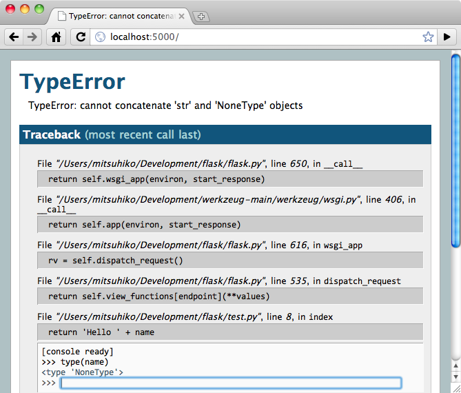

Flask의 세계에 오신것을 환영합니다.¶
Flask 문서에 오신것을 환영합니다. 이 문서는 다양한 파트로 나누어져 있습니다. 저자는 설치하기 와 빠르게 시작하기 를 먼저 보실것을 추천합니다. 빠르게 시작하기 뿐만아니라, 어떻게 Flask 어플리케이션을 만들 수 있는지 좀 더 상세하게 다루는 튜토리얼 또한 볼 수 있습니다.
- 만약 여러분이 오히려 Flask의 내부로 직접 뛰어 들고 싶은 경우라면,
- API 문서를 확인하십시오. 일반적으로 사용되는 패턴들은
Flask를 위한 패턴들 섹션을 확인하면 됩니다..
Flask는 두개의 외부 라이브러리에 의존합니다.: 바로 Jinja2 템플릿엔진과 Werkzeug WSGI 툴킷입니다. 이 라이브러리들은 이 문서에서 다루지않습니다. 만약 여러분이 이 라이브러리들에 대해서 깊이 알고 싶다면 다음의 링크를 확인하십시오.
사용자 가이드¶
이 문서의 사용자 가이드 파트에서는, Flask에 관한 일부 배경 정보들로 시작해서 지시사항을 따라하는 Flask 웹 개발을위한 단계별 지침에 초점을 맞추고 있습니다..
머리말¶
Flask를 시작하기 전에 먼저 이글을 읽어주시기 바랍니다. 이 글이 여러분의 프로젝트에서 이것을 사용하여야 하거나 사용하지 말아야 할때에 해당 목적과 의도에 대한 일부 질문들에 대한 답변이 될 수 있기를 희망합니다.
“마이크로(Micro)”는 무엇을 뜻하는가?¶
“마이크로”는 여러분의 웹 어플리케이션이 하나의 파이썬 파일으로 개발되야한다는 걸 말하는게 아니다.(그렇게 해석될 수 도 있겠지만…) 또한, 기능적으로 부족하다는걸 의미하지도 않는다. 마이크로 프레임워크(Microframework)에서의 “마이크로”는 핵심기능만 간결하게 유지하지만, 확장가능한 것을 목적으로 한다. Flask는 여러분을 위해 데이타베이스를 선택해주지 않는다. Flask에서 제공하는 템플릿 엔진을 변경하는것은 쉽다. 그밖에 모든것은 여러분에게 달려있고, 그래서 Flask는 여러분이 필요한 모든것일 수 있고, 필요없는것은 하나도 없을것이다.
설정과 관례¶
Flask로 시작할때, 여러분은 잘 정의된 기본값이 있는 많은 설정값들과 몇가지 관례를 볼 수 있다. 템플릿과 정적파일은 어플리케이션의 파이썬 소스 디렉토리의 하위 디렉토리에 templates과 statics에 저장된다. 이 방식은 변경할 수 있지만, 처음부터 반드시 그럴 필요는 없다.
Flask를 이용하여 성장시키기¶
여러분이 Flask를 가지고 개발할때, 운영을 위해 여러분의 프로젝트와 통합할 여러 종류의 확장을 찾게된다. Flask 핵심 개발팀은 많은 확장을 검토했고 그것들이 앞으로의 배포판과 어긋나지 않는다는것을 보증한다.
여러분의 코드의 규모가 점점 커지면서, 여러분의 프로젝트에 설계에 적합한 선택을 할 기회가 온다 Flask는 계속적으로 파이썬이 제공하는 최고의 모듈에 간결한 연결층을 제공할 것이다. 여러분은 SQLAlchemy이나 다른 디비툴 또는 알맞게 비관계형 데이타 저장소로 고급 패턴을 만들수도 있고 파이썬 웹 인터페이스인 WSGI를 위한 프레임웍에 관계없이 사용할 수 있는 툴을 이용할 수 있다.
Flask는 프레임웍의 기능을 변경하기 위한 많은 훅(hook)을 포함한다. 그것보다 더 많이 변경하고 싶다면 Flask class 자체를 상속하면 된다. 여러분이 subclassing에 관심이 있다면 크게 만들기 챕터를 확인한다. 디자인 패턴이 궁금하다면 Design Decisions in Flask 에 대한 섹션으로 넘어가라.
계속하기 설치하기, 빠르게 시작하기, 혹은 경험있는 프로그래머를 위한 머릿글.
경험있는 프로그래머를 위한 머릿글¶
Flask에서 쓰레드 로컬¶
Flask에 적용된 설계 원칙 중 하나는 단순한 업무는 단순해야한다는 것이다. 그런 종류의 업무들은 많은 코드를 요구하지 않아야 하지만, 여러분을 제약해서도 안된다. 그런 이유로 Flask는 몇몇 사람들을 놀라게 하거나, 정통적인 방식이 아니라고 생각할 수도 있는 몇개의 설계 원칙을 갖고 있다. 예를 들면, Flask는 내부적으로 쓰레드로컬방식을 사용해, 쓰레드-안전한 상태를 유지하기 위해 하나의 요청에서 함수들이 돌아가며 객체를 주고받을 필요가 없도록 했다. 이런 접근은 편리하지만, 의존 주입을 하거나 요청에 고정된 값을 사용하는 코드를 재사용하려할 때 유효한 요청 문맥을 요구한다. Flask 프로젝트는 쓰레드로컬에 대해 투명하고, 숨기지 않고, 심지어 사용되는 코드와 문서에서 드러내고 있다.
웹개발에서 주의점¶
웹 어플리케이션을 개발할때에는 항상 보안에 대해 신경써야한다.
여러분이 웹 개발을 할때, 개발된 어플리케이션의 사용자들은 여러분의 서버에 사용자의 정보가 등록되고 남겨지는 것을 허용할 것이다. 사용자는 데이타에 있어서 여러분을 신뢰한다는 것이다. 만약 여러분이 직접 작성한 어플리케이션의 유일한 사용자라 할지라도, 자신의 데이타가 안전하기를 원할 것이다.
불행히도, 웹 어플리케이션의 보안이 타협되는 여러 가지 경우가 있다. 프라스크는 현대의 웹 어플리케이션의 가장 일반적인 보안 문제인 XSS로 부터 여러분을 보호한다. 굳이 여러분이 안전하지 않게 작성된 HTML을 안전하게 변환하지 않더라도, Flask와 그 하부의 Jinja2 템플릿 엔진이 여러분을 보호해준다. 그러나 보안문제를 유발하는 더 많은 경우가 있다.
이 문서는 보안에 있어 주의를 요구하는 웹 개발의 측면을 여러분에게 당부하고 있다. 이런 보안 관점의 몇몇은 일부 사람이 생각하는것 보다 훨씬 복잡하고, 우리 모두는 때때로 취약점이 이용될것이라는 가능성을 뛰어난 공격자가 우리의 어플리케이션의 취약점을 찾아낼때까지 낮게 점치곤한다. 그리고 여러분의 어플리케이션이 공격자가 칩입할 만큼 중요하지 않다고 생각하지 마라. 공격의 종류에 따라, 자동화된 bot이 여러분의 데이타베이스에 스팸을 채우기 위해 탐색하거나, 악성코드를 링크하는 방식과 같은 기회들이 있다.
Flask는 여러분이 반드시 주의하며 개발해야하고, 요구사항에 맞춰 개발할때 취약점을 조심해야 하는 측면은 어느 다른 프레임워크와도 같다.
Python3의 상태¶
요즘 파이썬 공동체는 파이썬 프로그래밍 언어의 새로운 버전을 지원하기 위한 라이브러리의 개선 과정중이다. 상황은 대단히 개선되고 있지만, 우리들이 파이썬3로 넘어가는데 걸림돌이 되는 몇가지 이슈가 있다. 이 문제들은 부분적으로 오래동안 검토되지 않은 언어의 변화에 의해 야기됐다. 부분적으로는 우리들이 저수준API가 파이썬3에서 유니코드의 차이점에 맞춰 어떤식으로 바뀌어야 하는지 해결해내지 못했다는 점도 있다.
Werkzeug과 Flask는 그 변경에 대한 해결책을 찾는 순간 파이썬3로 포팅되고, 파이썬3으로 개발된 버전의 업그레이드에 대한 유용한 팁을 제공할 것이다. 그때까지, 여러분은 개발하는 동안 파이썬2.6이나 2.7을 파이썬3 경고를 활성화한 상태로 사용할 것을 권고한다. 여러분이 근래에 파이썬3로 업그레이드를 계획중이라면 How to write forwards compatible Python code.를 읽는것을 적극 추천한다.
설치하기¶
Flask는 Werkzeug 와 Jinja2 라이브러리에 의존적이다. Werkzeug는 웹어플리케이션과 다양한 서버 사이의 개발과 배포를 위한 표준 파이썬 인터페이스인 WSGI를 구현한 툴킷이다. Jinja2 는 HTML 템플릿을 렌더링 하는 템플릿엔진이다.
여러분은 어떻게 여러분의 컴퓨터에 Flask와 관련된 모든 것들을 빠르게 얻을 수 있을까? 선택할 수 있는 방법은 여러가지가 있으나 가장 강력한 방법은 virtualenv을 사용하는 것이다. 그래서 먼저 virtualenv를 살펴보려 한다.
Flask 설치를 시작하기 위해 파이썬 2.5 또는 상위 버전을 사용할 것이다. 그래서 최신 파이썬 2.x버전이 설치되어 있는 것을 확인해라. 이 글을 쓰는 시점에 WSGI 명세서는 아직 파이썬 3을 위해 마무리되지 않았다. 그래서 Flask는 파이썬 3.x 버전을 지원할 수 없다.
virtualenv¶
virtualenv는 아마도 당신이 개발 과정에서 꼭 사용해야만 하는 툴일것이다. 만약 당신이 운영서버에 쉘(shell) 환경에서 접속해야 하고 다양한 파이썬실행 환경이 필요하다면 유용하게 사용할 수 있는 툴이다.
virtualenv는 어떤 문제를 해결해 줄 수 있는가? 만약 당신이 나처럼 Python을 많이 사용하고 있고 Flask 기반의 웹 어플리케이션과 같이 현재 사용하고 있는 것과 다른 파이썬 환경을 사용해야 한다면 virtualenv를 사용해 볼 수 있는 좋은 기회가 될 수 있다. 게다가 당신이 진행하고 있는 더 많은 프로젝트들이 서로 다른 Python 버전에서 작동해야 한다거나 혹은 서로 다른 버전의 Python 라이브러리들 에서 작동해야 한다면 어떨까? 현실을 직시해보자! 많은 라이브러리들은 종종 하위버전 호환성들을 깨뜨린다. 그리고 어떤 심각한 응용프로그램이라 하더라도 라이브러리와 의존관계가 없을 수는 없다. 그렇다면 두개 혹은 더 많은 당신의 프로젝트들의 의존관계의 충돌을 해결하기 위해서 무엇을 할것인가?
Virtualenv가 당신을 구해 줄것이다. virtualenv를 이용하여 Python을 아무런 문제 없이 각각의 프로젝트 환경에 맞게 다중설치가 가능하도록 해준다. 이방법은 실제로 독립된 버전의 Python 실행 환경에 단순히 복사하는 것이 아니라 서로 다른 프로젝트 환경이 독립적으로 실행 환경을 명백하게 가져갈 수 있도록 격리 시키는 방법이다. 이제 virtualenv가 어떻게 작동하는지 알아보자!
만약 당신이 Mac OS X 혹은 Linux 환경이라면, 다음의 두가지 명령어로 virtualenv를 작동시킬 수 있다:
$ sudo easy_install virtualenv
혹은 좀더 나은 방법으로:
$ sudo pip install virtualenv
위의 방법을 사용하면 당신의 시스템에 virtualenv가 설치 될걸이다. 아마도 당신의 시스템에서 사용하는 package manager를 사용할 수 도 있다. 만약 당신이 우분투를 사용한다면
$ sudo apt-get install python-virtualenv
만약 당신이 Windows 를 사용하고 있거나 easy_install 명령어를 가지고 있지 않다면, 명령어를 먼저 설치해야 한다. Windows에서의 pip 와 distribute 을 확인하여 설치 방법에 대한 자세한 정보를 확인할 수 있다. easy_install이 설치가 완료되면 위와 같은 방법으로 명령어를 실행하여 virtualenv를 설치할 수 있다. 다만, Windows 환경에서는 sudo 가 필요없다.
일단 virtualenv가 설치되었다면, 쉘을 실행시키고 자신만의 실행환경을 만들 수 있다. 나는 보통 프로젝트 폴더를 만들고 폴더안에서 venv 를 이용하여 다음과 같이 작업한다.
$ mkdir myproject $ cd myproject $ virtualenv venv New python executable in venv/bin/python Installing distribute............done.
이제, 당신이 해당 프로젝트에서 작업하고 싶을 때마다, 그에 해당하는 실행환경을 활성화 시킬 수 있다. OS X혹은 Linux 환경이라면 다음과 같이 실행한다.:
$ . venv/bin/activate
만약 당신이 Windows 사용자라면, 다음과 같이 실행한다.:
$ venv\scripts\activate
어떤 방식이든, 당신은 이제 virtualenv 를 사용할 수밖에 없을 것이다. (virtualenv이 활성화된 상태를 보여주기 위핸 당신의 쉘 프롬프트가 어떻게 변화 되는지 주목하라).
이제 당신은 다음의 명령어를 입력하여 활성화된 virtualenv 를 통해 Flask를 설치할 수 있다.:
$ pip install Flask
몇초동안만 기다리면 설치가 완료 된다.
시스템 전체에 적용하여 설치¶
이 방법이 가능하긴 하지만, 추천하지는 않겠다. 단지 루트(root)권한을 이용하여 pip 를 실행시키면 된다.:
$ sudo pip install Flask
(Windows 시스템에서는 , 위 명령어를 명령어 프롬프트에서 관리자(administrator) 권한으로 실행시키면 된다. 그리고 sudo 는 생략하자.)
위태로운 모험 하기¶
만약 당신이 가장 최신버전의 Flask를 이용하여 작업을 하고 싶다면, 두가지 방법이 있다.: pip 를 이용하여 작업환경으로 Flask의 개발중 버전을 가져오거나, git checkout을 사용할 수 있다. 어떤 방법을 사용하든, virtualenv의 사용을 추천한다.
새로운 virtualenv를 만들고 git checkout을 실행하여 개발모드의 Flask를 실행할 수 있다.:
$ git clone http://github.com/mitsuhiko/flask.git
Initialized empty Git repository in ~/dev/flask/.git/
$ cd flask
$ virtualenv venv --distribute
New python executable in venv/bin/python
Installing distribute............done.
$ . venv/bin/activate
$ python setup.py develop
...
Finished processing dependencies for Flask
이 방법을 통해 의존관계에 있는 것들을 가져오게 되고 git에 등록된 현재버전을
virtualenv안으로 가져오게 된다. 그다음에 git pull origin 을 통하여 최신
버전으로 업데이트가 가능하다.
git을 사용하지 않고 최신 버전을 가져오는 방법은 다음과 같다.:
$ mkdir flask
$ cd flask
$ virtualenv venv --distribute
$ . venv/bin/activate
New python executable in venv/bin/python
Installing distribute............done.
$ pip install Flask==dev
...
Finished processing dependencies for Flask==dev
Windows에서의 pip 와 distribute¶
Windows 환경에서는 easy_install 의 설치가 조금 복잡해 보인다. 하지만 그래도 그리 어렵지 않다. 가장 쉬운 방법은 distribute_setup.py 를 다운로드 받아서 실행하는 것이다. 다운로드 폴더를 열고 다운 받은 파일을 더블클릭한다.
다음으로, easy_install 명령어를 PATH 에 실행경로로 추가하고 Python 설치 디렉토리의 Scripts의 경로도 실행경로에 추가하여야 한다. 이렇게 하려면, 바탕화면이나 시작메뉴의 내컴퓨터 아이콘을 마우스 오른쪽 버튼으로 클릭하여 나오는 메뉴에서 “등록정보”를 선택하여 실행한다. 이제 해당 메뉴에서 “고급 시스템 설정”(Windows XP의 경우 “고급” 탭) 을 선택한다. 다음으로 “환경 변수”를 선택한 후 “PATH” 를 클릭하여 “시스템 변수” 항목에 Python 설치 경로와 Python의 Scripts 폴더이름을 실행경로로 등록한다. 주의할 점은 기존에 설정되어 있는 값과 세미콜론(;)으로 구분되어져야 한다는 점이다. 설치된 Python 버전이 2.7이고 기본 경로에 설치되었다면 다음과 같을 것이다.:
;C:\Python27\Scripts
마침내 당신은 해냈다! 이제 제대로 동작하는지 확인해 보자, 명령어 창을 열고 프롬프트에
easy_install. 만약 Windows Vista 혹은 Windows7 을 사용중이고 ‘User Account Control’
이 활성화 되어 있다면 관리자 권한으로 진행하여야 한다.
이제 당신은 easy_install 를 손에 넣었다! pip 를 설치해 보자:
> easy_install pip
빠르게 시작하기¶
Flask를 시작하기 원합니까? 이 장은 Flask에 대해 알맞은 소개를 한다. 이 장은 여러분이 이미 Flask를 설치했다고 가정할것이고, 설치가 안됐다면 설치하기 섹션으로 넘어가기 바란다.
기본 애플리케이션¶
기본 Flask 어플리케이션은 다음과 같은 모습이다.
from flask import Flask
app = Flask(__name__)
@app.route('/')
def hello_world():
return 'Hello World!'
if __name__ == '__main__':
app.run()
이 내용을 hello.py (아니면 비슷한 다른 이름으로) 저장하고 파이썬 인터프리터로 실행한다. 여러분이 작성한 어플리케이션을 `flask.py`로 호출하지 않도록 주의해라. 왜냐하면 Flask 자체와 충돌이 나기 때문이다.
$ python hello.py
* Running on http://127.0.0.1:5000/
자, 이제 웹브라우져를 열고 http://127.0.0.1:5000/, 로 이동해보자 그러면, 여러분이 작성한 hello world greeting이 화면에 나와야한다.
그렇다면, 위의 코드는 무슨 일은 한걸까?
- 먼저 우리는
Flaskclass를 임포트했다. 이 클래스의 인스턴스가 우리의 WSGI어플리케이션이 될것이다. 첫번째 인자는 이 어플리케이션의 이름이다. 여러분이 단일 모듈을 사용한다면(위의 예제처럼),여러분은 __name__`을 사용해야한다. 왜냐하면, 어플리케이션으로 시작되는지, 혹은 모듈로 임포트되는지에 따라 이름이 달라지기 때문이다.(`‘__main__’`` 대 실제로 임포트한 이름) 더 자세한 정보는Flask문서를 참고해라. - 다음은 Flask class의 인스턴스를 생성한다. 인자로 모듈이나 패키지의 이름을 넣는다. 이것은 플라스크에서 팀플릿이나 정적파일을 찾을때 필요하다.
route()데코레이터를 사용해서 Flask에게 어떤 URL이 우리가 작성한 함수를 실행시키는지 알려준다.- 작성된 함수의 이름은 그 함수에 대한 URL을 생성하는데 사용되고(url_for 함수 참고), 그 함수는 사용자 브라우저에 보여줄 메시지를 리턴한다.
- 최종적으로
run()함수를 사용해서 우리가 개발한 어플리케이션을 로컬서버로 실행한다. 소스파일을 모듈이 아닌 python 인터프리터를 이용해서 직접 실행한다면if __name__ == '__main__':이 문장은 우리가 실행한 서버가 현재 동작되는 유일한 서버라는 것을 보장한다.
실행된 서버를 중지하려면, control-C를 누른다. .. _public-server:
외부에서 접근 가능한 서버
위의 서버를 실행했다면, 그 서버는 네트워크상에 있는 다른 컴퓨터에서 접근이 안되고 여러분의 로컬서버에서만 접근 가능하다. 이것이 기본설정인 이유는 디버그모드상에서 어플리케이션의 사용자가 임의의 파이썬코드를 여러분의 컴퓨터에서 실행할 수 있기 때문이다.
여러분이 debug 모드를 해제하거나 여러분의 네트워크상에 있는 사용자들을 신뢰한다면,
다음과 같이 간단히 run() 메소드의 호출을 변경해서 서버의 접근을
오픈할 수 있다.
app.run(host='0.0.0.0')
위의 변경은 여러분의 OS에게 모든 public IP를 접근가능도록 설정한다.
디버그 모드¶
run() 메소드는 로컬개발서버를 실행시키기에 좋지만 코드 변경후에
수동으로 재시작해야한다. 플라스크는 그런 번거로운것을 개선한 방식을 제공한다. 여러분이
디버그모드를 지원하면, 서버는 코드변경을 감지하고 자동으로 리로드하고, 문제가 발생하면
문제를 찾을수 있도록 디버거를 제공한다.
디버깅을 활성화하는 두가지 방식이 있다. 한가지는 어플리케이션 객체에 플래그로 설정하는 방식이거나
app.debug = True
app.run()
어플리케이션을 실행할때 파라미터로 넘겨주는 방식이다.
app.run(debug=True)
두 메소드는 같은 결과를 보여준다.
주의
대화식 디버거가 forking 환경에서 동작안됨에도 불구하고(운영서버에서는 거의 사용이 불가능함), 여전히 임의의 코드가 실행될 수 있다. 이런점은 주요 보안 취약점이 될 수 있으므로, 운영 환경에서는 절대 사용하지 말아야한다.
디버거의 스크린샷:
디버거에 대해 좀 더 궁금하다면 디버거로 작업하기 를 참고 하기 바란다.
라우팅¶
현대 웹 어플리케이션은 잘 구조화된 URL로 구성되있다. 이것으로 사람들은 URL을 쉽게 기억할 수 있고, 열악한 네트워크 연결 상황하의 기기들에서 동작하는 어플리케이션에서도 사용하기 좋다. 사용자가 인덱스 페이지를 거치지 않고 바로 원하는 페이지로 접근할 수 있다면, 사용자는 그 페이지를 좋아할 것이고 다시 방문할 가능성이 커진다.
위에서 본것처럼, route() 데코레이터는 함수와 URL을 연결해준다. 아래는 기본적인 예제들이다.
@app.route(‘/’) def index():
return ‘Index Page’@app.route(‘/hello’) def hello():
return ‘Hello World’
하지만, 여기엔 더 많은것이 있다. 여러분은 URL을 동적으로 구성할 수 있고, 함수에 여러 룰을 덧붙일수있다.
변수 규칙¶
URL의 변수 부분을 추가하기위해 여러분은 <variable_name>``으로 URL에 특별한 영역으로
표시해야된다. 그 부분은 함수의 키워드 인수로써 넘어간다. 선택적으로,
``<converter:variable_name> 으로 규칙을 표시하여 변환기를 추가할 수 있다.
여기 멋진 예제가 있다.
@app.route('/user/<username>')
def show_user_profile(username):
# show the user profile for that user
return 'User %s' % username
@app.route('/post/<int:post_id>')
def show_post(post_id):
# show the post with the given id, the id is an integer
return 'Post %d' % post_id
다음과 같은 변환기를 제공한다. :
| int | accepts integers |
| float | like int but for floating point values |
| path | like the default but also accepts slashes |
유일한 URL과 리디렉션 동작
Flask의 URL 규칙은 Werkzeug의 라우팅 모듈에 기반한다. 그 라우팅 모듈의 기본 사상은 아파치나 초기 HTTP서버들에서 제공한 전례에 기반을 둔 잘 구성되고 유일한 URL을 보장하는것이다.
아래의 두가지 규칙을 살펴보자
@app.route('/projects/')
def projects():
return 'The project page'
@app.route('/about')
def about():
return 'The about page'
이 두 둘은 비슷해 보이지만, URL 정의에 있어서 뒷 슬래쉬(trailing slash) 사용이 다르다. 첫번째 경우는, projects 끝점에 대한 정규 URL은 뒷 슬래쉬를 포함한다.이점에서 파일시스템의 폴더와 유사하다. 뒷 슬래쉬 없이 URL에 접근하면, Flask가 뒷 슬래쉬를 가진 정규 URL로 고쳐준다.
그러나, 두번째 경우의 URL은 Unix계열의 파일의 경로명처럼 뒷 슬래쉬없이 정의됐다. 이 경우, 뒷 슬래쉬를 포함해서 URL에 접근하면 404”페이지를 찾지 못함” 에러를 유발한다.
이것은 사용자가 뒷 슬래쉬를 잊어버리고 페이지에 접근했을때 상대적인 URL이 문제없이 동작하게한다. 이 방식은 아파치 및 다른 서버들이 동작하는 방식과 일치한다. 또한, URL을 유일하게 유지할 것이고, 검색엔진이 같은 페이지를 중복해서 색인하지 않도록 도와준다.
URL 생성¶
플라스크가 URL을 맞춰줄수 있다면, URL을 생성할 수 있을까? 물론이다. 라우팅이 설정된 함수에
대한 URL을 얻어내기위해서 여러분은 url_for() 함수를 사용하면 된다. 이
함수는 첫번째 인자로 함수의 이름과 URL 룰의 변수 부분에 대한 다수의 키워드를 인자로 받는다.
알수없는 인자는 쿼리 인자로 URL에 덧붙여진다. :
>>> from flask import Flask, url_for
>>> app = Flask(__name__)
>>> @app.route('/')
... def index(): pass
...
>>> @app.route('/login')
... def login(): pass
...
>>> @app.route('/user/<username>')
... def profile(username): pass
...
>>> with app.test_request_context():
... print url_for('index')
... print url_for('login')
... print url_for('login', next='/')
... print url_for('profile', username='John Doe')
...
/
/login
/login?next=/
/user/John%20Doe
(이 테스트에서 test_request_context() 를 사용한다. 이 함수는
플라스크에게 현재 파이썬 쉘에서 테스트를 하고 있음에도 지금 실제로 요청을 처리하고 있는것
처럼 상황을 제공한다. 컨텍스트 로컬 섹션에서 다시 설명이 언급된다).
왜 템플릿에 URL을 하드코딩하지 않고 URL을 얻어내기를 원하는가? 여기엔 세가지 적합한 이유가 있다.:
URL역변환이 URL을 하드코딩하는것 보다 훨씬 설명적이다. 더 중요한것은, 이 방식은 전체적으로 URL이 어디있는지 기억할 필요없이 한번에 URL을 다 변경할 수 있다..
URL을 얻어내는것은 특수 문자 및 유니코드 데이타를에 대한 이스케이핑을 명확하게 해주기때문에 여러분이 그것들을 처리할 필요가 없다..
- 여러분이 작성한 어플케이션이 URL의 최상위 바깥에 위치한다면 (예를 들면,
/대신에/myapplication),url_for()가 그 위치를 상대적 위치로 적절하게 처리해줄것이다..
HTTP 메소드¶
HTTP(웹 어플리케이션에서 사용하는 프로토콜)는 URL 접근에 대해 몇가지 다른 방식을 제공한다.
기본적으로 GET 방식으로 제공되지만, route() 데코레이터에
methods 인자를 제공하면 다른 방식으로 변경할 수 있다. 아래에 몇가지 예가 있다:
@app.route('/login', methods=['GET', 'POST'])
def login():
if request.method == 'POST':
do_the_login()
else:
show_the_login_form()
GET 방식이 나타난다면, HEAD 가 자동적으로 더해질것이다. 여러분들이 그것을 처리할 필요가 없다. HEAD 요청은 HTTP RFC (HTTP프로토콜을 설명하는 문서)의 요청으로써 처리된다는 것을 보장할 것이다. 그래서 여러분은 HTTP명세에 대한 그 부분을 완전히 신경쓰지 않아도 된다. 마찬가지로, 플라스크0.6에서는 OPTION 을 자동으로 처리한다.
HTTP 메소드가 뭔지 모르는가? 걱정하지 말자, 여기 짧게 요약된 HTTP 메소드에 대한 소개와 그것이 중요한 이유가 있다. :
HTTP 메소드 (종종 “the verb” 라고 불리우는..) 는 클라이언트가 서버에게 요청된 페이지를 통해서 무엇을 하도록 원하는지 말해준다. 다음의 메소드들은 매우 일반적인 것들이다 :
- GET
- 브라우저가 어떤 페이지에 저장된 정보를 단지 얻기 위해 서버에 요청하고 서버는 그 정보를 보낸다. 가장 일반적인 메소드다.
- HEAD
- 브라우저가 어떤 페이지에 저장된 내용이 아니라 헤더라 불리는 정보를 요청한다. 어떤 어플리케이션이 GET 요청을 받은것 처럼 처리하나, 실제 내용이 전달되지 않는다. 하부에 있는 Werkzeug 라이브러리들이 그런 처리를 하기 때문에 플라스크에서는 그런 처리는 전혀 할 필요가 없다.
- POST
- 브라우저는 서버에게 새로운 정보를 *전송*하도록 특정 URL에 요청하고 그 정보가 오직 한번 저장되는것을 보장하도록 한다. 이것이 보통 HTML폼을 통해서 서버에 데이터 전송하는 방식이다.
- PUT
- POST 와 유사하지만 서버가 오래된 값들을 한번 이상 덮어쓰면서 store procedure를 여러번 실행할 수 있다. 여러분이 이것이 유용한 이유를 물을수도 있지만, 몇가지 적당한 이유가 있다. 전송시 연결을 잃어버리는 경우는 생각해보면, 브라우저와 서버사이에서 정보의 단절없이 요청을 다시 안전하게 받을 수도 있다. POST 는 단 한번 요청을 제공하기 때문에 이런 방식은 불가능하다.
- DELETE
- 주어진 위치에 있는 정보를 제거한다..
- OPTIONS
- 클라이언트에게 요청하는 URL이 어떤 메소드를 지원하는지 알려준다. Flask 0.6부터 이 기능은 자동 구현된다..
현재 흥미로운 부분은 HTML4와 XHTML1에서 폼이 서버로 전달하는 메소드는 GET 과 POST 다. 그러나 자바스크립와 미래의 HTML표준으로 여러분은 다른 메소드도 사용할 수 있다. 게다가,HTTP는 최근에 상당히 널리 사용되고 있고, 브라우저가 HTTP를 사용하는 유일한 클라이언트가 아니다. 예를 들면, 많은 버전관리 시스템이 HTTP를 사용한다.
정적 파일¶
동적인 웹 어플리케이션은 정적 파일은 필요로한다. 그것들은 보통 자바스크립트나 CSS파일을 의미한다. 이상적으로 웹서버는 정적 파일들을 서비스하지만, 개발시에는 플라스크가 그 역할을 대신해준다. 단지 static 이라는 폴더를 여러분이 생성한 패키지 아래에 만들거나 모듈 옆에 위치시키면 개발된 어플리케이션에서 /static 위치에서 정적 파일을 제공할 것이다.
정적파일에 대한 URL을 얻으려면, 특별한 'static' 끝점 이름을 사용해야한다
url_for('static', filename='style.css')
이 파일(style.css)는 파일시스템에 static/style.css 로 저장되어야한다.
템플릿 보여주기¶
파이썬 소스코드에서 HTML을 생성하는 것은 그다지 재밌는 일은 아니다.(굉장히 번거로운 일이다) 왜냐하면 어플리케이션 보안을 위해 동적으로 변환되는 값에 대해 이스케이핑을 여러분 스스로 작성해야한다. 그런 불편함때문에 Flask는 <http://jinja.pocoo.org/2/>`_ 를 템플릿엔진으로 구성하여 자동으로 HTML 이스케이핑을 한다.
템플릿을 뿌려주기 위해, 어려분은 render_template() 메소드를 사용할 수 있다.
여러분이 해야하는 것은 단지 템플릿의 이름과 템플릿에 보여줄 변수를 키워드 인자로 넘겨주면
된다. 아래는 템플릿을 뿌려주는 방식의 간단한 예를 보여준다
from flask import render_template
@app.route('/hello/')
@app.route('/hello/<name>')
def hello(name=None):
return render_template('hello.html', name=name)
Flask는 templates 폴더에서 템플릿을 찾는다. 여러분이 모듈로 어플리케이션을 개발했다면 이 폴더는 그 모듈 옆에 위치하고, 패키지로 개발했다면 그 패키지 안에 위치한다 :
Case 1: 모듈:
/application.py
/templates
/hello.html
Case 2: 패키지:
/application
/__init__.py
/templates
/hello.html
플라스크에서는 템플릿에 있어서 Jinja2의 강력함을 사용할 수 있다. Jinja2에 대한 더 자세한 내용은 Jinja2 Template Documentation 공식 문서를 참고하기 바란다.
여기 템플릿 예제가있다:
<!doctype html>
<title>Hello from Flask</title>
{% if name %}
<h1>Hello {{ name }}!</h1>
{% else %}
<h1>Hello World!</h1>
{% endif %}
템플릿 안에서도 여러분은 request,:class:~flask.session 와
g [1] 객체에 접근할 수 있다.
템플릿에서 특히 상속이 유용하게 사용된다. 템플릿 상속에 대해서 자세한 내용을 보고 싶으면 템플릿 상속 패턴문서를 참고하기 바란다. 기본적으로 템플릿 상속은 각 페이지에서 특정 요소를 유지할수 있게 해준다.(헤더, 네비게이션과 풋터)
자동 이스케이핑은 켜져있고, name 이란 변수가 HTML에 포함되있다면, 그 변수값은 자동으로
이스케이핑된다. 여러분이 변수가 안전하고 그 변수를 안전한 HTML로 만든다면,
Markup 템플릿에서 |safe 필터를 사용해서 안전하게 만들수 있다.
템플릿에 대한 자세한 내용은 Jinja2 문서를 참고하기 바란다.
여기에 Markup 클래스를 사용하는 예제가 있다:
>>> from flask import Markup
>>> Markup('<strong>Hello %s!</strong>') % '<blink>hacker</blink>'
Markup(u'<strong>Hello <blink>hacker</blink>!</strong>')
>>> Markup.escape('<blink>hacker</blink>')
Markup(u'<blink>hacker</blink>')
>>> Markup('<em>Marked up</em> » HTML').striptags()
u'Marked up \xbb HTML'
버전 0.5으로 변경: Autoescaping is no longer enabled for all templates. The following
extensions for templates trigger autoescaping: .html, .htm,
.xml, .xhtml. Templates loaded from a string will have
autoescaping disabled.
| [1] | Unsure what that g object is? It’s something in which
you can store information for your own needs, check the documentation of
that object (g) and the Flask에서 SQLite 3 사용하기 for more
information. |
요청 데이타 접근하기¶
웹 어플리케이션에 있어서 클라이언트에서 서버로 보내는 데이타를 처리하는 것은 중요한 일이다.
Flask에서 이 정보는 글로벌한 request 객체에 의해 제공된다. 여러분이
파이썬 경험이 있다면, 어떻게 그 객체가 글로벌하고 쓰레드 안전하게 처리되는지 궁금할 수 도
있다. 그 답은 컨텍스트 로컬에 있다. :
컨텍스트 로컬¶
Flask 에서 어떤 객체들은 보통 객체들이 아닌 전역 객체들이다. 이 객체들은 실제로 어떤 특정한 문맥에서 지역적인 객체들에 대한 대리자들이다. 무슨 말인지 어렵다. 하지만, 실제로는 꽤 쉽게 이해할 수 있다.
쓰레드를 다루는 문맥을 생각해보자. 웹에서 요청이 하나 들어오면, 웹서버는 새로운 쓰레드를 하나 생성한다 (그렇지 않다면, 다른 방식으로 기반을 이루는 객체가 쓰레드가 아닌 동시성을 제공하는 시스템을 다룰 수도 있다). 플라스크가 내부적으로 요청을 처리할때, 플라스크는 현재 처리되는 쓰레드를 활성화된 문맥이라고 간주하고, 현재 실행되는 어플리케이션과 WSGI환경을 그 문맥(쓰레드)에 연결한다. 이렇게 처리하는 것이 문맥을 지능적으로 처리하는 방식이고, 이렇게하여 한 어플리케이션이 끊어짐없이 다른 어플리케이션을 호출할 수 있다.
그렇다면 이것은 여러분에게 어떤 의미인가? 기본적으로 여러분이 유닛 테스트(Unit Test)와
같은 것을 하지 않는다면 이것을 완전히 무시할 수 있다. 여러분은 요청 객체에 의존하는 코드가
갑자기 깨지는것을 알게 될것인데, 왜냐하면 요청 객체가 존재하지 않기 때문이다. 해결책은 요청
객체를 생성해서 그 객체를 문맥에 연결하는 것이다. 유닛 테스트에 있어서 가장 쉬운 해결책은
test_request_context() 문맥 관리자(Context Manager)를 사용하는
것이다. with 절과 함께 사용해서 test_request_context() 문맥 관리자는 테스트 요청을
연결할 것이고, 그렇게해서 여러분은 그 객체와 상호 작용할 수 있다. 아래에 예가 있다:
from flask import request
with app.test_request_context('/hello', method='POST'):
# now you can do something with the request until the
# end of the with block, such as basic assertions:
assert request.path == '/hello'
assert request.method == 'POST'
다른 방법은 WSGI 환경 변수를 request_context() 메소드에 인자로
넘기는 것이다.
from flask import request
with app.request_context(environ):
assert request.method == 'POST'
요청 객체¶
요청(requqest) 객체는 API(Application Programming Interface) 장에 설명되있으므로,
여기서는 자세히 언급하지 않을것이다(see request). 여기서는 가장 일반적인
동작에 대해 거시적으로 살펴본다. 여러분은 먼저 Flask 모듈에서 요청 개체를
임포트해야한다:
from flask import request
현재 요청 메소도는 method 속성으로 사용할 수 있다. 폼 데이타(
HTTP POST 나 PUT 요청으로 전달된 데이타)에 접근하려면, form
속성을 사용할 수 있다. 아래에 위에서 언급한 두가지 속성에 대한 완전한 예제가 있다:
@app.route('/login', methods=['POST', 'GET'])
def login():
error = None
if request.method == 'POST':
if valid_login(request.form['username'],
request.form['password']):
return log_the_user_in(request.form['username'])
else:
error = 'Invalid username/password'
# 아래의 코드는 요청이 GET 이거나, 인증정보가 잘못됐을때 실행된다.
return render_template('login.html', error=error)
위에 폼 에 접근한 키(username이나 password)가 존재하지 않으면 어떻게 되나? KeyError가
발생한다. 여러분은 표준적인 KeyError 로 이 예외를 잡을 수 있지만, 예외처리를 하지
않는다면 HTTP 400 잘못된 요청(Bad Request)에 대한 오류 페이지를 보여준다. 그렇기 때문에
대다수의 상황에서 이 문제를 여러분이 직접 처리할 필요는 없다.
URL로 넘겨진 파라메터 (?key=value 소위 말하는 질의 문자열)에 접근하려면, 여러분은
args 속성을 사용할 수 있다:
searchword = request.args.get('key', '')
우리는 args속성의 get 을 사용하거나 KeyError 예외를 처리하여 URL파라메터에 접근할 것을 추천한다. 왜냐하면 사용자가 URL을 변경할 수 있으며 사용자에게 친근하지 않은 400 잘못된 요청 페이지를 보여주기 때문이다.
요청 객체에 대한 메소드와 속성의 전체 목록은 request 문서에서 살펴보라.
파일 업로드¶
여러분은 Flask를 사용하여 쉽게 업로드된 파일들을 다룰 수 있다. 여러분의 HTMl form에enctype="multipart/form-data"가 설정하는 것만 잊지 말아라. 그렇지 않으면 브라우저는 파일을 전혀 전송하지 않을 것이다.
업로드된 파일들은 메모리나 파일시스템의 임시 장소에 저장된다. 여러분이
files 객체의 files 속성을 찾아 그 파일들에 접근할 수 있다. 업로드된 각 파일들은 그 dictionary 안에 저장되어 있다. 그것은 마치 표준 파이썬 file 객체처럼 행동한다. 그러나 서버의 파일시스템에 파일을 저장하도록 하는 save() 메소드 또한 가지고 있다. 아래 save 메소드가 어떻게 실행되는지를 보여주는 간단한 예제가 있다:
from flask import request
@app.route('/upload', methods=['GET', 'POST'])
def upload_file():
if request.method == 'POST':
f = request.files['the_file']
f.save('/var/www/uploads/uploaded_file.txt')
...
만약 여러분의 어플리케이션에 파일이 업로드되기 전 클라이언트에서의 파일명을 알고 싶다면,
filename 속성에 접근할 수 있다. 그러나
이 값은 위조될 수 있으며 결코 신뢰할 수 없는 값인 것을 명심해라. 만약 서버에 저장되는
파일명을 클라이언트에서의 파일명을 그대로 사용하기를 원한다면, Werkzeug에서 제공하는
secure_filename() 함수에 그 파일명을 전달하라:
from flask import request
from werkzeug import secure_filename
@app.route('/upload', methods=['GET', 'POST'])
def upload_file():
if request.method == 'POST':
f = request.files['the_file']
f.save('/var/www/uploads/' + secure_filename(f.filename))
...
더 나은 예제를 보고 싶다면 파일 업로드하기 챕터의 패턴을 확인하라.
쿠키¶
쿠키에 접근하기 위해서는 cookies 속성을 사용할 수 있다. 쿠키를
저장하기 위해서는 response 객체의 set_cookie 메소드를 사용할
수 있다. request 객체의 cookies 속성은 클라이언트가 전송하는
모든 쿠키를 가지고 있는 dictionary이다. 만약 여러분이 세션을
사용하기를 원한다면 쿠키를 직접 사용하는 대신에 쿠키 위에서 보안성을 추가한 Flask의
세션 을 사용하라.
Reading cookies:
from flask import request
@app.route('/')
def index():
username = request.cookies.get('username')
# use cookies.get(key) instead of cookies[key] to not get a
# KeyError if the cookie is missing.
Storing cookies:
from flask import make_response
@app.route('/')
def index():
resp = make_response(render_template(...))
resp.set_cookie('username', 'the username')
return resp
쿠키가 respone 객체에 저장되는 것을 주목하다. 여러분이 보통 뷰 함수로부터 단지 문자열을
반환하기 때문에, Flask는 그 문자열들을 여러분을 위해 response 객체로 변환할 것이다. 만약
여러분이 명시적으로 변환하기를 원한다면 여러분은 make_response() 함수를
사용하여 값을 변경할 수 있다.
때때로 여러분은 response 객체가 아직 존재하지 않는 시점에 쿠키를 저장하기를 원할 수도 있다. 지연된(deferred) 요청 콜백 패턴을 사용하면 가능하다.
이것을 위해 응답에 관하여 챕터를 참조해라.
리다이렉션과 에러¶
사용자가 다른 엔드포인트로 redirect하기 위해서는 redirect() 함수를
사용하라. 에러콛를 가지고 일찍 요청을 중단하기를 원한다면 abort() 함수를
사용하라:
from flask import abort, redirect, url_for
@app.route('/')
def index():
return redirect(url_for('login'))
@app.route('/login')
def login():
abort(401)
this_is_never_executed()
위 코드는 사용자가 인덱스 페이지에서 그들이 접근할 수 없는(401은 접근불가를 의미) 페이지로 redirect되어질 것이기 때문에 다소 무의미한 예제일 수는 있으나 어떻게 작동된다는 것을 보여주고 있다.
기본으로 하얀 화면에 검정 글씨의 에러 페이지가 각 에러코드를 위해 보여진다. 만약 여러분이
에러페이지를 변경하기를 원한다면 errorhandler() 데코레이터를 사용할
수 있다:
from flask import render_template
@app.errorhandler(404)
def page_not_found(error):
return render_template('page_not_found.html'), 404
render_template() 호출 뒤에 있는 404 를 주목해하. 이것은 페이지의 상태
코드가 그 페이지를 찾을 수 없다는 404가 되어야 하는 것을 Flask에게 말해 준다. 기본으로
200이 가정되며, 그것은 모든 것이 잘 실행됐다는 것으로 해석된다.
응답에 관하여¶
view 함수로부터 반환되는 값은 자동으로 response 객체로 변환된다. 만약 반환값이
문자열이라면 response body로 문자열과 200 OK 코드, text/html mimtype을 갖는
response객체로 변환된다. Flask에서 반환값을 response 객체로 변환하는 로직은 아래와
같다:
- 만약 정확한 유형의 response객체가 반환된다면 그 객체는 그대로 뷰로부터 반환되어 진다.
- 만약 문자열이 반환된다면, response객체는 해당 데이타와 기본 파라미터들을 갖는 reponse객체가 생성된다.
- 만약 튜플이 반환된다면 튜플 안에 있는 아이템들이 추가적인 정보를 제공할 수 있다.
그런 퓨틀들은 지정된 폼
(response, status, headers)이여야 하며, 그 중 적어도 하나의 아이템이 튜플 안에 있어야 한다. status 값은 statud code를 오버라이드하면 ` headers` 는 추가적인 정보의 list, dictionary가 될 수 있다. - 만약 위의 것들이 아무것도 적용되지 않는다면, Flask는 반환값이 유효한 WSGI application 이라고 가정하고 WSGI application을 response객체로 변환할 것이다.
만약 여러분이 뷰 안에서 결과 response 객체를 찾기를 원한다면 make_response() 함수를 사용할 수 있다.
아래와 같은 뷰를 가지고 있다고 상상해 보아라:
@app.errorhandler(404)
def not_found(error):
return render_template('error.html'), 404
여러분은 단지 make_response() 함수를 사용하여 반환되는 표현을 래핑하고,
변경을 위해 결과 객체를 얻은 다음 반환하기만 하면 된다:
@app.errorhandler(404)
def not_found(error):
resp = make_response(render_template('error.html'), 404)
resp.headers['X-Something'] = 'A value'
return resp
세션¶
Request object외에도 하나의 요청에서 다음 요청까지 사용자에 대한 구체적인 정보를 저장할
수 있는 session 이라는 객체가 있다. 세션은 여러분을 위해 쿠키 위에서
구현되어 지고 암호화를 사용하여 그 쿠키를 서명한다. 즉, 사용자는 쿠키의 내용을 볼 수는
있지만 서명을 위해 사용된 비밀키를 알지 못한다면 쿠키의 내용을 변경할 수 없다는 것을
의미한다.
세션을 사용하기 위해서는 비밀키를 설정해야 한다. 아래 세션이 어떻게 사용되는지 참조해라:
from flask import Flask, session, redirect, url_for, escape, request
app = Flask(__name__)
@app.route('/')
def index():
if 'username' in session:
return 'Logged in as %s' % escape(session['username'])
return 'You are not logged in'
@app.route('/login', methods=['GET', 'POST'])
def login():
if request.method == 'POST':
session['username'] = request.form['username']
return redirect(url_for('index'))
return '''
<form action="" method="post">
<p><input type=text name=username>
<p><input type=submit value=Login>
</form>
'''
@app.route('/logout')
def logout():
# remove the username from the session if it's there
session.pop('username', None)
return redirect(url_for('index'))
# set the secret key. keep this really secret:
app.secret_key = 'A0Zr98j/3yX R~XHH!jmN]LWX/,?RT'
위 예제에서 escape() 는 템플릿 엔진을 사용하지 않을경우 이스케이프를 한다.
무작위(랜덤)로 생성하는 것의 문제는 정말 그것이 무작위(랜덤)한 것인지 판단하기 어렵다는 것이다. 비밀키는 가능한 한 무작위로 생성되어야 하다. 여러분의 OS는 키를 얻는 데 사용할 수 있는 cryptographic random generator(암호 난수 발생기) 기반의 꽤 무작위의 키를 생성하는 방법을 제공한다. :
>>> import os >>> os.urandom(24) '\xfd{H\xe5<\x95\xf9\xe3\x96.5\xd1\x01O<!\xd5\xa2\xa0\x9fR"\xa1\xa8'위 코드를 여러분의 코드에 복사하기/붙혀넣기만 하면 된다.
쿠키 기반의 세션: Flask는 여러분이 값들을 세션 객체 안에 넣고 세션 객체들을 쿠키로 직렬화할 것이다. 만약 쿠키는 사용 가능하나 세션에 저장한 값들이 여러 요청에 걸쳐 지속적으로 사용할 수 없다는 것을 발견한다면, 그리고 분명한 에러 메세지를 얻지 못한다면, 웹 브라우저에 의해 지원되는 쿠키 크기와 응답 페이지 내의 쿠키 크기를 확인해라.
메시지 플래싱¶
좋은 어플리케이션과 유저 인터페이스는 모두 피드백에 관한 것이다. 만약 사용자가 충분한 피드백을 받지 못한다면 사용자들은 아마 결국에는 그 어플리케이션을 싫어할 것이다. Flask는 flashing system을 사용하여 사용자에게 피드백을 주기 위한 정말 간단한 방법을 제공한다. flashing system이란 기본적으로 요청의 끝과 바로 다음 요청에 접근할 때 메세지를 기록하는 것을 가능하게 한다. 이것은 보통 메세지를 사용자에게 노출하기 위한 레이아웃 템플릿과 조합되어 있다.
메세지를 flash 하기 위하여 flash() 메소드를 사용하고 메세지를 가져오기
위하여 템플릿에서 사용할 수 있는 get_flashed_messages() 메소드를 사용할
수 있다. 예제가 필요하면 메시지 플래싱(Message Flashing) 챕터를 확인하기 바란다.
로깅¶
때때로 여러분은 정확해야 하는 데이타를 다뤄야 하나 실제로는 그렇지 못한 상황에 처할 지도
모른다. 예를 들면 형식이 틀린 HTTP 요청을 서버로 보내는 클라이언트 사이드 코드를 가질 지도
모른다. 이런 상황은 사용자가 데이타 조작에 의해 발생할 수 있으며, 클라이언트 코드는
정상적으로 실행되지 않을 것이다. 대부분의 경우에는 이런 상황에서 400 Bad Request 로
응답하는 것은 상관없으나 때때로 400 Bad Request 로 응답하지 않고 코드가 정상적으로
실행되어야 하는 경우가 있다.
이런 경우 여러분은 여전히 수상한 어떤 일이 발생한 것을 로깅하기를 원할지도 모른다. 이런 상황에서 로걸ㄹ 사용할 수 있다. Flask 0.3부터 로거는 여러분이 사용할 수 있도록 미리 설정되어 있다.
아래 로그를 출력하는 예제가 있다.
app.logger.debug('A value for debugging')
app.logger.warning('A warning occurred (%d apples)', 42)
app.logger.error('An error occurred')
첨부된 Logger 이다. 더
많은 정보를 원하면 logging
documentation 문서를 참조해라.
WSGI 미들웨어에서 후킹하기¶
만약 여러분이 여러분이 개발한 어플리케이션을 WSGI 미들웨어에 올리기를 원한다면 여러분은 내부 WSGI 어플리케이션을 래핑할 수 있다. 예를 들면 여러분이 lighttpd의 버그를 피하기 위해 Werkzeug 패키지의 미들웨어 중 하나를 사용하기를 원한다면, 여러분은 아래 코드와 같이 내부 WSGI 어플리케이션을 래핑할 수 있다:
from werkzeug.contrib.fixers import LighttpdCGIRootFix
app.wsgi_app = LighttpdCGIRootFix(app.wsgi_app)
웹서버에 배포하기¶
여러분이 Flask로 개발한 어플리케이션을 배포할 준비가 되었는가? quickstart를 마무리하기 위하여 여러분은 hosted된 플랫폼에 배포할 수 있다. 모든 플랫폼들은 소규모 프로젝트를 위해 무료 서비스를 제공한다:
Flask 어플리케이션을 host할 수 있는 다른 곳도 있다:
- Deploying Flask on Webfaction
- Deploying Flask on Google App Engine
- Sharing your Localhost Server with Localtunnel
만약 여러분이 자신만의 host를 관리하고 서비스하기를 원한다면, 배포 옵션 챕터를 참조하라.
튜토리얼¶
파이썬과 Flask로 어플리케이션을 개발하기를 원하는가? 여기서 예제를 가지고 그것을 배울 기회를 가질 수 있다. 이 튜토리얼에서는 우리는 간단한 마이크로 블로그 어플리케이션을 개발할 것이다. 텍스트만 입력가능한 한 명의 사용자만 지원하며 피드백이나 커멘트를 달 수 없다. 그러나 여러분이 시작하기에 필요한 모든 내용들이 있을 것이다. 우리는 Flask와 파이썬 범위에서 벗어난 데이타베이스로 SQLite를 사용할 것이다. 그 밖에 필요한 것들은 없다.
만약 여러분이 미리 또는 비교를 위해 모든 소스코드를 원한다면 example source 를 확인 하길 바란다.
Flaskr 소개하기¶
우리는 우리의 블로깅 어플리케이션을 flaskr 이라고 부를 것이다. 웬지 덜 웹 2.0스러운 이름을 선택해야할 것 같은 느낌에서 자유로워 진것 같다. 기본적으로 우리는 flaskr을 통해서 다음 사항들을 하기를 원한다:
- 1.사용자가 지정한 자격증명 설정을 이용하여 로그인/로그아웃을 할 수 있게 한다.
- 사용자는 단한명만 지원한다.
- 2.사용자가 로그인하면 사용자는 제목과 내용을 몇몇 HTML과 텍스트로만 입력할 수 있다.
- 우리는 사용자를 신뢰하기 때문에 HTML에 대한 위험성 검증은 하지 않는다.
3.flaskr 페이지에서는 지금까지 등록된 모든 항목들을 시간의 역순으로 상단에 보여준다 최근것을 제일 위로)`(최근것을 제일 위로) 로그인한 사용자는 새로 글을 추가 할 수 있다.
이정도 규모의 어플리케이션에서 사용하기에는 SQLite3도 충분한 선택이다. 그러나 더 큰 규모의 어플리케이션을 위해서는 더 현명한 방법으로 데이타베이스 연결을 핸들링하고 다른 RDBMS를 사용이 가능한 SQLAlchemy 를 사용하는 것이 맞다. 만약 여러분의 데이타가 NoSQL에 더 적합하다면 인기있는 NoSQL 데이타베이스 중 하나를 고려하기를 원할 수도 있다.
아래는 최종 완성된 어플리케이션의 스크린샷이다.:

계속해서 스텝 0 폴더 생성하기를 보자. 스텝 0: 폴더를 생성하기.
스텝 0: 폴더를 생성하기¶
어플리케이션 개발을 시작하기전에, 어플리케이션에서 사용할 폴더를 만들자
/flaskr
/static
/templates
flaskr 폴더는 Python 패키지가 아니다. 단지 우리의 파일들을 저장할 장소이다. 우리는 이 폴더 안에 데이터베이스 스키마 뿐만 아니라 다른 앞으로 소개될 다른 스텝에 나오는 주요 모듈들 넣을 곳이다. static 폴더 내 파일들은 HTTP 를 통해 어플리케이션 사용자들이 이용할 수 있다. 이 폴더는 css와 javascript 파일들이 저장되는 곳이다. Flasks는 templates 폴더에서 Jinja2 템플릿을 찾을 것이다
계속해서 Step 1:데이타베이스 스키마를 보자 스텝 1: 데이터베이스 스키마.
스텝 1: 데이터베이스 스키마¶
먼저 우리는 데이터베이스 스키마를 생성해야 한다. 우리의 어플리케이션을 위해서는 단지 하나의 테이블만 필요하며 사용이 매우 쉬운 SQLite를 지원하기를 원한다. 다음의 내용을 schema.sql 이라는 이름의 파일로 방금 생성한 flaskr 폴더에 저장한다.
drop table if exists entries;
create table entries (
id integer primary key autoincrement,
title string not null,
text string not null
);
이 스키마는 entries 라는 이름의 테이블로 구성되어 있으며 이 테이블의 각 row에는 id, title, text 컬럼으로 구성된다. id 는 자동으로 증가되는 정수이며 프라이머리 키(primary key) 이다. 나머지 두개의 컬럼은 null이 아닌 문자열(strings) 값을 가져야 한다.
계속해서 Step 2: 어플리케이션 셋업 코드를 보자. 스텝 2: 어플리케이션 셋업 코드.
스텝 2: 어플리케이션 셋업 코드¶
이제 우리는 데이터베이스 스키마를 가지고 있고 어플리케이션 모듈을 생성할 수 있다. 우리가 만들 어플리케이션을 flaskr 폴더안에 있는 flaskr.py 라고 부르자. 시작하는 사람들을 위하여 우리는 import가 필요한 모듈 뿐만 아니라 설정 영역도 추가할 것이다. 소규모 어플리케이션을 위해서는 우리가 여기에서 할 모듈 안에 설정을 직접 추가하는 것이 가능하다. 그러나 더 깔끔한 해결책은 설정을 .ini 또는 .py 로 분리하여 생성하여 로드하거나 그 파일로부터 값들을 import하는 것이다.
아래는 flaskr.py 파일 내용이다:
In flaskr.py:
# all the imports
import sqlite3
from flask import Flask, request, session, g, redirect, url_for, \
abort, render_template, flash
# configuration
DATABASE = '/tmp/flaskr.db'
DEBUG = True
SECRET_KEY = 'development key'
USERNAME = 'admin'
PASSWORD = 'default'
다음으로 우리는 우리의 실제 어플리케이션을 생성하고 같은 파일의 설정을 가지고 어플리케이션을 초기화할 수 있다. flaskr.py 내용은
# create our little application :)
app = Flask(__name__)
app.config.from_object(__name__)
from_object() 는 인자로 주어진 객체를 설정값을 읽어 오기 위해 살펴 볼 것이다.
(만약 인자 값이 문자열이면 해당 객체를 임포트 할것이다.) 그리고나서 거기에 정의된 모든 대문자
변수들을 찾을 것이다. 우리의 경우, 우리가 위에서 몇 줄의 코드로 작성했던 설정이다.
여러분은 분리된 파일로도 설정값들을 이동시킬 수 있다.
일반적으로 설정 파일에서 설정값을 로드하는 것은 좋은 생각이다.
위에서 사용한 from_object() 대신 from_envvar()
를 사용하여 설정값을 로드할 수도 있다:
app.config.from_envvar('FLASKR_SETTINGS', silent=True)
위와 같은 방식으로 환경변수를 호출하여 설정값을 로드할 수도 있다.
FLASKR_SETTINGS 에 명시된 설정 파일이 로드되면 기본 설정값들은 덮어쓰기가 된다.
silent 스위치는 해당 환경변수가 존재 하지 않아도 Flask가 작동하도록 하는 것이다.
클라이언트에서의 세션을 안전하게 보장하기 위해서는 secret_key 가 필요하다. secret_key는 추측이 어렵도록 가능한 복잡하게 선택하여야 한다. 디버그 플래그는 인터랙ㅌ브 디버거를 활성화 시키거나 비활성화 시키는 일을 한다. 운영시스템에서는 디버그 모드를 절대로 활성화 시키지 말아야 한다. 왜냐하면 디버그 모드에서는 사용자가 서버의 코드를 실행할수가 있기 때문이다.
우리는 또한 명세화된 데이터베이스에 쉽게 접속할 수 있는 방법을 추가할 것이다. 이방법으로 Python 인터랙티브 쉘이나 스크립트에서 요청에 의해 커넥션을 얻기위해 사용할 수 있다. 이 방법을 뒤에서 좀더 편리하게 만들어 볼 것이다.
def connect_db():
return sqlite3.connect(app.config['DATABASE'])
마지막으로 우리는 파일의 마지막에 단독 서버로 실행되는 애플리케이션을 위한 서버 실행 코드를 한줄 추가 하였다.:
if __name__ == '__main__':
app.run()
여기까지 되어있으면 문제없이 어플리케이션을 시작할 수 있어야 한다. 다음 명령어로 실행이 가능하다:
python flaskr.py
서버가 접근가능한 주소로 실행되었다고 알려주는 메시지를 접할 수 있을 것이다.
우리가 아직 아무런 뷰(view)를 만들지 않았기 때문에 브라우저에서는 페이지를 찾을 수 없다는 404에러를 볼 수 있을 것이다. 이부분에 대해서는 좀 더 후에 살펴 보도록 할 것이다. 먼저 살펴봐야 할 것은 데이터베이스가 작동되는지 확인하는 것이다.
외부에서 접근가능한 서버
당신의 서버를 외부에 공개하고 싶다면 다음 섹션을 참고 하라 externally visible server
Continue with 스텝 3: 데이터베이스 생성하기.
스텝 3: 데이터베이스 생성하기¶
Flaskr은 이전에 설명한 대로 데이터베이스를 사용하는 어플리케이션이고 좀더 정확하게는 관계형 데이터베이스 시스템에 의해 구동되는 어플리케이션이다. 이러한 시스템은 어떻게 데이터를 저장할지에 대한 정보를 가지고 있는 스키마가 필요하다. 그래서 처음으로 서버를 실행하기 전에 스키마를 생성하는 것이 중요하다.
이러한 스키마는 schema.sql 파일을 이용하여 sqlite3 명령어를 사용하여 다음과 같이 만들 수 있다.:
sqlite3 /tmp/flaskr.db < schema.sql
이방법에서의 단점은 sqlite3 명령어가 필요하다는 점인데, sqlite3 명령어는 모든 시스템들에서 필수적으로 설치되어 있는 것은 아니기 때문이다. 한가지 추가적인 문제는 데이터베이스 경로로 제공받은 어떤 경로들은 오류를 발생시킬 수도 있다는 것이다. 당신의 어플리케이션에 데이터베이스를 초기화 하는 함수를 추가하는 것은 좋은 생각이다.
만약 당신이 데이터베이스를 초기화 하는 함수를 추가하기 원한다면
먼저 contextlib 패키지에 있는 contextlib.closing() 함수를 import 해야한다.
만약 Python 2.5를 사용하고 싶다면 먼저 with 구문을 추가적으로 사용해야 하다.
(__future__ 를 반드시 제일 먼저 import 해야 한다.).
따라서, 다음의 라인들을 기존의 flaskr.py 파일에 추가한다.
from __future__ import with_statement
from contextlib import closing
다음으로 우리는 데이터베이스를 초기화 시키는 init_db 함수를 만들 수 있다. 이 함수에서 우리는 앞서 정의한 connect_db 함수를 사용할 수 있다. flaskr.py 파일의 connect_db 함수 아래에 다음의 내용을 추가 하자.:
def init_db():
with closing(connect_db()) as db:
with app.open_resource('schema.sql') as f:
db.cursor().executescript(f.read())
db.commit()
closing() 함수는 with 블럭안에서 연결한 커넥션을 유지하도록
도와준다. open_resource() 는 어플리케이션 객체의 함수이며
영역 밖에서도 기능을 지원하며 with 블럭에서 직접적으로 사용할 수 있다.
이 함수를 통해서 리소스 경로(flaskr 의 폴더)의 파일을 열고 그 값을 읽을 수 있다.
우리는 이것을 이용하여 데이터베이스에 연결하는 스크립트를 실행시킬 것이다.
우리가 데이터베이스에 연결할 때 우리는 커서를 제공하는 커넥션 객체를 얻는다. (여기에서는 db 라고 부르려고 한다.) 커서에는 전체 스크립트를 실행하는 메소드를 가지고 있다. 마지막으로, 우리는 변경사항들을 커밋해야 한다. SQLite 3 이다 다른 트랜잭션 데이터베이스들은 명시적으로 커밋을 하도록 선언하지 않는 이상 진행하지 않는다.
이제 Python 쉘에서 다음 함수를 import 하여 실행시키면 데이터베이스 생성이 가능하다.:
>>> from flaskr import init_db
>>> init_db()
Troubleshooting
만약 테이블을 찾을 수 없다는 예외사항이 발생하면 init_db 함수를 호출하였는지 확인하고 테이블 이름이 정확한지 확인하라. (예를들면 단수형, 복수형과 같은 실수..)
다음 섹션에서 계속된다. 스텝 4: 데이터베이스 커넥션 요청하기
스텝 4: 데이터베이스 커넥션 요청하기¶
이제 우리는 어떻게 데이터베이스 커넥션을 생성할 수 있고 스크립트에서 어떻게 사용되는지 알고 있다. 하지만 어떻게 하면 좀더 근사하게 커넥션 요청을 할 수 있을까? 우리는 우리의 모든 함수에서 데이터베이스 커넥션을 필요로 한다. 그러므로 요청이 오기전에 커넥션을 초기화 하고 사용이 끝난 후 종료시키는 것이 합리적이다.
Flask에서는 before_request() ,
after_request() 그리고 teardown_request()
데코레이터(decorators)를 이용할 수 있다.:
@app.before_request
def before_request():
g.db = connect_db()
@app.teardown_request
def teardown_request(exception):
g.db.close()
파라미터가 없는 before_request() 함수는 리퀘스트가 실행되기 전에
호출되는 함수이다. after_request() 함수는 리퀘스트가 실행된 다음에
호출되는 함수이며 클라이언트에게 전송된 응답(reponse)를 파리미터로 넘겨주어야 한다.
이 함수들은 반드시 사용된 응답(response)객체 혹은 새로운 응답(respone)객체를 리턴하여야 한다.
그러나 이 함수들은 예외가 발생할 경우 반드시 실행됨을 보장하지 않는다.
이 경우 예외상황은 teardown_request() 으로 전달된다.
이 함수들은 응답객체가 생성된 후 호출된다. 이 ㅎ마수들은 request객체를 수정할 수 없으며,
리턴 값들은 무시된다. 만약 리퀘스트가 진행중에 예외사항이 발생 했을 경우 해당 리퀘스트는
다시 각 함수들에게로 전달되며 그렇지 않을 경우에는 None 이 전달된다.
우리는 현재 사용중인 데이터베이스 커넥션을 특별하게 저장한다.
Flask 는 g 라는 특별한 객체를 우리에게 제공한다. 이 객체는
각 함수들에 대해서 오직 한번의 리퀘스트에 대해서만 유효한 정보를 저장하하고 있다.
쓰레드환경의 경우 다른 객체에서 위와 같이 사용 할경우 작동이 보장되지 않기 때문에
결코 사용해서는 안된다.
이 특별한 g 객체는 보이지않는 뒷편에서 마법과 같은 어떤일을 수행하여
쓰레드환경에서도 위와같은 사용이 올바르게 작동하도록 해준다.
다음 섹션에서 계속 스텝 5: 뷰 함수들.
힌트
어느 곳에 이 소스코드를 위치시켜야 하나요?
만얀 당신이 이 튜토리얼을 따라서 여기까지 진행했다면, 아마도 당신은
이번 스텝과 다음스텝 어디에 코드를 작성해 넣어야 하는지 궁금할 수 있습니다.
논리적인 위치는 함수들이 함께 그룹핑되는 모듈 레벨의 위치 이고,
새로 만든 before_request 와 teardown_request 함수를 기존의 ``init_db`
함수 아래에 작성할 수 있다.
(튜토리얼을 따라 한줄씩 작성한다.)
만약 현시점에서 각 부분들의 관계를 알고 싶다면, 예제 소스 가 어떻게 구성되어 있는지 눈여겨 볼 필요가 있다. Flask에서는 하나의 Python 파일에 당신의 모든 어플리케이션 코드를 다 작성하여 넣는것도 가능하다. 물론 정말 그렇게 할 필요는 없다. 만약 당신의 어플리케이션이 grows larger 점점 커져간다면 이것은 좋은 생각이 아니다.
스텝 5: 뷰 함수들¶
이제 데이터베이스 연결이 제대로 작동하므로 우리는 이제 뷰함수 작성을 시작할 수 있다. 우리는 뷰함수중 네가지를 사용합니다.
작성된 글 보여주기¶
이뷰는 데이터베이스에 저장된 모든 글들을 보여준다. 이뷰에서는 어플리케이션 루트에서 대기하고 있다가 요청이 오면 데이터베이스의 title 컬럼과 text 컬럼에서 자료를 검색하여 보여준다. 가장 큰 값을 가지고 있는 id (가장 최신 항목)를 제일 위에서 보여준다. 커서를 통해 리턴되는 row들은 select 구문에서 명시된 순서대로 정리된 튜플(tuples)이다. 여기에서 다루는 예에서 사용하는 작은 어플리케이션에게는 이정도 기능만으로도 충분하다. 하지만 튜플들을 dict타입으로 변경하고 싶을수도 있을것이다. 만약 어떻게 변경이 가능한지 흥미있다면 다음의 예제를 참고 할 수 있다. 쉬운 질의하기 예제.
뷰 함수는 데이터베이스에서 검색된 항목들을 dict 타입으로 show_entries.html template 에 렌더링하여 리턴한다.
@app.route('/')
def show_entries():
cur = g.db.execute('select title, text from entries order by id desc')
entries = [dict(title=row[0], text=row[1]) for row in cur.fetchall()]
return render_template('show_entries.html', entries=entries)
새로운 글 추가하기¶
이뷰는 로그인한 사용자에게 새로운 글을 작성하게 해준다. 이뷰는 오직
POST 리퀘스트에만 응답하도록 하고 이와 관련된 실제 form은 show_entries
페이지에 있다. 만약 모든것이 제대로 작동하고 있다면 flash() 에서
메시지로 새로작성된 글에 대한 정보를 보여주고 show_entries 페이지로 리다이렉션한다.:
@app.route('/add', methods=['POST'])
def add_entry():
if not session.get('logged_in'):
abort(401)
g.db.execute('insert into entries (title, text) values (?, ?)',
[request.form['title'], request.form['text']])
g.db.commit()
flash('New entry was successfully posted')
return redirect(url_for('show_entries'))
우리는 여기에서 사용자가 로그인되었는지 체크 할 것이라는 것을 주목하자. (세션에서 logged_in 키가 존재하고 값이 True 인지 확인한다.)
Security Note
위의 예에서 SQL 구문을 생성할때 물음표를 사용하도록 해야 한다. 그렇지 않고 SQL 구문에서 문자열 포맷팅을 사용하게 되면 당신의 어플리케이션은 SQL injection에 취약해질 것이다. 다음의 섹션을 확인해보자:ref:sqlite3
로그인과 로그아웃¶
이 함수들은 사용자의 로그인과 로그아웃에 사용된다. 로그인을 할때에는 입력받은 사용자이름과 패스워드를 설정에서 셋팅한 값과 비교하여 세션의 logged_in 키에 값을 설정하여 로그인상태와 로드아웃상태를 결정한다. 만약 사용자가 성공적으로 로그인 되었다면 키값에 True 를 셋팅한 후에 show_entries 페이지로 리다이렉트한다.
또한 사용자가 성공적으로 로그인되었는지 메시지로 정보를 보여준다. 만약 오류가 발생하였다면, 템플릿에서 오류내용에 대해 통지하고 사용자에게 다시 질문하도록 한다.:
@app.route('/login', methods=['GET', 'POST'])
def login():
error = None
if request.method == 'POST':
if request.form['username'] != app.config['USERNAME']:
error = 'Invalid username'
elif request.form['password'] != app.config['PASSWORD']:
error = 'Invalid password'
else:
session['logged_in'] = True
flash('You were logged in')
return redirect(url_for('show_entries'))
return render_template('login.html', error=error)
다른 한편으로 로그아웃 함수는 세션에서 logged_in 키값에 대하여 로그인 설정에
대한 값을 제거한다. 우리는 여기에서 정교한 트릭을 사용할 것이다 : 만약 당신이 dict객체의
pop() 함수에 두번째 파라미터(기본값)를 전달하여 사용하면 이 함수는 만약 해당 키가
dcit객체에 존재하거나 그렇지 않은 경우 dict객체에서 해당 키를 삭제할 것이다.
이 방법은 사용자가 로그인 하였는지 아닌지 체크할 필요가 없기 때문에 유용하다.
@app.route('/logout')
def logout():
session.pop('logged_in', None)
flash('You were logged out')
return redirect(url_for('show_entries'))
다음 섹션에 계속된다. 스텝 6: 템플릿.
스텝 6: 템플릿¶
이제 우리는 템플릿을 작업해야 한다. 만약 우리가 지금까지 만든 flaskr에
URL을 요청하는 경우 Flask는 템플릿(templates)을 찾을 수 없다는 예외를 발생시킬것이다.
템플릿들은 Jinja2 문법을 사용하고 있고 autoescaping 가 기본으로 활성화되있다.
이 의미는 개발자가 직접 :class”~flask.Markup 이나 혹은 |safe 필터를 템플릿에서
직접 관리하지 않아도 된다는 뜻이다.
Jinja2는 < 혹은 > 와 같은 특별한 문자들에 대하여 XML에서 표기하는 동등한 표기법으로
탈피할 수 있도록 보장한다.
우리는 또한 가능한 모든 페이지에서 웹 사이트의 레이아웃을 재사용 할 수있도록 템플릿 상속을 할 수 있도록 하고 있다.
다음의 템플릿을 templates 폴더에 넣도록 하자:
layout.html¶
이 템플릿은 HTML의 뼈대(skeleton)을, 헤더 및 로그인링크 (혹은 사용자가 로그인
한 경우에는 로그아웃 링크)들을 포함하고 있다. 또한 상황에 딸라 메시지를 보여주기도 한다.
부모 템플릿의 {% block body %} 블럭은 이를 상속받은 후손 템플릿에서 동일한 이름의 블럭위치에
치환된다.
session dict 객체도 템플릿안에서 사용 가능할 수 있으며 이를 이용해
사용자가 로그인되어 있는지 그렇지 않은지 확인 할 수 있다.
Jinja에서는 세션에서 키(key)가 없는 경우에도 제공된 dict 객체의 누락된 속성값이나 객체에
접근이 가능하다. 세션곅체에 'logged_in' 키가 없는 경우에도 가능하다.
<!doctype html>
<title>Flaskr</title>
<link rel=stylesheet type=text/css href="{{ url_for('static', filename='style.css') }}">
<div class=page>
<h1>Flaskr</h1>
<div class=metanav>
{% if not session.logged_in %}
<a href="{{ url_for('login') }}">log in</a>
{% else %}
<a href="{{ url_for('logout') }}">log out</a>
{% endif %}
</div>
{% for message in get_flashed_messages() %}
<div class=flash>{{ message }}</div>
{% endfor %}
{% block body %}{% endblock %}
</div>
show_entries.html¶
이 템플릿은 layout.html 템플릿을 상속받는 메시지를 보여주는 템플릿이다.
유의할 점은 for 루프는 우리가 render_template() 함수에서
전달한 메시지에들 만큼 반복된다는 점이다.
우리는 또한 form이 전송될때 add_entry 함수가 HTTP`의 `POST 메소드를 통해서
전송된다는 것을 이야기 해둔다.:
{% extends "layout.html" %}
{% block body %}
{% if session.logged_in %}
<form action="{{ url_for('add_entry') }}" method=post class=add-entry>
<dl>
<dt>Title:
<dd><input type=text size=30 name=title>
<dt>Text:
<dd><textarea name=text rows=5 cols=40></textarea>
<dd><input type=submit value=Share>
</dl>
</form>
{% endif %}
<ul class=entries>
{% for entry in entries %}
<li><h2>{{ entry.title }}</h2>{{ entry.text|safe }}
{% else %}
<li><em>Unbelievable. No entries here so far</em>
{% endfor %}
</ul>
{% endblock %}
login.html¶
마지막으로 로그인 템플릿은 기본적으로 사용자가 로그인을 할 수 있도록 보여주는 form 이다. :
{% extends "layout.html" %}
{% block body %}
<h2>Login</h2>
{% if error %}<p class=error><strong>Error:</strong> {{ error }}{% endif %}
<form action="{{ url_for('login') }}" method=post>
<dl>
<dt>Username:
<dd><input type=text name=username>
<dt>Password:
<dd><input type=password name=password>
<dd><input type=submit value=Login>
</dl>
</form>
{% endblock %}
다음 섹션에서 계속 스텝 7: 스타일 추가하기.
스텝 7: 스타일 추가하기¶
이제 모든것들이 작동한다. 이제 약간의 스타일을 어플리케이션에 추가해볼 시간이다. 전에 생성해 두었던 static 폴더에 style.css 이라고 불리는 스타일시트를 생성해서 추가해 보자:
body { font-family: sans-serif; background: #eee; }
a, h1, h2 { color: #377BA8; }
h1, h2 { font-family: 'Georgia', serif; margin: 0; }
h1 { border-bottom: 2px solid #eee; }
h2 { font-size: 1.2em; }
.page { margin: 2em auto; width: 35em; border: 5px solid #ccc;
padding: 0.8em; background: white; }
.entries { list-style: none; margin: 0; padding: 0; }
.entries li { margin: 0.8em 1.2em; }
.entries li h2 { margin-left: -1em; }
.add-entry { font-size: 0.9em; border-bottom: 1px solid #ccc; }
.add-entry dl { font-weight: bold; }
.metanav { text-align: right; font-size: 0.8em; padding: 0.3em;
margin-bottom: 1em; background: #fafafa; }
.flash { background: #CEE5F5; padding: 0.5em;
border: 1px solid #AACBE2; }
.error { background: #F0D6D6; padding: 0.5em; }
다음 섹션에서 계속 보너스: 어플리케이션 테스트 하기.
보너스: 어플리케이션 테스트 하기¶
이제 당신은 어플리케이션 개발을 끝마쳤고 모든것들이 예상한대로 작동한다. 미래에 어플리케이션을 수정하게될 경우를 대비해 테스트를 자동화하는 것은 나쁜 생각이 아니다. 위에서 소개한 어플리케이션은 유닛테스트를 어떻게 수행하는지에 대한 기본적인 예제를 가지고 있다. 이 문서의 Flask 어플리케이션 테스트하기 섹션을 참고하라. 해당 문서를 살펴보고 어떻게 쉽게 Flask 어플리케이션을 테스트 할 수있는지 알아보자
템플릿¶
Flask는 템플릿엔진으로 Jinja2를 사용한다. 물론 다른 무료 템플릿엔진을 사용할 수 있지만, Flask를 구동하기 위해서는 Jinja2를 반드시 설치해야 한다. Jinja2가 필요한 이유는 Flask의 풍부한 기능 확장을 위해서이다. 확장기능은 Jinja2와 의존관계에 있을 수도 있다.
이 섹션은 Jinja2가 Flask에 어떻게 통합되어 있는지 빠르게 소개하는 섹션이다. 만약 템플릿엔진 자체의 문법에 대한 정보를 얻기 원한다면 Jinja2 공식 문서인 Jinja2 Template Documentation 를 참고하라.
Jinja 설정¶
사용자가 임의로 설정하지 않는이상, Jinja2는 다음과 같이 Flask에 의해 설정되어 있다.:
- 자동변환(autoescaping) 기능은
.html,.xml과.xhtml과 같은 모든 템플릿 파일들에 대해서 기본으로 활성화되어 있다. - 하나의 템플릿은 in/out에 대한 자동변환(autoescape) 기능을
{% autoescape %}태그를 이용하여 사용할 수 있다. - Flask는 기본적으로 Jinja2 컨텍스트(context)를 통해서 전역 함수들과 헬퍼함수들을 제공한다.
표준 컨텍스트¶
다음의 전역 변수들은 Jinja2에서 기본으로 사용가능하다.:
-
config 현재 설정값을 가지고 있는 객체 (
flask.config)버전 0.6에 추가.
버전 0.10으로 변경: This is now always available, even in imported templates.
-
request 현재 요청된 객체 (request object) (
flask.request). 이 변수는 템플릿이 활성화된 컨텍스트에서 요청된것이 아니라면 유효하지 않다.
-
session 현재 가지고 있는 세션 객체 (
flask.session). 이 변수는 템플릿이 활성화된 컨텍스트에서 요청된것이 아니라면 유효하지 않다.
-
g 요청(request)에 한정되어진 전역 변수 (
flask.g) . 이 변수는 템플릿이 활성화된 컨텍스트에서 요청된것이 아니라면 유효하지 않다.
-
url_for() flask.url_for()함수 참고.
-
get_flashed_messages() flask.get_flashed_messages()함수 참고.
Jinja 환경에서의 작동방식
이러한 변수들은 변수 컨텍스트에 추가되며 전역 변수가 아니다. 전역변수와의 차이점은 컨텍스트에서 불려진 템플릿에서는 기본적으로 보이지는 않는다는 것이다. 이것은 일부분은 성능을 고려하기위해서고 일부분은 명시적으로 유지하기 위해서이다.
이것은 무엇을 의미하는가? 만약 불러오고 싶은 매크로(macro)를 가지고 있다면, 요청 객체(request object)에 접근하는 것이 필요하며 여기에 두가지 가능성이 있다.:
- 매크로(macro)로 요청 객체를 파라미터로 명시적으로 전달하거나, 관심있는 객체에 속성값으로 가지고 있어야 한다.
- 매크로를 컨텍스트로 불러와야한다.
다음과 같이 컨텍스트에서 불러온다.:
{% from '_helpers.html' import my_macro with context %}
표준 필터¶
다음 필터들은 Jinja2에서 자체적으로 추가 제공되어 이용할 수 있는 것들이다.:
-
tojson() 이 기능은 JSON 표기법으로 주어진 객체를 변환기켜주는 것이다. 예를들어 만약 JavaScript를 즉석에서 생성하려고 한다면 이기능은 많은 도움이 될것이다.
script 태그안에서는 변환(escaping)이 반드시 일어나서는 안되기 때문에,
|safe필터가 script 태그안에서 비활성화되도록 보장해야 한다.:<script type=text/javascript> doSomethingWith({{ user.username|tojson|safe }}); </script>
|tojson필터는 올바르게 슬래쉬들을 변환해 준다.
자동변환(Autoescaping) 제어하기¶
자동변환(Autoescaping)은 자동으로 특수 문자들을 변환시켜주는 개념이다.
특수문자들은 HTML (혹은 XML, 그리고 XHTML) 문서 에서 &, >, <, " , '
에 해당한다. 이 문자들은 해당 문서에서 특별한 의미들을 담고 있고 이 문자들을
텍스트 그대로 사용하고 싶다면 “entities” 라고 불리우는 값들로 변환하여야 한다.
이렇게 하지 않으면 본문에 해당 문자들을 사용할 수 없어 사용자에게 불만을
초래할뿐만 아니라 보안 문제도 발생할 수 있다.
(다음을 참고 Cross-Site Scripting (XSS))
그러나 때때로 템플릿에서 이러한 자동변환을 비활성화 할 필요가 있다. 만약 명시적으로 HTML을 페이지에 삽입하려고 한다면, 예를 들어 HTML로 전환되는 마크다운(markdown)과 같은 안전한 HTML을 생성하는 특정 시스템으로부터 오는 것일 경우에는 유용하다.
이 경우 세가지 방법이 있다:
- Python 코드에서는, HTML 문자열을
Markup객체를 통해서 템플릿에 전달되기 전에 래핑한다. 이방법은 일반적으로 권장되는 방법이다. - 템플릿 내부에,
|safe필터를 명시적으로 사용하여 문자열을 안전한 HTML이 되도록 한다. ({{ myvariable|safe }}) - 일시적으로 모두 자동변환(autoescape) 시스템을 해제한다.
템플릿에서 자동변환(autoescape) 시스템을 비활성화 하려면, {%autoescape %}
블럭을 이용할 수 있다. :
{% autoescape false %}
<p>autoescaping is disabled here
<p>{{ will_not_be_escaped }}
{% endautoescape %}
이 블럭이 수행될때마다, 이 블록에서 사용하는 변수애 대해 각별한 주의를 기울여야 한다.
필터 등록하기¶
만약 Jinja2에서 자신만의 필터를 직접 등록하기를 원한다면 두가지 방법이있다.
다음의 방법을 이용할 수 있다.
jinja_env Jinja 어플리케이션에서 이용하거나
template_filter() 데코레이터(decorator)를 이용가능하다.
다음 두개의 예제는 객체의 값을 거꾸로 만드는 같은 일을 한다:
@app.template_filter('reverse')
def reverse_filter(s):
return s[::-1]
def reverse_filter(s):
return s[::-1]
app.jinja_env.filters['reverse'] = reverse_filter
만약 함수이름을 필터이름으로 사용하려면 데코레이터(decorator)의 아규먼트는 선택조건이어야한다. 한번 필터가 등록되면, Jinja2의 내장 필터를 사용하는 것과 똑같이 사용이 가능하다, 예를 들면 만약 mylist 라는 Python 리스트(list)가 컨텍스트에 있다면
{% for x in mylist | reverse %}
{% endfor %}
컨텍스트 프로세서(context processor)¶
새로운 변수들을 자동으로 템플릿의 컨텍스트에 주입시키기 위해서 Flask에는 컨텍스트 프로세서들이 존재한다. 컨텍스트 프로세서들은 새로운 값들을 템플릿 컨텍스트에 주입시키기 위해 템플릿이 렌더링되기 전에 실행되어야 한다. 템플릿 프로세서는 딕셔너리(dictionary) 객체를 리턴하는 함수이다. 이 딕셔너리의 키와 밸류들은 어플리케이션에서의 모든 템플릿들을 위해서 템플릿 컨텍스트에 통합된다.:
@app.context_processor
def inject_user():
return dict(user=g.user)
위의 컨텍스트 프로세서는 user 라고 부르는 유효한 변수를 템플릿 내부에 g.user 의 값으로 만든다. 이 예제는 g 변수가 템플릿에서 유효하기 때문에 그렇게 흥미롭지는 않지만 어떻게 동작하는지에 대한 아이디어를 제공한다.
변수들은 값들에 제한되지 않으며, 또한 컨텍스트 프로세서는 템플릿에서 함수들을 사용할 수 있도록 해준다. (Python이 패싱 어라운드(passing around)함수를 지원하기 때문에):
@app.context_processor
def utility_processor():
def format_price(amount, currency=u'€'):
return u'{0:.2f}{1}'.format(amount, currency)
return dict(format_price=format_price)
위의 컨텍스트 프로세서는 format_price 함수를 모든 템플릿들에서 사용가능하도록 해준다
{{ format_price(0.33) }}
또한 format_price 를 템플릿 필터로 만들 수도 있다. (다음을 참고 필터 등록하기), 하지만 이 예제에서는 컨텍스트 프로세서에 어떻게 함수들을 전달하는지에 대해서만 설명한다.
Flask 어플리케이션 테스트하기¶
Something that is untested is broken.
이 문구의 기원을 정확하게 알수는 없지만, 이것은 진실에 가깝다. 테스트되지 않은 어플리케이션은들은 기존 코드의 개선을 어렵게 하며 프로그램 개발자들을 심한 편집증환자로 만들어 버린다. 만약 어플리케이션의 테스트들이 자동화 되어 있다면, 우리는 문제가 발생했을때 안전하며 즉각적으로 변경이 가능하다.
Flask는 Werkzeug 를 통해 테스트 Client 를 제공하여
어플리케이션의 컨텍스트 로컬을 처리하고 테스트할 수 있는 방법을 제공한다.
그리고 당신이 가장 좋아하는 테스팅 도구를 사용 할 수 있도록 해준다.
이 문서에서 우리는 Python에서 기본으로 제공하는 unittest 를
사용 할 것이다.
어플리케이션¶
첫째로 우리는 테스트할 어플리케이션이 필요하다. 우리는 튜토리얼 에서 소개된 어플리케이션을 사용할 것이다. 아직 어플리케이션이 준비되지 않았다면 the examples 에서 소스코드를 준비하자.
테스팅 스켈레톤(Skeleton)¶
어플리케이션을 테스트 하기 위해서, 우리는 두번째 모듈 (flaskr_tests.py) 을 추가하고 단위테스트 스켈레톤(Skeleton)을 만든다.:
import os
import flaskr
import unittest
import tempfile
class FlaskrTestCase(unittest.TestCase):
def setUp(self):
self.db_fd, flaskr.app.config['DATABASE'] = tempfile.mkstemp()
flaskr.app.config['TESTING'] = True
self.app = flaskr.app.test_client()
flaskr.init_db()
def tearDown(self):
os.close(self.db_fd)
os.unlink(flaskr.app.config['DATABASE'])
if __name__ == '__main__':
unittest.main()
setUp() 함수의 코드는 새로운 테스트 클라이어트를
생성하고 새로운 데이터베이스를 초기화 한다. 이 함수는 각각의 테스트 함수가
실행되기 전에 먼저 호출된다. 테스트후 데이터베이스를 삭제하기 위해
tearDown() 함수에서 파일을 닫고 파일시스템에서
제거 할 수 있다. 또한 setup 함수가 실행되는 동안에 TESTING 플래그(flag)가
활성화된다. 요청을 처리하는 동안에 오류 잡기(error catch)가 비활성화되어
있는 것은 어플리케이션에대한 성능테스트에 대하여 좀 더 나은 오류 리포트를 얻기
위해서이다.
이 테스트 클라이언트는 어플리케이션에대한 단순한 인터페이스를 제공한다. 우리는 어플리케이션에게 테스트 요청을 실행시킬 수 있고, 테스트 클라이언트는 이를 위해 쿠키를 놓치지 않고 기록한다.
SQLite3는 파일시스템 기반이기 때문에 임시 데이터베이스를 생성할때 tempfile 모듈을
사용하여 초기화 할 수 있다. mkstemp() 함수는 두가지 작업을 수행한다:
이 함수는 로우-레벨 파일핸들과 임의의 파일이름을 리턴한다. 여기서 임의의 파일이름을
데이터베이스 이름으로 사용한다. 우리는 단지 db_fd 라는 파일핸들을 os.close() 함수를
사용하여 파일을 닫기전까지 유지하면 된다.
만약 지금 테스트 실행한다면, 다음과 같은 출력내용을 볼 수 있을 것이다.:
$ python flaskr_tests.py
----------------------------------------------------------------------
Ran 0 tests in 0.000s
OK
비록 실제 테스트를 실행하지는 않았지만, 우리는 이미 flaskr 어플리케이션의 문법구문상으로 유효하다는 것을 벌써 알게되었다, 그렇지 않다면 어플리케이션이 종료되는 예외상황을 겪었을 것이다.
첫번째 테스트¶
이제 어플리케이션의의 기능 테스트를 시작할 시간이다.
어플리케이션의 루트 (/)로 접근하였을때 어플리케이션이
“No entries here so far” 를 보여주는지 확인해야 한다.
이 작업을 수행하기 위해서, 우리는 새로운 테스트 메소드를
다음과 같이 클래스에 추가하여야 한다.:
class FlaskrTestCase(unittest.TestCase):
def setUp(self):
self.db_fd, flaskr.app.config['DATABASE'] = tempfile.mkstemp()
self.app = flaskr.app.test_client()
flaskr.init_db()
def tearDown(self):
os.close(self.db_fd)
os.unlink(flaskr.DATABASE)
def test_empty_db(self):
rv = self.app.get('/')
assert 'No entries here so far' in rv.data
우리의 테스트 함수들의 이름이 test 로 시작하고 있다는 것에 주목하자.
이점을 활용하여 unittest 에서 테스트를 수행할 함수를 자동적으로 식별할 수 있다.
self.app.get 를 사용함으로써 HTTP GET 요청을 주어진 경로에 보낼 수 있다.
리턴값은 response_class 객체의 값이 될 것이다.
이제 data 의 속성을 사용하여 어플리케이션
으로부터 넘어온 리턴 값(문자열)을 검사 할 수 있다.
이런 경우, 'No entries here so far' 가 출력 메시지에 포함되어 있는 것을 확인해야 한다.
다시 실행해 보면 하나의 테스트에 통과 한 것을 확인할 수 있을 수 있을 것이다.
$ python flaskr_tests.py
.
----------------------------------------------------------------------
Ran 1 test in 0.034s
OK
입력과 출력 로깅¶
우리의 어플리케이션에서 대부분의 기능은 관리자만 사용이 가능하다. 그래서 우리의 테스트 클라이언트에서는 어플리케이션의 입력과 출력에대한 로그를 기록할 수 있어야 한다. 이 작업을 작동시키려면, 로그인과 로그아웃 페이지요청들에 폼 데이터(사용자이름과 암호) 를 적용해야 한다. 그리고 로그인과 로그아웃 페이지들은 리다이렉트(Redirect)되기 때문에 클라이언트에게 follow_redirects 를 설정해 주어야 한다.
다음의 두 함수를 FlaskrTestCase 클래스에 추가 하자
def login(self, username, password):
return self.app.post('/login', data=dict(
username=username,
password=password
), follow_redirects=True)
def logout(self):
return self.app.get('/logout', follow_redirects=True)
이제 로그인과 로그아웃에 대해서 잘 작동하는지, 유효하지 않은 자격증명에 대해서 실패 하는지 쉽게 테스트 하고 로깅 할 수 있다. 다음의 새로운 테스트를 클래스에 추가 하자:
def test_login_logout(self):
rv = self.login('admin', 'default')
assert 'You were logged in' in rv.data
rv = self.logout()
assert 'You were logged out' in rv.data
rv = self.login('adminx', 'default')
assert 'Invalid username' in rv.data
rv = self.login('admin', 'defaultx')
assert 'Invalid password' in rv.data
메시지 추가 테스트¶
메시지를 추가 하게 되면 잘 작동하는지 확인해야만 한다. 새로운 테스트 함수를 다음과 같이 추가 하자
def test_messages(self):
self.login('admin', 'default')
rv = self.app.post('/add', data=dict(
title='<Hello>',
text='<strong>HTML</strong> allowed here'
), follow_redirects=True)
assert 'No entries here so far' not in rv.data
assert '<Hello>' in rv.data
assert '<strong>HTML</strong> allowed here' in rv.data
여기에서 우리가 의도한 대로 제목을 제외한 부분에서 HTML이 사용가능한지 확인한다.
이제 실행 하면 세가지 테스트를 통과 할 것이다.:
$ python flaskr_tests.py
...
----------------------------------------------------------------------
Ran 3 tests in 0.332s
OK
헤더값들과 상태코드들이 포함된 보다 복잡한 테스트를 위해서는, MiniTwit Example 예제 소스의 좀 더 큰 어플리케이션의 테스트 수헹방법을 확인하자.
다른 테스팅 기법들¶
위에서 살펴본 대로 테스트 클라이언트를 사용하는 것 이외에,
test_request_context() 함수를 with 구문과 조합하여
요청 컨텍스트를 임시적으로 할성화 하기 위해 사용 될 수 있다.
이것을 이용하여 request , g 과 session
같은 뷰 함수들에서 사용하는 객체들에 접근 할 수 있다.
다음 예제는 이런 방법들을 보여주는 전체 예제이다.:
app = flask.Flask(__name__)
with app.test_request_context('/?name=Peter'):
assert flask.request.path == '/'
assert flask.request.args['name'] == 'Peter'
컨텍스트와 함께 바인드된 모든 객체는 같은 방법으로 사용이 가능하다.
만약 서로 다른 설정구성으로 어플리케이션을 테스트하기 원할경우 이것을 해결하기 위한 좋은 방법은 없는것 같다. 이와 같이 어플리케이션을 테스트 하려면 어플리케이션 팩토리에 대해서 고혀해 보길 바란다. (참고 어플리케이션 팩토리)
그러나 만약 테스트 요청 컨텍스트를 사용하는 경우 before_request()
함수 와 after_request() 는 자동으로 호출되지 않는다.
반면에:meth:~flask.Flask.teardown_request 함수는 with 블럭에서 요청 컨텍스트를
빠져나올때 실제로 실행된다.
만약 before_request() 함수도 마찬가지로 호출되기를 원한다면,
preprocess_request() 를 직접 호출해야 한다.:
app = flask.Flask(__name__)
with app.test_request_context('/?name=Peter'):
app.preprocess_request()
...
이경우 어플리케이션이 어떻게 설계되었느냐에 따라 데이터베이스 컨넥션 연결이 필요할 수도 있다.
만약 after_request() 함수를 호출하려 한다면, process_response()
함수에 응답객체(Response Object)를 전달하여 직접 호출하여야 한다:
app = flask.Flask(__name__)
with app.test_request_context('/?name=Peter'):
resp = Response('...')
resp = app.process_response(resp)
...
이같은 방식은 일반적으로 해당 시점에 직접 테스트 클라이언트를 사용 할 수 있기 때문에 크게 유용한 방법은 아니다.
컨텍스트 유지시키기¶
버전 0.4에 추가.
때로는 일반적인 요청이 실행되는 경우에도 테스트 검증이 필요해질 경우가
있기 때문에 컨텍스트 정보를 좀더 유지 하는 것이 도움이 될 수 있다.
Flask 0.4 버전에서 부터는 test_client() 를 with 블럭과 함께
사용하면 가능하다.:
app = flask.Flask(__name__)
with app.test_client() as c:
rv = c.get('/?tequila=42')
assert request.args['tequila'] == '42'
만약 test_client() 를 with 블럭이 없이 사용한다면 ,
request 가 더이상 유효하지 않기 때문에 assert 가 실패 하게 된다.
(그 이유는 실제 요청의 바깥에서 사용하려고 했기 때문이다.)
세션에 접근하고 수정하기¶
버전 0.8에 추가.
때로는 테스트 클라이언트에서 세션에 접근하고 수정하는 일은 매우 유용할 수 있다.
일반적으로 이를 위한 두가지 방법이 있다. 만약 세션이 특정 키 값으로 설정이 되어 있고
그 값이 컨텍스트를 통해서 유지 된다고 접근 가능한것을 보장하는 경우 flask.session:
with app.test_client() as c:
rv = c.get('/')
assert flask.session['foo'] == 42
그렇지만 이와 같은 경우는 세션을 수정하거나 접급하는 하는 것을 요청이 실행되기전에 가능하도록 해주지는 않는다. Flask 0.8 버전 부터는 “세션 트랜잭션(session transparent)” 이라고 부르는 세션에 대한 적절한 호출과 테스트 클라이언트에서의 수정이 가능한지 시뮬레이션이 가능하도록 하고 있다. 트랜잭션의 끝에서 해당 세션은 저장된다. 이것은 백엔드(backend)에서 사용되었던 세션과 독립적으로 작동가능하다.:
with app.test_client() as c:
with c.session_transaction() as sess:
sess['a_key'] = 'a value'
# once this is reached the session was stored
이경우에 flask.session 프록시의 sess 객체를 대신에 사용하여야 함을
주의하자. 이 객체는 동일한 인터페이스를 제공한다.
어플리케이션 에러 로깅하기¶
버전 0.3에 추가.
어플리케이션이 실패하면 서버도 실패한다. 조만간 여러분은 운영환경에서 예뢰를 보게 될 것이다. 비록 여러분의 코드가 100%가 정확하다 하더라도 여러분은 여전히 가끔씩 예외를 볼 것이다. 왜? 왜냐하면 포함된 그 밖에 모든 것들이 실패할 것이기 때문이다. 여기에 완벽하게 좋은 코드가 서버 에러를 발생시킬 수 있는 상황이 있다:
- 클라이언트가 request를 일찍 없애 버렸는데 여전히 어플리케이션이 입력되는 데이타를 읽고 있는 경우.
- 데이타베이스 서버가 과부하로 인해 쿼리를 다룰 수 없는 경우.
- 파일시스템이 꽉찬 경우
- 하드 드라이브가 크래쉬된 경우
- 백엔드 서버가 과부하 걸린 경우
- 여러분이 사용하고 있는 라이브러에서 프로그래밍 에러가 발생하는 경우
- 서버에서 다른 시스템으로의 네트워크 연결이 실패한 경우
위 상황은 여러분이 직면할 수 있는 이슈들의 작은 예일 뿐이다. 이러한 종류의 문제들을 어떻게
다루어야 할 까? 기본적으로 어플리케이션이 운영 모드에서 실행되고 있다면, Flask는 매우
간단한 페이지를 보여주고 logger 에 예외를 로깅할 것이다.
그러나 여러분이 할 수 있는 더 많은 것들이 있다. 우리는 에러를 다루기 위해 더 나은 셋업을 다룰 것이다.
메일로 에러 발송하기¶
만약 어플리케이션이 운영 모드에서 실행되고 있다면(여러분의 서버에서) 여러분은 기본으로 어떠한 로그 메세지도 보지 못할 것이다. 그건 왜일까? Flask는 설정이 없는 프레임워크가 되려고 노력한다. 만약 어떠한 설정도 없다면 Flask는 어디에 로그를 떨어뜨려야 하나? 추측은 좋은 아이디어가 아닌다. 왜냐하면 추측되어진 위치는 사용자가 로그 파일을 생성할 권한을 가지고 있는 위치가 아니기 때문이다.(?) 또한 어쨌든 대부분의 작은 어플리케이션에서는 아무도 로그 파일을 보지 않을 것이다.
사실 어플리케이션 에러에 대한 로그 파일을 설정한다하더라도 사용자가 이슈를 보고 했을 때 디버깅을 할 때를 제외하고 결코 로그 파일을 보지 않을 것이라는 것을 확신한다. 대신 여러분이 원하는 것은 예외가 발생했을 때 메일을 받는 것이다. 그리고 나서 여러분은 경보를 받고 그것에 대한 무언가를 할 수 있다.
Flask는 파이썬에 빌트인된 로깅 시스템을 사용한다. 실제로 에러가 발생했을 때 아마도 여러분이 원하는 메일을 보낸다. 아래는 예외가 발생했을 때 Flask 로거가 메일을 보내는 것을 설정하는 방법을 보여준다:
ADMINS = ['yourname@example.com']
if not app.debug:
import logging
from logging.handlers import SMTPHandler
mail_handler = SMTPHandler('127.0.0.1',
'server-error@example.com',
ADMINS, 'YourApplication Failed')
mail_handler.setLevel(logging.ERROR)
app.logger.addHandler(mail_handler)
무슨 일이 일어났는가? 우리는 127.0.0.1 에서 리스닝하고 있는 메일 서버를 가지고
“YourApplication Failed”란 제목으로 server-error@example.com 송신자로부터 모든
관리자 에게 메일을 보내는 새로운 SMTPHandler 를 생성했다.
만약 여러분의 메일 서버가 자격을
요구한다면 그것들 또한 제공될 수 있다. 이를 위해SMTPHandler를 위한 문서를 확인해라.
우리는 또한 단지 에러와 더 심각한 메세지를 보내라고 핸들러에게 말한다. 왜냐하면 우리는 주의 사항이나 요청을 핸들링하는 동안 발생할 수 있는 쓸데없는 로그들을에 대한 메일을 받는 것을 원하지 않는다
여러분이 운영 환경에서 이것을 실행하기 전에, 에러 메일 안에 더 많은 정보를 넣기 위해 로그 포맷 다루기 챕터를 보아라. 그것은 많은 불만으로부터 너를 구해줄 것이다.
파일에 로깅하기¶
여러분이 메일을 받는다 하더라도, 여러분은 아마 주의사항을 로깅하기를 원할지도 모른다. 문제를 디버그하기 위해 요구되어질 수 있는 많은 정보를 많이 유지하는 것은 좋은 생각이다. Flask는 자체적으로 코어 시스템에서 어떠한 주의사항도 발생하지 않는다는 것을 주목해라. 그러므로 무언가 이상해 보일 때 코드 안에 주의사항을 남기는 것은 여러분의 책임이다.
로깅 시스템에 의해 제공되는 몇가지 핸들러가 있다. 그러나 기본 에러 로깅을 위해 그것들 모두가 유용한 것은 아니다. 가장 흥미로운 것은 아마 아래오 같은 것들일 것이다:
FileHandler- 파일 시스템 내 파일에 메세지를 남긴다.RotatingFileHandler- 파일 시스템 내 파일에 메세지를 남기며 특정 횟수로 순환한다.NTEventLogHandler- 윈도 시스템의 시스템 이벤트 로그에 로깅할 것이다. 만약 여러분이 윈도에 디플로이를 한다면 이 방법이 사용하기 원하는 방법일 것이다.SysLogHandler- 유닉스 syslog에 로그를 보낸다.
일단 여러분이 로그 핸들러를 선택하면, 위에서 설명한 SMTP 핸들러를 가지고 여러분이 했던 더 낮은 레벨을 설정하는 것만 확인하라(필자는 WARNING을 추천한다.):
if not app.debug:
import logging
from themodule import TheHandlerYouWant
file_handler = TheHandlerYouWant(...)
file_handler.setLevel(logging.WARNING)
app.logger.addHandler(file_handler)
로그 포맷 다루기¶
기본으로 해들러는 단지 파일 안에 메세지 문자열을 쓰거나 메일로 여러분에 메세지를 보내기만 할 것이다. 로그 기록은 더 많은 정보를 저장한다. 왜 에러가 발생했는니나 더 중요한 어디서 에러가 발생했는지 등의 더 많은 정보를 포함하도록 로거를 설정할 수 있다.
포매터는 포맷 문자열을 가지고 초기화될 수 있다. 자동으로 역추적이 로그 진입점에 추가되어진다는 것을 주목하라.(?) 여러분은 로그 포맷터 포맷 문자열안에 그걸 할 필요가 없다.
여기 몇가지 셋업 샘플들이 있다:
이메일¶
from logging import Formatter
mail_handler.setFormatter(Formatter('''
Message type: %(levelname)s
Location: %(pathname)s:%(lineno)d
Module: %(module)s
Function: %(funcName)s
Time: %(asctime)s
Message:
%(message)s
'''))
파일 로깅¶
from logging import Formatter
file_handler.setFormatter(Formatter(
'%(asctime)s %(levelname)s: %(message)s '
'[in %(pathname)s:%(lineno)d]'
))
복잡한 로그 포맷¶
여기에 포맷 문자열을 위한 유용한 포맷팅 변수 목록이 있다. 이 목록은 완전하지는 않으며 전체 리스트를 보려면 logging 의 공식 문서를 참조하라.
만약 여러분이 포맷티을 더 커스터마이징하기를 원한다면 포맷터를 상속받을 수 있다. 그 포매터는 세가지 흥미로운 메소드를 가지고 있다:
format():- 실제 포매팅을 다룬다.
LogRecord객체를 전달하면 포매팅된 문자열을 반환해야 한다. formatTime():- called for asctime 포매팅을 위해 호출된다. 만약 다른 시간 포맷을 원한다면 이 메소드를 오버라이드할 수 있다.
formatException()- 예외 포매팅을 위해 호출된다.
exc_info튜플을 전달하면 문자열을 반환해야 한다. 보통 기본으로 사용해도 괜찮으며, 굳이 오버라이드할 필요는 없다.
더 많은 정보를 위해서 공식 문서를 참조해라.
다른 라이브러리들¶
이제까지는 우리는 단지 여러분의 어플리케이션이 생성한 로거를 설정했다. 다른 라이브러리들
또한 로그를 남길 수 있다. 예를 들면 SQLAlchemy가 그것의 코어 안에서 무겁게 로깅을 사용한다.
logging 패키지 안에 모든 로거들을 설정할 방법이 있지만 나는 그거을 사용하는 것을
추천하지 않는다. 여러분이 같은 파이썬 인터프리터에서 같이 실행되는 여러 개로 분리된
어플리케이션을 갖기를 원할 수도 있다. 이러한 상황을 위해 다른 로깅을 셋업하는 것은
불가능하다.
대신 getLogger() 함수를 가지고 로거들을 얻고 핸들러를 첨부하기 위해 얻은
로거들을 반복하여 여러분이 관심있어 하는 로거들을 만드는 것을 추천한다:
from logging import getLogger
loggers = [app.logger, getLogger('sqlalchemy'),
getLogger('otherlibrary')]
for logger in loggers:
logger.addHandler(mail_handler)
logger.addHandler(file_handler)
어플리케이션 에러 디버깅¶
제품화된 어플리케이션의 경우, 어플리케이션 에러 로깅하기 에 설명된것을 참고하여 로깅과 알림설정을 구성하는 것이 좋다. 이 섹션은 디버깅을 위한 설정으로 배포할때 완전한 기능을 갖춘 Python 디버거를 깊이있게 사용하는 방법을 제공한다.
의심이 들때는 수동으로 실행하자¶
제품화를 위해 설정된 어플리케이션에서 문제를 겪고 있는가? 만약 해당 호스트에 쉘 접근 권한을 가지고 있다면, 배포 환경에서 쉘을 이용해 수동으로 어플리케이션을 실행 할 수 있는지 확인한다. 권한에 관련된 문제를 해결하기 위해서는 배포환경에 설정된 것과 동일한 사용자 계정에서 실행되어야 한다. 제품화된 운영 호스트에서 debug=True 를 이용하여 Flask에 내장된 개발 서버를 사용하면 설정 문제를 해결하는데 도움이되지만, 이와같은 설정은 통제된 환경에서 임시적으로만 사용해야 함을 명심하자. debug=True 설정은 운영환경 혹은 제품화되었을때는 절대 사용해서는 안된다.
디버거로 작업하기¶
좀더깊이 들어가서 코드 실행을 추적한다면, Flask는 독자적인 디버거를 제공한다. (디버그 모드 참고) 만약 또다른 Python 디버거를 사용하고 싶다면 이 디버거들은 서로 간섭현상이 발생하므로 주의가 필요하다. 선호하는 디버거를 사용하기 위해서는 몇몇 디버깅 옵션을 설정해야만 한다.:
debug- 디버그 모드를 사용하고 예외를 잡을 수 있는지 여부use_debugger- Flask 내부 디버거를 사용할지 여부use_reloader- 예외발생시 프로세스를 포크하고 리로드할지 여부
debug 옵션은 다른 두 옵션 이 어떤값을 갖던지 반드시 True 이어야 한다.
(즉, 예외는 잡아야만 한다.)
만약 Eclipse에서 Aptana를 디버깅을 위해 사용하고 싶다면, use_debugger` 와 `use_reloader
옵션을 False로 설정해야 한다.
config.yaml을 이용해서 다음과 같은 유용한 설정패턴을 사용하는 것이 가능하다 (물론 자신의 어플리케이션을위해 적절하게 블럭안의 값들을 변경시킬 수 있다.):
FLASK:
DEBUG: True
DEBUG_WITH_APTANA: True
이렇게 설정한다음 어플리케이션의 시작점(main.py)에 다음과 같이 사용할 수 있다.:
if __name__ == "__main__":
# To allow aptana to receive errors, set use_debugger=False
app = create_app(config="config.yaml")
if app.debug: use_debugger = True
try:
# Disable Flask's debugger if external debugger is requested
use_debugger = not(app.config.get('DEBUG_WITH_APTANA'))
except:
pass
app.run(use_debugger=use_debugger, debug=app.debug,
use_reloader=use_debugger, host='0.0.0.0')
설정 다루기¶
버전 0.3에 추가.
어플리케이션들은 일종의 설정 및 구성을 필요로 한다. 어플리케이션 실행 환경에서 다양한 종류의 설정 값들을 변경 할 수 있다. 디버깅모드를 변경하거나 비밀 키(secret key)를 설정하거나그밖의 다른 환경에 관련된 값을 변경시킬 수 있다.
Flask는 일반적인 경우 어플리케이션이 구동될때에 설정값들을 사용될 수 있어야 하도록 설계되었다. 설정값들을 하드코드(hard code)로 적용 할 수도 있는데 이 방식은 작은 규모의 어프리케이션에서는 그리 나쁘지 않은 방법이지만 더 나은 방법들이 있다.
설정값을 독립적으로 로드하는 방법으로, 이미 로드된 설정들값들 중에 속해 있는
설정 객체(config object)를 사용할 수 있다:
Flask 객체의 config 속성을 참고.
이 객체의 속성을 통해 Flask 자신의 특정 설정값을 저장할수 있고 Flask의
확장 플러그인들도 자신의 설정값을 저장할 수 있다.
마찬가지로, 여러분의 어플리키에션 성정값 역시 저장할 수 있다.
설정 기초연습¶
config 은 실제로는 dictionary 의 서브클래스이며,
다른 dictionary 처럼 다음과 같이 수정될 수 있다:
app = Flask(__name__)
app.config['DEBUG'] = True
확정된 설정값들은 또한 Flask 객체로 전달될 수 있으며,
그 객체를 통해 설정값들을 읽거나 쓸수 있다.
app.debug = True
한번에 다수의 키(key)들을 업데이트 하기 위해서는 dict.update()
함수를 사용 할 수 있다.
app.config.update(
DEBUG=True,
SECRET_KEY='...'
)
내장된 고유 설정값들¶
다음의 설정값들은 Flask 의 내부에서 이미 사용되고 있는 것들이다. :
DEBUG |
디버그 모드를 활성화/비활성화 함 |
TESTING |
테스팅 모드를 활성화/비활성화 함 |
PROPAGATE_EXCEPTIONS |
명시적으로 예외를 전파하는 것에 대한 활성화 혹은 비활성화 함. 이 값을 특별히 설정을 안하거나 명시적으로 None 으로 설정했을 경우라도 TESTING 혹은 DEBUG 가 true 라면 이 값 역시 true 가 된다. |
PRESERVE_CONTEXT_ON_EXCEPTION |
어플리케이션이 디버그모드에 있는 경우 요청 컨텍스트는 디버거에서 데이터를 확인 하기 위해 예외를 발생시키지 않는다. 이 설정을 이 키값을 설정하여 이 설정을 비활성화 할 수 있다. 또한 이 설정은 제품화된(하지만 매우 위험 할 수 있는) 어플리케이션을 디버깅하기위해 유리 할수 있으며 디버거 실행을 위해 강제로 사용하도록 설정하고 싶을 때 사용가능하다. |
SECRET_KEY |
비밀키 |
SESSION_COOKIE_NAME |
세션 쿠키의 이름 |
SESSION_COOKIE_DOMAIN |
세션 쿠키에 대한 도메인.
이값이 설정되어 있지 않은 경우 쿠키는
SERVER_NAME 의 모든 하위 도메인에
대하여 유효하다. |
SESSION_COOKIE_PATH |
세션 쿠키에 대한 경로를 설정한다.
이값이 설정되어 있지 않은 경우 쿠키는
'/' 로 설정되어 있지 않은 모든
APPLICATION_ROOT 에 대해서 유효하다 |
SESSION_COOKIE_HTTPONLY |
쿠키가 httponly 플래그를 설정해야만 하도록 통제한다. 기본값은 True 이다. |
SESSION_COOKIE_SECURE |
쿠키가 secure 플래그를 설정해야만 하도록 통제한다. 기본값은 False 이다. |
PERMANENT_SESSION_LIFETIME |
datetime.timedelta 를 이용하여
영구 세션 유지 시간을 설정한다.
Flask 0.8버전부터 integer 타입의 초단위로
설정이 가능하다. |
USE_X_SENDFILE |
x-sendfile 기능을 활성화/비활성화 함 |
LOGGER_NAME |
로거의 이름을 설정함 |
SERVER_NAME |
서버의 이름과 포트 번호를 뜻한다.
서브도메인을 지원하기 위해 요구된다. (예:
'myapp.dev:5000')
이 값을 “localhost” 로 설정하는 것은 서브
도메인을 지원하지 않는 것에 그리 도움이
되지는 않는다는 것을 주의하자.
또한 SERVER_NAME 를 설정하는 것은
기본적으로 요청 컨텍스트 없이 어플리케이션
컨텍스트를 통해 URL을 생성 할 수 있도록
해준다. |
APPLICATION_ROOT |
어플리케이션이 전체 도메인을 사용하지
않거나 서브도메인을 사용하지 않는 경우
이 값은 어플리케이션이 어느 경로에서
실행되기 위해 설정되어 있는지 결정한다.
이값은 세션 쿠키에서 경로 값으로 사용된다
만약 도메인이 사용되는 경우 이 값은
None 이다. |
MAX_CONTENT_LENGTH |
만약 이 변수 값이 바이트수로 설정되면, 들어오는 요청에 대해서 이 값보다 더 큰 길이의 컨텐트일 경우 413 상태 코드를 리턴한다. |
SEND_FILE_MAX_AGE_DEFAULT: |
send_static_file() (기본 정적파일 핸들러)
와 send_file() 에서 사용하는 캐시 제어에 대한
최대 시간은 초단위로 정한다. 파일 단위로 사용되는 이 값을
덮어쓰기 위해서는 Flask 나 Blueprint 를
개별적으로 후킹하여 get_send_file_max_age() 를 사용한다.
기본값은 43200초 이다(12 시간). |
TRAP_HTTP_EXCEPTIONS |
만약 이 값이 True 로 셋팅되어 있다면 Flask는
HTTP 익셉션 처리를 위한 에러 핸들러를 실행 하지 않는다.
하지만, 대신에 익셉션 스택을 발생시킨다. 이렇게 하면 디버깅이 어려운 상황에서
HTTP 에러가 발견되는 곳을 찾을 때 유용하다. |
TRAP_BAD_REQUEST_ERRORS |
잘못된 요청(BadRequest)에 대한 주요 익셉션 에러들은 Werkzeug의 내부 데이터
구조에 의해 다루어 진다. 마찬가지로 많은 작업들이 잘못된 요청에 의해
암시적으로 일관성부분에서 실패할 수 있다.
이 플래그는 왜 실패가 발생했는지 디버깅 상황에서 명백하게 알고 싶을 때 좋다.
만약 True 로 설정 되어 있다면, 주기적인 추적값을 얻을 수 있을 것이다. |
PREFERRED_URL_SCHEME |
사용가능한 URL 스키마가 존재하지 않을 경우 해당 URL에 대한 스키마가
반드시 필요하기 때문에 기본 URL 스키마가 필요하다. 기본값은 http. |
JSON_AS_ASCII |
Flask 직렬화 객체는 기본으로 아스키로 인코딩된 JSON을 사용한다.
만약 이 값이 False 로 설정 되어 있다면, Flask는 ASCII로 인코딩하지 않을 것이며
현재의 출력 문자열을 유니코드 문자열로 리턴할 것이다.
jsonify 는 자동으로 ``utf-8``로 인코딩을 한 후 해당 인스터스로 전송한다. |
버전 0.4에 추가: LOGGER_NAME
버전 0.5에 추가: SERVER_NAME
버전 0.6에 추가: MAX_CONTENT_LENGTH
버전 0.7에 추가: PROPAGATE_EXCEPTIONS, PRESERVE_CONTEXT_ON_EXCEPTION
버전 0.8에 추가: TRAP_BAD_REQUEST_ERRORS, TRAP_HTTP_EXCEPTIONS,
APPLICATION_ROOT, SESSION_COOKIE_DOMAIN,
SESSION_COOKIE_PATH, SESSION_COOKIE_HTTPONLY,
SESSION_COOKIE_SECURE
버전 0.9에 추가: PREFERRED_URL_SCHEME
버전 0.10에 추가: JSON_AS_ASCII
파일을 통하여 설정하기¶
만약 설정을 실제 어플리케이션 패키지의 바깥쪽에 위치한 별도의 파일에 저장할 수 있다면 좀더 유용할 것이다. 이것은 어플리케이션의 패키징과 배포단계에서 다양한 패키지 도구 (Distribute으로 전개하기) 들을 사용할 수 있도록 해주며, 결과적으로 사후에 설정 파일을 수정 할 수 있도록 해준다.
일반적인 패턴은 다음과 같다:
app = Flask(__name__)
app.config.from_object('yourapplication.default_settings')
app.config.from_envvar('YOURAPPLICATION_SETTINGS')
이 예제 첫부분에서 설정 파일을 yourapplication.default_settings 모듈로부터 불러 온 다음
환경설정 값들을 YOURAPPLICATION_SETTINGS 파일의 내용으로 덮어씌운다.
이 환경 변수들은 리눅스(Linux) 혹은 OS X 에서는 서버를 시작하기 전에 쉘의 export 명령어로
설정 할 수도 있다:
$ export YOURAPPLICATION_SETTINGS=/path/to/settings.cfg
$ python run-app.py
* Running on http://127.0.0.1:5000/
* Restarting with reloader...
윈도우 시스템에서는 내장 명령어인 set 을 대신 사용할 수 있다:
>set YOURAPPLICATION_SETTINGS=\path\to\settings.cfg
설정 파일들은 실제로는 파이썬 파일들이다. 오직 대문자로된 값들만 나중에 실제로 설정 객체에 저장된다. 그래서 반드시 설정 키값들은 대문자를 사용하여야 한다.
여기 설정 파일에 대한 예제가 있다:
# Example configuration
DEBUG = False
SECRET_KEY = '?\xbf,\xb4\x8d\xa3"<\x9c\xb0@\x0f5\xab,w\xee\x8d$0\x13\x8b83'
아주 초기에 설정을 로드 할수 있도록 확신할 수 있어야 하고, 확장(플러그인)들은 실행시점에
설정에 접근 할 수 있다. 설정 객체에서 뿐만 아니라 개별 파일에서도 역시 로드할 수 있는 방법이
존재 한다. 완전한 참고를 위해 Config 객체에 대한 문서를 읽으면 된다.
설정 베스트 사례¶
앞에서 언급한 접근 방법들에 대한 단점은 테스트를 좀더 확실히 해야 한다는 것이다. 이 문제에 대해서 일반적인 100%의 단일 해법은 존재하지 않는다. 하지만, 이러한 경험을 개선하기 위해 여두해 두어야 할 몇가지가 있다:
- 여러분의 어플리케이션을 함수에 구현하고 (Flask의) 블루프린트에 등록하자. 이러한 방법을 통해 어플리케이션에 대해서 다중인스턴스를 생성하여 유닛테스트를 보다 쉽게 진행 할 수 있다. 필요에 따라 설정값을 전달해주기 위해 이 방법을 사용할 수 있다.
- 임포트 시점에 설정정보를 필요로 하는 코드를 작성하지 않는다. 만약 여러분이 스스로 설정값에 대해서 오직 요청만 가능하도록 접근을 제한 한다면 필요에 의해 나중에 설정 객체를 재설정 할 수 있다.
개발 / 운영(혹은 제품)¶
대부분의 어플리케이션은 하나 이상의 설정(구성)이 필요 하다. 적어도 운영 환경과 개발환경은 독립된 설정값을 가지고 있어야만 한다. 이것을 다루는 가장 쉬운 방법은 버전 관리를 통하여 항상 로드되는 기본 설정값을 사용하는 것이다. 그리고 독립된 설정을값들을 필요에 따라 위에서 언급했던 방식으로 덮어쓰기한다:
app = Flask(__name__)
app.config.from_object('yourapplication.default_settings')
app.config.from_envvar('YOURAPPLICATION_SETTINGS')
그런다음, 여러분은 단지 독립적인 config.py 파일을 추가한 후
YOURAPPLICATION_SETTINGS=/path/to/config.py 를 export 하면 끝난다.
물론 다른 방법들도 있다. 예를들면, import 혹은 상속과 같은 방법도 가능하다.
장고(Django)의 세계에서는 명시적으로 설정 파일을 from yourapplication.default_settings import import *
를 이용해 파일의 상단에 추가 하여 변경 사항은 수작업으로 덮어쓰기 하는 방법이 가장 일반적이다.
또한 YOURAPPLICATION_MODE 와 환경 변수에 대해서 production , development 등의 값을 조사하여
하드코드된 다른 값들을 import 할 수도 있다.
한가지 흥미로운 패턴은 설정에 대해서도 클래스와 상속을 사용할 수 있다는 것이다:
class Config(object):
DEBUG = False
TESTING = False
DATABASE_URI = 'sqlite://:memory:'
class ProductionConfig(Config):
DATABASE_URI = 'mysql://user@localhost/foo'
class DevelopmentConfig(Config):
DEBUG = True
class TestingConfig(Config):
TESTING = True
이와 같은 설정을 활성화하기 위해서는 단지 meth:~flask.Config.from_object:: 를 호출 하면 된다:
app.config.from_object('configmodule.ProductionConfig')
여기 많은 다양한 다른 방법이 있지만 이것은 여러분이 설정 파일을 어떻게 관리하기 원하는가에 달려 있다. 여기 몇가지 좋은 권고사항이 있다:
- 버전관리에서 기본 설정을 유지한다. 각각의 설정 파일을 이전할때에 이 기본 설정 파일을 사용하거나 설정 값을 덮어쓰기 전에 기본 설정 파일의 내용을 자신의 파일로 가져오기
- 설정 사이를 전환할 환경변수를 사용한다. 이방식은 파이썬 인터프리터 외부에서 수행하고 빠르고 쉽기 때문에 결국 코드를 만지지 않고도 다른 설정 사이를 전환 할 수 있기 때문에 개발 및 배포를 훨씬 쉽게 만들어 줄 수 있다. 만약 여러분이 종종 다른 프로젝트들에서 작업한다면, virtualenv를 구동하는 자신만의 스크립트를 생성하여 자신을 위한 개발 설정을 export 하여 사용할 수 있다.
- 코드와 설정을 독립된 운영 서버에 배포하기 위해서 fabric 과 같은 도구를 사용한다. 어떻게 할 수 있는지 자세한 내용은 다음의 내용을 참고 하면 된다. Fabric으로 전개하기 패턴
인스턴스 폴더¶
버전 0.8에 추가.
Flask 0.8 에서 임시 폴더가 도입되었다. 오랫시간동안 Flask는 가능한
어플리케이션에 대한 상대 경로를 직접 참조 할 수 있도록 해왔다( Flask.root_path 를 통해서).
이것을 통해 어플리케이션의 설정을 바로 옆에 저장하고 불러오는 많은 개발자들이 있었다.
하지만 불행하게도 이 방법은 오직 어플리케이션이 루트 경로가 패키지의 내용을 참고하지
않는 경우에만 잘 작동 한다.
Flask 0.8 부터 새로룬 속성이 도입 되었다:
Flask.instance_path . 이 새로운 컨셉의 속성은 “인스턴스 폴더” 라고 불린다.
인스턴스 폴더는 버전 관리와 특정한 배포에 속하지 않도록 설계되었다. 인스턴스 폴더는
런타임에서의 변경 사항 혹은 설정 파일의 변경 사항에 대한 것들을 보관하기에 완벽한 장소이다.
여러분은 인스턴스 폴더의 경로에 대해 Flask 어플리케이션이 생성될 때 혹은 Flask가 인스턴스 폴더를 자동으로 탐지 하도록 하여 명백하게 제공 받을 수 있다 명시적인 설정으로 사용하기 위해서는 instance_path 파라미터를 쓸 수 있다:
app = Flask(__name__, instance_path='/path/to/instance/folder')
이때에 제공되는 폴더의 경로는 절대 경로임을 반드시 명심하자.
만약 instance_path 파라미터가 인스턴스 폴더를 제공하지 않는 다면 다음의 위치가 기본으로 사용된다:
Uninstalled module:
/myapp.py /instance
Uninstalled package:
/myapp /__init__.py /instanceInstalled module or package:
$PREFIX/lib/python2.X/site-packages/myapp $PREFIX/var/myapp-instance
$PREFIX는 파이썬이 설치된 경로의 prefix 이다. 이 것은/usr혹은 여러분의 virtualenv 경로이다.sys.prefix를 이용해서 현재 설정된 prefix를 출력해 볼 수 있다.
설정 객체가 설정 파일을 상대 경로로 부터 읽어 올 수 있도록 제공 하기 때문에 우리는 가능한 한 인스턴스 경로에 대한 상대 파일이름을 통해서 로딩을 변경했다. 설정파일이 있는 상대경로의 동작은 “relative to the application root” (디폴트)와 “relative to instance folder” 사이에서 instance_relative_config 어플리케이션 생성자에 의해 뒤바뀔 수 있다:
app = Flask(__name__, instance_relative_config=True)
여기 어떻게 Flask에서 모듈의 설정을 미리 로드하고 설정 폴더가 존재 할 경우 설정 파일로 부터 설정을 덮어쓰기 할 수 있는 전체 예제가 있다
app = Flask(__name__, instance_relative_config=True)
app.config.from_object('yourapplication.default_settings')
app.config.from_pyfile('application.cfg', silent=True)
인스턴스 폴더의 경로를 통해 Flask.instance_path 를 찾을 수 있다.
Flask는 또한 인스턴스 폴더의 파일을 열기 위한 바로가기를 Flask.open_instance_resource() 를 통해 제공 한다.
두 경우에 대한 사용 예제:
filename = os.path.join(app.instance_path, 'application.cfg')
with open(filename) as f:
config = f.read()
# or via open_instance_resource:
with app.open_instance_resource('application.cfg') as f:
config = f.read()
시그널(Signals)¶
버전 0.6에 추가.
플라스크 0.6부터 시그널 지원 기능이 플라스크에 통합됐다. 이 기능은 blinker 라는 훌륭한 라이브러리로 제공되며 사용할 수 없을 경우 자연스럽게 지원하지 않는 상태로 돌아갈 것이다.
시그널이란 무엇인가? 시그널은 핵심 프레임워크나 다른 플라스크 확장의 어느 곳에서 동작이 발생했을 때 공지를 보내어 어플리케이션을 동작하게 하여 어플리케이션간의 의존성을 분리하도록 돕는다. 요약하자면 시그널은 특정 시그널 발신자가 어떤 일이 발생했다고 수신자에게 알려준다.
플라스크에는 여러 시그널이 있고 플라스크 확장은 더 많은 시그널을 제공할
수 도 있다. 또한 시그널은 수신자에게 무엇인가를 알리도록 의도한 것이지
수신자가 데이터를 변경하도록 권장하지 않아야 한다. 몇몇 빌트인 데코레이터의
동작과 같은 것을 하는 것 처럼 보이는 시그널이 있다는 것을 알게될 것이다.
(예를 들면 request_started 은
before_request() 과 매우 유사하다) 하지만, 그 동작 방식에
차이는 있다. 예제의 핵심 before_request() 핸들러는 정해진
순서에 의해 실행되고 응답이 반환됨에 의해 일찍 요청처리를 중단할 수 있다.
반면에 다른 모든 시그널은 정해진 순서 없이 실행되며 어떤 데이터도 수정하지 않는다.
핸들러 대비 시그널의 큰 장점은 짧은 순간 동안 그 시그널을 안전하게 수신할 수 있다는 것이다. 예를 들면 이런 일시적인 수신은 단위테스팅에 도움이 된다. 여러분이 요청의 일부분으로 어떤 템플릿을 보여줄지 알고 싶다고 해보자: 시그널이 정확히 바로 그 작업을 하게 한다.
시그널을 수신하기¶
시그널은 수신하려면 시그널의 connect() 메소드를
사용할 수 있다. 첫번째 인자는 시그널이 송신됐을 때 호출되는 함수고, 선택적인
두번째 인자는 송신자를 지정한다. 해당 시그널의 송신을 중단하려면
disconnect() 메소드를 사용하면 된다.
모든 핵심 플라스크 시그널에 대해서 송신자는 시그널을 발생하는 어플리케이션이다. 여러분이 시그널을 수신할 때, 모든 어플리케이션의 시그널을 수신하고 싶지 않다면 받고자하는 시그널의 송신자 지정을 잊지 말도록 해라. 여러분이 확장을 개발하고 있다면 특히나 주의해야한다.
예를 들면 여기에 단위테스팅에서 어떤 템플릿이 보여지고 어떤 변수가 템플릿으로 전달되는지 이해하기 위해 사용될 수 있는 헬퍼 컨택스트 매니저가 있다:
from flask import template_rendered
from contextlib import contextmanager
@contextmanager
def captured_templates(app):
recorded = []
def record(sender, template, context, **extra):
recorded.append((template, context))
template_rendered.connect(record, app)
try:
yield recorded
finally:
template_rendered.disconnect(record, app)
위의 메소드는 테스트 클라이언트와 쉽게 묶일 수 있다:
with captured_templates(app) as templates:
rv = app.test_client().get('/')
assert rv.status_code == 200
assert len(templates) == 1
template, context = templates[0]
assert template.name == 'index.html'
assert len(context['items']) == 10
플라스크가 시그널에 새 인자를 알려준다면 여러분이 호출한 메소드는
실패하지 않을 것이므로 추가적인 **extra 인자로 수신하도록 해라.
with 블럭의 내용에 있는 어플리케이션 app 이 생성한 코드에서 보여주는 모든 템플릿은 templates 변수에 기록될 것이다. 템플릿이 그려질 때마다 컨텍스트 뿐만 아니라 템플릿 객체도 어플리케이션에 덧붙여진다.
부가적으로 편리한 헬퍼 메소드도 존재한다(connected_to()).
그 메소드는 일시적으로 그 자체에 컨텍스트 메니저를 가진 시그널에 대한 함수를 수신한다.
컨텍스트 매니저의 반환값을 그런 방식으로 지정할 수 없기 때문에 인자로 템플릿의 목록을
넘겨줘야 한다:
from flask import template_rendered
def captured_templates(app, recorded, **extra):
def record(sender, template, context):
recorded.append((template, context))
return template_rendered.connected_to(record, app)
위의 예제는 아래처럼 보일 수 있다:
templates = []
with captured_templates(app, templates, **extra):
...
template, context = templates[0]
Blinker API 변경내용
connected_to() 메소드는 Blinker
버전 1.1에 나왔다.
시그널 생성하기¶
여러분이 어플리케이션에서 시그널을 사용하고 싶다면, 직접 blinker 라이브러리를
사용할 수 있다. 가장 일반적인 사용예는 변경된 Namespace.
클래스에 시그널을 명명하는 것이다. 이것이 보통 권고되는 방식이다:
from blinker import Namespace
my_signals = Namespace()
이제 여러분은 아래와 같이 새 시그널을 생성할 수 있다:
model_saved = my_signals.signal('model-saved')
여기에서 시그널에 이름을 준것은 시그널은 구분해주고 또한 디버깅을
단순화한다. name 속성으로 시그널에
부여된 이름을 얻을 수 있다.
플라스크 확장 개발자를 위해서
여러분이 플라스크 확장을 개발하고 있고 blinker 설치를 놓친것에 대해 부드럽게
대처하고 싶다면, flask.signals.Namespace 클래스를 사용할 수 있다.
시그널 보내기¶
시그널을 전송하고 싶다면, send() 메소드를 호출하면 된다.
이 메소드는 첫번째 인자로 송신자를 넘겨주고 선택적으로 시그널 수신자에게 전달되는
키워드 인자도 있다:
class Model(object):
...
def save(self):
model_saved.send(self)
항상 좋은 송신자를 뽑도록 한다. 여러분이 시그널을 보내는 클래스를 갖는다면
송신자로 self 를 넘겨준다. 여러분이 임의의 함수에서 시그널을 전송한다면,
current_app._get_current_object() 를 송신자로 전달할 수 있다.
송신자로 프락시를 넘겨주기
시그널의 송신자로 절대 current_app 를 넘겨주지 않도록 하고
대신 current_app._get_current_object() 를 사용한다. 왜냐하면
current_app 는 실제 어플리케이션 객체가 아닌 프락시 객체이기
때문이다.
시그널과 플라스크 요청 컨텍스트¶
시그널을 수신할 때 요청 컨텍스트 를 완전하게 지원한다. Context-local
변수는 request_started 과 request_finished 사이에서
일관성을 유지하므로 여러분은 필요에 따라 flask.g 과 다른 변수를 참조할
수 있다. 시그널 보내기 과 request_tearing_down 시그널에서
언급하는 제약에 대해 유의한다.
시그널 수신 기반 데코레이터¶
Blinker 1.1 과 함께 여러분은 또한 connect_via()
데코레이터를 사용하여 시그널을 쉽게 수신할 수 있다:
from flask import template_rendered
@template_rendered.connect_via(app)
def when_template_rendered(sender, template, context, **extra):
print 'Template %s is rendered with %s' % (template.name, context)
핵심 시그널¶
플라스크에는 다음과 같은 시그널이 존재한다:
-
flask.template_rendered 이 시그널은 템플릿이 성공적으로 뿌려졌을 때 송신된다. 이 시그널은 template 으로 템플릿과 딕셔너리 형태인 context 로 컨텍스트를 인스턴스로 하여 호출된다.
수신 예제:
def log_template_renders(sender, template, context, **extra): sender.logger.debug('Rendering template "%s" with context %s', template.name or 'string template', context) from flask import template_rendered template_rendered.connect(log_template_renders, app)
-
flask.request_started 이 시그널은 요청 처리가 시작되기 전이지만 요청 컨텍스트는 만들어졌을 때 송신된다. 요청 컨텍스트가 이미 연결됐기 때문에, 수신자는 표준 전역 프록시 객체인
request으로 요청을 참조할 수 있다.수신 예제:
def log_request(sender, **extra): sender.logger.debug('Request context is set up') from flask import request_started request_started.connect(log_request, app)
-
flask.request_finished 이 시그널은 클라이언트로 응답이 가기 바로 전에 보내진다. response 인자로 응답 객체를 넘겨준다.
수신 예제:
def log_response(sender, response, **extra): sender.logger.debug('Request context is about to close down. ' 'Response: %s', response) from flask import request_finished request_finished.connect(log_response, app)
-
flask.got_request_exception 이 시그널은 요청 처리 동안 예외가 발생했을 때 보내진다. 표준 예외처리가 시작되기 전에 송신되고 예외 처리를 하지 않는 디버깅 환경에서도 보내진다. exception 인자로 예외 자체가 수신자에게 넘어간다.
수신 예제:
def log_exception(sender, exception, **extra): sender.logger.debug('Got exception during processing: %s', exception) from flask import got_request_exception got_request_exception.connect(log_exception, app)
-
flask.request_tearing_down 이 시그널은 요청 객체가 제거될 때 보내진다. 요청 처리 과정에서 요류가 발생하더라도 항상 호출된다. 현재 시그널을 기다리고 있는 함수는 일반 teardown 핸들러 뒤에 호출되지만, 순서를 보장하지는 않는다.
수신 예제:
def close_db_connection(sender, **extra): session.close() from flask import request_tearing_down request_tearing_down.connect(close_db_connection, app)
플라스크 0.9에서, 예외가 있는 경우 이 시그널을 야기하는 예외에 대한 참조를 갖는 ‘exc’ 키워드 인자를 또한 넘겨줄 것이다.
-
flask.appcontext_tearing_down 이 시그널은 어플리케이션 컨텍스트가 제거될 때 보내진다. 예외가 발생하더라도 이 시그널은 항상 호출되고, 일반 teardown 핸들러 뒤에 시그널에 대한 콜백 함수가 호출되지만, 순서는 보장하지 않는다.
수신 예제:
def close_db_connection(sender, **extra): session.close() from flask import appcontext_tearing_down appcontext_tearing_down.connect(close_db_connection, app)
‘request_tearing_down’ 과 마찬가지로 예외에 대한 참조를 exc 키워드 인자로 넘겨줄 것이다.
플러거블 뷰(Pluggable Views)¶
버전 0.7에 추가.
플라스크 0.7은 함수가 아닌 클래스를 기반으로한 Django 프레임워크의 제너릭 뷰(generic view)에 영향을 받은 플러거블 뷰(pluggable view : 끼워넣는 뷰)를 소개한다. 이 뷰의 주 목적는 여러분이 구현체의 부분들을 바꿀수 있고 이 방식으로 맞춤과 끼워넣는것이 가능한 뷰를 갖는 것이다.
기본 원칙(Basic Principle)¶
여러분이 데이타베이스에서 어떤 객체의 목록을 읽어서 템플릿에 보여주는 함수를 가진다고 고려해보자:
@app.route('/users/')
def show_users(page):
users = User.query.all()
return render_template('users.html', users=users)
위의 코드는 간단하고 유연하지만, 여러분이 다른 모델이나 템플릿에도 적용가능한 일반적인 방식으로 이 뷰를 제공하고 싶다면 더 유연한 구조를 원할지 모른다. 이 경우가 끼워넣을 수 있는 클래스를 기반으로 한 뷰가 적합한 곳이다. 클래스 기반의 뷰로 변환하기 위한 첫 단계는 아래와 같다.
from flask.views import View
class ShowUsers(View):
def dispatch_request(self):
users = User.query.all()
return render_template('users.html', objects=users)
app.add_url_rule('/users/', view_func=ShowUsers.as_view('show_users'))
위에서 볼 수 있는 것처럼, 여러분은 flask.views.View 의 서브클래스를 만들고
dispatch_request() 를 구현해야한다. 그리고 그 클래스를
as_view() 클래스 메소드를 사용해서 실제 뷰 함수로 변환해야한다.
그 함수로 전달하는 문자열은 뷰가 가질 끝점(end-point)의 이름이다. 위의 코드를 조금 리팩토링해보자.
from flask.views import View class ListView(View): def get_template_name(self): raise NotImplementedError() def render_template(self, context): return render_template(self.get_template_name(), **context) def dispatch_request(self): context = {'objects': self.get_objects()} return self.render_template(context) class UserView(ListView): def get_template_name(self): return 'users.html' def get_objects(self): return User.query.all()
물론 이것은 이런 작은 예제에서는 그다지 도움이 안될 수도 있지만, 기본 원칙을 설명하기에는
충분하다. 여러분이 클래스 기반의 뷰를 가질 때, self 가 가리키는 건 무엇이냐는 질문이
나온다. 이것이 동작하는 방식은 요청이 들어올 때마다 클래스의 새 인스턴스가 생성되고
dispatch_request() 메소드가 URL 규칙으로부터 나온 인자를
가지고 호출된다. 클래스 그 자체로는 as_view() 함수에 넘겨지는
인자들을 가지고 인스턴스화된다. 예를 들면, 아래와 같은 클래스를 작성할 수 있다:
class RenderTemplateView(View):
def __init__(self, template_name):
self.template_name = template_name
def dispatch_request(self):
return render_template(self.template_name)
그런 다음에 여러분은 아래와 같이 뷰 함수를 등록할 수 있다:
app.add_url_rule('/about', view_func=RenderTemplateView.as_view(
'about_page', template_name='about.html'))
메소드 힌트¶
끼워넣을수 있는 뷰는 route() 나 더 낫게는
methods() 속성 정보를 제공할 수 있다:
class MyView(View):
methods = ['GET', 'POST']
def dispatch_request(self):
if request.method == 'POST':
...
...
app.add_url_rule('/myview', view_func=MyView.as_view('myview'))
메소드 기반 디스패치¶
RESTful API에서 각 HTTP 메소드별로 다른 함수를 수행하는 것은 굉장히 도움이 된다.
flask.views.MethodView 로 여러분은 그 작업을 쉽게 할 수 있다. 각 HTTP
메소드는 같은 이름을 가진 함수(소문자)로 연결된다.
from flask.views import MethodView
class UserAPI(MethodView):
def get(self):
users = User.query.all()
...
def post(self):
user = User.from_form_data(request.form)
...
app.add_url_rule('/users/', view_func=UserAPI.as_view('users'))
이 방식은 또한 여러분이 methods 속성을 제공하지 않아도 된다.
클래스에 정의된 메소드 기반으로 자동으로 설정된다.
데코레이팅 뷰¶
뷰 클래스 그 자체는 라우팅 시스템에 추가되는 뷰 함수가 아니기 때문에, 클래스 자체를
데코레이팅하는 것은 이해되지 않는다. 대신, 여러분이 수동으로 as_view() 함수의 리턴값을 데코레이팅해야한다:
def user_required(f):
"""Checks whether user is logged in or raises error 401."""
def decorator(*args, **kwargs):
if not g.user:
abort(401)
return f(*args, **kwargs)
return decorator
view = user_required(UserAPI.as_view('users'))
app.add_url_rule('/users/', view_func=view)
플라스크 0.8부터 클래스 선언에도 적용할 데코레이터 목록을 표시할 수 있는 대안이 있다:
class UserAPI(MethodView):
decorators = [user_required]
호출하는 입장에서 그 자체로 암시적이기 때문에 여러분이 뷰의 개별 메소드에 일반적인 뷰 데코레이터를 사용할 수 없다는 것을 명심하길 바란다.
메소드 뷰 API¶
웹 API는 보통 HTTP 메소드와 매우 밀접하게 동작하는데
MethodView 기반의 API를 구현할때는
더욱 의미가 들어맞는다. 그렇긴 하지만, 여러분은 그 API가 대부분 같은 메소드 뷰로 가는 여러
다른 URL 규칙을 요구할 것이라는 것을 알아야 할 것이다. 예를 들면, 여러분이 웹에서 사용자
객체에 노출된 상황을 고려해보자:
| URL | Method | Description |
/users/ |
GET |
전체 사용자 정보 목록 얻기 |
/users/ |
POST |
새로운 사용자 정보 생성 |
/users/<id> |
GET |
단일 사용자 정보 얻기 |
/users/<id> |
PUT |
단일 사용자 정보 갱신 |
/users/<id> |
DELETE |
단일 사용자 정보 삭제 |
그렇다면 MethodView 를 가지고는 어떻게 위와 같은 작업을 계속할
것인가? 여러분이 같은 뷰에 여러 규칙을 제공할 수 있는 것이 요령이다.
뷰가 아래와 같이 보일 때를 가정해보자:
class UserAPI(MethodView):
def get(self, user_id):
if user_id is None:
# return a list of users
pass
else:
# expose a single user
pass
def post(self):
# create a new user
pass
def delete(self, user_id):
# delete a single user
pass
def put(self, user_id):
# update a single user
pass
그렇다면 우리는 이것을 어떻게 라우팅 시스템으로 연결하는가? 두가지 규칙을 추가하고 명시적으로 각 메소드를 언급한다:
user_view = UserAPI.as_view('user_api')
app.add_url_rule('/users/', defaults={'user_id': None},
view_func=user_view, methods=['GET',])
app.add_url_rule('/users/', view_func=user_view, methods=['POST',])
app.add_url_rule('/users/<int:user_id>', view_func=user_view,
methods=['GET', 'PUT', 'DELETE'])
여러분이 유사하게 보이는 여러 API를 갖고 있다면, 등록하는 메소드를 추가하도록 아래처럼 리팩토링할 수 있다:
def register_api(view, endpoint, url, pk='id', pk_type='int'):
view_func = view.as_view(endpoint)
app.add_url_rule(url, defaults={pk: None},
view_func=view_func, methods=['GET',])
app.add_url_rule(url, view_func=view_func, methods=['POST',])
app.add_url_rule('%s<%s:%s>' % (url, pk_type, pk), view_func=view_func,
methods=['GET', 'PUT', 'DELETE'])
register_api(UserAPI, 'user_api', '/users/', pk='user_id')
어플리케이션 컨텍스트¶
버전 0.9에 추가.
Flask의 설계에 숨겨진 사상들 중 하나는 코드가 수행되는 두가지 다른 “상태”가 있다는 것이다.
하나는 어플리케이션이 암묵적으로 모듈 레벨에 있는 어플리케이션 셋업 상태이다. 그 상태는
Flask 객체가 초기화될 때때 시작되고, 첫 요청을 받았을 때 암묵적으로 종료된다.
어플리케이션이 이 상태에 있을 때, 아래와 같은 몇가지 가정이 성립한다:
- 개발자는 어플리케이션 객체를 안전하게 수정할 수 있다.
- 현재까지 어떤 요청도 처리되지 않았다.
- 여러분이 어플리케이션 객체를 수정하려면 그 객체에 대한 참조를 가져야만한다.여러분이 현재 생성하고 수정하고 있는 어플리케이션 객체에 대한 참조를 줄 수 있는 어떠한 매직 프록시(magic proxy)는 존재하지 않는다.
반대로, 요청을 처리하는 동안에는, 몇 가지 다른 룰이 존재한다:
- 요청이 살아있는 동안에는 컨텍스트 로컬 객체(
flask.request와 몇가지 객체들)가 현재 요청을 가리킨다. - 어떤 코드도 언제든지 이 컨텍스트 로컬 객체를 가질 수 있다.
이 상태의 작은 틈 사이에 있는 세번째 상태가 있다. 때때로 여러분은 요청처리 동안 요청이 활성화되지 않은 어플리케이션과 상호작용하는 방식과 유사하게 어플리케이션을 다룰 것이다. 예를 들면, 여러분이 대화형 파이썬 쉘에 있고 어플리케이션이나 명령행으로 어플리케이션을 실행하는 상황을 고려할 수 있다.
어플리케이션 컨텍스트는 current_app 라는 컨텍스트 로컬을 작동시킨다.
어플리케이션 컨텍스트의 목적¶
어플리케이션의 컨텍스트가 존재하는 주요한 이유는 과거에 다수의 기능이 더 나은 솔루션의 부족으로 요청 컨텍스트에 덧붙여있었다는 것이다. Flask의 기본 설계 중 하나는 여러분이 같은 파이썬 프로세스에 하나 이상의 어플리케이션을 갖을 수 있다는 것이다.
그래서 코드는 어떻게 “적합한” 어플리케이션을 찾을 수 있는가? 과거에 우리는 명시적으로 어플리케이션을 제공했었지만, 그 방식은 명시적 전달을 염두하지 않은 라이브러리와 문제를 야기했다.
그 문제의 일반적인 차선책은 현재 요청에 대한 어플리케이션 참조와 연결되있는current_app프록시를 나중에 사용하는 것이었다. 그러나, 그런 요청 컨텍스트를 생성하는 것은 어떤 요청도 없는 경우에 불필요하게 고비용 동작이기 때문에, 그 어플리케이션 컨텍스트가 소개되었다.
어플리케이션 컨텍스트 생성하기¶
어플리케이션 컨텍스트를 만들기 위해서는 두 가지 방법이 있다. 첫번째는 임의적인 방식으로, 요청 컨텍스트가 들어올 때마다, 어플리케이션 컨텍스트가 필요한 경우 바로 옆에 생성될 것이다. 그 결과로 여러분은 어플리케이션 컨텍스트가 필요없다면 그 존재를 무시할 수 있다.
두 번째 방식은 app_context() 메소드를 사용하는 명시적으로 방법이다:
from flask import Flask, current_app
app = Flask(__name__)
with app.app_context():
# within this block, current_app points to app.
print current_app.name
어플리케이션 문맥은 SERVER_NAME 이 설정된 경우 url_for() 함수에
의해서도 사용된다. 이것은 요청이 없는 경우에도 여러분이 URL을 생성할 수 있게 해준다.
컨텍스트의 지역성¶
어플리케이션 문맥은 필요에 따라 생성되고 소멸된다. 그것은 결코 쓰레드들 사이를 이동할 수
없고 요청 사이에서 공유되지 않을 것이다. 그와 같이, 어플리케이션 문맥은 데이타베이스 연결
정보와 다른 정보들을 저장하는 최적의 장소다. 내부 스택 객체는 flask._app_ctx_stack 이다.
확장들은 충분히 구별되는 이름을 선택하다는 가정하에서 자유롭게 가장 상위에 추가적인 정보를
저장한다.
더 많은 정보에 대해서는 Flask Extension Development 을 살펴보라.
컨텍스트 사용¶
컨텍스트는 일반적으로 요청당 하나씩 생성되거나 직접 사용하는 경우에 캐시 리소스에 사용된다. 예를 들어 데이터베이스 연결과 같은 경우다. 어플리케이션 컨텍스트에 저장할 때에는 반드시 고유한 이름을 선택하여야 한다. 이 영역은 Flask 어플리케이션들과 확장(플러그인 같은)들에서 공유되기 때문이다.
가장 일반적인 사용법은 리소스 관리를 두개의 파트로 나누는 것이다:
- 컨텍스트에서의 암시적인 자원 캐시
- 컨텍스트 분해를 통한 리소스 할당 해제
일반적으로 자원 X 를 생성하는 get_X() 함수가 있다고 하자.
만약 그것이 아직 존재 하지 않고, 다른 방법으로 같은 자원을 반환하는 teardown_X() 함수가
teardown 핸들러에 등록되어 있다.
여기 데이터베이스에 연결하는 예제가 있다:
import sqlite3
from flask import _app_ctx_stack
def get_db():
top = _app_ctx_stack.top
if not hasattr(top, 'database'):
top.database = connect_to_database()
return top.database
@app.teardown_appcontext
def teardown_db(exception):
top = _app_ctx_stack.top
if hasattr(top, 'database'):
top.database.close()
처음 get_db() 가 호출된 시점에 연결이 이루어진다.
이 것을 암시적으로 만들기 위해서는 LocalProxy 를 사용할 수 있다:
from werkzeug.local import LocalProxy
db = LocalProxy(get_db)
요청 컨텍스트¶
이 문서는 플라스크 0.7에 있는 동작을 설명하는데 대부분은 이전 버전과 비슷하지만, 몇몇 작고 미묘한 차이를 갖는다.
13장인 어플리케이션 컨텍스트 어플리케이션 컨텍스트 을 먼저 읽는 것을 권고한다.
컨텍스트 로컬로 다이빙하기¶
여러분이 사용자를 리디렉트해야하는 URL을 반환하는 유틸리티 함수를 갖는다고 하자. 그 함수는 항상 URL의 next 인자나 HTTP referer 또는 index에 대한 URL을 리디렉트한다고 가정하자:
from flask import request, url_for
def redirect_url():
return request.args.get('next') or \
request.referrer or \
url_for('index')
여러분이 볼 수 있는 것처럼, 그것은 요청 객체를 접근한다. 여러분은 플레인 파이썬 쉘에서 이것을 실행하면, 여러분은 아래와 같은 예외를 볼 것이다:
>>> redirect_url()
Traceback (most recent call last):
File "<stdin>", line 1, in <module>
AttributeError: 'NoneType' object has no attribute 'request'
우리가 현재 접근할 수 있는 요청을 갖고 있지 않기 때문에 그것은 이해가 된다. 그래서 우리는
요청을 만들고 그것을 현재 컨텍스트에 연결시켜야 한다.
test_request_context 메소드는 우리에게
RequestContext 를 만들어 줄 수 있다:
>>> ctx = app.test_request_context('/?next=http://example.com/')
이 컨텍스트는 두 가지 방식으로 사용될 수 있다. with 절과 함께 사용되거나
push() 와 pop() 메소드를 호출하여 사용된다:
>>> ctx.push()
이 시점부터 여러분은 요청 객체를 가지고 작업할 수 있다 :
>>> redirect_url()
u'http://example.com/'
pop 함수를 호출할 때까지:
>>> ctx.pop()
요청 컨텍스트는 내부적으로 스택을 유지하기 때문에 여러분은 여러번 push와 pop을 할 수 있다. 이것이 내부적인 리디렉트와 같은 것을 손쉽게 구현한 것이다.
상호작용 파이썬 쉘로부터 요청 컨텍스트를 사용하는 더 많은 정보는 쉘에서 작업하기 장으로 넘어가라.
컨텍스트가 작동하는 방식¶
여러분이 플라스크 WSGI 어플리케이션이 내부적으로 동작하는 방식을 살펴보려면, 아래와 대단히 유사한 코드를 찾게될 것이다:
def wsgi_app(self, environ):
with self.request_context(environ):
try:
response = self.full_dispatch_request()
except Exception, e:
response = self.make_response(self.handle_exception(e))
return response(environ, start_response)
request_context() 메소드는 새로운 RequestContext 객체를 반환하고 컨텍스트를 연결하기 위해 with 구문과 조합하여
RequestContext 객체를 사용한다. 이 시점부터 with 구문의 끝까지 같은
쓰레드에서 호출되는 모든 것은 요청 글로벌 객체( flask.request 와 기타 다른것들)에 접근할 수 있을 것이다.
요청 컨텍스트도 내부적으로 스택처럼 동작한다.
스택의 가장 상위에는 현재 활성화된 요청이 있다.
push() 는 스택의 제일 위에 컨텍스트를 더하고, pop() 은 스택으로부터 제일 상위에 있는 컨텍스트를 제거한다.
컨텍스트를 제거하는 pop 동작 시, 어플리케이션의 teardown_request() 함수 또한 실행된다.
주목할 다른 것은 요청 컨텍스트가 들어오고 그때까지 해당 어플리케이션에 어떠한 어플리케이션 컨텍스트가 없었다면, 자동으로 application context 또한 생성할 것이라는 것이다.
콜백과 오류¶
Flask에서 요청 처리하는 동안 오류가 발생하면 어떻게 되는가? 버전 0.7에서 이 특별한 동작이 변경되었는데, 왜냐하면 우리가 실제로 발생하는 것이 무엇인지 좀 더 쉽게 이해가기 원했기 때문이다:
- 각 요청 전에,
before_request()함수들이 수행된다. 이런 함수들 중 하나라도 응답을 반환하면, 다른 함수들은 더 이상 호출되지 않는다. 그러나 어떤 경우라도 반환값은 뷰의 반환값에 대한 대체값으로 처리된다. before_request()함수들이 응닶을 반환하지 않는다면, 보통 요청 처리가 시작되고 요청에 맞는 뷰 함수가 응답을 반환하게 된다.- 그리고 나서, 뷰의 반환값은 실제 응답 객체로 변환되고 응답 객체를 대체하거나 변경할
준비가 되있는
after_request()함수로 전달된다. - 요청의 종료 시에는
teardown_request()함수가 실행된다. 이 함수는 심지어 처리되지 않는 예외의 경우나 before-request 핸들러가 아직 처리되지 않거나 전혀 실해되지 않는 경우에도 항상 발생한다. (예를 들면, 테스트 환경에서 때때로 before-request 콜백이 호출되지 않기를 원할수도 있다.)
자 오류가 발생하면 무슨일이 발생하는가? 운영 환경에서는 예외가 처리되지 않으면, 500 내부 서버 핸들러가 실행된다. 그러나, 개발 환경에서는 예외는 더 진행되지 않고 WSGI 서버로 영향을 미친다. 대화형 디버거와 같은 방식에서는 도움되는 디버깅 정보를 제공할 수 있다.
버전 0.7에서 중요한 변화는 내부 서버 오류가 더 이상 after-request 콜백에 의해 사후 처리되지 않고 after-request 콜백이 실행되는 것을 보장해주지 않는다는 것이다. 이 방식으로 내부 디스패칭 코드는 더 깔끔해졌고 커스터마이징과 이해가 더 쉬워졌다.
새로운 teardown 함수는 요청의 마지막에서 반드시 행이 필요한 경우에 대체할 목적으로 사용되는 것을 가정한다.
테어다운(Teardown) 콜백¶
테어다운 콜백은 특별한 콜백인데 여러 다른 시점에 실행되기 때문이다. 엄격하게 말하자면,
그것들이 RequestContext 객체의 생명주기와 연결되있긴 하지만, 그것들은 실제 요청 처리와 독립되있다. 요청 문맥이 꺼내질 때, teardown_request() 함수는 호출된다.
with 구문이 있는 테스트 클라이언트를 사용하여 요청 문맥의 생명이 범위가 늘었는지 또는 명령줄에서 요청 문맥을 사용할 때를 아는 것이 중요하다:
with app.test_client() as client:
resp = client.get('/foo')
# the teardown functions are still not called at that point
# even though the response ended and you have the response
# object in your hand
# only when the code reaches this point the teardown functions
# are called. Alternatively the same thing happens if another
# request was triggered from the test client
명령줄에서 이 동작을 보기는 쉽다.:
>>> app = Flask(__name__)
>>> @app.teardown_request
... def teardown_request(exception=None):
... print 'this runs after request'
...
>>> ctx = app.test_request_context()
>>> ctx.push()
>>> ctx.pop()
this runs after request
>>>
before-request 콜백은 아직 실행되지 않고 예외가 발생했더라도,teardown 콜백은 항상 호출된다는 것을 명심하라. 테스트 시스템의 어떤 부분들 또한 before-request 핸들러를 호출하지 않고 일시적으로 요청 문맥을 생성할지도 모른다. 절대로 실패하지 않는 방식으로 여러분의 teardown-request 핸들러를 쓰는 것을 보장하라.
프록시에서 주의할 점¶
플라스크에서 제공하는 일부 객체들은 다른 객체에 대한 프록시들이다. 이렇게 하는 뒷 배경에는 이런 프락시들이 쓰레들간에 공유되어 있고 그 프락시들이 쓰레드들에 연결된 실제 객체로 필요시에 보이지 않게 디스패치되어야 한다는 것이다.
대게 여러분은 그 프락시에 대해서 신경쓰지 않아도 되지만, 이 객체가 실제 프락시인지 알면 좋은 몇 가지 예외의 경우가 있다. :
- 프락시 객체들이 상속받은 타입을 속이지 않아서, 여러분이 실제 인스턴스를 확인한다면, 프락시로 된 인스턴스에서 타입을 확인해야한다.(아래의 _get_current_object 를 보라).
- 객체의 참조가 중요한 경우( 시그널(Signals) 을 보내는 경우)
여러분이 프록시된 감춰진 객체에 접근할 필요가 있다면, _get_current_object() 메소드를 사용할 수 있다:
app = current_app._get_current_object() my_signal.send(app)
오류 시 컨텍스트 보존¶
오류가 발생하거나 하지 않거나, 요청의 마지막에서 요청 문맥은 스택에서 빠지게 되고 그 문맥과 관련된 모든 데이타는 소멸된다. 하지만, 개발하는 동안 그것은 예외가 발생하는 경우에 여러분이 더 오랜 시간동안 그 정보를 갖고 있기를 원하기 때문에 문제가 될 수 있다. 플라스크 0.6과 그 이전 버전의 디버그 모드에서는 예외가 발생했을 때, 요청 문맥이 꺼내지지 않아서 인터렉티브( 상호작용하는) 디버거가 여러분에게 여전히 중요한 정보를 제공할 수 있었다.
플라스크 0.7부터 여러분은 PRESERVE_CONTEXT_ON_EXCEPTION 설정 변수값을 설정하여 그
행동을 좀 더 세밀하게 설정한다. 디폴트로 이 설정은 DEBUG 설정과 연결된다.
어플리케이션이 디버그 모드라면, 그 문맥은 보존되지만, 운영 모드라면 보존되지 않는다.
어플리케이션이 예외 발생 시 메모리 누수를 야기할 수 있으므로 운영 모드에서 ``PRESERVE_CONTEXT_ON_EXCEPTION``을 강제로 활성화하지 않아야 한다. 하지만, 개발 모드에서 운영 설정에서만 발생하는 오류를 디버그하려 할 때 개발 모드로 같은 오류 보존 동작을 얻는 것은 개발하는 동안에는 유용할 수 있다.
블루프린트를 가진 모듈화된 어플리케이션¶
버전 0.7에 추가.
플라스크는 어플리케이션 컴포넌트를 만들고 어플리케이션 내부나 어플리케이션간에
공통 패턴을 지원하기 위해 블루프린트(blueprint) 라는 개념을 사용한다. 블루프린트는
보통 대형 어플리케이션이 동작하는 방식을 단순화하고 어플리케이션의 동작을
등록하기 위한 플라스크 확장에 대한 중앙 집중된 수단을 제공할 수 있다.
Blueprint 객체는 Flask 어플리케이션 객체와 유사하게 동작하지만
실제로 어플리케이션은 아니다. 다만 어플리케이션을 생성하거나 확장하는 방식에 대한
블루프린트 이다.
왜 블루프린트인가?¶
플라스크의 블루프린트는 다음 경우로 인해 만들어졌다:
- 어플리케이션을 블루프린트의 집합으로 고려한다. 이 방식은 대형 어플리케이션에 있어서 이상적이다; 프로젝트는 어플리케이션 객체를 인스턴스화하고, 여러 확장을 초기화하고, 블루프린트의 묶음을 등록할 수 있다.
- 어플리케이션 상에 URL 접두어와/또는 서브도메인으로 블루프린트를 등록한다. URL 접두어와/또는 서브도메인에 있는 파라메터는 블루프린트에 있는 모든 뷰 함수에 걸쳐있는 공통 뷰 인자(기본값을 가진)가 된다.
- 어플리케이션에 여러 URL 규칙을 가진 블루프린트를 여러번 등록한다.
- 블루프린트를 통해 템플릿 필터, 정적 파일, 템플릿, 그리고 다른 유틸리티를 제공한다. 블루프린트는 어플리케이션이나 뷰 함수를 구현하지 않아도 된다.
- 플라스크 확장을 초기화할 때 이런 경우 중 어떤 경우라도 어플리케이션에 블루프린트를 등록한다.
플라스크에 있는 블루프린트는 끼우고 뺄수 있는 앱이 아니다 왜냐하면 블루프린트는 실제 어플리케이션이 아니기 때문이다 – 그것은 어플리케이션에 등록될 수 있는 동작의 집합인데 심지어 여러번 등록될 수 있다. 왜 복수의 어플리케이션 객체를 가지지 않는가? 여러분은 그렇게(어플리케이션 디스패칭 을 살펴봐라)할 수 있지만, 어플리케이션은 분리된 설정을 가질것 이고 WSGI 계층에서 관리될 것이다.
대신에 블루프린트는 플라스크 레벨에서 분리를 제공하고, 어플리케이션 설정을 공유하며 , 그리고 등록된 것을 가지고 필요에 따라 어플리케이션 객체를 변경할 수 있다. 이것의 단점은 일단 전체 어플리케이션 객체를 제거할 필요없이 어플리케이션이 생성됐을 때 여러분은 블루프린트를 해지할 수 없다.
블루프린트의 개념¶
블루프린트의 기본 개념은 어플리케이션에 블루프린트이 등록될 때 실행할 동작을 기록한다는 것이다. 플라스크는 요청을 보내고 하나의 끝점에서 다른 곳으로 URL을 생성할 때 뷰 함수와 블루프린트의 연관을 맺는다.
첫번째 블루프린트¶
아래는 가장 기본적인 블루프린트의 모습이다. 이 경우에 우리는 정적 템플릿을 간단하게 그려주는 블루프린트를 구현하기를 원할 것이다:
from flask import Blueprint, render_template, abort
from jinja2 import TemplateNotFound
simple_page = Blueprint('simple_page', __name__,
template_folder='templates')
@simple_page.route('/', defaults={'page': 'index'})
@simple_page.route('/<page>')
def show(page):
try:
return render_template('pages/%s.html' % page)
except TemplateNotFound:
abort(404)
@simple_page.route 데코레이터와 함수를 연결할 때 블루프린트는
어플리케이션에 있는 그 함수를 등록하겠다는 의도를 기록할 것이다.
게다가 블루프린트는 Blueprint 생성자(위의 경우에는 simple_page)
에 들어가는 그 이름을 가지고 등록된 함수의 끝점 앞에 붙일 것이다.
블루프린트 등록하기¶
그렇다면 블루프린트를 어떻게 등록할 것 인가? 아래와 같이 등록한다:
from flask import Flask
from yourapplication.simple_page import simple_page
app = Flask(__name__)
app.register_blueprint(simple_page)
여러분이 어플리케이션에 등록된 규칙을 확인한다면, 여러분은 아래와 같은 것을 찾을 것이다:
[<Rule '/static/<filename>' (HEAD, OPTIONS, GET) -> static>,
<Rule '/<page>' (HEAD, OPTIONS, GET) -> simple_page.show>,
<Rule '/' (HEAD, OPTIONS, GET) -> simple_page.show>]
첫 규칙은 명시적으로 어플리케이션에 있는 정적 파일에 대한 것이다.
다른 두 규칙은 simple_page 블루프린트의 show 함수에 대한 것이다.
볼 수 있는 것 처럼, 블루프린트의 이름이 접두어로 붙어있고 점 (.)
으로 구분되있다.
하지만 블루프린트는 또한 다른 지점으로 마운트 될 수 있도 있다:
app.register_blueprint(simple_page, url_prefix='/pages')
그리고 물론 말할 것도 없이, 아래와 같은 규칙이 생성된다:
[<Rule '/static/<filename>' (HEAD, OPTIONS, GET) -> static>,
<Rule '/pages/<page>' (HEAD, OPTIONS, GET) -> simple_page.show>,
<Rule '/pages/' (HEAD, OPTIONS, GET) -> simple_page.show>]
무엇보다 모든 블루프린트이 복수로 적용되는 것에 적절한 응답을 주지는 않지만 여러분은 블루프린트를 여러번 등록할 수 있다. 사실 한번 이상 블루프린트를 마운트할 수 있다면 제대로 블루프린트이 동작하느냐는 블루프린트를 어떻게 구현했으냐에 달려있다.
블루프린트 리소스¶
블루프린트는 리소스 또한 제공할 수 있다. 때때로 여러분은 단지 리소스만을 제공하기 위해 블루프린트를 사용하고 싶을 수도 있다.
블루프린트 리소스 폴더¶
보통 어플리케이션처럼, 블루프린트는 폴더안에 포함되도록 고려된다. 다수의 블루프린트이 같은 폴더에서 제공될 수 있지만, 그런 경우가 될 필요도 없고 보통 권고하지 않는다.
폴더는 보통 __name__ 인 Blueprint 에 두번째 인자로 생각된다.
이 인자는 어떤 논리적인 파이썬 모듈이나 패키지가 블루프린트과 상응되는지
알려준다. 그것이 실제 파이썬 패키지를 가리킨다면 그 패키지 (파일 시스템의
폴더인) 는 리소스 폴더다. 그것이 모듈이라면, 모듈이 포함되있는 패키지는
리소스 폴더가 될 것이다. 리소스 폴더가 어떤것인지 보기 위해서는
Blueprint.root_path 속성에 접근할 수 있다:
>>> simple_page.root_path
'/Users/username/TestProject/yourapplication'
이 폴더에서 소스를 빨리 열기 위해서 여러분은 open_resource()
함수를 사용할 수 있다:
with simple_page.open_resource('static/style.css') as f:
code = f.read()
정적 파일¶
블루프린트는 static_folder 키워드 인자를 통해서 파일시스템에 있는 폴더에 경로를 제공하여 정적 파일을 가진 폴더를 노출할 수 있다. 그것은 절대 경로이거나 블루프린트 폴더에 대해 상대 경로일 수 있다:
admin = Blueprint('admin', __name__, static_folder='static')
기본값으로 경로의 가장 오른쪽 부분이 웹에 노출되는 곳이다. 폴더는 여기서
static 이라고 불리기 때문에 블루프린트 위치 + static 으로 될 것이다.
블루프린트이 /admin 으로 등록되있다고 하면 정적 폴더는 /admin/static
으로 될 것이다.
끝점은 bluepirnt_name.static 으로 되고 여러분은 어플리케이션의 정적 폴더에 한 것 처럼 그 끝점에 URL을 생성할 수 있다:
url_for('admin.static', filename='style.css')
템플릿¶
여러분이 블루프린트이 템플릿을 노출하게 하고 싶다면 Blueprint 생성자에
template_folder 인자를 제공하여 노출할 수 있다:
admin = Blueprint('admin', __name__, template_folder='templates')
정적 파일에 관해서, 그 경로는 절대 경로일 수 있고 블루프린트 리소스 폴더 대비 상대적일 수 있다. 템플릿 폴더는 템플릿 검색경로에 추가되지만 실제 어플리케이션의 템플릿 폴더보다 낮은 우선순위를 갖는다. 그런 방식으로 여러분은 블루프린트이 실제 어플리케이션에서 제공하는 템플릿을 쉽게 오버라이드 할 수 있다.
그러므로 yourapplication/admin 폴더에 블루프린트이 있고 'admin/index.html'
를 뿌려주고 template_folder 로 templates 를 제공한다면 여러분은
yourapplication/admin/templates/admin/index.html 같이 파일을 생성해야
할 것이다.
URL 만들기¶
하나의 페이지에서 다른 페이지로 링크하고 싶다면 보통 블루프린트명을 접두어로
하고 점 (.) 으로 URL 끝점을 구분하는 것처럼 url_for() 함수를
사용할 수 있다:
url_for('admin.index')
추가적으로 여러분이 블루프린트의 뷰 함수에 있거나 뿌려진 템플릿에 있고 같은 블루프린트의 다른 끝점으로 링크를 걸고 싶다면, 점을 접두어로 하여 끝점에 붙여서 상대적인 리디렉션을 사용할 수 있다:
url_for('.index')
예를 들면 현재 요청을 어떤 다른 블루프린트의 끝점으로 보내는 경우에 admin.index
로 링크할 것이다.
Flask 확장기능¶
Flask 확장기능(extensions)은 서로 다른 다양한 방법으로 Flask 의 기능을 추가 시킬 수 있게 해준다. 예를 들어 확장기능을 이용하여 데이터베이스 그리고 다른 일반적인 태스크들을 지원할 수 있다.
확장기능 찾아내기¶
플라스크 확장기능들의 목록은 Flask Extension Registry 에서 살펴볼 수 있다.
그리고 easy_install 혹은 pip 를 통해 다운로드 할 수 있다.
만약 여러분이 Flask 확장기능을 추가하면, requirements.rst 혹은 setup.py 에 명시된
파일 의존관계로부터 간단한 명령어의 실행이나 응용 프로그램 설치와 함께 설치될 수 있다.
확장기능 사용하기¶
확장기능은 일반적으로 해당 기능을 사용하는 방법을 보여주는 문서를 가지고 있다.
이 확장기능의 작동 방식에 대한 일반적인 규칙은 없지만, 확장기능은 공통된 위치에서
가져오게 된다. 만약 여러분이 Flask-Foo 혹은 Foo-Flask 라는 확장기능을
호출 하였다면, 그것은 항상 flask.ext.foo 을 통해서 가져오게 될 것이다
from flask.ext import foo
Flask 0.8 이전버전의 경우¶
만약 여러분의 Flask가 0.7 버전 혹은 그 이전의 것이라면 flask.ext 패키지가
존재하지 않는다. 대신에 여러분은 flaskext.foo 혹은 flask_foo 등의 형식으로
확장기능이 배포되는 방식에 따라 불러와야만 한다. 만약 여러분이 여전히 Flask 0.7 혹은 이전
이전 버전을 지원하는 어플리케이션을 개발하기 원한다면, 여러분은 여전히 flask.ext
패키지를 불러와야만 한다. 우리는 Flask 의 이전 버전의 Flask를 위한 호환성 모듈을 제공하고 있다.
여러분은 github을 통해서 : flaskext_compat.py 를 다운로드 받을 수 있다.
그리고 여기에서 호환성 모듈의 사용 방법을 볼 수 있다:
import flaskext_compat
flaskext_compat.activate()
from flask.ext import foo
flaskext_compat 모듈이 활성화 되면 flask.ext 가 존재하게 되고
여러분은 이것을 통해 여기서부터 불러오기를 시작 할 수 있다.
쉘에서 작업하기¶
버전 0.3에 추가.
많은 사람들이 파이썬을 좋아하는 이유 중 한가지는 바로 대화식 쉘이다. 그것은 기본적으로 여러분이 실시간으로 파이썬 명령을 싱행하고 결과를 실시간으로 즉시 받아 볼 수 있다. Flask 자체는 대화식 쉘과 함께 제공되지 않는다. 왜냐하면 Flask는 특정한 선행 작업이 필요하지 않고, 단지 여러분의 어플리케이션에서 불러오기만 하면 시작할 수 있기 때문이다.
하지만, 쉘에서 좀 더 많은 즐거운 경험을 얻을 수 있는 몇 가지 유용한 헬퍼들이 있다.
대화식 콘솔 세션에서의 가장 중요한 문제는 여러분이 직접 브라우저에서 처럼 g, request 를 발생 시킬 수 없고, 그 밖의 다른 것들도 가능하지 않다. 하지만 테스트 해야 할 코드가 그것들에게 종속관계에 있다면 여러분은 어떻게 할 것인가?
이 장에는 몇가지 도움이 되는 함수가 있다. 이 함수들은 대화식 쉘에서의 사용뿐만 아니라, 단위테스트와 같은 그리고 요청 컨텍스트를 위조해야 하는 상황에서 또한 유용하다는 것을 염두해 두자.
일반적으로 여러분이 요청 컨텍스트 를 먼저 읽기를 권장한다.
요청 컨텍스트 생성하기¶
쉘에서 적절한 요청 컨텍스트를 생성하는 가장 쉬운 방법은 RequestContext: 를 우리에게 생성해주는 test_request_context 메소드를 사용하는 것이다.:
>>> ctx = app.test_request_context()
일반적으로 여러분은 with 구문을 사용하여 이 요청 객체를 활성화 하겠지만,
쉘에서는 push() 와 pop() 를
직접 다루는 방법이 더 쉽다:
>>> ctx.push()
여러분이 pop 을 호출하는 그 시점까지 request 객체를 사용하여 작업 할 수 있다. :
>>> ctx.pop()
요청하기 전/후에 발사하기(Firing)¶
단지 요청 컨텍스트를 생성만 하면, 일반적으로 요청전에 실행되는 코드를 실행할 필요가 없다.
이것은 만약 여러분이 before-request 콜백에서 데이터베이스 연결을 하거나 , 혹은 현재 사용자가 g 객체에 저장하지 않을 경우에 발생할 수 있다..
그러나 이것은 단지 preprocess_request() 를 호출하여 쉽게 수행 할 수 있다:
>>> ctx = app.test_request_context()
>>> ctx.push()
>>> app.preprocess_request()
다음을 염두 해 두어야 한다.
이 경우에 preprocess_request() 함수는 응답(response) 객체를 리턴할 것이고, 이것은 그냥 무시해도 된다.
요청을 종료시키기 위해서, 여러분은 사후 요청 함수 ( process_response() 에 의해 트리거되는)가 응답 객체에서 사용 전에 약간의 트릭을 사용해야 한다:
>>> app.process_response(app.response_class())
<Response 0 bytes [200 OK]>
>>> ctx.pop()
컨텍스트가 열리게 되면 teardown_request() 로 등록된 함수가
자동으로 호출된다. 그래서 이것은 자동으로 요청 컨텍스트 (데이터 베이스 연결과 같은)에
필요한 자원을 해제 할 수 있는 완벽한 장소이다..
쉘 경험을 더욱 향상시키기¶
여러분이 만약 쉘에서의 실험적인 아이디어를 실험하기 좋아한다면, 본인 스스로 여러분의 대화형 세션으로 불러올 모듈을 만들 수 있다. 여기에 또한 여러분은 데이터베이스를 초기화 하거나 테이블을 삭제하는등의 좀 더 유용한 도우미 메소드등을 정의 할 수 있다.
단지 모듈에 이렇게 삽입하면 된다 (shelltools 처럼 불러온다.) :
>>> from shelltools import *
Flask를 위한 패턴들¶
어떤 것들은 충분히 일반적이어서 여러분이 대부분의 웹 어플리케이션에서 찾을 가능성이 높다. 예를 들면 많은 어플리케이션들이 관계형 데이타베이스와 사용자 인증을 사용한다. 그 경우에, 그 어플리케이션들은 요청 초반에 데이타베이스 연결을 열고 사용자 테이블에서 현재 로그인된 사용자의 정보를 얻을 것이다. 요청의 마지막에는 그 데이타베이스 연결을 다시 닫는다.
플라스크 스니핏 묶음(Flask Snippet Archives) 에 많은 사용자들이 기여한 스니핏과 패턴들이 있다.
더 큰 어플케이션들¶
더 큰 어플리케이션들의 경우, 모듈 대신 패키지를 사용하는게 좋다.패키지의 사용은 꽤 간단하다.작은 어플리케이션은 아래와 같은 구조로 되어있다고 생각해보자:
/yourapplication
/yourapplication.py
/static
/style.css
/templates
layout.html
index.html
login.html
...
간단한 패키지¶
작은 어플리케이션을 큰 어플리케이션 구조로 변환하기 위해, 단지 기존에 존재하던 폴더에 새 폴더 yourapplication 를 생성하고 그 폴더로 모두 옯긴다. 그리고 나서, yourapplication.py 를 __init__.py 으로 이름을 바꾼다. (먼저 모든 .pyc 을 삭제해야지, 그렇지 않으면 모든 파일이 깨질 가능성이 크다.)
여러분은 아래와 같은 구조를 최종적으로 보게 될 것이다:
/yourapplication
/yourapplication
/__init__.py
/static
/style.css
/templates
layout.html
index.html
login.html
...
하지만 이 상황에서 여러분은 어떻게 어플리케이션을 실행하는가?
python yourapplication/__init__.py 와 같은 순진한 명령은 실행되지 않을 것이다.
파이썬은 패키지에 있는 모듈이 스타트업 파일이 되는 것을 원하지 않는다고 해보자. 하지만, 그것은 큰 문제는 아니고, 아래와 같이 단지 runserver.py 라는 새 파일을 루트 폴더 바로 아래 있는 yourapplication 폴더 안에 추가하기만 하면 된다:
from yourapplication import app
app.run(debug=True)
이렇게해서 우리는 무엇을 얻었는가? 이제 우리는 이 어플리케이션을 복개의 모듈들로 재구조화할 수 있다. 여러분이 기억해야할 유일한 것은 다음의 체크리스트이다:
- 플라스크 어플리케이션 객체 생성은 __init__.py 파일에서 해야한다. 그런 방식으로 개별 모듈은 안전하게 포함되고 __name__ 변수는 알맞은 패키지로 해석될 것이다.
- 모든 뷰 함수들은(함수의 선언부 위에
route()데코레이터(decorator)를 가진 함수)는 __init__.py 파일에 임포트되어야 하는데, 객체가 아닌 함수가 있는 모듈을 임포트해야한다. 어플리케이션 객체를 생성한 후에 뷰 모듈을 임포트해라.
여기에 __init__.py 파일의 예제가 있다:
from flask import Flask
app = Flask(__name__)
import yourapplication.views
그리고 아래가 views.py 파일의 예제일 수 있다:
from yourapplication import app
@app.route('/')
def index():
return 'Hello World!'
여러분은 최종적으로 아래와 같은 구조를 얻을 것이다:
/yourapplication
/runserver.py
/yourapplication
/__init__.py
/views.py
/static
/style.css
/templates
layout.html
index.html
login.html
...
순환 임포트(Circular Imports)
모든 파이썬 프로그래머는 순환 임포트를 싫어하지만, 우리는 일부 그것을 더했다: 순환 임포트는(두 모듈이 서로 의존 관계가 있는 경우이다. 위 경우 views.py 는 __init__.py 에 의존한다). Be advised that this is a bad idea in general but here it is actually fine. 이런 방식은 일반적으로 나쁘지만, 이 경우는 실제로 괜찮다고 생각해도 된다. 왜냐하면 `__init__.py`에 있는 뷰들을 실제로 사용하지 않고 단지 모듈들이 임포트되었는지 보장하고 그 파일의 제일 하단에서 임포트하기 때문이다.
이런 접근법에도 일부 문제가 남아있지만 여러분이 데코레이터(decoroator)를 사용하고 싶다면 문제를 피할 방도는 없다. 그것을 다루는 방법에 대한 몇 가지 영감을 위해 크게 만들기 단락을 확인해라
청사진(Blueprints)으로 작업하기¶
여러분이 더 큰 규모의 어플리케이션을 갖고 있다면, 그것들을 청사진으로 구현된 더 작은 그룹으로 나누는 것을 추천한다. 이 주제에 대한 가벼운 소개는 이 문서의 블루프린트를 가진 모듈화된 어플리케이션 장을 참고해라.
어플리케이션 팩토리¶
여러분이 어플리케이션에 이미 패키지들과 청사진들을 사용한다면(블루프린트를 가진 모듈화된 어플리케이션) 그 경험들을 좀 더 개선할 몇 가지 정말 좋은 방법들이 있다. 일반적인 패턴은 청사진을 임포트할 때 어플리케이션 객체를 생성하는 것이다. 하지만 여러분이 이 객체의 생성을 함수로 옮긴다면, 나중에 이 객체에 대한 복수 개의 인스턴스를 생성할 수 있다.
그래서 여러분은 왜 이렇게 하고 싶은 것인가?
- 테스팅. 여러분은 모든 케이스를 테스트하기 위해 여러 설정을 가진 어플리케이션 인스턴스들을 가질수 있다.
- 복수 개의 인스턴스. 여러분이 같은 어플리케이션의 여러 다른 버전을 실행하고 싶다고 가정하자. 물론 여러분은 여러분은 웹서버에 여러 다른 설정을 가진 복수 개의 인스턴스를 가질 수도 있지만, 여러분이 팩토리를 사용한다면, 여러분은 간편하게 같은 어플리케이션 프로세스에서 동작하는 복수 개의 인스턴스를 가질 수 있다.
그렇다면 어떻게 여러분은 실제로 그것을 구현할 것인가?
기본 팩토리¶
이 방식은 함수 안에 어플리케이션을 설정하는 방법이다:
def create_app(config_filename):
app = Flask(__name__)
app.config.from_pyfile(config_filename)
from yourapplication.views.admin import admin
from yourapplication.views.frontend import frontend
app.register_blueprint(admin)
app.register_blueprint(frontend)
return app
이 방식의 단점은 여러분은 임포트하는 시점에 청사진 안에 있는 어플리케이션 객체를 사용할 수 없다.
그러나 여러분은 요청 안에서 어플리케이션 객체를 사용할 수 있다.
어떻게 여러분이 설정을 갖고 있는 어플리케이션에 접근하는가? current_app 을 사용하면 된다:
from flask import current_app, Blueprint, render_template
admin = Blueprint('admin', __name__, url_prefix='/admin')
@admin.route('/')
def index():
return render_template(current_app.config['INDEX_TEMPLATE'])
여기에서 우리는 설정에 있는 템플릿 이름을 찾아낸다.
어플리케이션(Application) 사용하기¶
그렇다면 그런 어플리케이션을 사용하기 위해서 어려분은 먼저 어플리케이션을 생성해야한다. 아래는 그런 어플리케이션을 실행하는 run.py 파일이다:
from yourapplication import create_app
app = create_app('/path/to/config.cfg')
app.run()
팩토리 개선¶
위에서 팩토리 함수는 지금까지는 그다지 똑똑하지 않았지만, 여러분은 개선할 수 있다. 다음 변경들은 간단하고 가능성이 있다:
- 여러분이 파일시스템에 설정 파일을 만들지 않도록 유닛테스트를 위해 설정값을 전달하도록 만들어라.
- 여러분이 어플리케이션의 속성들을 변경할 곳을 갖기 위해 어플리케이션이 셋업될 때 청사진에서 함수를 호출해라. (요청 핸들러의 앞/뒤로 가로채는 것 처럼)
- 필요하다면 어플리케이션이 생성될 때, WSGI 미들웨어에 추가해라.
어플리케이션 디스패칭¶
어플리케이션 디스패칭은 WSGI 레벨에서 복수의 플라스크 어플리케이션들을 결합하는 과정이다. 여러분은 플라스크 어플리케이션들을 더 큰 것으로 만들수 있을뿐 아니라 어떤 WSGI 어플리케이션으로도 결합할 수 있다. 이것은 여러분이 원하다면 심지어 같은 인터프리터에서 장고(Django) 와 플라스크 어플리케이션을 바로 옆에서 실행할 수 있게해준다. 이 유용함 어플리케이션들이 내부적으로 동작하는 방식에 의존한다.
module approach 과 근본적인 차이점은 이 경우에 여러분은 서로 완전히 분리된 동일하거나 다른 플라스크 어플리케이션들을 실행한다는 것이다. 그것들은 다른 설정에서 실행되고 WSGI 레벨에서 디스패치된다.
이 문서를 가지고 작업하기¶
아래의 각 기법들과 예제들은 어떤 WSGI 서버에서 실행가능한 application 객체이다.
운영 환경의 경우, 배포 옵션 를 살펴봐라.
개발 환경의 경우, 베르크쭉(Werkzeug)은 werkzeug.serving.run_simple() 에 개발용 빌트인 서버를 제공한다:
from werkzeug.serving import run_simple
run_simple('localhost', 5000, application, use_reloader=True)
run_simple 은 운영환경에서 사용을 의도하지 않는다.
운영환경에 맞는 기능이 갖춰진 서버(full-blown WSGI server)를 사용해라.
대화형(interactive) 디버거를 사용하기 위해서, 디버깅이 어플리케이션과
심플 서버(simple server) 양쪽에서 활성화되어 있어야한다.
아래는 디버깅과 run_simple 를 사용한
“hellow world” 예제이다:
from flask import Flask
from werkzeug.serving import run_simple
app = Flask(__name__)
app.debug = True
@app.route('/')
def hello_world():
return 'Hello World!'
if __name__ == '__main__':
run_simple('localhost', 5000, app,
use_reloader=True, use_debugger=True, use_evalex=True)
어플리케이션 결합하기¶
여러분이 완전하게 분리된 어플리케이션들을 갖고 있고 그것들이 동일한 파이썬 프로세스 위의
바로 옆에서 동작하기를 원한다면, werkzeug.wsgi.DispatcherMiddleware 를 이용할 수 있다.
그 방식은 각 플라스크 어플리케이션이 유효한 WSGI 어플리케이션이고 디스패처 미들웨어에 의해
URL 접두어(prefix)에 기반해서 디스패치되는 하나의 더 커다란 어플리케이션으로 결합되는 것이다.
예를 들면, 여러분의 주(main) 어플리케이션을 ‘/’에 두고 백엔드 인터페이스는 `/backend`에 둘 수 있다:
from werkzeug.wsgi import DispatcherMiddleware
from frontend_app import application as frontend
from backend_app import application as backend
application = DispatcherMiddleware(frontend, {
'/backend': backend
})
하위도메인(subdomain)으로 디스패치하기¶
여러분은 때때로 다른 구성으로 같은 어플리케이션에 대한 복수 개의 인스턴스를 사용하고 싶을 때가 있을 것이다. 그 어플리케이션이 어떤 함수 안에서 생성됐고 여러분이 그 어플리케이션을 인스턴스화 하기위해 그 함수를 호출할 수 있다고 가정하면, 그런 방식은 굉장히 구현하기 쉽다. 함수로 새 인스턴스를 생성을 지원하도록 어플리케이션을 개발하기 위해서는 어플리케이션 팩토리 패턴을 살펴보도록 해라.
매우 일반적인 예제는 하위도메인 별로 어플리케이션을 생성하는 것이다. 예를 들면, 여러분은 어플리케이션의 모든 하위도메인에 대한 모든 요청을 디스패치 하도록 웹서버를 구성하고 사용자 지정 인스턴스를 생성하기 위해 하위도메인 정보를 사용한다. 일단 여러분의 웹서버가 모든 하위도메인의 요청을 받아들이도록(listen) 설정하면, 여러분은 동적인 어플리케이션 생성을 할 수있는 매우 간단한 WSGI 어플리케이션을 사용할 수 있다.
이 관점에서 추상화의 최적의 레벨은 WSGI 계층이다. 여러분은 들어오는 요청을 보고 그것을 여러분의 플라스크 어플리케이션으로 위임하는 여러분 자신만의 WSGI 어플리케이션을 작성할 수 있다. 그 어플리케이션이 아직 존재하지 않는다면, 그것은 동적으로 생성되고 기억된다:
from threading import Lock
class SubdomainDispatcher(object):
def __init__(self, domain, create_app):
self.domain = domain
self.create_app = create_app
self.lock = Lock()
self.instances = {}
def get_application(self, host):
host = host.split(':')[0]
assert host.endswith(self.domain), 'Configuration error'
subdomain = host[:-len(self.domain)].rstrip('.')
with self.lock:
app = self.instances.get(subdomain)
if app is None:
app = self.create_app(subdomain)
self.instances[subdomain] = app
return app
def __call__(self, environ, start_response):
app = self.get_application(environ['HTTP_HOST'])
return app(environ, start_response)
그리고나서 이 디스패쳐는 아래와 같이 사용될 수 있다:
from myapplication import create_app, get_user_for_subdomain
from werkzeug.exceptions import NotFound
def make_app(subdomain):
user = get_user_for_subdomain(subdomain)
if user is None:
# if there is no user for that subdomain we still have
# to return a WSGI application that handles that request.
# We can then just return the NotFound() exception as
# application which will render a default 404 page.
# You might also redirect the user to the main page then
return NotFound()
# otherwise create the application for the specific user
return create_app(user)
application = SubdomainDispatcher('example.com', make_app)
경로로 디스패치하기¶
URL 경로로 디스패치하는 것도 하위도메인과 굉장히 유사하다. 하위도메인 헤더를 확인하기 위해 Host 헤더를 보는 것 대신, 간단히 첫 번째 슬래쉬(/)까지의 요청 경로를 보는 것이다:
from threading import Lock
from werkzeug.wsgi import pop_path_info, peek_path_info
class PathDispatcher(object):
def __init__(self, default_app, create_app):
self.default_app = default_app
self.create_app = create_app
self.lock = Lock()
self.instances = {}
def get_application(self, prefix):
with self.lock:
app = self.instances.get(prefix)
if app is None:
app = self.create_app(prefix)
if app is not None:
self.instances[prefix] = app
return app
def __call__(self, environ, start_response):
app = self.get_application(peek_path_info(environ))
if app is not None:
pop_path_info(environ)
else:
app = self.default_app
return app(environ, start_response)
경로와 하위도메인 디스패치의 큰 차이점은 경로 디스패치는 생성 함수가 None 을 반환하면 다른 어플리케이션으로 넘어갈 수 있다는 것이다:
from myapplication import create_app, default_app, get_user_for_prefix
def make_app(prefix):
user = get_user_for_prefix(prefix)
if user is not None:
return create_app(user)
application = PathDispatcher(default_app, make_app)
URL 프로세서 이용하기¶
버전 0.7에 추가.
플라스크 0.7 은 URL 프로세서의 개념을 소개한다. 이 방식은 여러분이 항상 명시적으로 제공하기를 원하지 않는 URL의 공통 부분을 포함하는 여러 리소스를 가질 수 있다는 것이다. 예를 들면, 여러분은 URL 안에 언어 코드를 갖지만 모든 개별 함수에서 그것을 처리하고 싶지않은 다수의 URL을 가질 수 있다.
청사진과 결합될 때, URL 프로세서는 특히나 도움이 된다. 청사진이 지정된 URL 프로세서 뿐만아니라 어플리케이션이 지정된 URL 프로세서 둘 다 다룰 것이다.
국제화된 어플리케이션 URL¶
아래와 같은 어플리케이션을 고려해보자:
from flask import Flask, g
app = Flask(__name__)
@app.route('/<lang_code>/')
def index(lang_code):
g.lang_code = lang_code
...
@app.route('/<lang_code>/about')
def about(lang_code):
g.lang_code = lang_code
...
이것은 여러분이 모든 개별 함수마다 g 객체에 언어 코드 설정을
처리해야하기 때문에 엄청나게 많은 반복이다. 물론, 데코레이터가 이런 작업을
간단하게 만들어 줄 수 있지만, 여러분이 하나의 함수에서 다른 함수로 URL을
생성하고 싶다면, 여러분은 언어 코드를 명시적으로 제공하는 성가신 작업을
여전히 해야한다.
후자의 경우, url_defaults() 가 관여하는 곳 이다.
그것들은 자동으로 url_for() 호출에 대해 값을 주입한다.
아래의 코드는 언어 코드가 URL 딕셔너리에는 아직 없는지와 끝점(endpoint)가
'lang_code' 라는 변수의 값을 원하는지를 확인한다:
@app.url_defaults
def add_language_code(endpoint, values):
if 'lang_code' in values or not g.lang_code:
return
if app.url_map.is_endpoint_expecting(endpoint, 'lang_code'):
values['lang_code'] = g.lang_code
URL 맵에 대한 is_endpoint_expecting() 메소드는
주어진 끝점에 대해 언어 코드를 제공하는 것이 적합한지 확인하는데 사용된다.
위의 함수와 반대되는 함수로는 url_value_preprocessor() 가 있다.
그것들은 요청이 URL과 매치된 후에 바로 실행되고 URL 값에 기반된 코드를 실행할 수 있다.
이 방식은 그 함수들이 딕셔너리로 부터 값을 꺼내고 다른 곳에 그 값을 넣는 것이다:
@app.url_value_preprocessor
def pull_lang_code(endpoint, values):
g.lang_code = values.pop('lang_code', None)
이 방식으로 여러분은 더 이상 모든 함수에서 g 에 lang_code 를
할당하지 않아도 된다. 여러분은 언어 코드를 URL의 접두어로 만드는 데코레이터를 작성하여
좀 더 개선할 수 있지만, 더 아름다운 해결책은 청사진(blueprint)을 사용하는 것이다.
일단 'lang_code' 가 URL 값의 딕셔너리에서 꺼내지면 그 값은 아래와 같이 코드가 줄어든
뷰 함수로 더 이상 넘어가지 않는다:
from flask import Flask, g
app = Flask(__name__)
@app.url_defaults
def add_language_code(endpoint, values):
if 'lang_code' in values or not g.lang_code:
return
if app.url_map.is_endpoint_expecting(endpoint, 'lang_code'):
values['lang_code'] = g.lang_code
@app.url_value_preprocessor
def pull_lang_code(endpoint, values):
g.lang_code = values.pop('lang_code', None)
@app.route('/<lang_code>/')
def index():
...
@app.route('/<lang_code>/about')
def about():
...
국제화된 청사진 URL¶
청사진은 자동으로 공통 문자열을 모든 URL에 접두어화 시킬 수 있기 때문에
모든 함수에 자동으로 그 값을 처리한다. 게다가, 청사진은 청사진 별로
url_defaults() 함수에서 많은 로직을 제거하는
URL 프로세서를 가질 수 있는데, 왜냐하면 청사진은 더 이상 URL이
진짜 'lang_code' 에 관심이 있는지 확인하지 않아도 되기 때문이다:
from flask import Blueprint, g
bp = Blueprint('frontend', __name__, url_prefix='/<lang_code>')
@bp.url_defaults
def add_language_code(endpoint, values):
values.setdefault('lang_code', g.lang_code)
@bp.url_value_preprocessor
def pull_lang_code(endpoint, values):
g.lang_code = values.pop('lang_code')
@bp.route('/')
def index():
...
@bp.route('/about')
def about():
...
Distribute으로 전개하기¶
예전에 설치툴(setuptool)이었던 distribute 가 지금은 파이썬 라이브러리와 확장(extentions)을 배포(툴의 이름처럼)하는데 일반적으로 사용되는 확장 라이브러리이다. 그것은 더 규모있는 어플리케이션의 배포를 쉽게 만드는 여러 더 복잡한 생성자 또한 지원하기 위해 파이썬과 같이 설치되는 disutils를 확장한 것이다:
- 의존성 지원(support for dependencies): 라이브러리나 어플리케이션은 여러분을 위해 자동으로 설치되어야 할 그것에 의존적인 다른 라이브러리들의 목록을 선언할 수 있다.
- 패키지 레지스트리(package registry): 설치툴은 파이썬 설치와 함께 여러분의 패키지를 등록한다. 이것은 하나의 패키지에서 제공되는 정보를 다른 패키지에서 질의하는 것을 가능하게 한다. 이 시스템의 가장 잘 알려진 특징은 패키지가 다른 패키지를 확장하기 위해 끼어들 수 있는 “진입점(entry point)”을 선언할 수 있도록 하는 진입점을 지원하다는 것이다.
- 설치 관리자(installation manager): distribute와 함께 설치되는 easy_install 은 여러분을 위해 다른 라이브러리를 설치해준다. 여러분은 또한 조만간 패키지 설치 이상의 기능을 제공하는 easy_install 을 대체할 pip 을 사용할 수 있다.
플라스크 그 자체와 cheeseshop(파이썬 라이브러리 인덱스)에서 찾을 수 있는 모든 라이브러리들은 distribute, the older setuptools 또는 distutils 중 한 가지로 배포된다.
이 경우, 여러분은 여러분의 어플리케이션이 yourapplication.py 이고 모듈을 사용하지 않지만 package 를 사용한다고 가정하자. 표준 모듈들을 가진 리소스들을 배포하는 것은 distribute 이 지원하지 않지만, 우리는 그것을 신경쓰지 않을 것이다. 여러분이 아직 어플리케이션을 패키지로 변환하지 않았다면, 어떻게 변환될 수 있는지 보기 위해 더 큰 어플케이션들 패턴으로 돌아가길 바란다.
distribute를 가지고 배포하는 것은 좀 더 복잡하고 자동화된 배포 시나리오로 들어가는 첫 단계이다. 만약 여러분이 배포 프로세스를 완전히 자동화하고 싶다면, Fabric으로 전개하기 장 또한 읽어야한다.
기본 설치 스크립트¶
여러분은 플라스크를 실행시키고 있기 때문에, 어쨌든 여러분의 시스템에는 setuptools나 distribute를 사용할 수 있을 것이다. 만약 사용할 수 없다면, 두려워하지 말기 바란다. 여러분을 위해 그런 설치도구를 설치해 줄 distribute_setup.py 이라는 스크립트가 있다. 단지 다운받아서 파이썬으로 실행하면 된다.
표준적인 포기는 다음을 적용한다: 여러분은 virtualenv를 사용하는 것이 낫다 .
여러분의 셋업 코드는 항상 `setup.py`이라는 파일명으로 여러분의 어플리케이션 옆에 놓인다. 그 파일명은 단지 관례일뿐이지만, 모두가 그 이름으로 파일을 찾을 것이기 때문에 다른 이름으로 바꾸지 않는게 좋을 것이다.
그렇다, 여러분은 distribute`를 사용하고 있음에도 불구하고, `setuptools`라 불리는 패키지를 입포트하고 있다. `distribute 은 setuptools 과 완전하게 하위버전이 호환되므로 임포트 명을 또한 사용한다.
플라스크 어플리케이션에 대한 기본적인 setup.py 파일은 아래와 같다:
from setuptools import setup
setup(
name='Your Application',
version='1.0',
long_description=__doc__,
packages=['yourapplication'],
include_package_data=True,
zip_safe=False,
install_requires=['Flask']
)
여러분은 명시적으로 하위 패키지들을 나열해야만 한다는 것을 명심해야한다. 여러분이 자동적으로 distribute가 패키지명을 찾아보기를 원한다면, find_packages 함수를 사용할 수 있다:
from setuptools import setup, find_packages
setup(
...
packages=find_packages()
)
include_package_data 과 zip_safe 은 아닐수도 있지만, setup 함수의 대부분 인자들은 스스로 설명이 가능해야 한다. include_package_data 은 distribute 에게 MANIFEST.in 파일을 찾고 패키지 데이타로서 일치하는 모든 항목을 설치하도록 요청한다. 우리들은 파이썬 모듈과 같이 정적 파일들과 템플릿들을 배포하기 위해 이것을 사용할 것이다.(see 리소스 배포하기). zip_safe 플래그는 zip 아카이브의 생성을 강제하거나 막기위해 사용될 수 있다. 일반적으로 여러분은 아마 여러분의 패키지들이 zip 파일로 설치되기를 원하지는 않을 것인데, 왜냐하면 어떤 도구들은 그것들을 지원하지 않으며 디버깅을 훨씬 더 어렵게 한다.
리소스 배포하기¶
여러분이 방금 생성한 패키지를 설치하려고 한다면, 여러분은 static 이나 ‘templates’ 같은 폴더들이 생성되어 있지 않다는 것을 알게될 것이다. 왜냐하면 distribute 은 추가할 파일이 어떤 것인지 모르기 때문이다. 여러분이 해야하는 것은 setup.py’ 파일 옆에 `MANIFEST.in 파일을 생성하는 것이다. 이 파일은 여러분의 타르볼(tarball)에 추가되어야 하는 모든 파일들을 나열한다:
recursive-include yourapplication/templates *
recursive-include yourapplication/static *
여러분이 MANIFEST.in 파일에 그 목록들을 요청함에도 불구하고, setup 함수의 include_package_data 인자가 True 로 설정되지 않는다면, 그것들은 설치되지 않을 것이라는 것을 잊지 말도록 해라.
의존성 선언하기¶
의존성은 install_requires 인자에 리스트로 선언된다. 그 리스트에 있는 각 항목은 설치 시 PyPI로 부터 당겨져야 하는 패키지 명이다. 디폴트로 항상 최신 버전을 사용하지만, 여러분은 또한 최소 버전과 최대 버전에 대한 요구사항을 제공할 수 있다. 아래에 예가 있다:
install_requires=[
'Flask>=0.2',
'SQLAlchemy>=0.6',
'BrokenPackage>=0.7,<=1.0'
]
앞에서 의존성은 PyPI로부터 당겨진다고 언급했다. 다른 사람과 공유하고 싶지 않은 내부 패키지기 때문에 PyPI에서 찾을 수 없고 찾지도 못하는 패키지에 의존하고 싶다면 어떻게 되는가? 여전히 PyPI 목록이 있는 것 처럼 처리하고 distribute 가 타르볼을 찾아야할 다른 장소의 목록을 제공하면 된다:
dependency_links=['http://example.com/yourfiles']
페이지가 디렉토리 목록를 갖고 있고 그 페이지의 링크는 distribute가 파일들을 찾는 방법처럼 실제 타르볼을 가리키도록 해야한다. 만약 여러분이 회사의 내부 서버에 패키지를 갖고 있다면, 그 서버에 대한 URL을 제공하도록 해라.
설치하기/개발하기¶
여러분의 어플리케이션을 설치하는 것은(이상적으로는 virtualenv를 이용해서) 단지 install 인자로 `setup.py`를 실행하기만 하면 된다. 그것은 여러분의 어플리케이션을 virtualenv의 사이트 패키지(site-packages) 폴더로 설치되고 또한 모든 의존성을 갖고 받아지고 설치될 것이다:
$ python setup.py install
만약 어려분이 패키지 기반으로 개발하고 있고 또한 패키지 기반에 대한 필수 항목이 설치되어야 한다면, develop 명령을 대신 사용할 수 있다:
$ python setup.py develop
이것의 이점은 데이타를 복사하는 것이 아니라 사이트 패키지 폴더에 대한 링크를 설치한다는 것이다. 그러면 여러분은 개별 변경 후에도 다시 install 을 실행할 필요없이 계속해서 코드에 대한 작업을 할 수 있다.
Fabric으로 전개하기¶
Fabric Makefiles과 유사하지만 원격 서버에 있는 명령을 실행할 수 있는 기능도 갖고 있는 파이썬 도구이다. 적당한 파이썬 설치 패키지 (더 큰 어플케이션들) 와 설정 (설정 다루기)에 대한 좋은 개념의 결합은 플라스크 어플리케이션을 외부 서버에 상당히 쉽게 전개하도록 해준다.
시작하기에 앞서, 우리가 사전에 빠르게 확인해야할 체크리스트가 있다:
- Fabric 1.0 은 로컬에 설치되어 있어야한다. 이 문서는 Fabric의 가장 최신버전을 가정한다.
- 어플리케이션은 이미 패키지로 되어있고 동작하는 setup.py 파일을 요구한다 (Distribute으로 전개하기).
- 뒤따르는 예제에서 우리는 원격 서버에 mod_wsgi 를 사용할 것이다. 물론 여러분이 좋아하는 서버를 사용할 수 있겠지만, 이 예제에서는 Apache + mod_wsgi 를 사용하기로 했는데, 그 방식이 설치가 쉽고 root 권한 없이도 어플리케이션을 간단하게 리로드할 수 있기 때문이다.
첫 번째 Fabfile 파일 생성하기¶
fabfile 은 Fabric이 실행할 대상을 제어하는 것이다. fabfile은 fabfile.py 라는 파일명을 갖고, fab 명령으로 실행된다. 그 파일에 정의된 모든 기능들은 fab 하위명령(subcommands)가 보여준다. 그 명령들은 하나 이상의 호스트에서 실행된다. 이 호스트들은 fabfile 파일이나 명령줄에서 정의될 수 있다. 여기에서는 fabfile 파일에 호스트들을 추가할 것이다.
아래는 현재 소스코드를 서버로 업로드하고 사전에 만들어진 가상 환경에 설치하는 기능을 하는 기본적인 첫 번째 예제이다:
from fabric.api import *
# the user to use for the remote commands
env.user = 'appuser'
# the servers where the commands are executed
env.hosts = ['server1.example.com', 'server2.example.com']
def pack():
# create a new source distribution as tarball
local('python setup.py sdist --formats=gztar', capture=False)
def deploy():
# figure out the release name and version
dist = local('python setup.py --fullname', capture=True).strip()
# upload the source tarball to the temporary folder on the server
put('dist/%s.tar.gz' % dist, '/tmp/yourapplication.tar.gz')
# create a place where we can unzip the tarball, then enter
# that directory and unzip it
run('mkdir /tmp/yourapplication')
with cd('/tmp/yourapplication'):
run('tar xzf /tmp/yourapplication.tar.gz')
# now setup the package with our virtual environment's
# python interpreter
run('/var/www/yourapplication/env/bin/python setup.py install')
# now that all is set up, delete the folder again
run('rm -rf /tmp/yourapplication /tmp/yourapplication.tar.gz')
# and finally touch the .wsgi file so that mod_wsgi triggers
# a reload of the application
run('touch /var/www/yourapplication.wsgi')
위의 예제는 문서화가 잘 되고 있고 직관적일 것이다. 아래는 fabric이 제공하는 가장 일반적인 명령들을 요약했다:
- run - 원격 서버에서 명령을 수행함
- local - 로컬 서버에서 명령을 수행함
- put - 원격 서버로 파일을 업로드함
- cd - 서버에서 디렉토리를 변경함.
이 명령은 with 절과 결합되어 사용되어야 한다.
Fabfile 실행하기¶
이제 여러분은 어떻게 그 fabfile을 실행할 것인가? fab 명령을 사용한다. 원격 서버에 있는 현재 버전의 코드를 전개하기 위해서 여러분은 아래 명령을 사용할 것이다:
$ fab pack deploy
하지만 이것은 서버에 이미 /var/www/yourapplication 폴더가 생성되어있고
/var/www/yourapplication/env 을 가상 환경으로 갖고 있는 것을 요구한다.
더욱이 우리는 서버에 구성 파일이나 .wsgi 파일을 생성하지 않았다. 그렇다면
우리는 어떻게 신규 서버에 우리의 기반구조를 만들 수 있을까?
이것은 우리가 설치하고자 하는 서버의 개수에 달려있다. 우리가 단지 한 개의 어플리케이션 서버를 갖고 있다면 (다수의 어플리케이션들이 포함된), fabfile 에서 명령을 생성하는 것은 과한 것이다. 그러나 명백하게 여러분은 그것을 할 수 있다. 이 경우에 여러분은 아마 그것을 setup 이나 bootstrap 으로 호출하고 그 다음에 명령줄에 명시적으로 서버명을 넣을 것이다:
$ fab -H newserver.example.com bootstrap
신규 서버를 설치하기 위해서 여러분은 대략 다음과 같은 단계를 수행할 것이다:
/var/www에 디렉토리 구조를 생성한다:$ mkdir /var/www/yourapplication $ cd /var/www/yourapplication $ virtualenv --distribute env
새로운 application.wsgi 파일과 설정 파일 (eg: application.cfg) 을 서버로 업로드한다.
yourapplication 에 대한 Apache 설정을 생성하고 설정을 활성화 한다. .wsgi 파일을 변경(touch)하여 어플리케이션을 자동으로 리로드하기 위해 그 파일의 변경에 대한 감시를 활성화하는 것을 확인한다. ( mod_wsgi (아파치) 에 더 많은 정보가 있다)
자 그렇다면 application.wsgi 파일과 application.cfg 파일은 어디서 왔을까? 라는 질문이 나온다.
WSGI 파일¶
WSGI 파일은 어플리케이션이 설정파일을 어디서 찾아야 하는지 알기 위해 어플리케이션을 임포트해야하고 또한 환경 변수를 설정해야한다. 아래는 정확히 그 설정을 하는 짧은 예제이다:
import os
os.environ['YOURAPPLICATION_CONFIG'] = '/var/www/yourapplication/application.cfg'
from yourapplication import app
그리고 나서 어플리케이션 그 자체는 그 환경 변수에 대한 설정을 찾기 위해 아래와 같은 방식으로 초기화 해야한다:
app = Flask(__name__)
app.config.from_object('yourapplication.default_config')
app.config.from_envvar('YOURAPPLICATION_CONFIG')
이 접근법은 이 문서의 설정 다루기 단락에 자세히 설명되어 있다.
설정 파일¶
위에서 언급한 것 처럼, 어플리케이션은 YOURAPPLICATION_CONFIG 환경 변수 를 찾음으로서 올바른 설정 파일을 찾을 것이다. 그래서 우리들은 어플리케이션이 그 변수를 찾을 수 있는 곳에 그 설정을 넣어야만 한다. 설정 파일들은 모든 컴퓨터에서 여러 다른 상태를 갖을수 있는 불친절한 특징을 갖기 때문에 보통은 설정 파일들을 버전화하지 않는다.
많이 사용되는 접근법은 분리된 버전 관리 저장소에 여러 다른 서버에 대한
설정 파일들을 보관하고 모든 서버에 그것들을 받아가는(check-out) 것이다.
그리고 나서 어떤 서버에 대해 사용 중인 설정 파일은 그 파일이 심볼릭 링크로
생성되도록 기대되는 곳으로 링크를 건다 (eg: /var/www/yourapplication).
다른 방법으로는, 여기에서 우리는 단지 하나 또는 두개의 서버만 가정했으므로 수동으로 그것들은 생각보다 빨리 업로드할 수 있다.
첫 번째 전개¶
이제 여러분은 첫 번째 전개를 할 수 있게 되었다. 우리는 서버가 가상환경과 활성화된 apache 설정들을 갖게하기 위해 그 서버들을 설치한다. 우리는 아래의 명령을 이용해서 어플리케이션을 감싸서 전개할 수 있다:
$ fab pack deploy
Fabric은 이제 모든 서버에 연결될 것이고 fabfile에 적힌 명령들을 수행할 것이다. 먼저 타르볼을 준비하기위해 pack을 실행할 것이고 그리고 나서 deploy를 실행해서 모든 서버에 소스코드를 업로드하고 하고 거기에 그것을 설치할 것이다. 자동으로 필수 라이브러리들과 받아서 우리의 가상 환경으로 넣어주는 setup.py 파일에 감사할 뿐이다.
다음 단계들¶
이 시점부터는 실제로 전개를 재밌게 만들 수 있는 많은 것들이 있다:
- 신규 서버를 초기화하는 bootstrap 명령을 생성한다. 그것은 새로운 가상 환경을 초기화하고 알맞게 apache를 설치 등을 할 수 있다.
- 설정 파일들을 분리된 버전 관리 저장소에 넣고 활성화된 설정들에 대해 지정된 위치로 심볼릭 링크를 생성한다.
- 여러분의 어플리케이션 코드 또한 저장소에 넣을 수 있고 서버에 가장 최신 버전을 받아 설치할 수 있다. 그런 방식으로 이전 버전들로 쉽게 돌아갈 수도 있다.
- 외부 서버에 전개하고 테스트묶음을 실행할 수 있도록 테스팅 기능을 끼워 넣는다.
Fabric을 가지고 작업하는 것이 재미있다면 여러분은 fab deploy 을 입력하는 것이
상당히 마법같다는 것을 알 것이고 하나 이상의 원격 서버에 자동으로 여러분의
어플리케이션이 전개되는 것을 볼 수 있을 것이다.
Flask에서 SQLite 3 사용하기¶
여러분은 Flask에서 필요할 때 데이타베이스 연결을 열고 문맥이 끝났을 때 (보통 요청이 끝에서) 연결을 닫는 것을 쉽게 구현할 수 있다:
import sqlite3
from flask import _app_ctx_stack
DATABASE = '/path/to/database.db'
def get_db():
top = _app_ctx_stack.top
if not hasattr(top, 'sqlite_db'):
top.sqlite_db = sqlite3.connect(DATABASE)
return top.sqlite_db
@app.teardown_appcontext
def close_connection(exception):
top = _app_ctx_stack.top
if hasattr(top, 'sqlite_db'):
top.sqlite_db.close()
데이타베이스를 지금 사용하기 위해서 어플리케이션에서 필요한 전부는 활성화된
어플리케이션 문맥을 갖거나 (전달중인 요청이 있다면 항상 활성화 된 것이다)
어플리케이션 문맥 자체를 생성하는 것이다. 그 시점에 get_db 함수는 현재
데이타베이스 연결을 얻기위해 사용될 수 있다. 그 문맥이 소멸될 때마다
그 데이타베이스 연결은 종료될 것이다.
예제:
@app.route('/')
def index():
cur = get_db().cursor()
...
주석
before-request 핸들러가 실패하거나 절대 실행되지 않더라도, teardown 요청과 appcontext 함수는 항상 실행되다는 것을 명심하길 바란다. 그런 이유로 우리가 데이타베이스를 닫기전에 거기에 데이타베이스가 있었다는 것을 여기서 보장해야한다.
필요할 때 연결하기¶
이 접근법의 장점은 (첫 사용시 연결하는 것) 정말 필요할 때만 연결이 열린다는 것이다. 여러분이 요청 문맥 밖에서 이 코드를 사용하고 싶다면 파이썬 쉘에서 수동으로 어플리케이션 문맥을 열고서 그 연결을 사용할 수 있다:
with app.app_context():
# now you can use get_db()
쉬운 질의하기¶
이제 각 요청 핸들링 함수에서 현재 열린 데이타베이스 연결을 얻기 위해 여러분은 g.db 에 접근할 수 있다. SQLite 로 작업을 간단하게 하기 위해, 행(row) 팩토리 함수가 유용하다. 결과를 변환하기 위해 데이타베이스에서 반환된 모든 결과에 대해 실행된다. 예를 들면 튜플 대신 딕셔너리를 얻기 위해 아래와 같이 사용될 수 있다:
def make_dicts(cursor, row):
return dict((cur.description[idx][0], value)
for idx, value in enumerate(row))
db.row_factory = make_dicts
덧붙이자면 커서를 얻고, 결과를 실행하고 꺼내는 것을 결합한 질의 함수를 제공하는 것은 괜찮은 생각이다:
def query_db(query, args=(), one=False):
cur = get_db().execute(query, args)
rv = cur.fetchall()
cur.close()
return (rv[0] if rv else None) if one else rv
이 유용한 작은 함수는 행 팩토리와 결합되어 데이타베이스와 작업을 단지 원형의 커서와 연결 객체를 사용하는 것 보다 훨씬 더 기분 좋게 만든다.
아래에 그것을 사용하는 방법이 있다:
for user in query_db('select * from users'):
print user['username'], 'has the id', user['user_id']
또는 여러분이 단지 단일 결과를 원한다면:
user = query_db('select * from users where username = ?',
[the_username], one=True)
if user is None:
print 'No such user'
else:
print the_username, 'has the id', user['user_id']
변수의 일부분을 SQL 구문으로 전달하기 위해, 구문 안에 물음표를 사용하고 목록으로 인자안에 전달한다. 절대로 직접 인자들을 문자열 형태로 SQL 구문에 추가하면 안되는데 왜냐하면 SQL 인젝션(Injections) 을 사용해서 그 어플리케이션을 공격할 수 있기 때문이다.
초기 스키마¶
관계형 데이타베이스들은 스키마를 필요로 하기 때문에, 어플리케이션들은 데이타베이스를 생성하는 schema.sql 파일을 종종 만들어낸다. 그 스키마에 기반한 데이타베이스를 생성하는 함수를 제공하는 것은 괜찮은 생각이다. 아래 함수는 여러분을 위해 그러한 작업을 할 수 있다:
def init_db():
with app.app_context():
db = get_db()
with app.open_resource('schema.sql') as f:
db.cursor().executescript(f.read())
db.commit()
그리고 나면 여러분은 파이썬 쉘에서 그런 데이타베이스를 생성할 수 있다:
>>> from yourapplication import init_db
>>> init_db()
Flask에서 SQLAlchemy 사용하기¶
많은 사람들이 데이타베이스에 접근하기 위해 SQLAlchemy 선호한다. 이런 경우 여러분의 Flask 어플리케이션에 대해 모듈 보다는 패키지를 사용하고 모델들을 분리된 모듈로 만드는 것이 독려된다(더 큰 어플케이션들). 그것이 필수는 아니지만, 많은 부분에서 이해가 될만하다.
There are four very common ways to use SQLAlchemy를 사용하는 매우 일반적인 네가지 방식이 있다. 여기서 그것들을 각각 간략하게 설명할 것이다:
Flask-SQLAlchemy 확장¶
SQLAlchemy는 공통 데이타베이스 추상 계층이고 설정하는데 약간의 노력을 요하는 객체 관계형 맵퍼(mapper)이기 때문에, 여러분을 위해 그 역할을 해줄 Flask 확장(extension)이 있다. 여러분이 빨리 시작하기를 원한다면 이 방식을 추천한다.
여러분은 `PyPI<http://pypi.python.org/pypi/Flask-SQLAlchemy>`_ 에서 Flask-SQLAlchemy 를 받을 수 있다.
선언부(Declarative)¶
SQLAlchemy에서 선언부(declarative) 확장은 SQLAlchemy를 사용하는 가장 최신 방법이다. 그 방법은 여러분이 한꺼번에 테이블들과 모델들을 정의하도록 해주는데, 그 방식은 Django(장고)가 동작하는 방식과 유사하다. 다음의 내용에 추가하여 declarative 확장에 대한 공식 문서를 권고한다.
아래는 여러분의 어플리케이션을 위해 database.py 모듈의 예제이다:
from sqlalchemy import create_engine
from sqlalchemy.orm import scoped_session, sessionmaker
from sqlalchemy.ext.declarative import declarative_base
engine = create_engine('sqlite:////tmp/test.db', convert_unicode=True)
db_session = scoped_session(sessionmaker(autocommit=False,
autoflush=False,
bind=engine))
Base = declarative_base()
Base.query = db_session.query_property()
def init_db():
# import all modules here that might define models so that
# they will be registered properly on the metadata. Otherwise
# you will have to import them first before calling init_db()
import yourapplication.models
Base.metadata.create_all(bind=engine)
모델들을 정의하기 위해, 위의 코드로 생성된 Base 클래스를 상속하면 된다.
여러분이 왜 우리가 여기서 쓰레드를 신경쓰지 않아도 되는지 궁금하다면
(위의 SQLite3 예제에서 g 객체를 가지고 한 것 처럼):
that’s because SQLAlchemy does that for us already with the scoped_session.
그것은 SQLAlchemy가 scoped_session 을 가지고
여러분을 위해서 이미 그러한 작업을 했기 때문이다.
여러분의 어플리케이션에서 선언적인 방식으로 SQLAlchemy를 사용하려면, 여러분의 어플리케이션 모듈에 아래의 코드를 집어넣기만 하면 된다. Flask는 여러분을 위해 요청의 끝에서 데이타베이스 세션을 제거할 것이다:
from yourapplication.database import db_session
@app.teardown_request
def shutdown_session(exception=None):
db_session.remove()
아래는 예제 모델이다 (이 코드를 models.py 에 넣어라, e.g.):
from sqlalchemy import Column, Integer, String
from yourapplication.database import Base
class User(Base):
__tablename__ = 'users'
id = Column(Integer, primary_key=True)
name = Column(String(50), unique=True)
email = Column(String(120), unique=True)
def __init__(self, name=None, email=None):
self.name = name
self.email = email
def __repr__(self):
return '<User %r>' % (self.name)
데이타베이스를 생성하기 위해서 여러분은 init_db 함수를 사용할 수 있다:
>>> from yourapplication.database import init_db
>>> init_db()
여러분은 아래와 같이 항목들을 데이타베이스에 추가할 수 있다:
>>> from yourapplication.database import db_session
>>> from yourapplication.models import User
>>> u = User('admin', 'admin@localhost')
>>> db_session.add(u)
>>> db_session.commit()
질의하는것 또한 간단하다:
>>> User.query.all()
[<User u’admin’>] >>> User.query.filter(User.name == ‘admin’).first() <User u’admin’>
수동 객체 관계 매핑¶
수동 객체 관계 매핑은 앞에서 나온 선언적 접근에 대비하여 몇 가지 장단점을 갖는다. 주요한 차이점은 여러분이 테이블들과 클래스들을 분리해서 정의하고 그것들을 함께 매핑한다는 것이다. 그 방식은 더 유연하지만 입력할 것이 약간 더 있다. 일반적으로 선언적 접근처럼 동작하기 때문에 어려분의 어플리케이션 또한 패키지안에 여러 모듈로 분리되도록 보장해라.
여기 여러분의 어플리케이션에 대한 database.py 모듈의 예가 있다:
from sqlalchemy import create_engine, MetaData
from sqlalchemy.orm import scoped_session, sessionmaker
engine = create_engine('sqlite:////tmp/test.db', convert_unicode=True)
metadata = MetaData()
db_session = scoped_session(sessionmaker(autocommit=False,
autoflush=False,
bind=engine))
def init_db():
metadata.create_all(bind=engine)
선언적 접근법에 대하여 여러분은 각 요청 후에 세션을 닫을 필요가 있다. 이것을 여러분의 어플리케이션 모듈에 넣어라:
from yourapplication.database import db_session
@app.teardown_request
def shutdown_session(exception=None):
db_session.remove()
여기에 예제 테이블과 모델이 있다 (이것을 models.py 에 넣어라):
from sqlalchemy import Table, Column, Integer, String
from sqlalchemy.orm import mapper
from yourapplication.database import metadata, db_session
class User(object):
query = db_session.query_property()
def __init__(self, name=None, email=None):
self.name = name
self.email = email
def __repr__(self):
return '<User %r>' % (self.name)
users = Table('users', metadata,
Column('id', Integer, primary_key=True),
Column('name', String(50), unique=True),
Column('email', String(120), unique=True)
)
mapper(User, users)
질의하고 추가하는 것은 위의 예제에서와 정확히 같게 동작한다.
SQL 추상 계층¶
여러분이 단지 데이타베이스 시스템 (그리고 SQL) 추상 계층을 사용하고 싶다면 여러분은 기본적으로 단지 그 엔진만 필요한 것이다:
from sqlalchemy import create_engine, MetaData
engine = create_engine('sqlite:////tmp/test.db', convert_unicode=True)
metadata = MetaData(bind=engine)
그러면 여러분은 위의 예제에서 처럼 여러분의 코드에 테이블을 선언할 수 있거나, 자동으로 그것들을 적재할 수 있다:
users = Table('users', metadata, autoload=True)
데이타를 추가하기 위해서 여러분은 insert 메소드를 사용할 수 있다. 우리는 트랜젝션을 사용할 수 있도록 먼저 연결을 얻어야 한다:
>>> con = engine.connect()
>>> con.execute(users.insert(), name='admin', email='admin@localhost')
SQLAlchemy는 자동으로 커밋을 할 것이다.
여러분의 데이타베이스에 질의하기 위해서, 여러분은 직접 엔진을 사용하거나 트랜잭션을 사용한다.
>>> users.select(users.c.id == 1).execute().first()
(1, u'admin', u'admin@localhost')
이런 결과들 또한 딕셔너리와 같은 튜플이다:
>>> r = users.select(users.c.id == 1).execute().first()
>>> r['name']
u’admin’
여러분은 또한 execute() 메소드에
SQL 구문의 문자열을 넘길 수 있다.:
>>> engine.execute('select * from users where id = :1', [1]).first()
(1, u'admin', u'admin@localhost')
SQLAlchemy에 대해서 더 많은 정보는 website 로 넘어가면 된다.
파일 업로드하기¶
오 그렇다, 그리운 파일 업로드이다. 파일 업로드의 기본 방식은 실제로 굉장히 간단하다. 기본적으로 다음과 같이 동작한다:
<form>태그에enctype=multipart/form-data과<input type=file>을 넣는다.- 어플리케이션이 요청 객체에
files딕셔너리로 부터 파일 객체에 접근한다. - 파일시스템에 영구적으로 저장하기 위해 파일 객체의
save()메소드를 사용한다.
파일 업로드의 가벼운 소개¶
지정된 업로드 폴더에 파일을 업로드하고 사용자에게 파일을 보여주는 매우 간단한 어플리케이션으로 시작해보자:
import os
from flask import Flask, request, redirect, url_for
from werkzeug import secure_filename
UPLOAD_FOLDER = '/path/to/the/uploads'
ALLOWED_EXTENSIONS = set(['txt', 'pdf', 'png', 'jpg', 'jpeg', 'gif'])
app = Flask(__name__)
app.config['UPLOAD_FOLDER'] = UPLOAD_FOLDER
자 첫번째로 몇 가지 패키지를 임포트해야한다. 대부분 직관적이지만,
werkzeug.secure_filename() 은 나중에 약간 설명이 더 필요하다.
UPLOAD_FOLDER 는 업로드된 파일이 저장되는 것이고 ALLOWED_EXTENSIONS 은
허용할 파일의 확장자들이다. 그리고 나면 보통은 어플리케이션에 직접 URL
규칙을 추가하는데 여기서는 그렇게 하지 않을 것이다. 왜 여기서는 하지 않는가?
왜냐하면 우리가 사용하는 웹서버 (또는 개발 서버) 가 이런 파일을 업로드하는
역할도 하기 때문에 이 파일에 대한 URL을 생성하기 위한 규칙만 필요로 한다.
왜 허용할 파일 확장자를 제한하는가? 서버가 클라이언트로 직접 데이타를 전송한다면 여러분은 아마도 사용자가 그 서버에 뭐든지 올릴 수 있는 것을 원하지 않을 것이다. 그런 방식으로 여러분은 사용자가 XSS 문제 (Cross-Site Scripting (XSS)) 를 야기할 수도 있는 HTML 파일을 업로드하지 못하도록 할 수 있다. 또한 서버가 .php 파일과 같은 스크립트를 실행할 수 있다면 그 파일 또한 허용하지 말아야 한다. 하지만, 누가 이 서버에 PHP를 설치하겠는가, 그렇지 않은가? :)
다음은 확장자가 유효한지 확인하고 파일을 업로드하고 업로드된 파일에 대한 URL로 사용자를 리디렉션하는 함수들이다:
def allowed_file(filename):
return '.' in filename and \
filename.rsplit('.', 1)[1] in ALLOWED_EXTENSIONS
@app.route('/', methods=['GET', 'POST'])
def upload_file():
if request.method == 'POST':
file = request.files['file']
if file and allowed_file(file.filename):
filename = secure_filename(file.filename)
file.save(os.path.join(app.config['UPLOAD_FOLDER'], filename))
return redirect(url_for('uploaded_file',
filename=filename))
return '''
<!doctype html>
<title>Upload new File</title>
<h1>Upload new File</h1>
<form action="" method=post enctype=multipart/form-data>
<p><input type=file name=file>
<input type=submit value=Upload>
</form>
'''
그렇다면 이 secure_filename() 함수는 실제로 무엇을 하는건가?
이제 문제는 “절대로 사용자의 입력을 믿지마라” 라고 불리우는 원칙에 있다.
이것은 또한 업로드된 파일명에 대해서도 적용된다. 모든 전송된 폼 데이타는
위조될 수 있고, 그래서 파일명이 위험할 수도 있다. 잠시동안 기억해보자:
파일시스템에 직접 파일을 저장하기 전에 파일명을 보호하기 위해 항상 이 함수를
사용하자.
Information for the Pros 장점에 대한 정보
그래서 여러분은 secure_filename() 함수가 하는 것에
관심이 있고 그 함수를 사용하지 않는다면 무슨 문제가 있는가? 그렇다면 어떤 사람이
여러분의 어플리케이션에 `filename`으로 다음과 같은 정보를 보낸다고 생각해보자:
filename = "../../../../home/username/.bashrc"
../ 의 개수가 맞게 되있고 이것과 UPLOAD_FOLDER 와 더한다고 가정하면
사용자는 수정하면 않아야하는 서버의 파일시스템에 있는 파일을 수정할 수 있게
된다. 이것은 어플리케이션이 어떻게 생겼는가에 대한 약간의 정보를 요구하지만,
나를 믿어라, 해커들은 참을성이 많다 :)
이제 이 함수가 동작하는 것을 살펴보자:
>>> secure_filename('../../../../home/username/.bashrc')
'home_username_.bashrc'
지금 한가지 마지막으로 놓친것이 있다: 업로드된 파일의 제공. 플라스크 0.5에 관해서 우리는 업로드된 파일을 받을 수 있는 함수를 사용할 수 있다:
from flask import send_from_directory
@app.route('/uploads/<filename>')
def uploaded_file(filename):
return send_from_directory(app.config['UPLOAD_FOLDER'],
filename)
다른방법으로 여러분은 build_only 로써 uploaded_file 을 등록하고
SharedDataMiddleware 를 사용할 수 있다. 이것은
또한 플라스크의 지난 과거 버전에서도 동작한다:
from werkzeug import SharedDataMiddleware
app.add_url_rule('/uploads/<filename>', 'uploaded_file',
build_only=True)
app.wsgi_app = SharedDataMiddleware(app.wsgi_app, {
'/uploads': app.config['UPLOAD_FOLDER']
})
여러분 이제 이 어플리케이션을 실행하면 기대하는데로 모든 것이 동작해야 할 것이다.
업로드 개선하기¶
버전 0.6에 추가.
그렇다면 정확히 플라스크가 업로드를 어떻게 처리한다는 것인가? 플라스크는
업로드된 파일이 적당히 작다면 웹서버의 메모리에 저장하고 그렇지 않다면
웹서버의 임시 장소 (tempfile.gettempdir()) 저장할 것이다. 그러나
여러분은 어떻게 업로드를 중단된 후에 최대 파일 크기를 지정할 수 있는가?
기본으로 플라스크는 제한되지 않은 메모리까지 파일 업로드를 허용할 것이지만,
여러분은 MAX_CONTENT_LENGTH 설정 키값을 설정하여 크기를 제한할 수 있다:
from flask import Flask, Request
app = Flask(__name__)
app.config['MAX_CONTENT_LENGTH'] = 16 * 1024 * 1024
위의 코드는 허용되는 최대 파일 크기를 16메가바이트로 제한할 것이다.
그 최대 크기보다 더 큰 파일이 업로드되면, 플라스크는
RequestEntityTooLarge 예외를 발생시킬 것이다.
이 기능은 플라스크 0.6에서 추가됐지만, 요청 객체를 상속받아서 이전 버전에서 사용할 수도 있다. 더 많은 정보는 벡자이크(Werkzeug) 문서의 파일 처리(file handling) 을 검토해봐라.
업로드 진행 상태바¶
얼마전에 많은 개발자들이 클라이언트에서 자바스크립트로 업로드 진행 상태를 받아올 수 있도록 작은 단위로 유입되는 파일을 읽어서 데이터베이스에 진행 상태를 저장하는 방식을 생각했다. 짧게 얘기하자면: 클라이언트가 서버에 5초마다 얼마나 전송됐는지 묻는다. 얼마나 아이러니인지 알겠는가? 클리언트는 이미 자신이 알고 있는 사실을 묻고 있는 것이다.
이제 더 빠르고 안정적으로 동작하는 더 좋은 해결책이 있다. 웹은 최근에 많은 변화가 있었고 여러분은 HTML5, Java, Silverlight 나 Flash 을 사용해서 클라이언트에서 더 좋은 업로드 경험을 얻을 수 있다. 다음 라이브러리들은 그런 작업을 할 수 있는 몇 가지 좋은 예제들을 보여준다:
- Plupload - HTML5, Java, Flash
- SWFUpload - Flash
- JumpLoader - Java
더 쉬운 해결책¶
업로드를 다루는 모든 어플리케이션에서 파일 업로드에 대한 일반적인 패턴은 거의 변화가 없었기 때문에, 파일 확장자에 대한 화이트/블랙리스트와 다른 많은 기능을 제공하는 업로드 메커니즘을 구현한 Flask-Uploads 라는 플라스크 확장이 있다.
캐싱(Caching)¶
여러분의 어플리케이션이 느린 경우, 일종의 캐시를 넣어봐라. 그것이 속도를 높이는 최소한의 가장 쉬운 방법이다. 캐시가 무엇을 하는가? 여러분이 수행을 마치는데 꽤 시간이 걸리는 함수를 갖고 있지만 결과가 실시간이 아닌 5분이 지난 결과도 괜찮다고 하자. 그렇다면 여러분은 그 시간동안 결과를 캐시에 넣어두고 사용해도 좋다는게 여기의 생각이다.
플라스크 그 자체는 캐시를 제공하지 않지만, 플라스크의 토대가 되는 라이브러중 하나인 벡자이크(Werkzeug)는 굉장히 기본적인 캐시를 지원한다. 보통은 여러분이 memchached 서버로 사용하고 싶은 다중 캐시 백엔드를 지원한다.
캐시 설정하기¶
여러분은 Flask 을 생성하는 방법과 유사하게 캐시 객체를
일단 생성하고 유지한다. 여러분이 개발 서버를 사용하고 있따면 여러분은
SimpleCache 객체를 생성할 수 있고,
그 객체는 파이썬 인터프리터의 메모리에 캐시의 항목을 저장하는 간단한 캐시다:
from werkzeug.contrib.cache import SimpleCache
cache = SimpleCache()
여러분이 memcached를 사용하고 싶다면, 지원되는 memcache 모듈중 하나를 갖고 (PyPI 에서 얻음) 어디선가 memcached 서버가 동작하는 것을 보장해라. 그리고 나면 아래의 방식으로 memcached 서버에 연결하면 된다:
from werkzeug.contrib.cache import MemcachedCache
cache = MemcachedCache(['127.0.0.1:11211'])
여러분이 App 엔진을 사용한다면, 손쉽게 App 엔진 ememcache 서버에 연결할 수 있다:
from werkzeug.contrib.cache import GAEMemcachedCache
cache = GAEMemcachedCache()
캐시 사용하기¶
캐시는 어떻게 사용할 수 있을까? 두가지 굉장히 중요한 함수가 있다:
get() 과
set() 이다. 아래는 사용 방법이다:
캐시에서 항목을 얻기 위해서는 문자열로 된 키 명으로
get() 를 호출하면 된다. 캐시에 그 키에
값이 있따면, 그 값이 반환된다. 없다면 `None`이 반환될 것이다:
rv = cache.get('my-item')
캐시에 항목을 넣기 위해서는, set() 를
사용하면 된다. 첫번째 인자는 키이고 두번째는 설정할 값이다. 타임아웃 또한
항목으로 넣을 수가 있는데 그 시간이 지나면 캐시에서 자동으로 그 항목은 삭제된다.
아래는 보통 정상적으로 사용되는 전체 예제이다:
def get_my_item():
rv = cache.get('my-item')
if rv is None:
rv = calculate_value()
cache.set('my-item', rv, timeout=5 * 60)
return rv
뷰 데코레이터(View Decorators)¶
파이썬에는 함수 데코레이터라 불리는 꽤 흥미로운 기능이 있다. 이 기능은
웹 어플리케이션에서 정말 깔끔한 기능을 허용한다. 플라스크 각 뷰는 한 개
이상의 함수에 추가적인 기능을 주입하는데 사용될 수 있는 함수 데코레이터
이기 때문인다. 여러분은 이미 route() 데코레이터를
사용했을 것이다. 하지만 여러분 자신만의 데코레이터를 구현하는 몇가지
사용법이 있다. 예를 들면, 로그인한 사람들에게만 사용되야하는 뷰가 있다고
하자. 사용자가 해당 사이트로 가서 로그인 하지 않았다면, 그 사용자는
로그인 페이지로 리디렉션 되어야한다. 이런 상황이 데코레이터가 훌륭한
해결책이 되는 사용법의 좋은 예이다.
로그인이 필수적인 데코레이터¶
자 그렇다면 그런 데코레이터를 구현해보자. 데코레이터는 함수를 반환하는
함수이다. 사실 꽤 간단한 개념이다. 이런것을 구현할 때 꼭 유념해야할
것은 __name__, __module__ 그리고 함수의 몇 가지 다른 속성들이다.
이런 것을 자주 잊곤하는데, 수동으로 그것을 할 필요는 없고, 그것을 해주는
데코레이터처럼 사용되는 함수가 있다 (functools.wraps()).
이 예제는 로그인 페이지를 login 이라하고 현재 사용자는 g.user 로
저장돼있으며 로그인되지 않았다면 None 이 저장된다고 가정한다:
from functools import wraps
from flask import g, request, redirect, url_for
def login_required(f):
@wraps(f)
def decorated_function(*args, **kwargs):
if g.user is None:
return redirect(url_for('login', next=request.url))
return f(*args, **kwargs)
return decorated_function
그렇다면 여러분은 여기서 그 데코레이터를 어떻게 사용하겠는가? 뷰 함수의
가장 안쪽에 있는 데코레이터로 사용하면 된다. 더 나아가서 적용할 때,
route() 데코레이터가 가장 바깥에 있다는 것을 기억해라:
@app.route('/secret_page')
@login_required
def secret_page():
pass
캐싱 데코레이터¶
여러분이 시간이 많이 소요되는 계산을 하는 뷰 함수를 가지고 있고 그것 때문에 일정 시간동안 계산된 결과를 캐시하고 싶다고 생각해보자. 이런 경우 데코레이터가 멋지게 적용될 수 있다. 우리는 여러분이 캐싱(Caching) 라 언급한 캐시를 만든다고 가정할 것이다.
여기에 캐시 함수의 예제가 있다. 그 캐시 함수는 특정 접두어(형식이 있는 문자열) 로부터 캐시 키와 요청에 대한 현재 경로를 생성한다. 먼저 함수 자체를 데코레이트하는 데코레이터를 먼저 생성하는 함수를 사용하고 있다는 것에 주목해라. 끔찍하게 들리는가? 불행히도 약간 더 복잡하지만, 그 코드는 읽기엔 여전히 직관적일 것이다.
데코레이트된 함수는 다음과 같이 동작할 것이다
- 현재 경로에 기반한 현재 요청에 대한 유일한 캐시 키를 얻는다.
- 캐시에서 그 키에 대한 값을 얻는다. 캐시가 어떤값을 반환하면 우리는 그 값을 반환할 것이다.
- 그 밖에는 원본 함수가 호출되고 반환값은 주어진 타임아웃 (기본값 5분) 동안 캐시에 저장된다.
여기 코드가 있다:
from functools import wraps
from flask import request
def cached(timeout=5 * 60, key='view/%s'):
def decorator(f):
@wraps(f)
def decorated_function(*args, **kwargs):
cache_key = key % request.path
rv = cache.get(cache_key)
if rv is not None:
return rv
rv = f(*args, **kwargs)
cache.set(cache_key, rv, timeout=timeout)
return rv
return decorated_function
return decorator
이 함수는 인스턴스화된 cache 객체가 사용 가능하다고 가정한다는 것에 주목하고, 더 많은 정보는 캐싱(Caching) 을 살펴봐라.
데코레이터를 템플화하기¶
일전에 터보기어스(TurboGears) 친구들이 고안한 공통 패턴이 데코레이터 템플릿화이다. 그 데코레이터의 방식은 여러분은 뷰 함수로부터 템플릿에 넘겨질 값들을 가진 딕셔너리를 반환하고 그 템플릿은 자동으로 값을 화면에 뿌려준다. 그 템플릿으로, 아래 세가지 예제는 정확히 같은 동작을 한다:
@app.route('/')
def index():
return render_template('index.html', value=42)
@app.route('/')
@templated('index.html')
def index():
return dict(value=42)
@app.route('/')
@templated()
def index():
return dict(value=42)
여러분이 볼 수 있는 것처럼, 템플릿 명이 없다면 URL 맵의 끝점의 점(dot)을
슬래쉬(/)로 바꾸고 '.html' 을 더해서 사용할 것이다. 데코레이트된
함수가 반환할 때, 반환된 딕셔너리는 템플릿 렌더링 함수에 넘겨진다.
None 이 반환되고, 빈 딕셔너리를 가정한다면, 딕셔너리가 아닌 다른 것이
반환된다면 우리는 변경되지 않는 함수에서 그것을 반환한다. 그 방식으로
여러분은 여전히 리디렉트 함수를 사용하거나 간단한 문자열을 반환할 수 있다.
여기 그 데코레이터에 대한 코드가 있다:
from functools import wraps
from flask import request
def templated(template=None):
def decorator(f):
@wraps(f)
def decorated_function(*args, **kwargs):
template_name = template
if template_name is None:
template_name = request.endpoint \
.replace('.', '/') + '.html'
ctx = f(*args, **kwargs)
if ctx is None:
ctx = {}
elif not isinstance(ctx, dict):
return ctx
return render_template(template_name, **ctx)
return decorated_function
return decorator
끝점(Endpoint) 데코레이터¶
여러분이 더 유연함을 제공하는 벡자이크 라우팅 시스템을 사용하고 싶을 때
여러분은 Rule 에 정의된 것 처럼 끝점을 뷰 함수와
맞출(map) 필요가 있다. 이것은 이 끝점 데코레이터와 함께 사용하여 가능하다.
예를 들면:
from flask import Flask
from werkzeug.routing import Rule
app = Flask(__name__)
app.url_map.add(Rule('/', endpoint='index'))
@app.endpoint('index')
def my_index():
return "Hello world"
WTForms를 가지고 폼 유효성 확인하기¶
여러분이 브라우저에서 전송되는 폼 데이타를 가지고 작업해야할 때 곧 뷰 코드는 읽기가 매우 어려워진다. 이 과정을 더 쉽게 관리할 수 있도록 설계된 라이브러리들이 있다. 그것들 중 하나가 우리가 여기서 다룰 예정인 WTForms 이다. 여러분이 많은 폼을 갖는 상황에 있다면, 이것을 한번 시도해보길 원할지도 모른다.
여러분이 WTForms로 작업하고 있을 때 여러분은 먼저 클래스로 그 폼들을 정의해야한다. 어플리케이션을 여러 모듈로 쪼개고 (더 큰 어플케이션들) 폼에 대한 분리된 모듈을 추가하는 것을 권고한다.
확장을 가지고 대부분의 WTForms 얻기
Flask-WTF 확장은 이 패턴을 확대하고 폼과 작업하면서 플라스크를 더 재밌게 만드는 몇가지 유효한 작은 헬퍼들을 추가한다. 여러분은 PyPI 에서 그 확장을 얻을 수 있다.
폼(Forms)¶
이것은 전형적인 등록 페이지에 대한 예제 폼이다:
from wtforms import Form, BooleanField, TextField, PasswordField, validators
class RegistrationForm(Form):
username = TextField('Username', [validators.Length(min=4, max=25)])
email = TextField('Email Address', [validators.Length(min=6, max=35)])
password = PasswordField('New Password', [
validators.Required(),
validators.EqualTo('confirm', message='Passwords must match')
])
confirm = PasswordField('Repeat Password')
accept_tos = BooleanField('I accept the TOS', [validators.Required()])
뷰 안에서(In the View)¶
뷰 함수에서, 이 폼의 사용은 이것 처럼 보인다:
@app.route('/register', methods=['GET', 'POST'])
def register():
form = RegistrationForm(request.form)
if request.method == 'POST' and form.validate():
user = User(form.username.data, form.email.data,
form.password.data)
db_session.add(user)
flash('Thanks for registering')
return redirect(url_for('login'))
return render_template('register.html', form=form)
뷰가 SQLAlchemy (Flask에서 SQLAlchemy 사용하기) 를 사용한다고 가정하지만, 물론 필수조건은 아니라는 사실을 염두해라. 필요에 따라 코드를 수정해라.
기억할 것 :
템플릿에 있는 폼¶
이제 템플릿 측면에서 살펴보자. 여러분이 템플릿에 폼을 넘겨주면 그 폼을 템플릿에서 쉽게 뿌려줄 수 있다. 이런 방식이 얼마나 쉽게 되는지 보기 위해 다음 템플릿 예제를 보자. WTForms 가 이미 폼 생성의 반을 처리했다. 조금 더 멋지게 만들기 위해서, 우리는 레이블과 오류가 발생한다면 오류의 목록까지 가진 필드를 그려줄 매크로(macro)를 작성할 수 있다.
여기 그런 방식의 메크로를 가진 예제인 _formhelpers.html 템플릿이 있다:
{% macro render_field(field) %}
<dt>{{ field.label }}
<dd>{{ field(**kwargs)|safe }}
{% if field.errors %}
<ul class=errors>
{% for error in field.errors %}
<li>{{ error }}</li>
{% endfor %}
</ul>
{% endif %}
</dd>
{% endmacro %}
이 매크로는 필드를 뿌리는 WTForm의 필드 함수로 넘겨지는 몇가지 키워드
인자를 허용한다. 그 키워드 인자는 HTML 속성으로 추가될 것이다. 그래서
예를 들면 여러분은 입력 요소에 클래스(class)를 추가하기 위해
render_field(form.username, class='username') 를 호출할 수 있다.
WTForms는 표준 파이썬 유니코드 문자열을 반환하므로 우리는 진자2(Jinja2)에
|safe 필터를 가지고 이 데이터를 이미 HTML 이스케이프처리 하게 해야한다
는 것에 주목해라.
아래는 _formhelpers.html 템플릿을 이용해서 위에서 사용된 함수로 만든 register.html 템플릿이다:
{% from "_formhelpers.html" import render_field %}
<form method=post action="/register">
<dl>
{{ render_field(form.username) }}
{{ render_field(form.email) }}
{{ render_field(form.password) }}
{{ render_field(form.confirm) }}
{{ render_field(form.accept_tos) }}
</dl>
<p><input type=submit value=Register>
</form>
WTForms에 대한 더 많은 정보는, WTForms website 로 가서 살펴봐라.
템플릿 상속¶
진자(Jinja)의 가장 강력한 부분은 템플릿 상속 기능이다. 템플릿 상속은 여러분의 사이트에 대한 모든 일반적인 요소들을 포함한 기본 “스켈레톤(skeleton)” 템플릿을 생성하도록 하고 자식 템플릿은 기본 템플릿을 오버라이드(override)할 수 있는 blocks 을 정의한다.
복잡해 보이지만 꽤 간단하다. 예제로 시작하는게 이해하는데 가장 쉽다.
기본 템플릿¶
우리가 layout.html 이라 부를 이 팀플릿은 간단한 두개의 칼럼을 가진 페이지로
사용할 간단한 HTML 스켈레톤 문서를 정의한다. 내용의 빈 블럭을 채우것이 “자식”
템플릿의 일이다:
<!doctype html>
<html>
<head>
{% block head %}
<link rel="stylesheet" href="{{ url_for('static', filename='style.css') }}">
<title>{% block title %}{% endblock %} - My Webpage</title>
{% endblock %}
</head>
<body>
<div id="content">{% block content %}{% endblock %}</div>
<div id="footer">
{% block footer %}
© Copyright 2010 by <a href="http://domain.invalid/">you</a>.
{% endblock %}
</div>
</body>
이 예제에서, {% block %} 태그는 자식 템플릿이 채울 수 있는 네개의 블럭을
정의한다. block 태그가 하는 전부는 템플릿 엔진에 자식 템플릿이 템플릿의 block
태그를 오버라이드할 수 도 있다라고 알려준다.
자식 템플릿¶
자식 템플릿은 아래와 같이 보일 수도 있다:
{% extends "layout.html" %}
{% block title %}Index{% endblock %}
{% block head %}
{{ super() }}
<style type="text/css">
.important { color: #336699; }
</style>
{% endblock %}
{% block content %}
<h1>Index</h1>
<p class="important">
Welcome on my awesome homepage.
{% endblock %}
{% extends %} 태그가 여기서 핵심이다. 이 태그는 템플릿 엔진에게 이 템플릿이
다른 템플릿을 “확장(extends)” 한다라고 알려준다. 템플릿 시스템이 이 템플릿을
검증할 때, 가장 먼저 부모 템플릿을 찾는다. 그 확장 태그가 템플릿에서 가장 먼저
있어야 한다. 부모 템플릿에 정의된 블럭의 내용을 보여주려면 {{ super() }} 를
사용하면 된다.
메시지 플래싱(Message Flashing)¶
좋은 어플리케이션과 사용자 인터페이스의 모든것은 피드백이다. 사용자가 충분한 피드백을 얻지 못한다면 그들은 결국 그 어플리케이션을 싫어할 것이다. 플라스크는 플래싱 시스템을 가지고 사용자에게 피드백을 주는 정말 간단한 방법을 제공한다. 플래싱 시스템은 기본적으로 요청의 끝에 메시지를 기록하고 그 다음 요청에서만 그 메시지에 접근할 수 있게 한다. 보통은 플래싱을 처리하는 레이아웃 템플릿과 결함되어 사용된다.
간단한 플래싱¶
그래서 아래 전체 예제를 준비했다:
from flask import Flask, flash, redirect, render_template, \
request, url_for
app = Flask(__name__)
app.secret_key = 'some_secret'
@app.route('/')
def index():
return render_template('index.html')
@app.route('/login', methods=['GET', 'POST'])
def login():
error = None
if request.method == 'POST':
if request.form['username'] != 'admin' or \
request.form['password'] != 'secret':
error = 'Invalid credentials'
else:
flash('You were successfully logged in')
return redirect(url_for('index'))
return render_template('login.html', error=error)
if __name__ == "__main__":
app.run()
그리고 여기에 그 마법을 다룰 layout.html 템플릿이 있다:
<!doctype html>
<title>My Application</title>
{% with messages = get_flashed_messages() %}
{% if messages %}
<ul class=flashes>
{% for message in messages %}
<li>{{ message }}</li>
{% endfor %}
</ul>
{% endif %}
{% endwith %}
{% block body %}{% endblock %}
이것은 index.html 템플릿이다:
{% extends "layout.html" %}
{% block body %}
<h1>Overview</h1>
<p>Do you want to <a href="{{ url_for('login') }}">log in?</a>
{% endblock %}
물론 로그인 템플릿도 있다:
{% extends "layout.html" %}
{% block body %}
<h1>Login</h1>
{% if error %}
<p class=error><strong>Error:</strong> {{ error }}
{% endif %}
<form action="" method=post>
<dl>
<dt>Username:
<dd><input type=text name=username value="{{
request.form.username }}">
<dt>Password:
<dd><input type=password name=password>
</dl>
<p><input type=submit value=Login>
</form>
{% endblock %}
카테고리를 가진 플래싱¶
버전 0.3에 추가.
메시지를 플래싱 할 때 카테고리를 제공하는 것 또한 가능하다. 어떤 것도
제공되지 않는다면 기본 카테고리는 'message' 이다. 다른 카테고리도
사용자에게 더 좋은 피드백을 제공하는데 사용될 수 있다. 예를 들면, 오류
메시지는 붉은색 뒷배경으로 표시될 수 있다.
다른 카테고리로 메시지를 플래시하기 위해, flash() function::
의 두번째 인자로 카테고리를 넘겨주면 된다.
flash(u’Invalid password provided’, ‘error’)
그리고 나서 템플릿 안에서 그 카테고리를 받으려면
get_flashed_messages() 함수를 사용해야한다. 아래의 루프는
그러한 상황에서 약간 다르게 보인다:
{% with messages = get_flashed_messages(with_categories=true) %}
{% if messages %}
<ul class=flashes>
{% for category, message in messages %}
<li class="{{ category }}">{{ message }}</li>
{% endfor %}
</ul>
{% endif %}
{% endwith %}
이것이 플래시 메시지를 보여주는 방법의 한가지 예이다. 메시지에
<strong>Error:</strong> 과 같은 접두어를 더하기 위해 카테고리를
또한 사용할 수 도 있다.
플래시 메시지를 필터링하기¶
버전 0.9에 추가.
선택적으로 여러분은 get_flashed_messages() 의 결과를 필터링할
카테고리의 목록을 넘겨줄 수 있다. 여러분이 분리된 블럭에 각 카테고리를
보여주고 싶다면 이 기능은 유용하다.
{% with errors = get_flashed_messages(category_filter=["error"]) %}
{% if errors %}
<div class="alert-message block-message error">
<a class="close" href="#">×</a>
<ul>
{%- for msg in errors %}
<li>{{ msg }}</li>
{% endfor -%}
</ul>
</div>
{% endif %}
{% endwith %}
jQuery로 AJAX 처리하기¶
jQuery 는 DOM과 자바스크립트에 공통으로 사용되어 작업을 간편하게 해주는데 사용되는 작은 자바스크립트 라이브러리이다. jQuery는 또한 서버와 클라이언트 사이에 JSON으로 통신하며 더 동적인 웹 어플리케이션을 만들게 해주는 최상의 도구이다.
JSON 그 자체는 매우 경량의 전송 포맷으로, 널리 지원되며 굉장히 파싱하기 쉬운 파이썬 기본 타입(numbers,strings, dicts와 lists)과 유사하게 생겼다. 그것은 수년전에 널리 사용되었고 웹 어플리케이션에서 전송포맷으로 XML을 빠르게 대체하고 있다.
여러분이 파이썬 2.6을 갖고 있다면 JSON은 그 패키지에서 사용될 것이고, 파이썬 2.5에서는 PyPI에서 simplejson 라이브러리를 설치해야할 것이다.
jQuery 로딩하기¶
jQuery를 사용하기 위해서, 먼저 그것을 다운로드받고 여러분 어플리케이션의 static 폴더에 그 파일을 넣어야한다. 그리고 나서 그것이 로드되는지 확인한다. 이상적으로 여러분은 모든 페이지에서 사용할 layout 템플릿을 갖고 거기에서 <body> 의 하단에 jQuery를 로드할 스크립트 문을 추가해야한다:
<script type=text/javascript src="{{
url_for('static', filename='jquery.js') }}"></script>
다른 방법은 구글의 AJAX Libraries API 를 사용하는 것이다:
<script src="//ajax.googleapis.com/ajax/libs/jquery/1.6.1/jquery.js"></script>
<script>window.jQuery || document.write('<script src="{{
url_for('static', filename='jquery.js') }}">\x3C/script>')</script>
이 경우에 여러분은 대비책으로 static 폴더에 jQuery를 넣어둬야 하지만, 우선 구글로 부터 직접 그 라이브러리를 로딩하도록 할 것이다. 이것은 사용자들이 구글에서 같은 jQuery 버전을 사용하는 다른 웹사이트를 적어도 한번 방문했다면 여러분의 웹 사이트는 더 빠르게 로딩될 것이라는 점에서 장점이 있다. 왜냐하면 그 라이브러리는 브라우저 캐쉬에 이미 있을 것이기 때문이다.
내 사이트는 어디에 있는가?¶
여러분의 어플리케이션이 어디에 있는지 알고 있는가? 여러분이 개발하고 있다면
그 답은 굉장히 간단하다: 로컬호스트의 어떤 포트와 직접적으로 그 서버의 루트에
있다. 그러나 여러분이 최근에 어플리케이션을 다른 위치로 이동하기로 결정했다면
어떠한가? 예를 들면 http://example.com/myapp 과 같은 사이트로 말이다.
서버 측면에서 이것은 어떤 문제도 되지 않는데 왜냐하면 우리는 그 질문에
답변할 수 있는 간편한 url_for() 함수를 사용하고 있기 때문이다.
하지만, 우리는 jQuery를 사용하고 있고 어플리케이션에 경로를 하드코딩하지
않아야 하고 그것을 동적으로 만들어야 한다. 그렇다면 어떻게 해야겠는가?
간단한 방법은 어플리케이션의 루트에 대한 접두어에 전역 변수를 설정한 페이지에 스크립트 태그를 추가하는 것이다. 다음과 같다:
<script type=text/javascript>
$SCRIPT_ROOT = {{ request.script_root|tojson|safe }};
</script>
|safe 는 진자가 HTML 규칙을 가진 JSON 인코딩된 문자열을 이스케이핑하지
못하게 하기 위해 필요하다. 보통은 이것이 필요하겠지만, 다른 규칙을 적용하는
script 블럭 안에 두겠다.
Information for Pros
HTML에서 script 태그는 엔티티로 분석되지 않는 CDATA 로 선언된다.
</script> 까지 모든 것은 스크립트로 처리된다. 이것은 또한 </ 와
script 태그 사이의 어떤것도 존재해서는 안된다는 것을 의미한다.
|tojson 은 여기서 제대로 적용되어 이스케이핑 슬래쉬도 잘 처리된다
({{ "</script>"|tojson|safe }} 은 "<\/script>" 게 보인다).
JSON 뷰 함수¶
이제 두개의 URL 인자를 받아서 더하고 그 결과를 JSON 객체로 어플리케이션에 되돌려주는 서버 측 함수를 생성하자. 이것은 정말 우스운 예제이고 보통은 클라이언트 측에서만 동작할 내용이지만, 그럼에도 불구하고 jQuery와 플라스크가 동작하는 방식을 보여주는 예제이다:
from flask import Flask, jsonify, render_template, request
app = Flask(__name__)
@app.route('/_add_numbers')
def add_numbers():
a = request.args.get('a', 0, type=int)
b = request.args.get('b', 0, type=int)
return jsonify(result=a + b)
@app.route('/')
def index():
return render_template('index.html')
여러분이 볼 수 있는 것처럼 템플릿을 뿌려주는 index 메소드를 추가했다. 이 템플릿은 위에서 처럼 jQuery를 로딩할 것이고 두 숫자를 더할 수 있는 작은 폼과 서버 측에서 호출될 함수에 대한 링크를 갖고 있다.
우리는 여기서 절대 실패하지 않을 get()
메소드를 사용하고 있다는 점에 주목하라. 키가 없다면 기본값 (여기서는 0) 이
반환된다는 것이다. 게다가 그것은 값을 특정 타입 (여기서는 int)으로 변환할
수 있다. 이것은 특히나 스크립트 (APIs, 자바스크립트 등) 로 실행되는 코드에 특히나
유용한데 왜냐하면 여러분은 키가 없을 때 발생하는 특별한 오류 보고가 필요없기
때문이다.
HTML¶
위의 index.html 템플릿은 jQuery를 로딩하고 $SCRIPT_ROOT 변수를 설정하면서 layout.html 템플릿을 확장하거나 제일 상위에 그것을 설정해야한다. 여기에 우리의 작은 어플리케이션에 대해 필요한 HTML 코드가 있다 (index.html). 우리는 또한 필요한 스크립트를 바로 HTML에 넣는다는 것에 주목해라. 분리된 스크립트 파일에 그 코드를 갖는게 일반적으로는 더 나은 방식이다:
<script type=text/javascript>
$(function() {
$('a#calculate').bind('click', function() {
$.getJSON($SCRIPT_ROOT + '/_add_numbers', {
a: $('input[name="a"]').val(),
b: $('input[name="b"]').val()
}, function(data) {
$("#result").text(data.result);
});
return false;
});
});
</script>
<h1>jQuery Example</h1>
<p><input type=text size=5 name=a> +
<input type=text size=5 name=b> =
<span id=result>?</span>
<p><a href=# id=calculate>calculate server side</a>
여기서는 jQuery가 어떠헥 동작하는지 자세하게 들어가지는 않을 것이고, 단지 위에 있는 일부 코드에 대한 간략한 설명만 있을 것이다:
$(function() { ... })는 브라우저가 해당 페이지의 기본 구성들을 로딩할 때 실행될 코드를 지정한다.$('selector')는 요소를 선택하고 그 요소에서 실행하게 한다.element.bind('event', func)는 사용자가 해당 요소에서 클릭했을 때 실행될 함수를 지정한다. 그 함수가 false 를 반환하면, 기본 동작은 시작되지 않을 것이다 (이 경우, # URL로 이동).$.getJSON(url, data, func)은 url 로 GET 요청을 보내고 쿼리 인자로 data 객체의 내요을 보낼 것이다. 일단 데이터가 도착하면, 인자로 반환 값을 가지고 주어진 함수를 호출할 것이다. 여기서는 앞에서 설정한 $SCRIPT_ROOT 변수를 사용할 수 있다는 것에 주목해라.
여러분이 전체적으로 이해가 안된다면, 깃허브(github)에서 이 예제에 대한 소스 코드.
커스텀 오류 페이지¶
플라스크에는 앞에서 나온 HTTP 오류 코드를 가지고 요청을 중단하는
abort() 함수가 있다. 그것은 또한 정말 꾸미지 않은 기본적인
설명을 가진 단순한 흑백의 오류 페이지를 제공할 것이다.
오류 코드에 따라서 사용자가 실제로 그런 오류를 볼 가능성이 있다.
공통 오류 코드¶
다음의 오류 코드는 어플리케이션이 정상적으로 동작했음에도 불구하고 사용자에게 종종 보여지는 것이다:
- 404 Not Found
- 즐겨쓰는 메시지에 “이봐 친구, 그 URL 입력에 실수가 있어” 가 있다. 인터넷 초보자 조차 그 404를 알고 있는 그렇게 일반적인 것은 다음을 의미한다 : 젠장, 내가 찾고 있는 것이 거기에 없네. 404 페이지에 적어도 index 페이지로 돌아갈 수 있는 링크와 같은 유용한 것이 있도록 하는게 매우 좋은 방식이다.
- 403 Forbidden
- 여러분의 웹사이트에 어떤 접근 제어가 있다면, 허용되지 않는 자원에 대해 403 코드를 보내야할 것이다. 그렇기 때문에 사용자가 금지된 자원에 대해 접근하려할 때 사용자가 링크를 잃어버리지 않도록 해야한다.
- 410 Gone
- 여러분은 “404 Not Found” 에게 “410 Gone” 이라는 형제가 있었다는 것을 알았는가? 일부 사람들만 실제로 그것을 구현했지만, 그 방식은 전에 존재했지만 현재 삭제된 자원에 대해 404 대신에 401 로 응답하는 것이다. 여러분이 데이터베이스에서 영구적으로 문서를 지우지 않고 삭제됐다고 표시만 한다면, 사용자에게 편의를 제공하며 410 코드를 대신 사용하고 그들이 찾고 있는 것은 영구적으로 삭제됐다는 메시지를 보여줘라.
- 500 Internal Server Error
- 보통 프로그래밍 오류나 서버에 한계 부하를 넘었을 때 이 오류가 발생한다. 그 경우에 멋진 페이지를 보여주는 것이 굉장히 좋은 방식인데, 왜냐하면 여러분의 어플리케이션은 머지않아 다시 동작하지 않을 것이기 때문이다 (여기를 또한 살펴봐라: 어플리케이션 에러 로깅하기).
오류 핸들러¶
오류 핸들러는 뷰 함수와 같은 일종의 함수이지만, 그것은 오류가 발생하고
그 오류를 전달했을 때 호출된다. 오류는 대부분
HTTPException 이지만, 어떤 경우에는 다른
오류일 수도 있다: 내부 서버 오류에 대한 핸들러는 그 요류들이 잡히지 않을지
모르지만 다른 예외 인스턴스에 넘겨질 것이다.
오류 핸들러는 errorhandler() 데코레이터와 예외에 대한
오류 코드를 가지고 등록된다. 플라스크는 오류 코드를 설정하지 않을 것
이라는 것을 명심하고, 그렇기 때문에 응답을 반환할 때 HTTP 상태 코드를
제공하도록 해야한다.
여기에 “404 Page Not Found” 예외에 대한 구현 예제가 있다:
from flask import render_template
@app.errorhandler(404)
def page_not_found(e):
return render_template('404.html'), 404
예제 템플릿은 다음과 같을 것이다:
{% extends "layout.html" %}
{% block title %}Page Not Found{% endblock %}
{% block body %}
<h1>Page Not Found</h1>
<p>What you were looking for is just not there.
<p><a href="{{ url_for('index') }}">go somewhere nice</a>
{% endblock %}
지연 로딩 뷰(Lazily Loading Views)¶
플라스크는 보통 데코레이터를 가지고 사용된다. 데코레이터는 간단하고 여러분은 특정 URL에 대해 호출되는 함수 바로 옆에 URL을 놓게 된다. 그러나 이런 방식에 단점이 있다: 데코레이터를 사용하는 여러분의 모든 코드가 가장 앞단에서 임포트되어야 하고 그렇지 않다면 플라스크는 실제로 여러분의 함수를 결코 찾지 못할 것이다.
여러분의 어플리케이션이 빠르게 임포트되어야 한다면 이것은 문제가 될 수 있다. 구글 앱 엔진이나 다른 시스템처럼 그 자체가 그 임포트를 해야할 지도 모른다. 그렇기 때문에 여러분의 어플리케이션이 규모가 커져서 이 방식이 더 이상 맞지 않다는 것을 갑자기 알게된다면 여러분은 중앙집중식 URL 매핑으로 되돌아 갈 수 도 있다.
중앙식 URL 맴을 갖도록 활성화하는 시스템은 add_url_rule()
함수이다. 데코레이터를 사용하는 대신, 여러분은 어플리케이션의 모든 URL을
파일로 갖을 수 있다.
중앙집중식 URL 맴으로 변환하기¶
현재 어플리케이션이 아래와 같은 모습이라고 상상해보자:
from flask import Flask
app = Flask(__name__)
@app.route('/')
def index():
pass
@app.route('/user/<username>')
def user(username):
pass
그렇다면 중앙집중 방식에서는 여러분은 데코레이터가 없는 뷰를 가진 하나의 파일 (views.py) 을 가질 것이다:
def index():
pass
def user(username):
pass
그렇다면 URL과 함수를 매핑하는 어플리케이션을 설정하는 파일을 다음과 같다:
from flask import Flask
from yourapplication import views
app = Flask(__name__)
app.add_url_rule('/', view_func=views.index)
app.add_url_rule('/user/<username>', view_func=views.user)
늦은 로딩¶
지금까지 우리는 단지 뷰와 라우팅만 분리했지만, 모듈은 여전히 처음에 로딩된다. 필요할 때 뷰 함수가 실제 로딩되는 기법이 있다. 이것은 함수와 같이 동작하는 도움 클래스와 같이 수행될 수 있지만, 내부적으로 첫 사용에는 실제 함수를 임포는 한다:
from werkzeug import import_string, cached_property
class LazyView(object):
def __init__(self, import_name):
self.__module__, self.__name__ = import_name.rsplit('.', 1)
self.import_name = import_name
@cached_property
def view(self):
return import_string(self.import_name)
def __call__(self, *args, **kwargs):
return self.view(*args, **kwargs)
여기서 중요한 것은 __module__ 과 __name__ 알맞게 설정되야 한다. 이것은 여러분이 URL 규칙에 대한 이름을 제공하는 않는 경우에 플라스크가 내부적으로 URL 규칙을 이름짓는 방식을 알기 위해 사용된다.
그리고 나서 여러분은 아래처럼 뷰와 결합할 중앙위치를 정의할 수 있다:
from flask import Flask from yourapplication.helpers import LazyView app = Flask(__name__) app.add_url_rule(‘/’,
view_func=LazyView(‘yourapplication.views.index’))
- app.add_url_rule(‘/user/<username>’,
- view_func=LazyView(‘yourapplication.views.user’))
여러분은 키보드로 입력하는 코드의 양이라는 측면에서 프로젝트 명과 점(dot)을
접두어화하고 필요에 따라 LazyView 에 있는 view_func 을 래핑한 것으로
add_url_rule() 을 호출하는 함수를 작성함으로 이것을
더 최적화할 수 있다:
def url(url_rule, import_name, **options):
view = LazyView('yourapplication.' + import_name)
app.add_url_rule(url_rule, view_func=view, **options)
url('/', 'views.index')
url('/user/<username>', 'views.user')
한가지 명심해야할 것은 전후 요청 핸들러가 첫 요청에 올바르게 동작하기 위해 앞단에서 임포트되는 파일에 있어야 한다는 것이다. 나머지 데코레이터도 같은 방식이 적용된다.
Flask에서 MongoKit 사용하기¶
기능을 갖춘 DBMS 보다 문서 기반 데이터베이스를 사용하는 것이 요즘은 더 일반적이다. 이번 패턴은 MongoDB와 통합하기 위한 문서 매핑 라이브러리인 MongoKit의 사용법을 보여준다.
이 패턴은 동작하는 MongoDB 서버와 MongoKit 라이브러리가 설치되있는 것을 전제로 한다.
MongoKit을 사용하는 두가지 일반적인 방식이 있다. 여기서 각 방법을 요약할 것이다:
선언 부분¶
MongoKit의 기본 동작은 Django 나 SQLAlchemy의 선언적 확장의 공통 방식에 기반을 둔 선언적 방식이다.
아래는 app.py 모듈의 예제이다:
from flask import Flask
from mongokit import Connection, Document
# configuration
MONGODB_HOST = 'localhost'
MONGODB_PORT = 27017
# create the little application object
app = Flask(__name__)
app.config.from_object(__name__)
# connect to the database
connection = Connection(app.config['MONGODB_HOST'],
app.config['MONGODB_PORT'])
여러분의 모델을 정의하기 위해, MongoKit에서 임포트한 Document 클래스는 상속해라. SQLAlchemy 패턴을 봤다면 여러분은 왜 우리가 세션을 갖고 있지 않고 심지어 init_db 함수를 여기서 정의하지 않았는지 궁금해할 지도 모른다. 한편으로, MongoKit은 세션같은 것을 갖지 않는다. 이것은 때때로 더 많이 타이핑을 하지만 엄청나게 빠르다. 다른 면으로, MongoDB는 스키마가 없다. 이것은 여러분이 하나의 입력 질의로부터 어떤 문제도 없이 다음 질의에서 데이터 구조를 변경할 수 있다. MongoKit 또한 스키마가 없지만, 데이터의 무결성을 보장하기 위해 어떤 검증을 구현한다.
여기서 예제 문서가 있다 (예를 들면 이것 또한 app.py 에 넣는다):
def max_length(length):
def validate(value):
if len(value) <= length:
return True
raise Exception('%s must be at most %s characters long' % length)
return validate
class User(Document):
structure = {
'name': unicode,
'email': unicode,
}
validators = {
'name': max_length(50),
'email': max_length(120)
}
use_dot_notation = True
def __repr__(self):
return '<User %r>' % (self.name)
# register the User document with our current connection
connection.register([User])
이 예제는 여러분에게 스키마 (구조라 불리는) 를 정의하는 법, 최대 문자 길이에 대한 검증자를 보여주고 use_dot_notation 이라 불리는 특별한 MongoKit 기능을 사용한다. 기본 MongoKit 마다 파이썬 딕셔너리 같은 동작을 하지만 use_dot_notation 에 True 로 설정을 하면 여러분은 속성들 사이를 분리하기 위해 점(dot)을 사용해서 어떤 다른 ORM과 근접한 모델을 사용하는 것 처럼 문서를 사용할 수 있다.
여러분은 아래 처럼 데이터베이스에 항목을 넣을 수 있다:
>>> from yourapplication.database import connection
>>> from yourapplication.models import User
>>> collection = connection['test'].users
>>> user = collection.User()
>>> user['name'] = u'admin'
>>> user['email'] = u'admin@localhost'
>>> user.save()
MongoKit은 사용된 컬럼 타입에 다소 엄격하고, 여러분은 유니코드인 name 또는 email 에 대한 공통의 str 타입을 사용하지 않아야 한다.
질의하는것 또한 간단하다:
>>> list(collection.User.find())
[<User u'admin'>]
>>> collection.User.find_one({'name': u'admin'})
<User u'admin'>
PyMongo 호환성 계층¶
여러분이 PyMongo를 단지 사용하고 싶다면, MongoKit을 가지고 그것을 할 수 있다. 여러분이 데이터를 얻는데 가장 좋은 성능이 필요하다면 이 프로세스를 사용하면 된다. 이 예제는 Flask와 그것을 연결하는 방법을 보여주는지 않고, 예를 들면 위의 위의 MongoKit 코드를 봐라:
from MongoKit import Connection
connection = Connection()
데이터를 입력하기 위해 여러분은 insert 메소드를 사용할 수있다. 우리는 첫번째로 콜렉션을 얻어야하고, 이것은 SQL 세상에서 테이블과 약간 유사하다.
>>> collection = connection['test'].users
>>> user = {'name': u'admin', 'email': u'admin@localhost'}
>>> collection.insert(user)
MongoKit는 자동으로 커밋할 것이다.
데이터베이스에 질의하기 위해서, 여러분은 직접 컬렉션을 사용한다.
>>> list(collection.find())
[{u'_id': ObjectId('4c271729e13823182f000000'), u'name': u'admin', u'email': u'admin@localhost'}]
>>> collection.find_one({'name': u'admin'})
{u'_id': ObjectId('4c271729e13823182f000000'), u'name': u'admin', u'email': u'admin@localhost'}
이 결과 또한 딕셔너리 형태의 객체이다:
>>> r = collection.find_one({'name': u'admin'})
>>> r['email']
u'admin@localhost'
MongoKit에 대한 더 많은 정보에 대해서, website 으로 가서 살펴봐라.
파비콘 추가하기¶
“파비콘(favicon)”은 탭이나 북마크를 위해 브라우저에서 사용되는 아이콘이다. 이 아이콘은 여러분의 웹사이트를 구분하는데 도움을 주고 그 사이트에 유일한 표식을 준다.
일반적인 질문은 플라스크 어플리케이션에 어떻게 파이콘을 추가하는가 이다.
물론 제일 먼저 파이콘이 필요하다. 16 × 16 픽셀과 ICO 파일 형태이어야 한다.
이것은 전제사항은 아니지만 그 형태가 모든 브라우저에서 지원하는 업계 표준이다.
여러분의 static 디렉토리에 그 아이콘을 favicon.ico 파일명으로 넣는다.
자, 그 아이콘을 브라우저에서 찾으려면, 여러분의 HTML에 link 태그를 추가하는게 알맞은 방법이다. 그래서 예를 들면:
<link rel="shortcut icon" href="{{ url_for('static', filename='favicon.ico') }}">
대부분의 브라우저에서는 위의 한줄이 여러분이 해줄 전부이지만, 몇몇 예전 브라우저는 이 표준을 지원하지 않는다. 예전 업계 표준은 웹사이트의 루트에 그 파일을 위치시켜 제공하는 것이다. 여러분의 어플리케이션이 해당 도메인의 루트 경로에 마운트되지 않았다면 루트에서 그 아이콘이 제공되도록 웹서버 설정이 필요하므로 그렇게 할 수 없다면 여러분은 운이 없는 것이다. 그러나 어프리케이션이 루트에 있다면 여러분은 리디렉션으로 간단히 경로를 찾게할 수 있다:
app.add_url_rule('/favicon.ico',
redirect_to=url_for('static', filename='favicon.ico'))
여러분이 추가적인 리디렉션 요청을 저장하고 싶다면 send_from_directory()
를 사용한 뷰 함수 또한 작성할 수 있다:
import os
from flask import send_from_directory
@app.route('/favicon.ico')
def favicon():
return send_from_directory(os.path.join(app.root_path, 'static'),
'favicon.ico', mimetype='image/vnd.microsoft.icon')
명시적인 마임타입(mimetype)을 생략할 수 있고 그 타입은 추측될 것이지만, 그것은 항상 같게 추측될 것이므로 추가적인 추측을 피하기 위해 타입을 지정하는 것이 좋다.
위의 예는 어플리케이션을 통해 아이콘을 제공할 것이고 가능하다면 웹서버 문서를 참고하여 그렇게 할 전담 웹서버를 구성하는 것이 더 좋다.
컨텐트 스트리밍하기¶
종종 여러분은 클라이언트로 메모리에 유지하고 싶은 양보다 훨씬 더 큰, 엄청난 양의 데이터를 전송하기를 원한다. 여러분이 그 데이터를 바로 생성하고 있을 때, 파일시스템으로 갔다오지 않고 어떻게 클라이언트로 그것을 전송하는가?
답은 바로 생성기(generators)와 직접 응답이다.
기본 사용법¶
이것은 많은 CSV 데이터를 즉각 생성하는 기초적인 뷰 함수이다. 데이터를 생성하는 생성기를 사용하는 내부(inner) 함수를 갖고 그 함수를 호출하면서 응답 객체에 그 함수를 넘기는것이 그 기법이다:
from flask import Response
@app.route('/large.csv')
def generate_large_csv():
def generate():
for row in iter_all_rows():
yield ','.join(row) + '\n'
return Response(generate(), mimetype='text/csv')
각 yield 표현식은 브라우져에 직접 전송된다. 어떤 WSGI 미들웨어는
스트리밍을 깰수도 있지만, 프로파일러를 가진 디버그 환경과 여러분이 활성화
시킨 다른 것들을 조심하도록 유의하라.
템플릿에서 스트리밍¶
진자2 템플릿 엔진은 또한 부분 단위로 템플릿을 뿌려주는 것을 지원한다. 이 기능은 꽤 일반적이지 않기 때문에 플라스크에 직접적으로 노출되지 않지만, 아래처럼 여러분이 쉽게 직접 구현할 수 있다:
from flask import Response
def stream_template(template_name, **context):
app.update_template_context(context)
t = app.jinja_env.get_template(template_name)
rv = t.stream(context)
rv.enable_buffering(5)
return rv
@app.route('/my-large-page.html')
def render_large_template():
rows = iter_all_rows()
return Response(stream_template('the_template.html', rows=rows))
여기서의 기법은 어플리케이션의 진자2 환경에서 템플릿 객체를 얻고 문자열 대신
스트림 객체를 반환하는 render() 대신
stream() 를 호출하는 것이다. 플라스크 템플릿 렌더 함수를
지나치고 템플릿 객체 자체를 사용하고 있기 때문에
update_template_context() 를 호출하여 렌더 컨텍스트를 갱신하도록
보장해야한다. 그리고 나서 스트림을 순환하면서 템플릿을 해석한다. 매번 여러분은 yield
를 호출하기 때문에 서버는 클라이언트로 내용을 밀어내어 보낼 것이고 여러분은
rv.enable_buffering(size) 을 가지고 템플릿 안에 몇가지 항목을 버퍼링하기를 원할지도
모른다. 5 가 보통 기본값이다.
컨텍스트를 가진 스트리밍¶
버전 0.9에 추가.
여러분이 데이터를 스트리밍할 때, 요청 컨텍스트는 그 함수가 호출된 순간 이미 종료된다는 것에 주목해라. 플라스크 0.9 는 생성기가 수행하는 동안 요청 컨텍스트를 유지하게 해주는 조력자를 제공한다:
from flask import stream_with_context, request, Response
@app.route('/stream')
def streamed_response():
def generate():
yield 'Hello '
yield request.args['name']
yield '!'
return Response(stream_with_context(generate()))
stream_with_context() 함수 없다면 여러분은 그 시점에 RuntimeError
를 얻을 것이다.
지연된(deferred) 요청 콜백¶
플라스크의 설계 원칙 중 한가지는 응답 객체가 생성되고 그 객체를 수정하거나 대체할 수 있는 잠재적인 콜백의 호출 사슬로 그 객체를 전달하는 것이다. 요청 처리가 시작될 때, 아직은 응답 객체를 존재하지 않는다. 뷰 함수나 시스템에 있는 어떤 다른 컴포넌트에 의해 필요할 때 생성된다.
하지만 응답이 아직 존재하지 않는 시점에서 응답을 수정하려 하면 어떻게 되는가? 그에 대한 일반적인 예제는 응답 객체에 있는 쿠키를 설정하기를 원하는 before-request 함수에서 발생할 것이다.
한가지 방법은 그런 상황을 피하는 것이다. 꽤 자주 이렇게 하는게 가능하다. 예를 들면 여러분은 그런 로직을 after-request 콜백으로 대신 옮기도록 시도할 수 있다. 하지만 때때로 거기에 있는 코드를 옮기는 것은 유쾌한 일이 아니거나 코드가 대단히 부자연스럽게 보이게 된다.
다른 가능성으로서 여러분은 g 객체에 여러 콜백 함수를
추가하고 요청의 끝부분에서 그것을 호출할 수 있다. 이 방식으로 여러분은
어플리케이션의 어느 위치로도 코드 실행을 지연시킬 수 있다.
데코레이터¶
다음에 나올 데코레이터가 핵심이다. 그 데코레이터는 g 객체에
있는 리스트에 함수를 등록한다:
from flask import g
def after_this_request(f):
if not hasattr(g, 'after_request_callbacks'):
g.after_request_callbacks = []
g.after_request_callbacks.append(f)
return f
지연된 함수의 호출¶
이제 여러분은 요청의 마지막에서 호출될 함수를 표시하기 위해 after_this_request
데코레이터를 사용할 수 있다. 하지만 우리는 여전히 그 함수를 호출할 수도 있다.
이렇게 하기 위해 다음 함수가 after_request() 콜백으로 등록될
필요가 있다:
@app.after_request
def call_after_request_callbacks(response):
for callback in getattr(g, 'after_request_callbacks', ()):
response = callback(response)
return response
실제적인 예제¶
이제 우리는 이 특정 요청의 마지막에서 호출될 함수를 적절한 어느 시점에라도 쉽게 등록할 수 있다. 예를 들면 여러분은 before-request 함수에서 쿠키에 사용자의 현재 언어를 기억하게 할 수 있다:
from flask import request
@app.before_request
def detect_user_language():
language = request.cookies.get('user_lang')
if language is None:
language = guess_language_from_request()
@after_this_request
def remember_language(response):
response.set_cookie('user_lang', language)
g.language = language
HTTP 메소드 오버라이드 추가하기¶
어떤 HTTP 프록시는 임시적인 HTTP 메소드나 새로운 HTTP 메소드 (PATCH 같은) 를 지원하지 않는다. 그런 경우에 프로토콜 전체를 위반하는 방식으로 HTTP 메소드를 다른 HTTP 메소드로 “프록시” 하는 것이 가능하다.
이렇게 동작하는 방식은 클라이언트가 HTTP POST로 요청하고
X-HTTP-Method-Override 헤더를 설정하고 그 값으로 의도하는 HTTP 메소드
(PATCH 와 같은)를 설정하면 된다.
이것은 HTTP 미들웨어로 쉽게 수행할 수 있다:
class HTTPMethodOverrideMiddleware(object):
allowed_methods = frozenset([
'GET',
'HEAD',
'POST',
'DELETE',
'PUT',
'PATCH',
'OPTIONS'
])
bodyless_methods = frozenset(['GET', 'HEAD', 'OPTIONS', 'DELETE'])
def __init__(self, app):
self.app = app
def __call__(self, environ, start_response):
method = environ.get('HTTP_X_HTTP_METHOD_OVERRIDE', '').upper()
if method in self.allowed_methods:
method = method.encode('ascii', 'replace')
environ['REQUEST_METHOD'] = method
if method in self.bodyless_methods:
environ['CONTENT_LENGTH'] = '0'
return self.app(environ, start_response)
플라스크로 이것을 하려면 아래와 같이 하면 된다:
from flask import Flask
app = Flask(__name__)
app.wsgi_app = HTTPMethodOverrideMiddleware(app.wsgi_app)
요청한 내용에 대한 체크섬¶
코드의 여러 부분이 요청 데이터로 Various pieces of code can consume the request data and preprocess it. For instance JSON data ends up on the request object already read and processed, form data ends up there as well but goes through a different code path. This seems inconvenient when you want to calculate the checksum of the incoming request data. This is necessary sometimes for some APIs.
Fortunately this is however very simple to change by wrapping the input stream.
The following example calculates the SHA1 checksum of the incoming data as it gets read and stores it in the WSGI environment:
import hashlib
class ChecksumCalcStream(object):
def __init__(self, stream):
self._stream = stream
self._hash = hashlib.sha1()
def read(self, bytes):
rv = self._stream.read(bytes)
self._hash.update(rv)
return rv
def readline(self, size_hint):
rv = self._stream.readline(size_hint)
self._hash.update(rv)
return rv
def generate_checksum(request):
env = request.environ
stream = ChecksumCalcStream(env['wsgi.input'])
env['wsgi.input'] = stream
return stream._hash
To use this, all you need to do is to hook the calculating stream in
before the request starts consuming data. (Eg: be careful accessing
request.form or anything of that nature. before_request_handlers
for instance should be careful not to access it).
Example usage:
@app.route('/special-api', methods=['POST'])
def special_api():
hash = generate_checksum(request)
# Accessing this parses the input stream
files = request.files
# At this point the hash is fully constructed.
checksum = hash.hexdigest()
return 'Hash was: %s' % checksum
배포 옵션¶
여러분이 어떤 것을 이용할 수 있는지에 따라서, 플라스크 어플리케이션을 실행할 수 있는 다양한 방법이 있다. 개발 중에는 내장 서버를 사용할 수 있지만, 운영울 위해서는 모든 배포 옵션을 사용해야 한다. (운영 중에는 내장 개발 서버를 사용하지 마라.) 사용할 수 있는 몇가지 옵션이 있다.
만약 다른 WSGI 서버가 있다면, WSGI 어플리케이션을 사용하는 방법에 대한 서버 문서를 참조하라.
단지 Flask 어플리케이션 객체가 실제 WSGI 어플리케이션임을 기억하라.
빠르게 배포하고 실행하기 위한 옵션을 보려면, 퀵스타트의 웹서버에 배포하기 를 참조하라.
mod_wsgi (아파치)¶
만약 Apache 웹서브를 사용하고 있다면, mod_wsgi 를 사용할 것을 고려하라.
주의
어플리케이션 파일에서 있을 수 있는 app.run() 호출이 if __name__ == '__main__': 블럭안에 있는지
아니면 다른 파일로 분리되어 있는지 미리 확인해야 한다. 이것은 만약 우리가 어플리케이션을 mod_wsgi로 배포한다면
원하지 않게 로컬 WSGI 서버를 항상 실행하기 때문에 호출되지 않음을 확인해야 한다.
mod_wsgi 설치하기¶
mod_wsgi 가 아직 설치되지 않았다면, 패키지 관리자를 사용하여 설치하거나, 직접 컴파일해야 한다. mod_wsgi installation instructions 가 유닉스 시스템에서의 소스 설치를 다룬다.
만약 우분투/데비안을 사용하고 있다면 apt-get를 사용하여 다음과 같이 활성화할 수 있다:
# apt-get install libapache2-mod-wsgi
FreeBSD에에서는 www/mod_wsgi 포트를 컴파일하거나 pkg-add를 사용하여 mod_wsgi 를 설치하라:
# pkg_add -r mod_wsgi
만약 pkgsrc를 사용하고 있다면, www/ap2-wsgi 패키지를 컴파일하여 mod_wsgi 를 설치할 수 있다.
만약 처음 아파치를 리로드한 후에 세그멘테이션폴트가 나는 자식 프로세스를 발견한다면, 그것들을 무시할 수 있다. 단지 서버를 재시작하면 된다.
.wsgi 파일 생성하기¶
어플리케이션을 실행하기 위해서는 yourapplication.wsgi 파일이 필요하다. 이 파일은 application 객체를 얻기 위해 시작 시점에 mod_wsgi`가 실행할 코드를 포함하고 있다. 그 객체는 그 파일에서 `application 라고 불리며, application으로 사용된다.
대부분의 어플리케이션에서 다음과 같은 파일이면 충분하다:
from yourapplication import app as application
만약 여러분이 application 객체 생성하는 팩토리 함수가 없다면, ‘application’으로 하나를 직접 임포트하여 싱글톤 객체로 사용할 수 있다.
그 파일을 나중에 다시 찾을 수 있는 어딘가에 저장하고(예:/var/www/yourapplication) `yourapplication`과 사용되는 모든 라이브러리가 파이썬 로그 경로에 있는지 확인하라. 만약 파이썬을 설치하는 것을 원하지 않으면, 시스템 전반적으로 `virtual python`_ 객체를 사용하는 것을 고려하라. 실제로 어플리케이션을 virtualenv에 설치해야 하는 것을 기억하라. 다른 방법으로는 임포트 전에 .wsgi 파일 내 경로를 패치하기 위한 옵션이 있다:
import sys
sys.path.insert(0, '/path/to/the/application')
아파치 설정하기¶
여러분이 해야할 마지막 일은 어플리케이션을 위한 아파치 설정 파일을 생성하는 것이다. 이 예제에서 보안적인 이유로 다른 사용자 하에서 어플리케이션을 실행하라고 ‘mod_wsgi’에게 말할 것이다:
<VirtualHost *>
ServerName example.com
WSGIDaemonProcess yourapplication user=user1 group=group1 threads=5
WSGIScriptAlias / /var/www/yourapplication/yourapplication.wsgi
<Directory /var/www/yourapplication>
WSGIProcessGroup yourapplication
WSGIApplicationGroup %{GLOBAL}
Order deny,allow
Allow from all
</Directory>
</VirtualHost>
Note: WSGIDaemonProcess는 윈도우에서 구현되어 있지 않으며 아파치는 위와 같은 설정을 허용하지 않을 것이다. 윈도우 시스템에서는 해당 라인들을 제거하라:
<VirtualHost *>
ServerName example.com
WSGIScriptAlias / C:\yourdir\yourapp.wsgi
<Directory C:\yourdir>
Order deny,allow
Allow from all
</Directory>
</VirtualHost>
더 많은 정보를 위해 `mod_wsgi wiki`_를 참조하라.
문제해결¶
만약 어플리케이션이 실행되지 않는다면 아래 문제해결 가이드를 참조하라:
- 문제: 어플리케이션이 실행되지 않으며, 에러로그는 SystemExit ignored를 보여준다
if __name__ == '__main__':조건에 의해 보호되지 않는 어플리케이션 파일에서app.run()를 호출한다. 파일에서run()호출을 제거하고 run.py 파일로 옮기거나, if 블럭 안에 넣어라.- 문제: 어플리케이션이 퍼미션 에러를 준다.
- 아마 잘못된 사용자에 의해 어플리케이션이 실행되었을 것이다.
어플리케이션이 접근이 필요한 폴더가 적절한 권한이 설정되어 있는지 어플리케이션이 올바른 사용자로 실행되는지 확인하라
(WSGIDaemonProcess 지시어에
user와group파라미터) - 문제: 어플리케이션이 에러를 출력하며 죽는다
mod_wsgi는
sys.stdout와sys.stderr`로 어떤 것을 하는 것을 허용하지 않는다는 것을 기억라라. `WSGIRestrictStdout를 ``off``로 설정하여 이 보호를 해지할 수 있다:WSGIRestrictStdout Off
다른 대안으로 .wsgi 파일에서의 표준 출력을 다른 스트림으로 변환할 수 있다:
import sys sys.stdout = sys.stderr
- 문제: IO 에러가 나는 자원에 접근하기
아마 어플리케이션이 site-packages 폴더안에 심볼링링크되어 있는 싱글 .py file일 것이다. 이것은 작동하지 않으며 대신 파일이 저장되어 있는 폴더를 pythonpath를 넣거나 어플리케이션을 패키지로 바꿔라.
이러한 이유는 패키지로 설치되지 않은 경우, 모듈 파일명이 자원을 찾기 위해 사용되어 지며, 심볼링링크를 위해 잘못된 파일명이 선택되어 지기 때문이다.
자동 리로딩 지원¶
배포 도구를 돕기 위애 여러분은 자동 리로딩 지원을 활성화할 수 있다. .wsgi 파일이 변경되면, `mod_wsgi`는 모든 데몬 프로세스를 리로드할 것이다.
이를 위해 Directory 섹션에 다음과 같은 지시어만 추가하면 된다:
WSGIScriptReloading On
가상 환경에서 실행하기¶
가상환경은 필요한 의존적인 것들을 시스템 전반적으로 설치할 필요가 없어서 사용되는 것을 더 잘 컨트롤 할 수 있는 잇점이 있다. 만약 가상환경에서 mod_wsgi를 사용하고 싶다면, .wsgi 파일을 조금 변경할 필요가 있다.
.wsgi 파일 위에 아래와 같은 내용을 추가하라:
activate_this = '/path/to/env/bin/activate_this.py'
execfile(activate_this, dict(__file__=activate_this))
이것은 가상환경 설정에 따라서 로드할 경로를 설정한다. 경로가 절대 경로임을 명심하라.
독립적인 WSGI 컨테이너¶
WSGI 어플리케이션을 포함하고 HTTP를 서비스하는 파이썬으로 개발된 인기있는 서버가 있다. 이 서버들은 실행될 때 독립적이다; 여러분은 그것들을 웹서버를 통해 프록시할 수 있다. 이와 같이 하려면 프록시 설정 단락을 참조하라.
Gunicorn¶
Gunicorn ‘Green Unicorn’은 UNIX를 위한 WSGI HTTP 서버이다. 이것은 루비의 Unicorn 프로젝트에서 포팅된 pre-fork worker 모델이다. 이것은 `eventlet`_와 `greenlet`_을 모두 지원한다. 이 서버에서 플라스크 어플리케이션을 실행하는 것은 매우 간단하다:
gunicorn myproject:app
Gunicorn`_은 많은 커맨드라인 옵션을 제공한다 – ``gunicorn -h` 를 참조하라.
예를 들면 로컬호스트 4000포트로 바인딩하면서(-b 127.0.0.1:4000)
4개의 worker 프로세스로 실행하기 위해서는 (-w 4) 아래와 같이 하면 된다:
gunicorn -w 4 -b 127.0.0.1:4000 myproject:app
Tornado¶
`Tornado`_는 `FriendFeed`_를 강화한 확장성있는 넌블러킹 웹서버의 오픈소스 버전이다. 넌블러킹이며 epoll을 사용하기 때문에 수천개의 동시 연결을 처리할 수 있다. 이것은 이상적인 실시간 웹서비스를 의미한다. 플라스크를 이 서비스로 통합하는 것은 복잡하지 않다:
from tornado.wsgi import WSGIContainer
from tornado.httpserver import HTTPServer
from tornado.ioloop import IOLoop
from yourapplication import app
http_server = HTTPServer(WSGIContainer(app))
http_server.listen(5000)
IOLoop.instance().start()
Gevent¶
`Gevent`_는 `libevent`_ 이벤트 루프 위에서 고수준 동기화 API를 제공하기 위해 `greenlet`_를 사용하는 coroutine기반 파이썬 네트워킹 라이브러리이다:
from gevent.wsgi import WSGIServer
from yourapplication import app
http_server = WSGIServer(('', 5000), app)
http_server.serve_forever()
Twisted Web¶
Twisted Web`_은 `Twisted`_에 포함되어 있는 웹서버이며, 성숙된 넌블러킹 이벤트 드리븐 네트워킹 라이브러리이다. Twisted Web은 ``twistd` 유틸리티를 사용하여 커맨드라인을 통해 컨트롤할 수 있는 표준 WSGI 컨테이너이다:
twistd web --wsgi myproject.app
이 예제는 myproject 모듈로부터 ``app``을 호출하는 Flask application를 실행할 것이다.
Twisted Web은 많은 플래그와 옵션을 지원하며, twistd 유틸리티 또한 많은 것을 제공한다;
더 많은 정보를 위해 twistd -h 와 twistd web -h``를 참조하라.
예를 들어, ``myproject 어플리케이션을 8080포트로 Twisted 웹서버로 서비스하려면 아래와 같이 하면 된다:
twistd -n web --port 8080 --wsgi myproject.app
프록시 설정¶
어플리케이션을 HTTP 프록시 뒤에 있는 서버들 중 하나를 사용하여 배포한다면 어플리케이션을 실행하기 위해 몇가지 헤더를 rewrite할 필요가 있을 것이다. WSGI 환경에서 문제가 있는 두가지 값을 REMOTE_ADDR 와 HTTP_HOST 이다. 이 헤더들은 httpd에 전달하기 위한 설정을 할 수 있다. 또는 미들웨어에서 그 헤더들을 수정할 수 있다. Werkzeug는 몇가지 설정으로 해결할 수 있는 픽서(fixer)을 포함한다. 그러나 특정한 설정을 위해 WSGI 미들웨어를 사용하기를 원할지도 모른다.
아래는 적절한 헤더를 설정하여 로컬포스트 8000번 포트로 서비스되는 어플리케이션으로 프록시하는 간단한 nginx 설정이다:
.. sourcecode:: nginx
- server {
listen 80;
server_name _;
access_log /var/log/nginx/access.log; error_log /var/log/nginx/error.log;
- location / {
proxy_pass http://127.0.0.1:8000/; proxy_redirect off;
proxy_set_header Host $host; proxy_set_header X-Real-IP $remote_addr; proxy_set_header X-Forwarded-For $proxy_add_x_forwarded_for;
}
}
만약 httpd가 이 헤더들을 제공하지 않는다면 가장 일반적인 설정은 `X-Forwarded-Host`로부터 호스트를 `X-Forwarded-For`로부터 원격 어드레스를 가져오는 것이다:
from werkzeug.contrib.fixers import ProxyFix
app.wsgi_app = ProxyFix(app.wsgi_app)
헤더 신뢰
악의저인 클라이언트에 의해 위조될 수 있는 헤더를 무조건 신뢰할 것이기 때문에 non-proxy 설정에서 이런 미들웨어를 사용하는 것은 보안적인 문제가 있다는 것을 기억하라.
만약 다른 헤더로부터 헤더들은 rewrite하려면, 아래와 같이 픽서를 사용할 수 있다:
class CustomProxyFix(object):
def __init__(self, app):
self.app = app
def __call__(self, environ, start_response):
host = environ.get('HTTP_X_FHOST', '')
if host:
environ['HTTP_HOST'] = host
return self.app(environ, start_response)
app.wsgi_app = CustomProxyFix(app.wsgi_app)
uWSGI¶
uWSGI는 nginx, lighttpd, cherokee 와 같은 서버에서 사용할 수 있는 배포 옵션이다; 다른 옵션을 보려면 FastCGI 와 독립적인 WSGI 컨테이너 를 확인하라. uWSGI 프로토토콜로 WSGI 어플리케이션을 사용하기 위해서는 먼저 uWSGI 서버가 필요하다. uWSGI는프로토콜이면서 어플리케이션 서버이다; 어플리케이션서버는 uWSGI, FastCGI, HTTP 프로토콜을 서비스할 수 있다.
가장 인기있는 uWSGI 서버는 `uwsgi`_이며, 설명을 위해 사용할 것이다. 아래와 같이 설치되어 있는지 확인하라.
주의
어플리케이션 파일에서 있을 수 있는 app.run() 호출이 if __name__ == '__main__': 블럭안에 있는지
아니면 다른 파일로 분리되어 있는지 미리 확인해야 한다. 이것은 만약 우리가 어플리케이션을 uWSGI로 배포한다면
원하지 않게 로컬 WSGI 서버를 항상 실행하기 때문에 호출되지 않음을 확인해야 한다.
uwsgi로 app 시작하기¶
`uwsgi`는 파이썬 모듈에 있는 WSGI callables에서 운영하기 위해 설계되어 있다.
myapp.py에 flask application이 있다면 아래와 같이 사용하라:
$ uwsgi -s /tmp/uwsgi.sock --module myapp --callable app
또는 아래와 같은 방법도 사용할 수 있다:
$ uwsgi -s /tmp/uwsgi.sock -w myapp:app
nginx 설정하기¶
nginx를 위한 기본적인 flask uWSGI 설정은 아래와 같다:
location = /yourapplication { rewrite ^ /yourapplication/; }
location /yourapplication { try_files $uri @yourapplication; }
location @yourapplication {
include uwsgi_params;
uwsgi_param SCRIPT_NAME /yourapplication;
uwsgi_modifier1 30;
uwsgi_pass unix:/tmp/uwsgi.sock;
}
이 설정은 어플리케이션을 `/yourapplication`에 바인드한다. URL 루트에 어플리케이션을 두길 원한다면, WSGI `SCRIPT_NAME`를 알려줄 필요가 없거나 uwsgi modifier를 설정할 필요가 없기 때문에 조금 더 간단하다:
This configuration binds the application to /yourapplication. If you want to have it in the URL root it’s a bit simpler because you don’t have to tell it the WSGI SCRIPT_NAME or set the uwsgi modifier to make use of it:
location / { try_files $uri @yourapplication; }
location @yourapplication {
include uwsgi_params;
uwsgi_pass unix:/tmp/uwsgi.sock;
}
FastCGI¶
FastCGI는 nginx, lighttpd, cherokee 와 같은 서버에서 사용할 수 있는 배포 옵션이다; 다른 옵션을 보려면 uWSGI 와 독립적인 WSGI 컨테이너 를 확인하라. WSGI 어플리케이션을 사용하기 위해서는 먼저 FastCGI 서버가 필요하다. 가장 인기있는 것은 `flup`_이며, 설명을 위해 사용할 것이다. 아래와 같이 설치되어 있는지 확인하라.
주의
어플리케이션 파일에서 있을 수 있는 app.run() 호출이 if __name__ == '__main__': 블럭안에 있는지
아니면 다른 파일로 분리되어 있는지 미리 확인해야 한다. 이것은 만약 우리가 어플리케이션을 FastCGI로 배포한다면
원하지 않게 로컬 WSGI 서버를 항상 실행하기 때문에 호출되지 않음을 확인해야 한다.
.fcgi 파일 생성하기¶
먼저 FastCGI 서버 파일을 만드는 것이 필요하다. 그것을 yourapplication.fcgi:: 이라고 부르자.
#!/usr/bin/python from flup.server.fcgi import WSGIServer from yourapplication import app
- if __name__ == ‘__main__’:
- WSGIServer(app).run()
이것은 아파치에 적용하기에는 충분하지만 nginx나 lighttpd의 오래된 버전의 경우 FastCGI 서버와ㅏ 통신하기 위해
명시적으로 소켓을 전달해야 한다. WSGIServer::에 소켓 경로를 전달해야 한다.
WSGIServer(application, bindAddress=’/path/to/fcgi.sock’).run()
그 경로는 서버 설정에 정의된 것과 정확히 같아야 한다.
yourapplication.fcgi`을 다시 찾을 수 있는 어딘가에 저장하라. `/var/www/yourapplication 나 비슷한 곳에 두면 된다.
서버가 이 파일을 실행할 수 있도록 실행 가능 비트를 설정하라:
# chmod +x /var/www/yourapplication/yourapplication.fcgi
아파치 설정하기¶
기본적인 아파치 배포는 위 예제로 충분하나, .fcgi 파일이 example.com/yourapplication.fcgi/news/ 와 같이 어플리케이션 URL에 보일 것이다. URL에 yourapplication.fcgi을 보이지 않게 하는 며가지 설정 방법이 있다. 가장 많이 사용되는 방법은 ScriptAlias 설정 지시어를 사용하는 것이다:
- <VirtualHost *>
- ServerName example.com ScriptAlias / /path/to/yourapplication.fcgi/
</VirtualHost>
만약 공유된 웹호스트에서와 같이 ScriptAlias를 설정할 수 없다면, URL에서 yourapplication.fcgi를 제거하기 위해 WSGI 미들웨어를 사용할 수 있다. .htaccess:: 를 설정하라.
- <IfModule mod_fcgid.c>
AddHandler fcgid-script .fcgi <Files ~ (.fcgi)>
SetHandler fcgid-script Options +FollowSymLinks +ExecCGI</Files>
</IfModule>
- <IfModule mod_rewrite.c>
- Options +FollowSymlinks RewriteEngine On RewriteBase / RewriteCond %{REQUEST_FILENAME} !-f RewriteRule ^(.*)$ yourapplication.fcgi/$1 [QSA,L]
</IfModule>
yourapplication.fcgi:: 를 설정하라.
#!/usr/bin/python #: optional path to your local python site-packages folder import sys sys.path.insert(0, ‘<your_local_path>/lib/python2.6/site-packages’)
from flup.server.fcgi import WSGIServer from yourapplication import app
- class ScriptNameStripper(object):
- def __init__(self, app):
- self.app = app
- def __call__(self, environ, start_response):
- environ[‘SCRIPT_NAME’] = ‘’ return self.app(environ, start_response)
app = ScriptNameStripper(app)
- if __name__ == ‘__main__’:
- WSGIServer(app).run()
lighttpd 설정하기¶
lighttpd를 위한 기본적인 FastCGI 설정은 아래와 같다:
fastcgi.server = ("/yourapplication.fcgi" =>
((
"socket" => "/tmp/yourapplication-fcgi.sock",
"bin-path" => "/var/www/yourapplication/yourapplication.fcgi",
"check-local" => "disable",
"max-procs" => 1
))
)
alias.url = (
"/static/" => "/path/to/your/static"
)
url.rewrite-once = (
"^(/static($|/.*))$" => "$1",
"^(/.*)$" => "/yourapplication.fcgi$1"
FastCGI, alias, rewrite modules 모듈을 활성화하는 것을 기억하라. 이 설정은 어플리케이션을 /yourapplication`에 바인드한다. 만약 어플리케이션을 URL 루트에서 실행하기를 원한다면, :class:`~werkzeug.contrib.fixers.LighttpdCGIRootFix 미들웨어 관련 lighttpd 버그의 회피 수단을 적용해야 한다.
어플리케이션을 URL 루트에 마운트하는 경우에만 이것을 적용해야 한다. 또한 FastCGI and Python 에 대한 더 많은 정보를 위해 lighttpd 문서를 확인하라.(명시적으로 소켓을 전달하는 것이 더 이상 필요하지 않음을 주목하라.)
nginx 설정하기¶
nginx에 FastCGI 어플리케이션 설치는 기본적으로 어떠한 FastCGI 파라미터가 전달되지 않기 때문에 조금 다르다.
nginx를 위한 기본적인 플라스크 FastCGI 설정은 아래와 같다:
location = /yourapplication { rewrite ^ /yourapplication/ last; }
location /yourapplication { try_files $uri @yourapplication; }
location @yourapplication {
include fastcgi_params;
fastcgi_split_path_info ^(/yourapplication)(.*)$;
fastcgi_param PATH_INFO $fastcgi_path_info;
fastcgi_param SCRIPT_NAME $fastcgi_script_name;
fastcgi_pass unix:/tmp/yourapplication-fcgi.sock;
}
이 설정은 어플리케이션을 /yourapplication`에 바인드한다. URL 루트에 어플리케이션을 두길 원한다면, `PATH_INFO 와 `SCRIPT_NAME`를 계산하는 방법을 이해할 필요가 없기 때문에 조금 더 간단하다:
location / { try_files $uri @yourapplication; }
location @yourapplication {
include fastcgi_params;
fastcgi_param PATH_INFO $fastcgi_script_name;
fastcgi_param SCRIPT_NAME "";
fastcgi_pass unix:/tmp/yourapplication-fcgi.sock;
}
FastCGI 프로세스 실행하기¶
Nginx와 다른 서버들은 FastCGI 어플리케이션을 로드하지 않기 때문에, 스스로 로드를 해야 한다.
관리자가 FastCGI 프로세스를 관리할 수 있다.
다른 FastCGI 프로세스 관리자를 찾아 보거나, 부팅할 때 .fcgi 파일을 실행하도록 스크립트를 작성할 수 있다.
(예. SysV init.d 스크립트를 사용)
임시 방편으로는 GNU 화면 안에서 항상 .fcgi 스크립트를 실행할 수 있다.
상세를 위해 man screen 를 확인하고, 이것이 시스템을 재시작하면 지속되지 않는 수동적인 해결책임을 주의하라:
$ screen
$ /var/www/yourapplication/yourapplication.fcgi
디버깅¶
FastCGI 배포는 대부분 웹서버에서 디버깅하기 어려운 경향이 있다. 아주 종종 서버 로그가 알려는 유일한 정보는 “premature end of headers” 라인과 함께 나타난다. 어플리케이션을 디버깅하기 위해서, 여러분에게 정말로 줄 수 있는 유일한 방법은 정확한 사용자로 바꾸고 손으로 직접 어플리케이션을 실행하는 것이다.
아래 예제는 어플리케이션을 application.fcgi 라고 부르고, 웹서버가 사용자가 `www-data`라고 가정한다:
$ su www-data
$ cd /var/www/yourapplication
$ python application.fcgi
Traceback (most recent call last):
File "yourapplication.fcgi", line 4, in <module>
ImportError: No module named yourapplication
이 경우 에러는 “yourapplication”가 파이썬 경로에 없는 것 같이 보인다. 일반적인 문제는 아래와 같다:
- 상대 경로가 사용된 경우. 현재 작업 디렉토리에 의존하지 마라.
- 웹서버에 의해 설정되지 않는 환경 변수에 의존적인 코드.
- 다른 파이썬 해석기가 사용된 경우.
CGI¶
다른 모든 배포 방법을 적용할 수 없다면, CGI는 확실히 가능할 것이다. CGI는 거의 모든 주요 서버에 의해 제공되지만 보통 차선의 성능을 가진다.
또한 CGI와 같은 환경에서 실행할 수 있는 구글의 App Engine 에서 플라스크 어플리케이션을 사용할 수 있는 방법이기도 하다.
주의
어플리케이션 파일에서 있을 수 있는 app.run() 호출이 if __name__ == '__main__': 블럭안에 있는지
아니면 다른 파일로 분리되어 있는지 미리 확인해야 한다. 이것은 만약 우리가 어플리케이션을 CGI/앱엔진으로 배포한다면
원하지 않게 로컬 WSGI 서버를 항상 실행하기 때문에 호출되지 않음을 확인해야 한다.
.cgi 파일 만들기¶
먼저 CGI 어플리케이션 파일을 만드는 것이 필요하다. 그것을 yourapplication.cgi:: 이라고 부르자.
#!/usr/bin/python from wsgiref.handlers import CGIHandler from yourapplication import app
CGIHandler().run(app)
서버 설정¶
보통 서버를 설정하는 두가지 방법이 있다. .cgi 를 cgi-bin 으로 복사하거나(mod_rewrite 나 URL을 재작성하는 유사한 것을 사용) 서버 지점을 파일에 직접 작성한다.
아파치의 경우, 아래와 같이 설정 파일 안에 입력할 수 있다:
ScriptAlias /app /path/to/the/application.cgi
그러나 공유된 웹호스팅에서는 아파치 설정에 접근할 수 없을 지도 모른다. 이런 경우, 여러분의 어플리케이션이 실행되기를 원하는 공개 디렉토리에 있는 .htaccess 파일에 입력할 수 있으나, 이 경우엔는 ScriptAlias 지시어는 적용되지 않을 것이다:
RewriteEngine On
RewriteCond %{REQUEST_FILENAME} !-f # Don't interfere with static files
RewriteRule ^(.*)$ /path/to/the/application.cgi/$1 [L]
더 많은 정보를 위해 사용하는 웹서버의 문서를 참조하라.
크게 만들기¶
코드가 증가하고 어플리케이션의 규모가 커질 때 여러분에게 몇가지 선택사항이 있다.
소스코드를 읽어라.¶
플라스크는 이미 존재하고 잘 사용되는 도구인 벡자이크(WSGI)와 진자(템플릿 엔진) 의 상위에서 여러분 자신의 프레임워크를 만들기 위한 방법을 설명하기 위해 부분적으로 시작되었고, 개발되어오면서, 넓은 사용자층에게 유용해졌다. 여러분의 코드가 점점 커진다면, 플라스크를 사용하지 않아야 한다 – 그 이유를 이해해라. 소스를 읽어라. 플라스크의 소스는 읽혀지기 위해 쓰여진것이다; 그것은 공표된 문서이기에 여러분은 그것의 내부 API를 사용할 수 있다. 플라스크는 여러분의 프로젝트에 필요한 훅 포인트 (hook point)를 찾을 수 있도록 상위 라이브러리에 있는 문서화된 API를 고수하고 그것의 내부 유틸리티를 문서화한다.
훅(Hook)하고. 확장하라.¶
API 문서는 사용가능한 오버라이드, 훅 포인트, 시그널(Signals) 로 가득 차 있다. 여러분은 요청과 응답 객체와 같은 것에 대한 커스텀 클래스를 제공할 수 있다. 여러분이 사용하는 API에 대해 좀 더 깊게 파보고, 플라스크 릴리즈에 특별하게 사용가능한 커스터마이징된 것을 찾아봐라. 여러분의 프로젝트가 여러 유틸리티나 플라스크 확장으로 리팩토링될 수 있는 방식을 찾아봐라. 커뮤니티에 있는 여러 확장 을 살펴보고 , 여러분이 필요한 도구를 찾을 수 없다면 여러분 자신의 확장을 만들기 위한 패턴을 찾아봐라.
서브클래싱하라.¶
Flask 클래스는 서브클래싱에 대해 설계된 여러 메소드가 있다.
여러분은 Flask (연결된 메소드 문서를 살펴봐라) 를
서브클래싱하고 어플리케이션 클래스를 인스턴스화한 곳 어디서나 그 서브클래스를
사용하여 동작을 빠르게 추가하거나 커스터마이징할 수 있다. 이것은
어플리케이션 팩토리 과 함께 잘 동작한다.
미들웨어로 감싸라.¶
어플리케이션 디스패칭 장에서 미들웨어를 적용하는 방법에 대해 자세히 보여줬다. 여러분의 플라스크 인스턴스를 감싸기 위해 WSGI 미들웨어와 여러분의 어플리케이션 과 HTTP 서버 사이에 있는 계층에 수정과 변경을 소개할 수 있다. 벡자이크는 다수의 미들웨어 를 포함하고 있다.
분기하라.¶
위에서 언급한 선택사항 중 어느 것에도 해당되지 않는다면, 플라스크를 분기해라. 플라스크 코드의 다수는 벡자이크와 진자2 안에 있는 것이다. 이런 라이브러리가 그 동작의 대다수를 수행한다. 플라스크는 단지 그런 라이브러리를 잘 붙여논 풀같은 것이다. 모든 프로젝트에 대해 하부 프레임워크가 방해가 되는 점이 있다 (왜냐하면 원 개발자들의 가진 가정들 때문에). 이것은 자연스러운 것인데 왜냐하면 그런 경우가 아니라면, 그 프레임워크는 시작부터 굉장히 가파른 학습 곡선과 많은 개발자의 좌절감을 유발하는 매우 복잡한 시스템이 될것이기 때문이다.
이것은 플라스크에만 유일하게 적용되지 않는다. 많은 사람들이 그들이 사용하는 프레임워크의 단점에 대응하기 위해 패치되고 변경된 버전의 프레임워크를 사용한다. 이 방식 또한 플라스크의 라이선스에 반영돼있다. 여러분이 플라스크에 변경하기로 결정했더라도 그 어떤 변경에 대해서도 다시 기여하지 않아도 된다.
물론 분기하는 것에 단점은 플라스크 확장에 대부분 깨질것이라는 점인데 왜냐하면 새로운 프레임워크는 다른 임포트 명을 가질 것이기 때문이다. 더 나아가서 변경의 개수의 따라 상위 변경을 통합하는 것이 복합한 과정일 수 있다. 그런것 때문에 분기하는 것은 최후의 보루가 되어야 할 것이다.
프로페셔널처럼 규모를 조절하라.¶
많은 웹 어플리케이션에 대한 코드의 복잡도는 예상되는 사용자 수와 데이터 항목에 대한 규모를 조절하는것에 비하면 큰 이슈는 아니다. 플라스크 그 자체로는 여러분의 어플리케이션 코드, 사용하고자 하는 데이타 저장소 그리고 실행되는 파이썬 구현과 웹서버에 의한 규모 조절이라는 측면에서만 제한된다.
예를 자면 규모를 잘 조절한다는 것은 만약 여러분이 서버의 양을 두배로 했을 때 두배의 성능을 얻는다는 것을 의미한다. 규모 조절이 잘못됐다는 것은 여러분이 새로운 서버를 추가했을 때 어플리케이션이 더 좋은 성능을 내지 못하거나 심지어 대체되는 서버로 지원하지도 못하는 것을 의미한다.
문맥 로컬 프록시가 플라스크에서 규모 조절과 관련된 유일한 제한 요소이다. 그것들은 플라스크에 있는 쓰레드, 프로세스 혹은 그린렛으로 정의되는 문맥에 의존한다. 여러분의 서버가 쓰레드나 그린렛에 기반하지 않은 어떤 동시성의 기능을 사용한다면, 플라스크는 이와 같은 전역적인 프록시를 더 이상 제공할 수 없을 것이다. 하지만 서버의 다수는 기반에서 벡자이크 라이브러리에 의해 잘 지원되는 모든 메소드인 동시성을 수행하기 위해 쓰레드, 그린렛 또는 분리된 프로세스를 사용할 것이다.
커뮤니티와 논의해라.¶
플라스크 개발자들은 사용자들에게 크고 작은 코드를 가지고 그 프레임워크에 접근할 수 있도록 유지한다. 여러분의 방식에서 플라스크로 인한 어떤 걸림돌을 만난다면 메일링 리스트나 IRC 채널을 통해 플라스크 개발자들에게 연락하는 것에 망설이지 말도록 해라. 더 큰 어플리케이션에 대한 도구를 개선하기 위해 플라스크와 그 확장 을 개발하는 개발자들에게 가장 좋은 방법은 사용자들에게 피드백을 얻는 것이다.
API 레퍼런스¶
만약 여러분이 특정 함수, 클래스나 메소드에 대한 정보를 찾고 있다면, 문서의 이 부분은 당신에게 도움이 될 것 입니다.
API¶
전체 문서 중 여기서는 플라스크의 모든 인터페이스를 다룬다. 플라스크에서 외부 라이브러리에 의존하는 부분에 대해서는 가장 중요한 것만 문서화했고 공식적인 문서에 대한 링크를 제공한다.
어플리케이션 객체(Application Object)¶
-
class
flask.Flask(import_name, static_path=None, static_url_path=None, static_folder='static', template_folder='templates', instance_path=None, instance_relative_config=False)¶ The flask object implements a WSGI application and acts as the central object. It is passed the name of the module or package of the application. Once it is created it will act as a central registry for the view functions, the URL rules, template configuration and much more.
The name of the package is used to resolve resources from inside the package or the folder the module is contained in depending on if the package parameter resolves to an actual python package (a folder with an __init__.py file inside) or a standard module (just a .py file).
For more information about resource loading, see
open_resource().Usually you create a
Flaskinstance in your main module or in the __init__.py file of your package like this:from flask import Flask app = Flask(__name__)
About the First Parameter
The idea of the first parameter is to give Flask an idea what belongs to your application. This name is used to find resources on the file system, can be used by extensions to improve debugging information and a lot more.
So it’s important what you provide there. If you are using a single module, __name__ is always the correct value. If you however are using a package, it’s usually recommended to hardcode the name of your package there.
For example if your application is defined in yourapplication/app.py you should create it with one of the two versions below:
app = Flask('yourapplication') app = Flask(__name__.split('.')[0])
Why is that? The application will work even with __name__, thanks to how resources are looked up. However it will make debugging more painful. Certain extensions can make assumptions based on the import name of your application. For example the Flask-SQLAlchemy extension will look for the code in your application that triggered an SQL query in debug mode. If the import name is not properly set up, that debugging information is lost. (For example it would only pick up SQL queries in yourapplication.app and not yourapplication.views.frontend)
버전 0.7에 추가: The static_url_path, static_folder, and template_folder parameters were added.
버전 0.8에 추가: The instance_path and instance_relative_config parameters were added.
매개 변수: - import_name – the name of the application package
- static_url_path – can be used to specify a different path for the static files on the web. Defaults to the name of the static_folder folder.
- static_folder – the folder with static files that should be served
at static_url_path. Defaults to the
'static'folder in the root path of the application. - template_folder – the folder that contains the templates that should
be used by the application. Defaults to
'templates'folder in the root path of the application. - instance_path – An alternative instance path for the application.
By default the folder
'instance'next to the package or module is assumed to be the instance path. - instance_relative_config – if set to True relative filenames for loading the config are assumed to be relative to the instance path instead of the application root.
-
add_template_filter(*args, **kwargs)¶ Register a custom template filter. Works exactly like the
template_filter()decorator.매개 변수: name – the optional name of the filter, otherwise the function name will be used.
-
add_template_global(*args, **kwargs)¶ Register a custom template global function. Works exactly like the
template_global()decorator.버전 0.10에 추가.
매개 변수: name – the optional name of the global function, otherwise the function name will be used.
-
add_template_test(*args, **kwargs)¶ Register a custom template test. Works exactly like the
template_test()decorator.버전 0.10에 추가.
매개 변수: name – the optional name of the test, otherwise the function name will be used.
-
add_url_rule(*args, **kwargs)¶ Connects a URL rule. Works exactly like the
route()decorator. If a view_func is provided it will be registered with the endpoint.Basically this example:
@app.route('/') def index(): pass
Is equivalent to the following:
def index(): pass app.add_url_rule('/', 'index', index)
If the view_func is not provided you will need to connect the endpoint to a view function like so:
app.view_functions['index'] = index
Internally
route()invokesadd_url_rule()so if you want to customize the behavior via subclassing you only need to change this method.For more information refer to URL Route Registrations.
버전 0.2으로 변경: view_func parameter added.
버전 0.6으로 변경: OPTIONS is added automatically as method.
매개 변수: - rule – the URL rule as string
- endpoint – the endpoint for the registered URL rule. Flask itself assumes the name of the view function as endpoint
- view_func – the function to call when serving a request to the provided endpoint
- options – the options to be forwarded to the underlying
Ruleobject. A change to Werkzeug is handling of method options. methods is a list of methods this rule should be limited to (GET, POST etc.). By default a rule just listens for GET (and implicitly HEAD). Starting with Flask 0.6, OPTIONS is implicitly added and handled by the standard request handling.
-
after_request(*args, **kwargs)¶ Register a function to be run after each request. Your function must take one parameter, a
response_classobject and return a new response object or the same (seeprocess_response()).As of Flask 0.7 this function might not be executed at the end of the request in case an unhandled exception occurred.
-
after_request_funcs= None¶ A dictionary with lists of functions that should be called after each request. The key of the dictionary is the name of the blueprint this function is active for, None for all requests. This can for example be used to open database connections or getting hold of the currently logged in user. To register a function here, use the
after_request()decorator.
-
app_context()¶ Binds the application only. For as long as the application is bound to the current context the
flask.current_apppoints to that application. An application context is automatically created when a request context is pushed if necessary.Example usage:
with app.app_context(): ...
버전 0.9에 추가.
-
app_ctx_globals_class¶ The class that is used for the
ginstance.Example use cases for a custom class:
- Store arbitrary attributes on flask.g.
- Add a property for lazy per-request database connectors.
- Return None instead of AttributeError on expected attributes.
- Raise exception if an unexpected attr is set, a “controlled” flask.g.
In Flask 0.9 this property was called request_globals_class but it was changed in 0.10 to
app_ctx_globals_classbecause the flask.g object is not application context scoped.버전 0.10에 추가.
alias of
_AppCtxGlobals
-
auto_find_instance_path()¶ Tries to locate the instance path if it was not provided to the constructor of the application class. It will basically calculate the path to a folder named
instancenext to your main file or the package.버전 0.8에 추가.
-
before_first_request(*args, **kwargs)¶ Registers a function to be run before the first request to this instance of the application.
버전 0.8에 추가.
-
before_first_request_funcs= None¶ A lists of functions that should be called at the beginning of the first request to this instance. To register a function here, use the
before_first_request()decorator.버전 0.8에 추가.
-
before_request(*args, **kwargs)¶ Registers a function to run before each request.
-
before_request_funcs= None¶ A dictionary with lists of functions that should be called at the beginning of the request. The key of the dictionary is the name of the blueprint this function is active for, None for all requests. This can for example be used to open database connections or getting hold of the currently logged in user. To register a function here, use the
before_request()decorator.
-
blueprints= None¶ all the attached blueprints in a dictionary by name. Blueprints can be attached multiple times so this dictionary does not tell you how often they got attached.
버전 0.7에 추가.
-
config= None¶ The configuration dictionary as
Config. This behaves exactly like a regular dictionary but supports additional methods to load a config from files.
-
context_processor(*args, **kwargs)¶ Registers a template context processor function.
-
create_global_jinja_loader()¶ Creates the loader for the Jinja2 environment. Can be used to override just the loader and keeping the rest unchanged. It’s discouraged to override this function. Instead one should override the
jinja_loader()function instead.The global loader dispatches between the loaders of the application and the individual blueprints.
버전 0.7에 추가.
-
create_jinja_environment()¶ Creates the Jinja2 environment based on
jinja_optionsandselect_jinja_autoescape(). Since 0.7 this also adds the Jinja2 globals and filters after initialization. Override this function to customize the behavior.버전 0.5에 추가.
-
create_url_adapter(request)¶ Creates a URL adapter for the given request. The URL adapter is created at a point where the request context is not yet set up so the request is passed explicitly.
버전 0.6에 추가.
버전 0.9으로 변경: This can now also be called without a request object when the URL adapter is created for the application context.
-
debug¶ The debug flag. Set this to True to enable debugging of the application. In debug mode the debugger will kick in when an unhandled exception occurs and the integrated server will automatically reload the application if changes in the code are detected.
This attribute can also be configured from the config with the DEBUG configuration key. Defaults to False.
-
debug_log_format= '--------------------------------------------------------------------------------\n%(levelname)s in %(module)s [%(pathname)s:%(lineno)d]:\n%(message)s\n--------------------------------------------------------------------------------'¶ The logging format used for the debug logger. This is only used when the application is in debug mode, otherwise the attached logging handler does the formatting.
버전 0.3에 추가.
-
default_config= ImmutableDict({'JSON_AS_ASCII': True, 'USE_X_SENDFILE': False, 'SESSION_COOKIE_PATH': None, 'SESSION_COOKIE_DOMAIN': None, 'SESSION_COOKIE_NAME': 'session', 'LOGGER_NAME': None, 'DEBUG': False, 'SECRET_KEY': None, 'MAX_CONTENT_LENGTH': None, 'APPLICATION_ROOT': None, 'SERVER_NAME': None, 'PREFERRED_URL_SCHEME': 'http', 'JSONIFY_PRETTYPRINT_REGULAR': True, 'TESTING': False, 'PERMANENT_SESSION_LIFETIME': datetime.timedelta(31), 'PROPAGATE_EXCEPTIONS': None, 'TRAP_BAD_REQUEST_ERRORS': False, 'JSON_SORT_KEYS': True, 'SESSION_COOKIE_HTTPONLY': True, 'SEND_FILE_MAX_AGE_DEFAULT': 43200, 'PRESERVE_CONTEXT_ON_EXCEPTION': None, 'SESSION_COOKIE_SECURE': False, 'TRAP_HTTP_EXCEPTIONS': False})¶ Default configuration parameters.
-
dispatch_request()¶ Does the request dispatching. Matches the URL and returns the return value of the view or error handler. This does not have to be a response object. In order to convert the return value to a proper response object, call
make_response().버전 0.7으로 변경: This no longer does the exception handling, this code was moved to the new
full_dispatch_request().
-
do_teardown_appcontext(exc=None)¶ Called when an application context is popped. This works pretty much the same as
do_teardown_request()but for the application context.버전 0.9에 추가.
-
do_teardown_request(exc=None)¶ Called after the actual request dispatching and will call every as
teardown_request()decorated function. This is not actually called by theFlaskobject itself but is always triggered when the request context is popped. That way we have a tighter control over certain resources under testing environments.버전 0.9으로 변경: Added the exc argument. Previously this was always using the current exception information.
-
enable_modules= True¶ Enable the deprecated module support? This is active by default in 0.7 but will be changed to False in 0.8. With Flask 1.0 modules will be removed in favor of Blueprints
-
endpoint(*args, **kwargs)¶ A decorator to register a function as an endpoint. Example:
@app.endpoint('example.endpoint') def example(): return "example"
매개 변수: endpoint – the name of the endpoint
-
error_handler_spec= None¶ A dictionary of all registered error handlers. The key is None for error handlers active on the application, otherwise the key is the name of the blueprint. Each key points to another dictionary where they key is the status code of the http exception. The special key None points to a list of tuples where the first item is the class for the instance check and the second the error handler function.
To register a error handler, use the
errorhandler()decorator.
-
errorhandler(*args, **kwargs)¶ A decorator that is used to register a function give a given error code. Example:
@app.errorhandler(404) def page_not_found(error): return 'This page does not exist', 404
You can also register handlers for arbitrary exceptions:
@app.errorhandler(DatabaseError) def special_exception_handler(error): return 'Database connection failed', 500
You can also register a function as error handler without using the
errorhandler()decorator. The following example is equivalent to the one above:def page_not_found(error): return 'This page does not exist', 404 app.error_handler_spec[None][404] = page_not_found
Setting error handlers via assignments to
error_handler_spechowever is discouraged as it requires fiddling with nested dictionaries and the special case for arbitrary exception types.The first None refers to the active blueprint. If the error handler should be application wide None shall be used.
버전 0.7에 추가: One can now additionally also register custom exception types that do not necessarily have to be a subclass of the
HTTPExceptionclass.매개 변수: code – the code as integer for the handler
-
extensions= None¶ a place where extensions can store application specific state. For example this is where an extension could store database engines and similar things. For backwards compatibility extensions should register themselves like this:
if not hasattr(app, 'extensions'): app.extensions = {} app.extensions['extensionname'] = SomeObject()
The key must match the name of the flaskext module. For example in case of a “Flask-Foo” extension in flaskext.foo, the key would be
'foo'.버전 0.7에 추가.
-
full_dispatch_request()¶ Dispatches the request and on top of that performs request pre and postprocessing as well as HTTP exception catching and error handling.
버전 0.7에 추가.
-
get_send_file_max_age(filename)¶ Provides default cache_timeout for the
send_file()functions.By default, this function returns
SEND_FILE_MAX_AGE_DEFAULTfrom the configuration ofcurrent_app.Static file functions such as
send_from_directory()use this function, andsend_file()calls this function oncurrent_appwhen the given cache_timeout is None. If a cache_timeout is given insend_file(), that timeout is used; otherwise, this method is called.This allows subclasses to change the behavior when sending files based on the filename. For example, to set the cache timeout for .js files to 60 seconds:
class MyFlask(flask.Flask): def get_send_file_max_age(self, name): if name.lower().endswith('.js'): return 60 return flask.Flask.get_send_file_max_age(self, name)
버전 0.9에 추가.
-
got_first_request¶ This attribute is set to True if the application started handling the first request.
버전 0.8에 추가.
-
handle_exception(e)¶ Default exception handling that kicks in when an exception occurs that is not caught. In debug mode the exception will be re-raised immediately, otherwise it is logged and the handler for a 500 internal server error is used. If no such handler exists, a default 500 internal server error message is displayed.
버전 0.3에 추가.
-
handle_http_exception(e)¶ Handles an HTTP exception. By default this will invoke the registered error handlers and fall back to returning the exception as response.
버전 0.3에 추가.
-
handle_user_exception(e)¶ This method is called whenever an exception occurs that should be handled. A special case are
HTTPExceptions which are forwarded by this function to thehandle_http_exception()method. This function will either return a response value or reraise the exception with the same traceback.버전 0.7에 추가.
-
has_static_folder¶ This is True if the package bound object’s container has a folder named
'static'.버전 0.5에 추가.
-
init_jinja_globals()¶ Deprecated. Used to initialize the Jinja2 globals.
버전 0.5에 추가.
버전 0.7으로 변경: This method is deprecated with 0.7. Override
create_jinja_environment()instead.
-
inject_url_defaults(endpoint, values)¶ Injects the URL defaults for the given endpoint directly into the values dictionary passed. This is used internally and automatically called on URL building.
버전 0.7에 추가.
-
instance_path= None¶ Holds the path to the instance folder.
버전 0.8에 추가.
-
jinja_env¶ The Jinja2 environment used to load templates.
-
jinja_loader¶ The Jinja loader for this package bound object.
버전 0.5에 추가.
-
jinja_options= ImmutableDict({'extensions': ['jinja2.ext.autoescape', 'jinja2.ext.with_']})¶ Options that are passed directly to the Jinja2 environment.
-
json_decoder¶ The JSON decoder class to use. Defaults to
JSONDecoder.버전 0.10에 추가.
alias of
JSONDecoder
-
json_encoder¶ The JSON encoder class to use. Defaults to
JSONEncoder.버전 0.10에 추가.
alias of
JSONEncoder
-
log_exception(exc_info)¶ Logs an exception. This is called by
handle_exception()if debugging is disabled and right before the handler is called. The default implementation logs the exception as error on thelogger.버전 0.8에 추가.
-
logger¶ A
logging.Loggerobject for this application. The default configuration is to log to stderr if the application is in debug mode. This logger can be used to (surprise) log messages. Here some examples:app.logger.debug('A value for debugging') app.logger.warning('A warning occurred (%d apples)', 42) app.logger.error('An error occurred')
버전 0.3에 추가.
-
logger_name¶ The name of the logger to use. By default the logger name is the package name passed to the constructor.
버전 0.4에 추가.
-
make_config(instance_relative=False)¶ Used to create the config attribute by the Flask constructor. The instance_relative parameter is passed in from the constructor of Flask (there named instance_relative_config) and indicates if the config should be relative to the instance path or the root path of the application.
버전 0.8에 추가.
-
make_default_options_response()¶ This method is called to create the default OPTIONS response. This can be changed through subclassing to change the default behavior of OPTIONS responses.
버전 0.7에 추가.
-
make_null_session()¶ Creates a new instance of a missing session. Instead of overriding this method we recommend replacing the
session_interface.버전 0.7에 추가.
-
make_response(rv)¶ Converts the return value from a view function to a real response object that is an instance of
response_class.The following types are allowed for rv:
response_classthe object is returned unchanged stra response object is created with the string as body unicodea response object is created with the string encoded to utf-8 as body a WSGI function the function is called as WSGI application and buffered as response object tupleA tuple in the form (response, status, headers)where response is any of the types defined here, status is a string or an integer and headers is a list of a dictionary with header values.매개 변수: rv – the return value from the view function 버전 0.9으로 변경: Previously a tuple was interpreted as the arguments for the response object.
-
name¶ The name of the application. This is usually the import name with the difference that it’s guessed from the run file if the import name is main. This name is used as a display name when Flask needs the name of the application. It can be set and overridden to change the value.
버전 0.8에 추가.
-
open_instance_resource(resource, mode='rb')¶ Opens a resource from the application’s instance folder (
instance_path). Otherwise works likeopen_resource(). Instance resources can also be opened for writing.매개 변수: - resource – the name of the resource. To access resources within subfolders use forward slashes as separator.
- mode – resource file opening mode, default is ‘rb’.
-
open_resource(resource, mode='rb')¶ Opens a resource from the application’s resource folder. To see how this works, consider the following folder structure:
/myapplication.py /schema.sql /static /style.css /templates /layout.html /index.htmlIf you want to open the schema.sql file you would do the following:
with app.open_resource('schema.sql') as f: contents = f.read() do_something_with(contents)
매개 변수: - resource – the name of the resource. To access resources within subfolders use forward slashes as separator.
- mode – resource file opening mode, default is ‘rb’.
-
open_session(request)¶ Creates or opens a new session. Default implementation stores all session data in a signed cookie. This requires that the
secret_keyis set. Instead of overriding this method we recommend replacing thesession_interface.매개 변수: request – an instance of request_class.
-
permanent_session_lifetime¶ A
timedeltawhich is used to set the expiration date of a permanent session. The default is 31 days which makes a permanent session survive for roughly one month.This attribute can also be configured from the config with the PERMANENT_SESSION_LIFETIME configuration key. Defaults to
timedelta(days=31)
-
preprocess_request()¶ Called before the actual request dispatching and will call every as
before_request()decorated function. If any of these function returns a value it’s handled as if it was the return value from the view and further request handling is stopped.This also triggers the
url_value_processor()functions before the actualbefore_request()functions are called.
-
preserve_context_on_exception¶ Returns the value of the PRESERVE_CONTEXT_ON_EXCEPTION configuration value in case it’s set, otherwise a sensible default is returned.
버전 0.7에 추가.
-
process_response(response)¶ Can be overridden in order to modify the response object before it’s sent to the WSGI server. By default this will call all the
after_request()decorated functions.버전 0.5으로 변경: As of Flask 0.5 the functions registered for after request execution are called in reverse order of registration.
매개 변수: response – a response_classobject.반환: a new response object or the same, has to be an instance of response_class.
-
propagate_exceptions¶ Returns the value of the PROPAGATE_EXCEPTIONS configuration value in case it’s set, otherwise a sensible default is returned.
버전 0.7에 추가.
-
register_blueprint(*args, **kwargs)¶ Registers a blueprint on the application.
버전 0.7에 추가.
-
register_error_handler(code_or_exception, f)¶ Alternative error attach function to the
errorhandler()decorator that is more straightforward to use for non decorator usage.버전 0.7에 추가.
-
register_module(module, **options)¶ Registers a module with this application. The keyword argument of this function are the same as the ones for the constructor of the
Moduleclass and will override the values of the module if provided.버전 0.7으로 변경: The module system was deprecated in favor for the blueprint system.
-
request_class¶ The class that is used for request objects. See
Requestfor more information.alias of
Request
-
request_context(environ)¶ Creates a
RequestContextfrom the given environment and binds it to the current context. This must be used in combination with the with statement because the request is only bound to the current context for the duration of the with block.Example usage:
with app.request_context(environ): do_something_with(request)
The object returned can also be used without the with statement which is useful for working in the shell. The example above is doing exactly the same as this code:
ctx = app.request_context(environ) ctx.push() try: do_something_with(request) finally: ctx.pop()
버전 0.3으로 변경: Added support for non-with statement usage and with statement is now passed the ctx object.
매개 변수: environ – a WSGI environment
-
response_class¶ The class that is used for response objects. See
Responsefor more information.alias of
Response
-
route(rule, **options)¶ A decorator that is used to register a view function for a given URL rule. This does the same thing as
add_url_rule()but is intended for decorator usage:@app.route('/') def index(): return 'Hello World'
For more information refer to URL Route Registrations.
매개 변수: - rule – the URL rule as string
- endpoint – the endpoint for the registered URL rule. Flask itself assumes the name of the view function as endpoint
- options – the options to be forwarded to the underlying
Ruleobject. A change to Werkzeug is handling of method options. methods is a list of methods this rule should be limited to (GET, POST etc.). By default a rule just listens for GET (and implicitly HEAD). Starting with Flask 0.6, OPTIONS is implicitly added and handled by the standard request handling.
-
run(host=None, port=None, debug=None, **options)¶ Runs the application on a local development server. If the
debugflag is set the server will automatically reload for code changes and show a debugger in case an exception happened.If you want to run the application in debug mode, but disable the code execution on the interactive debugger, you can pass
use_evalex=Falseas parameter. This will keep the debugger’s traceback screen active, but disable code execution.Keep in Mind
Flask will suppress any server error with a generic error page unless it is in debug mode. As such to enable just the interactive debugger without the code reloading, you have to invoke
run()withdebug=Trueanduse_reloader=False. Settinguse_debuggerto True without being in debug mode won’t catch any exceptions because there won’t be any to catch.버전 0.10으로 변경: The default port is now picked from the
SERVER_NAMEvariable.매개 변수: - host – the hostname to listen on. Set this to
'0.0.0.0'to have the server available externally as well. Defaults to'127.0.0.1'. - port – the port of the webserver. Defaults to
5000or the port defined in theSERVER_NAMEconfig variable if present. - debug – if given, enable or disable debug mode.
See
debug. - options – the options to be forwarded to the underlying
Werkzeug server. See
werkzeug.serving.run_simple()for more information.
- host – the hostname to listen on. Set this to
-
save_session(session, response)¶ Saves the session if it needs updates. For the default implementation, check
open_session(). Instead of overriding this method we recommend replacing thesession_interface.매개 변수: - session – the session to be saved (a
SecureCookieobject) - response – an instance of
response_class
- session – the session to be saved (a
-
secret_key¶ If a secret key is set, cryptographic components can use this to sign cookies and other things. Set this to a complex random value when you want to use the secure cookie for instance.
This attribute can also be configured from the config with the SECRET_KEY configuration key. Defaults to None.
-
select_jinja_autoescape(filename)¶ Returns True if autoescaping should be active for the given template name.
버전 0.5에 추가.
-
send_static_file(filename)¶ Function used internally to send static files from the static folder to the browser.
버전 0.5에 추가.
The secure cookie uses this for the name of the session cookie.
This attribute can also be configured from the config with the SESSION_COOKIE_NAME configuration key. Defaults to
'session'
-
session_interface= <flask.sessions.SecureCookieSessionInterface object>¶ the session interface to use. By default an instance of
SecureCookieSessionInterfaceis used here.버전 0.8에 추가.
-
should_ignore_error(error)¶ This is called to figure out if an error should be ignored or not as far as the teardown system is concerned. If this function returns True then the teardown handlers will not be passed the error.
버전 0.10에 추가.
-
teardown_appcontext(*args, **kwargs)¶ Registers a function to be called when the application context ends. These functions are typically also called when the request context is popped.
Example:
ctx = app.app_context() ctx.push() ... ctx.pop()
When
ctx.pop()is executed in the above example, the teardown functions are called just before the app context moves from the stack of active contexts. This becomes relevant if you are using such constructs in tests.Since a request context typically also manages an application context it would also be called when you pop a request context.
When a teardown function was called because of an exception it will be passed an error object.
버전 0.9에 추가.
-
teardown_appcontext_funcs= None¶ A list of functions that are called when the application context is destroyed. Since the application context is also torn down if the request ends this is the place to store code that disconnects from databases.
버전 0.9에 추가.
-
teardown_request(*args, **kwargs)¶ Register a function to be run at the end of each request, regardless of whether there was an exception or not. These functions are executed when the request context is popped, even if not an actual request was performed.
Example:
ctx = app.test_request_context() ctx.push() ... ctx.pop()
When
ctx.pop()is executed in the above example, the teardown functions are called just before the request context moves from the stack of active contexts. This becomes relevant if you are using such constructs in tests.Generally teardown functions must take every necessary step to avoid that they will fail. If they do execute code that might fail they will have to surround the execution of these code by try/except statements and log occurring errors.
When a teardown function was called because of a exception it will be passed an error object.
Debug Note
In debug mode Flask will not tear down a request on an exception immediately. Instead if will keep it alive so that the interactive debugger can still access it. This behavior can be controlled by the
PRESERVE_CONTEXT_ON_EXCEPTIONconfiguration variable.
-
teardown_request_funcs= None¶ A dictionary with lists of functions that are called after each request, even if an exception has occurred. The key of the dictionary is the name of the blueprint this function is active for, None for all requests. These functions are not allowed to modify the request, and their return values are ignored. If an exception occurred while processing the request, it gets passed to each teardown_request function. To register a function here, use the
teardown_request()decorator.버전 0.7에 추가.
-
template_context_processors= None¶ A dictionary with list of functions that are called without argument to populate the template context. The key of the dictionary is the name of the blueprint this function is active for, None for all requests. Each returns a dictionary that the template context is updated with. To register a function here, use the
context_processor()decorator.
-
template_filter(*args, **kwargs)¶ A decorator that is used to register custom template filter. You can specify a name for the filter, otherwise the function name will be used. Example:
@app.template_filter() def reverse(s): return s[::-1]
매개 변수: name – the optional name of the filter, otherwise the function name will be used.
-
template_global(*args, **kwargs)¶ A decorator that is used to register a custom template global function. You can specify a name for the global function, otherwise the function name will be used. Example:
@app.template_global() def double(n): return 2 * n
버전 0.10에 추가.
매개 변수: name – the optional name of the global function, otherwise the function name will be used.
-
template_test(*args, **kwargs)¶ A decorator that is used to register custom template test. You can specify a name for the test, otherwise the function name will be used. Example:
@app.template_test() def is_prime(n): if n == 2: return True for i in range(2, int(math.ceil(math.sqrt(n))) + 1): if n % i == 0: return False return True
버전 0.10에 추가.
매개 변수: name – the optional name of the test, otherwise the function name will be used.
-
test_client(use_cookies=True)¶ Creates a test client for this application. For information about unit testing head over to Flask 어플리케이션 테스트하기.
Note that if you are testing for assertions or exceptions in your application code, you must set
app.testing = Truein order for the exceptions to propagate to the test client. Otherwise, the exception will be handled by the application (not visible to the test client) and the only indication of an AssertionError or other exception will be a 500 status code response to the test client. See thetestingattribute. For example:app.testing = True client = app.test_client()
The test client can be used in a with block to defer the closing down of the context until the end of the with block. This is useful if you want to access the context locals for testing:
with app.test_client() as c: rv = c.get('/?vodka=42') assert request.args['vodka'] == '42'
See
FlaskClientfor more information.버전 0.4으로 변경: added support for with block usage for the client.
버전 0.7에 추가: The use_cookies parameter was added as well as the ability to override the client to be used by setting the
test_client_classattribute.
-
test_client_class= None¶ the test client that is used with when test_client is used.
버전 0.7에 추가.
-
test_request_context(*args, **kwargs)¶ Creates a WSGI environment from the given values (see
werkzeug.test.EnvironBuilder()for more information, this function accepts the same arguments).
-
testing¶ The testing flag. Set this to True to enable the test mode of Flask extensions (and in the future probably also Flask itself). For example this might activate unittest helpers that have an additional runtime cost which should not be enabled by default.
If this is enabled and PROPAGATE_EXCEPTIONS is not changed from the default it’s implicitly enabled.
This attribute can also be configured from the config with the TESTING configuration key. Defaults to False.
-
trap_http_exception(e)¶ Checks if an HTTP exception should be trapped or not. By default this will return False for all exceptions except for a bad request key error if
TRAP_BAD_REQUEST_ERRORSis set to True. It also returns True ifTRAP_HTTP_EXCEPTIONSis set to True.This is called for all HTTP exceptions raised by a view function. If it returns True for any exception the error handler for this exception is not called and it shows up as regular exception in the traceback. This is helpful for debugging implicitly raised HTTP exceptions.
버전 0.8에 추가.
-
update_template_context(context)¶ Update the template context with some commonly used variables. This injects request, session, config and g into the template context as well as everything template context processors want to inject. Note that the as of Flask 0.6, the original values in the context will not be overridden if a context processor decides to return a value with the same key.
매개 변수: context – the context as a dictionary that is updated in place to add extra variables.
-
url_build_error_handlers= None¶ A list of functions that are called when
url_for()raises aBuildError. Each function registered here is called with error, endpoint and values. If a function returns None or raises a BuildError the next function is tried.버전 0.9에 추가.
-
url_default_functions= None¶ A dictionary with lists of functions that can be used as URL value preprocessors. The key None here is used for application wide callbacks, otherwise the key is the name of the blueprint. Each of these functions has the chance to modify the dictionary of URL values before they are used as the keyword arguments of the view function. For each function registered this one should also provide a
url_defaults()function that adds the parameters automatically again that were removed that way.버전 0.7에 추가.
-
url_defaults(*args, **kwargs)¶ Callback function for URL defaults for all view functions of the application. It’s called with the endpoint and values and should update the values passed in place.
-
url_map= None¶ The
Mapfor this instance. You can use this to change the routing converters after the class was created but before any routes are connected. Example:from werkzeug.routing import BaseConverter class ListConverter(BaseConverter): def to_python(self, value): return value.split(',') def to_url(self, values): return ','.join(BaseConverter.to_url(value) for value in values) app = Flask(__name__) app.url_map.converters['list'] = ListConverter
-
url_rule_class¶ The rule object to use for URL rules created. This is used by
add_url_rule(). Defaults towerkzeug.routing.Rule.버전 0.7에 추가.
alias of
Rule
-
url_value_preprocessor(*args, **kwargs)¶ Registers a function as URL value preprocessor for all view functions of the application. It’s called before the view functions are called and can modify the url values provided.
-
url_value_preprocessors= None¶ A dictionary with lists of functions that can be used as URL value processor functions. Whenever a URL is built these functions are called to modify the dictionary of values in place. The key None here is used for application wide callbacks, otherwise the key is the name of the blueprint. Each of these functions has the chance to modify the dictionary
버전 0.7에 추가.
-
use_x_sendfile¶ Enable this if you want to use the X-Sendfile feature. Keep in mind that the server has to support this. This only affects files sent with the
send_file()method.버전 0.2에 추가.
This attribute can also be configured from the config with the USE_X_SENDFILE configuration key. Defaults to False.
-
view_functions= None¶ A dictionary of all view functions registered. The keys will be function names which are also used to generate URLs and the values are the function objects themselves. To register a view function, use the
route()decorator.
-
wsgi_app(environ, start_response)¶ The actual WSGI application. This is not implemented in __call__ so that middlewares can be applied without losing a reference to the class. So instead of doing this:
app = MyMiddleware(app)
It’s a better idea to do this instead:
app.wsgi_app = MyMiddleware(app.wsgi_app)
Then you still have the original application object around and can continue to call methods on it.
버전 0.7으로 변경: The behavior of the before and after request callbacks was changed under error conditions and a new callback was added that will always execute at the end of the request, independent on if an error occurred or not. See 콜백과 오류.
매개 변수: - environ – a WSGI environment
- start_response – a callable accepting a status code, a list of headers and an optional exception context to start the response
블루프린트 객체(Blueprint Objects)¶
-
class
flask.Blueprint(name, import_name, static_folder=None, static_url_path=None, template_folder=None, url_prefix=None, subdomain=None, url_defaults=None)¶ Represents a blueprint. A blueprint is an object that records functions that will be called with the
BlueprintSetupStatelater to register functions or other things on the main application. See 블루프린트를 가진 모듈화된 어플리케이션 for more information.버전 0.7에 추가.
-
add_app_template_filter(f, name=None)¶ Register a custom template filter, available application wide. Like
Flask.add_template_filter()but for a blueprint. Works exactly like theapp_template_filter()decorator.매개 변수: name – the optional name of the filter, otherwise the function name will be used.
-
add_app_template_global(f, name=None)¶ Register a custom template global, available application wide. Like
Flask.add_template_global()but for a blueprint. Works exactly like theapp_template_global()decorator.버전 0.10에 추가.
매개 변수: name – the optional name of the global, otherwise the function name will be used.
-
add_app_template_test(f, name=None)¶ Register a custom template test, available application wide. Like
Flask.add_template_test()but for a blueprint. Works exactly like theapp_template_test()decorator.버전 0.10에 추가.
매개 변수: name – the optional name of the test, otherwise the function name will be used.
-
add_url_rule(rule, endpoint=None, view_func=None, **options)¶ Like
Flask.add_url_rule()but for a blueprint. The endpoint for theurl_for()function is prefixed with the name of the blueprint.
-
after_app_request(f)¶ Like
Flask.after_request()but for a blueprint. Such a function is executed after each request, even if outside of the blueprint.
-
after_request(f)¶ Like
Flask.after_request()but for a blueprint. This function is only executed after each request that is handled by a function of that blueprint.
-
app_context_processor(f)¶ Like
Flask.context_processor()but for a blueprint. Such a function is executed each request, even if outside of the blueprint.
-
app_errorhandler(code)¶ Like
Flask.errorhandler()but for a blueprint. This handler is used for all requests, even if outside of the blueprint.
-
app_template_filter(name=None)¶ Register a custom template filter, available application wide. Like
Flask.template_filter()but for a blueprint.매개 변수: name – the optional name of the filter, otherwise the function name will be used.
-
app_template_global(name=None)¶ Register a custom template global, available application wide. Like
Flask.template_global()but for a blueprint.버전 0.10에 추가.
매개 변수: name – the optional name of the global, otherwise the function name will be used.
-
app_template_test(name=None)¶ Register a custom template test, available application wide. Like
Flask.template_test()but for a blueprint.버전 0.10에 추가.
매개 변수: name – the optional name of the test, otherwise the function name will be used.
-
app_url_defaults(f)¶ Same as
url_defaults()but application wide.
-
app_url_value_preprocessor(f)¶ Same as
url_value_preprocessor()but application wide.
-
before_app_first_request(f)¶ Like
Flask.before_first_request(). Such a function is executed before the first request to the application.
-
before_app_request(f)¶ Like
Flask.before_request(). Such a function is executed before each request, even if outside of a blueprint.
-
before_request(f)¶ Like
Flask.before_request()but for a blueprint. This function is only executed before each request that is handled by a function of that blueprint.
-
context_processor(f)¶ Like
Flask.context_processor()but for a blueprint. This function is only executed for requests handled by a blueprint.
-
endpoint(endpoint)¶ Like
Flask.endpoint()but for a blueprint. This does not prefix the endpoint with the blueprint name, this has to be done explicitly by the user of this method. If the endpoint is prefixed with a . it will be registered to the current blueprint, otherwise it’s an application independent endpoint.
-
errorhandler(code_or_exception)¶ Registers an error handler that becomes active for this blueprint only. Please be aware that routing does not happen local to a blueprint so an error handler for 404 usually is not handled by a blueprint unless it is caused inside a view function. Another special case is the 500 internal server error which is always looked up from the application.
Otherwise works as the
errorhandler()decorator of theFlaskobject.
-
get_send_file_max_age(filename)¶ Provides default cache_timeout for the
send_file()functions.By default, this function returns
SEND_FILE_MAX_AGE_DEFAULTfrom the configuration ofcurrent_app.Static file functions such as
send_from_directory()use this function, andsend_file()calls this function oncurrent_appwhen the given cache_timeout is None. If a cache_timeout is given insend_file(), that timeout is used; otherwise, this method is called.This allows subclasses to change the behavior when sending files based on the filename. For example, to set the cache timeout for .js files to 60 seconds:
class MyFlask(flask.Flask): def get_send_file_max_age(self, name): if name.lower().endswith('.js'): return 60 return flask.Flask.get_send_file_max_age(self, name)
버전 0.9에 추가.
-
has_static_folder¶ This is True if the package bound object’s container has a folder named
'static'.버전 0.5에 추가.
-
jinja_loader¶ The Jinja loader for this package bound object.
버전 0.5에 추가.
-
make_setup_state(app, options, first_registration=False)¶ Creates an instance of
BlueprintSetupState()object that is later passed to the register callback functions. Subclasses can override this to return a subclass of the setup state.
-
open_resource(resource, mode='rb')¶ Opens a resource from the application’s resource folder. To see how this works, consider the following folder structure:
/myapplication.py /schema.sql /static /style.css /templates /layout.html /index.htmlIf you want to open the schema.sql file you would do the following:
with app.open_resource('schema.sql') as f: contents = f.read() do_something_with(contents)
매개 변수: - resource – the name of the resource. To access resources within subfolders use forward slashes as separator.
- mode – resource file opening mode, default is ‘rb’.
-
record(func)¶ Registers a function that is called when the blueprint is registered on the application. This function is called with the state as argument as returned by the
make_setup_state()method.
-
record_once(func)¶ Works like
record()but wraps the function in another function that will ensure the function is only called once. If the blueprint is registered a second time on the application, the function passed is not called.
-
register(app, options, first_registration=False)¶ Called by
Flask.register_blueprint()to register a blueprint on the application. This can be overridden to customize the register behavior. Keyword arguments fromregister_blueprint()are directly forwarded to this method in the options dictionary.
-
route(rule, **options)¶ Like
Flask.route()but for a blueprint. The endpoint for theurl_for()function is prefixed with the name of the blueprint.
-
send_static_file(filename)¶ Function used internally to send static files from the static folder to the browser.
버전 0.5에 추가.
-
teardown_app_request(f)¶ Like
Flask.teardown_request()but for a blueprint. Such a function is executed when tearing down each request, even if outside of the blueprint.
-
teardown_request(f)¶ Like
Flask.teardown_request()but for a blueprint. This function is only executed when tearing down requests handled by a function of that blueprint. Teardown request functions are executed when the request context is popped, even when no actual request was performed.
-
url_defaults(f)¶ Callback function for URL defaults for this blueprint. It’s called with the endpoint and values and should update the values passed in place.
-
url_value_preprocessor(f)¶ Registers a function as URL value preprocessor for this blueprint. It’s called before the view functions are called and can modify the url values provided.
-
유입되는 요청 데이터(Incoming Request Data)¶
-
class
flask.Request(environ, populate_request=True, shallow=False)¶ The request object used by default in Flask. Remembers the matched endpoint and view arguments.
It is what ends up as
request. If you want to replace the request object used you can subclass this and setrequest_classto your subclass.The request object is a
Requestsubclass and provides all of the attributes Werkzeug defines plus a few Flask specific ones.-
values¶ form과args의 내용을 갖는CombinedMultiDict.
요청과 같이 전송되는 모든 쿠키의 내용을 갖는
dict.
-
stream¶ 유입되는 폼 데이터가 알려진 마임타입(MimeType)으로 인코딩되지 않았다면 그 데이터는 변경되지 않은 상태로 이 스트림에 저장된다. 대부분의 경우 문자로 이 데이터를 제공하는
data를 사용하는게 나은 방식이다. 스트림은 오직 한번 데이터를 반환한다.
-
headers¶ 딕셔너리 객체로 된 유입 요청 헤더.
-
data¶ 유입 요청 데이터가 플라스크가 다루지 않는 마임타입인 경우의 데이터.
-
files¶ POST 또는 PUT 요청의 부분으로 파일 업로드를 갖는
MultiDict. 각 파일은FileStorage객체로 저장된다. 기본적으로 파이썬에서 사용하는 표준 파일 객체처럼 동작하는데, 차이점은 이 객체는 파일 시스템에 파일을 저장할 수 있는save()함수가 있다.
-
environ¶ 기반이 되는 WSGI 환경.
-
method¶ 현재 요청에 대한 HTTP 메소드(
POST,GETetc.)
-
path¶
-
script_root¶
-
url¶
-
base_url¶
-
url_root¶ 현재 URL을 바라보는 여러 방식을 제공한다. 아래와 같은 URL을 제공하는 어플리케이션을 생각해보자:
http://www.example.com/myapplication
그리고 사용자는 아래와 같은 URL을 요청했다고 하자:
http://www.example.com/myapplication/page.html?x=y
이 경우 위에서 언급한 속성값은 아래와 같이 될 것이다:
path /page.htmlscript_root /myapplicationbase_url http://www.example.com/myapplication/page.htmlurl http://www.example.com/myapplication/page.html?x=yurl_root http://www.example.com/myapplication/
-
is_xhr¶ 요청이 자바스크립트 XMLHttpRequest 으로 요청됐다면 True . 이 속성은
X-Requested-With헤더를 지원하고 XMLHttpRequest 에 그것을 설정하는 라이브러리와만 동작한다. prototype, jQuery 그리고 Mochikit 등이 그런 라이브러리다.
-
blueprint¶ The name of the current blueprint
-
endpoint¶ The endpoint that matched the request. This in combination with
view_argscan be used to reconstruct the same or a modified URL. If an exception happened when matching, this will be None.
-
get_json(force=False, silent=False, cache=True)¶ Parses the incoming JSON request data and returns it. If parsing fails the
on_json_loading_failed()method on the request object will be invoked. By default this function will only load the json data if the mimetype isapplication/jsonbut this can be overriden by the force parameter.매개 변수: - force – if set to True the mimetype is ignored.
- silent – if set to False this method will fail silently and return False.
- cache – if set to True the parsed JSON data is remembered on the request.
-
json¶ If the mimetype is application/json this will contain the parsed JSON data. Otherwise this will be None.
The
get_json()method should be used instead.
-
max_content_length¶ Read-only view of the MAX_CONTENT_LENGTH config key.
-
module¶ The name of the current module if the request was dispatched to an actual module. This is deprecated functionality, use blueprints instead.
-
on_json_loading_failed(e)¶ Called if decoding of the JSON data failed. The return value of this method is used by
get_json()when an error occurred. The default implementation just raises aBadRequestexception.버전 0.10으로 변경: Removed buggy previous behavior of generating a random JSON response. If you want that behavior back you can trivially add it by subclassing.
버전 0.8에 추가.
-
routing_exception= None¶ if matching the URL failed, this is the exception that will be raised / was raised as part of the request handling. This is usually a
NotFoundexception or something similar.
-
url_rule= None¶ the internal URL rule that matched the request. This can be useful to inspect which methods are allowed for the URL from a before/after handler (
request.url_rule.methods) etc.버전 0.6에 추가.
-
view_args= None¶ a dict of view arguments that matched the request. If an exception happened when matching, this will be None.
-
-
class
flask.request¶ 유입 요청 데이터에 접근하기 위해서, 여러분은 전역 request 객체를 사용할 수 있다. 플라스크는 유입 요청 데이터를 파싱해서 전역 객체로 그 데이터에 접근하게 해준다. 내부적으로 플라스크는 여러분이 다중 쓰레드 환경에 있더라도 활성화된 요청 쓰레드에 대해 올바른 데이터를 얻는 것을 보장한다.
이것은 일종의 프록시다. 더 많은 정보는 프록시에서 주의할 점 를 살펴봐라.
이 요청 객체는
Request하위 클래스의 인스턴스이고 벡자이크가 정의한 모든 속성을 제공한다. 이 객체는 가장 중요한 객체에 대한 빠른 개요를 보여준다.
응답 객체(Response Objects)¶
-
class
flask.Response(response=None, status=None, headers=None, mimetype=None, content_type=None, direct_passthrough=False)¶ The response object that is used by default in Flask. Works like the response object from Werkzeug but is set to have an HTML mimetype by default. Quite often you don’t have to create this object yourself because
make_response()will take care of that for you.If you want to replace the response object used you can subclass this and set
response_classto your subclass.-
headers¶ 응답 헤더를 나타내는
Headers객체.
-
status¶ 응답 상태를 갖는 문자열.
-
status_code¶ 정수형의 응답 상태코드.
-
data¶ A descriptor that calls
get_data()andset_data(). This should not be used and will eventually get deprecated.
-
mimetype¶ The mimetype (content type without charset etc.)
Sets a cookie. The parameters are the same as in the cookie Morsel object in the Python standard library but it accepts unicode data, too.
매개 변수: - key – the key (name) of the cookie to be set.
- value – the value of the cookie.
- max_age – should be a number of seconds, or None (default) if the cookie should last only as long as the client’s browser session.
- expires – should be a datetime object or UNIX timestamp.
- domain – if you want to set a cross-domain cookie. For example,
domain=".example.com"will set a cookie that is readable by the domainwww.example.com,foo.example.cometc. Otherwise, a cookie will only be readable by the domain that set it. - path – limits the cookie to a given path, per default it will span the whole domain.
-
세션(Sessions)¶
여러분이 Flask.secret_key 속성을 설정한다면 플라스크 어플리케이션에
있는 세션을 사용할 수 있다. 세션은 기본적으로 하나의 요청 정보를 다른 요청에서
기억하게 해준다. 플라스크에서는 서명된 쿠기(singed cookie)를 이용한다.
그래서 사용자가 세션 내용을 볼 수는 있으나 비밀키를 모른다면 그 내용을 수정할
수 없기 때문에 그 키를 복잡하고 추측할 수 없게 설정해도록 해야한다.
현재 세션에 접근하기 위해서 session 객체를 사용한다:
-
class
flask.session¶ 세션 객체는 보통 딕셔너리 객체와 상당히 비슷하게 동작하는데 차이점은 수정사항을 유지한다는 것이다. The session object works pretty much like an ordinary dict, with the difference that it keeps track on modifications.
This is a proxy. See 프록시에서 주의할 점 for more information.
The following attributes are interesting:
-
new¶ True if the session is new, False otherwise.
-
modified¶ True if the session object detected a modification. Be advised that modifications on mutable structures are not picked up automatically, in that situation you have to explicitly set the attribute to True yourself. Here an example:
# this change is not picked up because a mutable object (here # a list) is changed. session['objects'].append(42) # so mark it as modified yourself session.modified = True
-
permanent¶ If set to True the session lives for
permanent_session_lifetimeseconds. The default is 31 days. If set to False (which is the default) the session will be deleted when the user closes the browser.
-
Session Interface¶
버전 0.8에 추가.
The session interface provides a simple way to replace the session implementation that Flask is using.
-
class
flask.sessions.SessionInterface¶ The basic interface you have to implement in order to replace the default session interface which uses werkzeug’s securecookie implementation. The only methods you have to implement are
open_session()andsave_session(), the others have useful defaults which you don’t need to change.The session object returned by the
open_session()method has to provide a dictionary like interface plus the properties and methods from theSessionMixin. We recommend just subclassing a dict and adding that mixin:class Session(dict, SessionMixin): pass
If
open_session()returns None Flask will call intomake_null_session()to create a session that acts as replacement if the session support cannot work because some requirement is not fulfilled. The defaultNullSessionclass that is created will complain that the secret key was not set.To replace the session interface on an application all you have to do is to assign
flask.Flask.session_interface:app = Flask(__name__) app.session_interface = MySessionInterface()
버전 0.8에 추가.
Helpful helper method that returns the cookie domain that should be used for the session cookie if session cookies are used.
Returns True if the session cookie should be httponly. This currently just returns the value of the
SESSION_COOKIE_HTTPONLYconfig var.
Returns the path for which the cookie should be valid. The default implementation uses the value from the SESSION_COOKIE_PATH`` config var if it’s set, and falls back to
APPLICATION_ROOTor uses/if it’s None.
Returns True if the cookie should be secure. This currently just returns the value of the
SESSION_COOKIE_SECUREsetting.
-
get_expiration_time(app, session)¶ A helper method that returns an expiration date for the session or None if the session is linked to the browser session. The default implementation returns now + the permanent session lifetime configured on the application.
-
is_null_session(obj)¶ Checks if a given object is a null session. Null sessions are not asked to be saved.
This checks if the object is an instance of
null_session_classby default.
-
make_null_session(app)¶ Creates a null session which acts as a replacement object if the real session support could not be loaded due to a configuration error. This mainly aids the user experience because the job of the null session is to still support lookup without complaining but modifications are answered with a helpful error message of what failed.
This creates an instance of
null_session_classby default.
-
null_session_class¶ make_null_session()will look here for the class that should be created when a null session is requested. Likewise theis_null_session()method will perform a typecheck against this type.alias of
NullSession
-
open_session(app, request)¶ This method has to be implemented and must either return None in case the loading failed because of a configuration error or an instance of a session object which implements a dictionary like interface + the methods and attributes on
SessionMixin.
-
pickle_based= False¶ A flag that indicates if the session interface is pickle based. This can be used by flask extensions to make a decision in regards to how to deal with the session object.
버전 0.10에 추가.
-
save_session(app, session, response)¶ This is called for actual sessions returned by
open_session()at the end of the request. This is still called during a request context so if you absolutely need access to the request you can do that.
-
class
flask.sessions.SecureCookieSessionInterface¶ The default session interface that stores sessions in signed cookies through the
itsdangerousmodule.-
static
digest_method()¶ the hash function to use for the signature. The default is sha1
-
key_derivation= 'hmac'¶ the name of the itsdangerous supported key derivation. The default is hmac.
-
salt= 'cookie-session'¶ the salt that should be applied on top of the secret key for the signing of cookie based sessions.
-
serializer= <flask.sessions.TaggedJSONSerializer object>¶ A python serializer for the payload. The default is a compact JSON derived serializer with support for some extra Python types such as datetime objects or tuples.
-
session_class¶ alias of
SecureCookieSession
-
static
-
class
flask.sessions.SecureCookieSession(initial=None)¶ Baseclass for sessions based on signed cookies.
-
class
flask.sessions.NullSession(initial=None)¶ Class used to generate nicer error messages if sessions are not available. Will still allow read-only access to the empty session but fail on setting.
-
class
flask.sessions.SessionMixin¶ Expands a basic dictionary with an accessors that are expected by Flask extensions and users for the session.
-
modified= True¶ for some backends this will always be True, but some backends will default this to false and detect changes in the dictionary for as long as changes do not happen on mutable structures in the session. The default mixin implementation just hardcodes True in.
-
new= False¶ some session backends can tell you if a session is new, but that is not necessarily guaranteed. Use with caution. The default mixin implementation just hardcodes False in.
-
permanent¶ this reflects the
'_permanent'key in the dict.
-
Notice
The PERMANENT_SESSION_LIFETIME config key can also be an integer
starting with Flask 0.8. Either catch this down yourself or use
the permanent_session_lifetime attribute on the
app which converts the result to an integer automatically.
Test Client¶
-
class
flask.testing.FlaskClient(application, response_wrapper=None, use_cookies=True, allow_subdomain_redirects=False)¶ Works like a regular Werkzeug test client but has some knowledge about how Flask works to defer the cleanup of the request context stack to the end of a with body when used in a with statement. For general information about how to use this class refer to
werkzeug.test.Client.Basic usage is outlined in the Flask 어플리케이션 테스트하기 chapter.
-
session_transaction(*args, **kwds)¶ When used in combination with a with statement this opens a session transaction. This can be used to modify the session that the test client uses. Once the with block is left the session is stored back.
- with client.session_transaction() as session:
- session[‘value’] = 42
Internally this is implemented by going through a temporary test request context and since session handling could depend on request variables this function accepts the same arguments as
test_request_context()which are directly passed through.
-
Application Globals¶
To share data that is valid for one request only from one function to
another, a global variable is not good enough because it would break in
threaded environments. Flask provides you with a special object that
ensures it is only valid for the active request and that will return
different values for each request. In a nutshell: it does the right
thing, like it does for request and session.
-
flask.g¶ Just store on this whatever you want. For example a database connection or the user that is currently logged in.
This is a proxy. See 프록시에서 주의할 점 for more information.
Useful Functions and Classes¶
-
flask.current_app¶ Points to the application handling the request. This is useful for extensions that want to support multiple applications running side by side. This is powered by the application context and not by the request context, so you can change the value of this proxy by using the
app_context()method.This is a proxy. See 프록시에서 주의할 점 for more information.
-
flask.has_request_context()¶ If you have code that wants to test if a request context is there or not this function can be used. For instance, you may want to take advantage of request information if the request object is available, but fail silently if it is unavailable.
class User(db.Model): def __init__(self, username, remote_addr=None): self.username = username if remote_addr is None and has_request_context(): remote_addr = request.remote_addr self.remote_addr = remote_addr
Alternatively you can also just test any of the context bound objects (such as
requestorgfor truthness):class User(db.Model): def __init__(self, username, remote_addr=None): self.username = username if remote_addr is None and request: remote_addr = request.remote_addr self.remote_addr = remote_addr
버전 0.7에 추가.
-
flask.has_app_context()¶ Works like
has_request_context()but for the application context. You can also just do a boolean check on thecurrent_appobject instead.버전 0.9에 추가.
-
flask.url_for(endpoint, **values)¶ Generates a URL to the given endpoint with the method provided.
Variable arguments that are unknown to the target endpoint are appended to the generated URL as query arguments. If the value of a query argument is None, the whole pair is skipped. In case blueprints are active you can shortcut references to the same blueprint by prefixing the local endpoint with a dot (
.).This will reference the index function local to the current blueprint:
url_for('.index')
For more information, head over to the Quickstart.
To integrate applications,
Flaskhas a hook to intercept URL build errors throughFlask.build_error_handler. The url_for function results in aBuildErrorwhen the current app does not have a URL for the given endpoint and values. When it does, thecurrent_appcalls itsbuild_error_handlerif it is not None, which can return a string to use as the result of url_for (instead of url_for‘s default to raise theBuildErrorexception) or re-raise the exception. An example:def external_url_handler(error, endpoint, **values): "Looks up an external URL when `url_for` cannot build a URL." # This is an example of hooking the build_error_handler. # Here, lookup_url is some utility function you've built # which looks up the endpoint in some external URL registry. url = lookup_url(endpoint, **values) if url is None: # External lookup did not have a URL. # Re-raise the BuildError, in context of original traceback. exc_type, exc_value, tb = sys.exc_info() if exc_value is error: raise exc_type, exc_value, tb else: raise error # url_for will use this result, instead of raising BuildError. return url app.build_error_handler = external_url_handler
Here, error is the instance of
BuildError, and endpoint and **values are the arguments passed into url_for. Note that this is for building URLs outside the current application, and not for handling 404 NotFound errors.버전 0.10에 추가: The _scheme parameter was added.
버전 0.9에 추가: The _anchor and _method parameters were added.
버전 0.9에 추가: Calls
Flask.handle_build_error()onBuildError.매개 변수: - endpoint – the endpoint of the URL (name of the function)
- values – the variable arguments of the URL rule
- _external – if set to True, an absolute URL is generated. Server address can be changed via SERVER_NAME configuration variable which defaults to localhost.
- _scheme – a string specifying the desired URL scheme. The _external parameter must be set to True or a ValueError is raised.
- _anchor – if provided this is added as anchor to the URL.
- _method – if provided this explicitly specifies an HTTP method.
-
flask.abort(code)¶ Raises an
HTTPExceptionfor the given status code. For example to abort request handling with a page not found exception, you would callabort(404).매개 변수: code – the HTTP error code.
-
flask.redirect(location, code=302, Response=None)¶ Returns a response object (a WSGI application) that, if called, redirects the client to the target location. Supported codes are 301, 302, 303, 305, and 307. 300 is not supported because it’s not a real redirect and 304 because it’s the answer for a request with a request with defined If-Modified-Since headers.
버전 0.6에 추가: The location can now be a unicode string that is encoded using the
iri_to_uri()function.버전 0.10에 추가: The class used for the Response object can now be passed in.
매개 변수: - location – the location the response should redirect to.
- code – the redirect status code. defaults to 302.
- Response (class) – a Response class to use when instantiating a
response. The default is
werkzeug.wrappers.Responseif unspecified.
-
flask.make_response(*args)¶ Sometimes it is necessary to set additional headers in a view. Because views do not have to return response objects but can return a value that is converted into a response object by Flask itself, it becomes tricky to add headers to it. This function can be called instead of using a return and you will get a response object which you can use to attach headers.
If view looked like this and you want to add a new header:
def index(): return render_template('index.html', foo=42)
You can now do something like this:
def index(): response = make_response(render_template('index.html', foo=42)) response.headers['X-Parachutes'] = 'parachutes are cool' return response
This function accepts the very same arguments you can return from a view function. This for example creates a response with a 404 error code:
response = make_response(render_template('not_found.html'), 404)
The other use case of this function is to force the return value of a view function into a response which is helpful with view decorators:
response = make_response(view_function()) response.headers['X-Parachutes'] = 'parachutes are cool'
Internally this function does the following things:
- if no arguments are passed, it creates a new response argument
- if one argument is passed,
flask.Flask.make_response()is invoked with it. - if more than one argument is passed, the arguments are passed
to the
flask.Flask.make_response()function as tuple.
버전 0.6에 추가.
-
flask.after_this_request(f)¶ Executes a function after this request. This is useful to modify response objects. The function is passed the response object and has to return the same or a new one.
Example:
@app.route('/') def index(): @after_this_request def add_header(response): response.headers['X-Foo'] = 'Parachute' return response return 'Hello World!'
This is more useful if a function other than the view function wants to modify a response. For instance think of a decorator that wants to add some headers without converting the return value into a response object.
버전 0.9에 추가.
-
flask.send_file(filename_or_fp, mimetype=None, as_attachment=False, attachment_filename=None, add_etags=True, cache_timeout=None, conditional=False)¶ Sends the contents of a file to the client. This will use the most efficient method available and configured. By default it will try to use the WSGI server’s file_wrapper support. Alternatively you can set the application’s
use_x_sendfileattribute toTrueto directly emit an X-Sendfile header. This however requires support of the underlying webserver for X-Sendfile.By default it will try to guess the mimetype for you, but you can also explicitly provide one. For extra security you probably want to send certain files as attachment (HTML for instance). The mimetype guessing requires a filename or an attachment_filename to be provided.
Please never pass filenames to this function from user sources without checking them first. Something like this is usually sufficient to avoid security problems:
if '..' in filename or filename.startswith('/'): abort(404)
버전 0.2에 추가.
버전 0.5에 추가: The add_etags, cache_timeout and conditional parameters were added. The default behavior is now to attach etags.
버전 0.7으로 변경: mimetype guessing and etag support for file objects was deprecated because it was unreliable. Pass a filename if you are able to, otherwise attach an etag yourself. This functionality will be removed in Flask 1.0
버전 0.9으로 변경: cache_timeout pulls its default from application config, when None.
매개 변수: - filename_or_fp – the filename of the file to send. This is
relative to the
root_pathif a relative path is specified. Alternatively a file object might be provided in which case X-Sendfile might not work and fall back to the traditional method. Make sure that the file pointer is positioned at the start of data to send before callingsend_file(). - mimetype – the mimetype of the file if provided, otherwise auto detection happens.
- as_attachment – set to True if you want to send this file with
a
Content-Disposition: attachmentheader. - attachment_filename – the filename for the attachment if it differs from the file’s filename.
- add_etags – set to False to disable attaching of etags.
- conditional – set to True to enable conditional responses.
- cache_timeout – the timeout in seconds for the headers. When None
(default), this value is set by
get_send_file_max_age()ofcurrent_app.
- filename_or_fp – the filename of the file to send. This is
relative to the
-
flask.send_from_directory(directory, filename, **options)¶ Send a file from a given directory with
send_file(). This is a secure way to quickly expose static files from an upload folder or something similar.Example usage:
@app.route('/uploads/<path:filename>') def download_file(filename): return send_from_directory(app.config['UPLOAD_FOLDER'], filename, as_attachment=True)
Sending files and Performance
It is strongly recommended to activate either X-Sendfile support in your webserver or (if no authentication happens) to tell the webserver to serve files for the given path on its own without calling into the web application for improved performance.
버전 0.5에 추가.
매개 변수: - directory – the directory where all the files are stored.
- filename – the filename relative to that directory to download.
- options – optional keyword arguments that are directly
forwarded to
send_file().
-
flask.safe_join(directory, filename)¶ Safely join directory and filename.
Example usage:
@app.route('/wiki/<path:filename>') def wiki_page(filename): filename = safe_join(app.config['WIKI_FOLDER'], filename) with open(filename, 'rb') as fd: content = fd.read() # Read and process the file content...
매개 변수: - directory – the base directory.
- filename – the untrusted filename relative to that directory.
Raises: NotFoundif the resulting path would fall out of directory.
-
flask.escape(s) → markup¶ Convert the characters &, <, >, ‘, and ” in string s to HTML-safe sequences. Use this if you need to display text that might contain such characters in HTML. Marks return value as markup string.
-
class
flask.Markup¶ Marks a string as being safe for inclusion in HTML/XML output without needing to be escaped. This implements the __html__ interface a couple of frameworks and web applications use.
Markupis a direct subclass of unicode and provides all the methods of unicode just that it escapes arguments passed and always returns Markup.The escape function returns markup objects so that double escaping can’t happen.
The constructor of the
Markupclass can be used for three different things: When passed an unicode object it’s assumed to be safe, when passed an object with an HTML representation (has an __html__ method) that representation is used, otherwise the object passed is converted into a unicode string and then assumed to be safe:>>> Markup("Hello <em>World</em>!") Markup(u'Hello <em>World</em>!') >>> class Foo(object): ... def __html__(self): ... return '<a href="#">foo</a>' ... >>> Markup(Foo()) Markup(u'<a href="#">foo</a>')
If you want object passed being always treated as unsafe you can use the
escape()classmethod to create aMarkupobject:>>> Markup.escape("Hello <em>World</em>!") Markup(u'Hello <em>World</em>!')
Operations on a markup string are markup aware which means that all arguments are passed through the
escape()function:>>> em = Markup("<em>%s</em>") >>> em % "foo & bar" Markup(u'<em>foo & bar</em>') >>> strong = Markup("<strong>%(text)s</strong>") >>> strong % {'text': '<blink>hacker here</blink>'} Markup(u'<strong><blink>hacker here</blink></strong>') >>> Markup("<em>Hello</em> ") + "<foo>" Markup(u'<em>Hello</em> <foo>')
-
classmethod
escape(s)¶ Escape the string. Works like
escape()with the difference that for subclasses ofMarkupthis function would return the correct subclass.
Unescape markup into an text_type string and strip all tags. This also resolves known HTML4 and XHTML entities. Whitespace is normalized to one:
>>> Markup("Main » <em>About</em>").striptags() u'Main \xbb About'
-
unescape()¶ Unescape markup again into an text_type string. This also resolves known HTML4 and XHTML entities:
>>> Markup("Main » <em>About</em>").unescape() u'Main \xbb <em>About</em>'
-
classmethod
Message Flashing¶
-
flask.flash(message, category='message')¶ Flashes a message to the next request. In order to remove the flashed message from the session and to display it to the user, the template has to call
get_flashed_messages().버전 0.3으로 변경: category parameter added.
매개 변수: - message – the message to be flashed.
- category – the category for the message. The following values
are recommended:
'message'for any kind of message,'error'for errors,'info'for information messages and'warning'for warnings. However any kind of string can be used as category.
-
flask.get_flashed_messages(with_categories=False, category_filter=[])¶ Pulls all flashed messages from the session and returns them. Further calls in the same request to the function will return the same messages. By default just the messages are returned, but when with_categories is set to True, the return value will be a list of tuples in the form
(category, message)instead.Filter the flashed messages to one or more categories by providing those categories in category_filter. This allows rendering categories in separate html blocks. The with_categories and category_filter arguments are distinct:
- with_categories controls whether categories are returned with message text (True gives a tuple, where False gives just the message text).
- category_filter filters the messages down to only those matching the provided categories.
See 메시지 플래싱(Message Flashing) for examples.
버전 0.3으로 변경: with_categories parameter added.
버전 0.9으로 변경: category_filter parameter added.
매개 변수: - with_categories – set to True to also receive categories.
- category_filter – whitelist of categories to limit return values
JSON Support¶
Flask uses simplejson for the JSON implementation. Since simplejson
is provided both by the standard library as well as extension Flask will
try simplejson first and then fall back to the stdlib json module. On top
of that it will delegate access to the current application’s JSOn encoders
and decoders for easier customization.
So for starters instead of doing:
try:
import simplejson as json
except ImportError:
import json
You can instead just do this:
from flask import json
For usage examples, read the json documentation in the standard
lirbary. The following extensions are by default applied to the stdlib’s
JSON module:
datetimeobjects are serialized as RFC 822 strings.- Any object with an
__html__method (likeMarkup) will ahve that method called and then the return value is serialized as string.
The htmlsafe_dumps() function of this json module is also available
as filter called |tojson in Jinja2. Note that inside script
tags no escaping must take place, so make sure to disable escaping
with |safe if you intend to use it inside script tags:
<script type=text/javascript>
doSomethingWith({{ user.username|tojson|safe }});
</script>
Note that the |tojson filter escapes forward slashes properly.
-
flask.json.jsonify(*args, **kwargs)¶ Creates a
Responsewith the JSON representation of the given arguments with an application/json mimetype. The arguments to this function are the same as to thedictconstructor.Example usage:
from flask import jsonify @app.route('/_get_current_user') def get_current_user(): return jsonify(username=g.user.username, email=g.user.email, id=g.user.id)
This will send a JSON response like this to the browser:
{ "username": "admin", "email": "admin@localhost", "id": 42 }
For security reasons only objects are supported toplevel. For more information about this, have a look at JSON Security.
This function’s response will be pretty printed if it was not requested with
X-Requested-With: XMLHttpRequestto simplify debugging unless theJSONIFY_PRETTYPRINT_REGULARconfig parameter is set to false.버전 0.2에 추가.
-
flask.json.dumps(obj, **kwargs)¶ Serialize
objto a JSON formattedstrby using the application’s configured encoder (json_encoder) if there is an application on the stack.This function can return
unicodestrings or ascii-only bytestrings by default which coerce into unicode strings automatically. That behavior by default is controlled by theJSON_AS_ASCIIconfiguration variable and can be overriden by the simplejsonensure_asciiparameter.
-
flask.json.loads(s, **kwargs)¶ Unserialize a JSON object from a string
sby using the application’s configured decoder (json_decoder) if there is an application on the stack.
-
class
flask.json.JSONEncoder(skipkeys=False, ensure_ascii=True, check_circular=True, allow_nan=True, sort_keys=False, indent=None, separators=None, encoding='utf-8', default=None)¶ The default Flask JSON encoder. This one extends the default simplejson encoder by also supporting
datetimeobjects,UUIDas well asMarkupobjects which are serialized as RFC 822 datetime strings (same as the HTTP date format). In order to support more data types override thedefault()method.-
default(o)¶ Implement this method in a subclass such that it returns a serializable object for
o, or calls the base implementation (to raise aTypeError).For example, to support arbitrary iterators, you could implement default like this:
def default(self, o): try: iterable = iter(o) except TypeError: pass else: return list(iterable) return JSONEncoder.default(self, o)
-
-
class
flask.json.JSONDecoder(encoding=None, object_hook=None, parse_float=None, parse_int=None, parse_constant=None, strict=True, object_pairs_hook=None)¶ The default JSON decoder. This one does not change the behavior from the default simplejson encoder. Consult the
jsondocumentation for more information. This decoder is not only used for the load functions of this module but alsoRequest.
Template Rendering¶
-
flask.render_template(template_name_or_list, **context)¶ Renders a template from the template folder with the given context.
매개 변수: - template_name_or_list – the name of the template to be rendered, or an iterable with template names the first one existing will be rendered
- context – the variables that should be available in the context of the template.
-
flask.render_template_string(source, **context)¶ Renders a template from the given template source string with the given context.
매개 변수: - source – the sourcecode of the template to be rendered
- context – the variables that should be available in the context of the template.
-
flask.get_template_attribute(template_name, attribute)¶ Loads a macro (or variable) a template exports. This can be used to invoke a macro from within Python code. If you for example have a template named _cider.html with the following contents:
{% macro hello(name) %}Hello {{ name }}!{% endmacro %}
You can access this from Python code like this:
hello = get_template_attribute('_cider.html', 'hello') return hello('World')
버전 0.2에 추가.
매개 변수: - template_name – the name of the template
- attribute – the name of the variable of macro to access
Configuration¶
-
class
flask.Config(root_path, defaults=None)¶ Works exactly like a dict but provides ways to fill it from files or special dictionaries. There are two common patterns to populate the config.
Either you can fill the config from a config file:
app.config.from_pyfile('yourconfig.cfg')
Or alternatively you can define the configuration options in the module that calls
from_object()or provide an import path to a module that should be loaded. It is also possible to tell it to use the same module and with that provide the configuration values just before the call:DEBUG = True SECRET_KEY = 'development key' app.config.from_object(__name__)
In both cases (loading from any Python file or loading from modules), only uppercase keys are added to the config. This makes it possible to use lowercase values in the config file for temporary values that are not added to the config or to define the config keys in the same file that implements the application.
Probably the most interesting way to load configurations is from an environment variable pointing to a file:
app.config.from_envvar('YOURAPPLICATION_SETTINGS')
In this case before launching the application you have to set this environment variable to the file you want to use. On Linux and OS X use the export statement:
export YOURAPPLICATION_SETTINGS='/path/to/config/file'
On windows use set instead.
매개 변수: - root_path – path to which files are read relative from. When the
config object is created by the application, this is
the application’s
root_path. - defaults – an optional dictionary of default values
-
from_envvar(variable_name, silent=False)¶ Loads a configuration from an environment variable pointing to a configuration file. This is basically just a shortcut with nicer error messages for this line of code:
app.config.from_pyfile(os.environ['YOURAPPLICATION_SETTINGS'])
매개 변수: - variable_name – name of the environment variable
- silent – set to True if you want silent failure for missing files.
반환: bool. True if able to load config, False otherwise.
-
from_object(obj)¶ Updates the values from the given object. An object can be of one of the following two types:
- a string: in this case the object with that name will be imported
- an actual object reference: that object is used directly
Objects are usually either modules or classes.
Just the uppercase variables in that object are stored in the config. Example usage:
app.config.from_object('yourapplication.default_config') from yourapplication import default_config app.config.from_object(default_config)
You should not use this function to load the actual configuration but rather configuration defaults. The actual config should be loaded with
from_pyfile()and ideally from a location not within the package because the package might be installed system wide.매개 변수: obj – an import name or object
-
from_pyfile(filename, silent=False)¶ Updates the values in the config from a Python file. This function behaves as if the file was imported as module with the
from_object()function.매개 변수: - filename – the filename of the config. This can either be an absolute filename or a filename relative to the root path.
- silent – set to True if you want silent failure for missing files.
버전 0.7에 추가: silent parameter.
- root_path – path to which files are read relative from. When the
config object is created by the application, this is
the application’s
Extensions¶
-
flask.ext¶ This module acts as redirect import module to Flask extensions. It was added in 0.8 as the canonical way to import Flask extensions and makes it possible for us to have more flexibility in how we distribute extensions.
If you want to use an extension named “Flask-Foo” you would import it from
extas follows:from flask.ext import foo
버전 0.8에 추가.
Stream Helpers¶
-
flask.stream_with_context(generator_or_function)¶ Request contexts disappear when the response is started on the server. This is done for efficiency reasons and to make it less likely to encounter memory leaks with badly written WSGI middlewares. The downside is that if you are using streamed responses, the generator cannot access request bound information any more.
This function however can help you keep the context around for longer:
from flask import stream_with_context, request, Response @app.route('/stream') def streamed_response(): @stream_with_context def generate(): yield 'Hello ' yield request.args['name'] yield '!' return Response(generate())
Alternatively it can also be used around a specific generator:
from flask import stream_with_context, request, Response @app.route('/stream') def streamed_response(): def generate(): yield 'Hello ' yield request.args['name'] yield '!' return Response(stream_with_context(generate()))
버전 0.9에 추가.
Useful Internals¶
-
class
flask.ctx.RequestContext(app, environ, request=None)¶ The request context contains all request relevant information. It is created at the beginning of the request and pushed to the _request_ctx_stack and removed at the end of it. It will create the URL adapter and request object for the WSGI environment provided.
Do not attempt to use this class directly, instead use
test_request_context()andrequest_context()to create this object.When the request context is popped, it will evaluate all the functions registered on the application for teardown execution (
teardown_request()).The request context is automatically popped at the end of the request for you. In debug mode the request context is kept around if exceptions happen so that interactive debuggers have a chance to introspect the data. With 0.4 this can also be forced for requests that did not fail and outside of DEBUG mode. By setting
'flask._preserve_context'to True on the WSGI environment the context will not pop itself at the end of the request. This is used by thetest_client()for example to implement the deferred cleanup functionality.You might find this helpful for unittests where you need the information from the context local around for a little longer. Make sure to properly
pop()the stack yourself in that situation, otherwise your unittests will leak memory.-
copy()¶ Creates a copy of this request context with the same request object. This can be used to move a request context to a different greenlet. Because the actual request object is the same this cannot be used to move a request context to a different thread unless access to the request object is locked.
버전 0.10에 추가.
-
match_request()¶ Can be overridden by a subclass to hook into the matching of the request.
-
pop(exc=None)¶ Pops the request context and unbinds it by doing that. This will also trigger the execution of functions registered by the
teardown_request()decorator.버전 0.9으로 변경: Added the exc argument.
-
push()¶ Binds the request context to the current context.
-
-
flask._request_ctx_stack¶ The internal
LocalStackthat is used to implement all the context local objects used in Flask. This is a documented instance and can be used by extensions and application code but the use is discouraged in general.The following attributes are always present on each layer of the stack:
- app
- the active Flask application.
- url_adapter
- the URL adapter that was used to match the request.
- request
- the current request object.
- session
- the active session object.
- g
- an object with all the attributes of the
flask.gobject. - flashes
- an internal cache for the flashed messages.
Example usage:
from flask import _request_ctx_stack def get_session(): ctx = _request_ctx_stack.top if ctx is not None: return ctx.session
-
class
flask.ctx.AppContext(app)¶ The application context binds an application object implicitly to the current thread or greenlet, similar to how the
RequestContextbinds request information. The application context is also implicitly created if a request context is created but the application is not on top of the individual application context.-
pop(exc=None)¶ Pops the app context.
-
push()¶ Binds the app context to the current context.
-
-
flask._app_ctx_stack¶ Works similar to the request context but only binds the application. This is mainly there for extensions to store data.
버전 0.9에 추가.
-
class
flask.blueprints.BlueprintSetupState(blueprint, app, options, first_registration)¶ Temporary holder object for registering a blueprint with the application. An instance of this class is created by the
make_setup_state()method and later passed to all register callback functions.-
add_url_rule(rule, endpoint=None, view_func=None, **options)¶ A helper method to register a rule (and optionally a view function) to the application. The endpoint is automatically prefixed with the blueprint’s name.
-
app= None¶ a reference to the current application
-
blueprint= None¶ a reference to the blueprint that created this setup state.
-
first_registration= None¶ as blueprints can be registered multiple times with the application and not everything wants to be registered multiple times on it, this attribute can be used to figure out if the blueprint was registered in the past already.
-
options= None¶ a dictionary with all options that were passed to the
register_blueprint()method.
-
subdomain= None¶ The subdomain that the blueprint should be active for, None otherwise.
-
url_defaults= None¶ A dictionary with URL defaults that is added to each and every URL that was defined with the blueprint.
-
url_prefix= None¶ The prefix that should be used for all URLs defined on the blueprint.
-
Signals¶
버전 0.6에 추가.
-
flask.signals_available¶ True if the signalling system is available. This is the case when blinker is installed.
-
flask.template_rendered¶ This signal is sent when a template was successfully rendered. The signal is invoked with the instance of the template as template and the context as dictionary (named context).
-
flask.request_started¶ This signal is sent before any request processing started but when the request context was set up. Because the request context is already bound, the subscriber can access the request with the standard global proxies such as
request.
-
flask.request_finished¶ This signal is sent right before the response is sent to the client. It is passed the response to be sent named response.
-
flask.got_request_exception¶ This signal is sent when an exception happens during request processing. It is sent before the standard exception handling kicks in and even in debug mode, where no exception handling happens. The exception itself is passed to the subscriber as exception.
-
flask.request_tearing_down¶ This signal is sent when the application is tearing down the request. This is always called, even if an error happened. An exc keyword argument is passed with the exception that caused the teardown.
버전 0.9으로 변경: The exc parameter was added.
-
flask.appcontext_tearing_down¶ This signal is sent when the application is tearing down the application context. This is always called, even if an error happened. An exc keyword argument is passed with the exception that caused the teardown.
-
class
flask.signals.Namespace¶ An alias for
blinker.base.Namespaceif blinker is available, otherwise a dummy class that creates fake signals. This class is available for Flask extensions that want to provide the same fallback system as Flask itself.-
signal(name, doc=None)¶ Creates a new signal for this namespace if blinker is available, otherwise returns a fake signal that has a send method that will do nothing but will fail with a
RuntimeErrorfor all other operations, including connecting.
-
Class-Based Views¶
버전 0.7에 추가.
-
class
flask.views.View¶ Alternative way to use view functions. A subclass has to implement
dispatch_request()which is called with the view arguments from the URL routing system. Ifmethodsis provided the methods do not have to be passed to theadd_url_rule()method explicitly:class MyView(View): methods = ['GET'] def dispatch_request(self, name): return 'Hello %s!' % name app.add_url_rule('/hello/<name>', view_func=MyView.as_view('myview'))
When you want to decorate a pluggable view you will have to either do that when the view function is created (by wrapping the return value of
as_view()) or you can use thedecoratorsattribute:class SecretView(View): methods = ['GET'] decorators = [superuser_required] def dispatch_request(self): ...
The decorators stored in the decorators list are applied one after another when the view function is created. Note that you can not use the class based decorators since those would decorate the view class and not the generated view function!
-
classmethod
as_view(name, *class_args, **class_kwargs)¶ Converts the class into an actual view function that can be used with the routing system. Internally this generates a function on the fly which will instantiate the
Viewon each request and call thedispatch_request()method on it.The arguments passed to
as_view()are forwarded to the constructor of the class.
-
decorators= []¶ The canonical way to decorate class-based views is to decorate the return value of as_view(). However since this moves parts of the logic from the class declaration to the place where it’s hooked into the routing system.
You can place one or more decorators in this list and whenever the view function is created the result is automatically decorated.
버전 0.8에 추가.
-
dispatch_request()¶ Subclasses have to override this method to implement the actual view function code. This method is called with all the arguments from the URL rule.
-
methods= None¶ A for which methods this pluggable view can handle.
-
classmethod
-
class
flask.views.MethodView¶ Like a regular class-based view but that dispatches requests to particular methods. For instance if you implement a method called
get()it means you will response to'GET'requests and thedispatch_request()implementation will automatically forward your request to that. Alsooptionsis set for you automatically:class CounterAPI(MethodView): def get(self): return session.get('counter', 0) def post(self): session['counter'] = session.get('counter', 0) + 1 return 'OK' app.add_url_rule('/counter', view_func=CounterAPI.as_view('counter'))
URL Route Registrations¶
Generally there are three ways to define rules for the routing system:
- You can use the
flask.Flask.route()decorator. - You can use the
flask.Flask.add_url_rule()function. - You can directly access the underlying Werkzeug routing system
which is exposed as
flask.Flask.url_map.
Variable parts in the route can be specified with angular brackets
(/user/<username>). By default a variable part in the URL accepts any
string without a slash however a different converter can be specified as
well by using <converter:name>.
Variable parts are passed to the view function as keyword arguments.
The following converters are available:
| string | accepts any text without a slash (the default) |
| int | accepts integers |
| float | like int but for floating point values |
| path | like the default but also accepts slashes |
Here are some examples:
@app.route('/')
def index():
pass
@app.route('/<username>')
def show_user(username):
pass
@app.route('/post/<int:post_id>')
def show_post(post_id):
pass
An important detail to keep in mind is how Flask deals with trailing slashes. The idea is to keep each URL unique so the following rules apply:
- If a rule ends with a slash and is requested without a slash by the user, the user is automatically redirected to the same page with a trailing slash attached.
- If a rule does not end with a trailing slash and the user requests the page with a trailing slash, a 404 not found is raised.
This is consistent with how web servers deal with static files. This also makes it possible to use relative link targets safely.
You can also define multiple rules for the same function. They have to be unique however. Defaults can also be specified. Here for example is a definition for a URL that accepts an optional page:
@app.route('/users/', defaults={'page': 1})
@app.route('/users/page/<int:page>')
def show_users(page):
pass
This specifies that /users/ will be the URL for page one and
/users/page/N will be the URL for page N.
Here are the parameters that route() and
add_url_rule() accept. The only difference is that
with the route parameter the view function is defined with the decorator
instead of the view_func parameter.
| rule | the URL rule as string |
| endpoint | the endpoint for the registered URL rule. Flask itself assumes that the name of the view function is the name of the endpoint if not explicitly stated. |
| view_func | the function to call when serving a request to the
provided endpoint. If this is not provided one can
specify the function later by storing it in the
view_functions dictionary with the
endpoint as key. |
| defaults | A dictionary with defaults for this rule. See the example above for how defaults work. |
| subdomain | specifies the rule for the subdomain in case subdomain matching is in use. If not specified the default subdomain is assumed. |
| **options | the options to be forwarded to the underlying
Rule object. A change to
Werkzeug is handling of method options. methods is a list
of methods this rule should be limited to (GET, POST
etc.). By default a rule just listens for GET (and
implicitly HEAD). Starting with Flask 0.6, OPTIONS is
implicitly added and handled by the standard request
handling. They have to be specified as keyword arguments. |
View Function Options¶
For internal usage the view functions can have some attributes attached to
customize behavior the view function would normally not have control over.
The following attributes can be provided optionally to either override
some defaults to add_url_rule() or general behavior:
- __name__: The name of a function is by default used as endpoint. If endpoint is provided explicitly this value is used. Additionally this will be prefixed with the name of the blueprint by default which cannot be customized from the function itself.
- methods: If methods are not provided when the URL rule is added, Flask will look on the view function object itself is an methods attribute exists. If it does, it will pull the information for the methods from there.
- provide_automatic_options: if this attribute is set Flask will either force enable or disable the automatic implementation of the HTTP OPTIONS response. This can be useful when working with decorators that want to customize the OPTIONS response on a per-view basis.
- required_methods: if this attribute is set, Flask will always add
these methods when registering a URL rule even if the methods were
explicitly overriden in the
route()call.
Full example:
def index():
if request.method == 'OPTIONS':
# custom options handling here
...
return 'Hello World!'
index.provide_automatic_options = False
index.methods = ['GET', 'OPTIONS']
app.add_url_rule('/', index)
버전 0.8에 추가: The provide_automatic_options functionality was added.
추가적인 참고사항¶
Flask의 디자인 노트, 법률 정보 변경 로그에 대한 관심있는 내용은 이곳에 있습니다.
Design Decisions in Flask¶
If you are curious why Flask does certain things the way it does and not differently, this section is for you. This should give you an idea about some of the design decisions that may appear arbitrary and surprising at first, especially in direct comparison with other frameworks.
The Explicit Application Object¶
A Python web application based on WSGI has to have one central callable
object that implements the actual application. In Flask this is an
instance of the Flask class. Each Flask application has
to create an instance of this class itself and pass it the name of the
module, but why can’t Flask do that itself?
Without such an explicit application object the following code:
from flask import Flask
app = Flask(__name__)
@app.route('/')
def index():
return 'Hello World!'
Would look like this instead:
from hypothetical_flask import route
@route('/')
def index():
return 'Hello World!'
There are three major reasons for this. The most important one is that implicit application objects require that there may only be one instance at the time. There are ways to fake multiple applications with a single application object, like maintaining a stack of applications, but this causes some problems I won’t outline here in detail. Now the question is: when does a microframework need more than one application at the same time? A good example for this is unittesting. When you want to test something it can be very helpful to create a minimal application to test specific behavior. When the application object is deleted everything it allocated will be freed again.
Another thing that becomes possible when you have an explicit object lying
around in your code is that you can subclass the base class
(Flask) to alter specific behavior. This would not be
possible without hacks if the object were created ahead of time for you
based on a class that is not exposed to you.
But there is another very important reason why Flask depends on an
explicit instantiation of that class: the package name. Whenever you
create a Flask instance you usually pass it __name__ as package name.
Flask depends on that information to properly load resources relative
to your module. With Python’s outstanding support for reflection it can
then access the package to figure out where the templates and static files
are stored (see open_resource()). Now obviously there
are frameworks around that do not need any configuration and will still be
able to load templates relative to your application module. But they have
to use the current working directory for that, which is a very unreliable
way to determine where the application is. The current working directory
is process-wide and if you are running multiple applications in one
process (which could happen in a webserver without you knowing) the paths
will be off. Worse: many webservers do not set the working directory to
the directory of your application but to the document root which does not
have to be the same folder.
The third reason is “explicit is better than implicit”. That object is
your WSGI application, you don’t have to remember anything else. If you
want to apply a WSGI middleware, just wrap it and you’re done (though
there are better ways to do that so that you do not lose the reference
to the application object wsgi_app()).
Furthermore this design makes it possible to use a factory function to create the application which is very helpful for unittesting and similar things (어플리케이션 팩토리).
The Routing System¶
Flask uses the Werkzeug routing system which has was designed to automatically order routes by complexity. This means that you can declare routes in arbitrary order and they will still work as expected. This is a requirement if you want to properly implement decorator based routing since decorators could be fired in undefined order when the application is split into multiple modules.
Another design decision with the Werkzeug routing system is that routes in Werkzeug try to ensure that URLs are unique. Werkzeug will go quite far with that in that it will automatically redirect to a canonical URL if a route is ambiguous.
One Template Engine¶
Flask decides on one template engine: Jinja2. Why doesn’t Flask have a pluggable template engine interface? You can obviously use a different template engine, but Flask will still configure Jinja2 for you. While that limitation that Jinja2 is always configured will probably go away, the decision to bundle one template engine and use that will not.
Template engines are like programming languages and each of those engines has a certain understanding about how things work. On the surface they all work the same: you tell the engine to evaluate a template with a set of variables and take the return value as string.
But that’s about where similarities end. Jinja2 for example has an extensive filter system, a certain way to do template inheritance, support for reusable blocks (macros) that can be used from inside templates and also from Python code, uses Unicode for all operations, supports iterative template rendering, configurable syntax and more. On the other hand an engine like Genshi is based on XML stream evaluation, template inheritance by taking the availability of XPath into account and more. Mako on the other hand treats templates similar to Python modules.
When it comes to connecting a template engine with an application or framework there is more than just rendering templates. For instance, Flask uses Jinja2’s extensive autoescaping support. Also it provides ways to access macros from Jinja2 templates.
A template abstraction layer that would not take the unique features of the template engines away is a science on its own and a too large undertaking for a microframework like Flask.
Furthermore extensions can then easily depend on one template language being present. You can easily use your own templating language, but an extension could still depend on Jinja itself.
Micro with Dependencies¶
Why does Flask call itself a microframework and yet it depends on two libraries (namely Werkzeug and Jinja2). Why shouldn’t it? If we look over to the Ruby side of web development there we have a protocol very similar to WSGI. Just that it’s called Rack there, but besides that it looks very much like a WSGI rendition for Ruby. But nearly all applications in Ruby land do not work with Rack directly, but on top of a library with the same name. This Rack library has two equivalents in Python: WebOb (formerly Paste) and Werkzeug. Paste is still around but from my understanding it’s sort of deprecated in favour of WebOb. The development of WebOb and Werkzeug started side by side with similar ideas in mind: be a good implementation of WSGI for other applications to take advantage.
Flask is a framework that takes advantage of the work already done by Werkzeug to properly interface WSGI (which can be a complex task at times). Thanks to recent developments in the Python package infrastructure, packages with dependencies are no longer an issue and there are very few reasons against having libraries that depend on others.
Thread Locals¶
Flask uses thread local objects (context local objects in fact, they
support greenlet contexts as well) for request, session and an extra
object you can put your own things on (g). Why is that and
isn’t that a bad idea?
Yes it is usually not such a bright idea to use thread locals. They cause troubles for servers that are not based on the concept of threads and make large applications harder to maintain. However Flask is just not designed for large applications or asynchronous servers. Flask wants to make it quick and easy to write a traditional web application.
Also see the 크게 만들기 section of the documentation for some inspiration for larger applications based on Flask.
What Flask is, What Flask is Not¶
Flask will never have a database layer. It will not have a form library or anything else in that direction. Flask itself just bridges to Werkzeug to implement a proper WSGI application and to Jinja2 to handle templating. It also binds to a few common standard library packages such as logging. Everything else is up for extensions.
Why is this the case? Because people have different preferences and requirements and Flask could not meet those if it would force any of this into the core. The majority of web applications will need a template engine in some sort. However not every application needs a SQL database.
The idea of Flask is to build a good foundation for all applications. Everything else is up to you or extensions.
HTML/XHTML FAQ¶
The Flask documentation and example applications are using HTML5. You may notice that in many situations, when end tags are optional they are not used, so that the HTML is cleaner and faster to load. Because there is much confusion about HTML and XHTML among developers, this document tries to answer some of the major questions.
History of XHTML¶
For a while, it appeared that HTML was about to be replaced by XHTML. However, barely any websites on the Internet are actual XHTML (which is HTML processed using XML rules). There are a couple of major reasons why this is the case. One of them is Internet Explorer’s lack of proper XHTML support. The XHTML spec states that XHTML must be served with the MIME type application/xhtml+xml, but Internet Explorer refuses to read files with that MIME type. While it is relatively easy to configure Web servers to serve XHTML properly, few people do. This is likely because properly using XHTML can be quite painful.
One of the most important causes of pain is XML’s draconian (strict and ruthless) error handling. When an XML parsing error is encountered, the browser is supposed to show the user an ugly error message, instead of attempting to recover from the error and display what it can. Most of the (X)HTML generation on the web is based on non-XML template engines (such as Jinja, the one used in Flask) which do not protect you from accidentally creating invalid XHTML. There are XML based template engines, such as Kid and the popular Genshi, but they often come with a larger runtime overhead and, are not as straightforward to use because they have to obey XML rules.
The majority of users, however, assumed they were properly using XHTML.
They wrote an XHTML doctype at the top of the document and self-closed all
the necessary tags (<br> becomes <br/> or <br></br> in XHTML).
However, even if the document properly validates as XHTML, what really
determines XHTML/HTML processing in browsers is the MIME type, which as
said before is often not set properly. So the valid XHTML was being treated
as invalid HTML.
XHTML also changed the way JavaScript is used. To properly work with XHTML, programmers have to use the namespaced DOM interface with the XHTML namespace to query for HTML elements.
History of HTML5¶
Development of the HTML5 specification was started in 2004 under the name “Web Applications 1.0” by the Web Hypertext Application Technology Working Group, or WHATWG (which was formed by the major browser vendors Apple, Mozilla, and Opera) with the goal of writing a new and improved HTML specification, based on existing browser behavior instead of unrealistic and backwards-incompatible specifications.
For example, in HTML4 <title/Hello/ theoretically parses exactly the
same as <title>Hello</title>. However, since people were using
XHTML-like tags along the lines of <link />, browser vendors implemented
the XHTML syntax over the syntax defined by the specification.
In 2007, the specification was adopted as the basis of a new HTML specification under the umbrella of the W3C, known as HTML5. Currently, it appears that XHTML is losing traction, as the XHTML 2 working group has been disbanded and HTML5 is being implemented by all major browser vendors.
HTML versus XHTML¶
The following table gives you a quick overview of features available in HTML 4.01, XHTML 1.1 and HTML5. (XHTML 1.0 is not included, as it was superseded by XHTML 1.1 and the barely-used XHTML5.)
| HTML4.01 | XHTML1.1 | HTML5 | |
|---|---|---|---|
<tag/value/ == <tag>value</tag> |
 [1] [1] |
 |
|
<br/> supported |
|
|
[2] |
<script/> supported |
|
|
|
| should be served as text/html | |
[3] |
|
| should be served as application/xhtml+xml | |
|
|
| strict error handling | |
|
|
| inline SVG | |
|
|
| inline MathML | |
|
|
<video> tag |
|
|
|
<audio> tag |
|
|
|
New semantic tags like <article> |
|
|
|
| [1] | This is an obscure feature inherited from SGML. It is usually not supported by browsers, for reasons detailed above. |
| [2] | This is for compatibility with server code that generates XHTML for
tags such as <br>. It should not be used in new code. |
| [3] | XHTML 1.0 is the last XHTML standard that allows to be served as text/html for backwards compatibility reasons. |
What does “strict” mean?¶
HTML5 has strictly defined parsing rules, but it also specifies exactly how a browser should react to parsing errors - unlike XHTML, which simply states parsing should abort. Some people are confused by apparently invalid syntax that still generates the expected results (for example, missing end tags or unquoted attribute values).
Some of these work because of the lenient error handling most browsers use when they encounter a markup error, others are actually specified. The following constructs are optional in HTML5 by standard, but have to be supported by browsers:
- Wrapping the document in an
<html>tag - Wrapping header elements in
<head>or the body elements in<body> - Closing the
<p>,<li>,<dt>,<dd>,<tr>,<td>,<th>,<tbody>,<thead>, or<tfoot>tags. - Quoting attributes, so long as they contain no whitespace or
special characters (like
<,>,', or"). - Requiring boolean attributes to have a value.
This means the following page in HTML5 is perfectly valid:
<!doctype html>
<title>Hello HTML5</title>
<div class=header>
<h1>Hello HTML5</h1>
<p class=tagline>HTML5 is awesome
</div>
<ul class=nav>
<li><a href=/index>Index</a>
<li><a href=/downloads>Downloads</a>
<li><a href=/about>About</a>
</ul>
<div class=body>
<h2>HTML5 is probably the future</h2>
<p>
There might be some other things around but in terms of
browser vendor support, HTML5 is hard to beat.
<dl>
<dt>Key 1
<dd>Value 1
<dt>Key 2
<dd>Value 2
</dl>
</div>
New technologies in HTML5¶
HTML5 adds many new features that make Web applications easier to write and to use.
- The
<audio>and<video>tags provide a way to embed audio and video without complicated add-ons like QuickTime or Flash. - Semantic elements like
<article>,<header>,<nav>, and<time>that make content easier to understand. - The
<canvas>tag, which supports a powerful drawing API, reducing the need for server-generated images to present data graphically. - New form control types like
<input type="date">that allow user agents to make entering and validating values easier. - Advanced JavaScript APIs like Web Storage, Web Workers, Web Sockets, geolocation, and offline applications.
Many other features have been added, as well. A good guide to new features in HTML5 is Mark Pilgrim’s soon-to-be-published book, Dive Into HTML5. Not all of them are supported in browsers yet, however, so use caution.
What should be used?¶
Currently, the answer is HTML5. There are very few reasons to use XHTML considering the latest developments in Web browsers. To summarize the reasons given above:
- Internet Explorer (which, sadly, currently leads in market share) has poor support for XHTML.
- Many JavaScript libraries also do not support XHTML, due to the more complicated namespacing API it requires.
- HTML5 adds several new features, including semantic tags and the
long-awaited
<audio>and<video>tags. - It has the support of most browser vendors behind it.
- It is much easier to write, and more compact.
For most applications, it is undoubtedly better to use HTML5 than XHTML.
Security Considerations¶
Web applications usually face all kinds of security problems and it’s very hard to get everything right. Flask tries to solve a few of these things for you, but there are a couple more you have to take care of yourself.
Cross-Site Scripting (XSS)¶
Cross site scripting is the concept of injecting arbitrary HTML (and with it JavaScript) into the context of a website. To remedy this, developers have to properly escape text so that it cannot include arbitrary HTML tags. For more information on that have a look at the Wikipedia article on Cross-Site Scripting.
Flask configures Jinja2 to automatically escape all values unless explicitly told otherwise. This should rule out all XSS problems caused in templates, but there are still other places where you have to be careful:
- generating HTML without the help of Jinja2
- calling
Markupon data submitted by users - sending out HTML from uploaded files, never do that, use the Content-Disposition: attachment header to prevent that problem.
- sending out textfiles from uploaded files. Some browsers are using content-type guessing based on the first few bytes so users could trick a browser to execute HTML.
Another thing that is very important are unquoted attributes. While Jinja2 can protect you from XSS issues by escaping HTML, there is one thing it cannot protect you from: XSS by attribute injection. To counter this possible attack vector, be sure to always quote your attributes with either double or single quotes when using Jinja expressions in them:
<a href="{{ href }}">the text</a>
Why is this necessary? Because if you would not be doing that, an attacker could easily inject custom JavaScript handlers. For example an attacker could inject this piece of HTML+JavaScript:
onmouseover=alert(document.cookie)
When the user would then move with the mouse over the link, the cookie would be presented to the user in an alert window. But instead of showing the cookie to the user, a good attacker might also execute any other JavaScript code. In combination with CSS injections the attacker might even make the element fill out the entire page so that the user would just have to have the mouse anywhere on the page to trigger the attack.
Cross-Site Request Forgery (CSRF)¶
Another big problem is CSRF. This is a very complex topic and I won’t outline it here in detail just mention what it is and how to theoretically prevent it.
If your authentication information is stored in cookies, you have implicit state management. The state of “being logged in” is controlled by a cookie, and that cookie is sent with each request to a page. Unfortunately that includes requests triggered by 3rd party sites. If you don’t keep that in mind, some people might be able to trick your application’s users with social engineering to do stupid things without them knowing.
Say you have a specific URL that, when you sent POST requests to will delete a user’s profile (say http://example.com/user/delete). If an attacker now creates a page that sends a post request to that page with some JavaScript they just has to trick some users to load that page and their profiles will end up being deleted.
Imagine you were to run Facebook with millions of concurrent users and someone would send out links to images of little kittens. When users would go to that page, their profiles would get deleted while they are looking at images of fluffy cats.
How can you prevent that? Basically for each request that modifies content on the server you would have to either use a one-time token and store that in the cookie and also transmit it with the form data. After receiving the data on the server again, you would then have to compare the two tokens and ensure they are equal.
Why does Flask not do that for you? The ideal place for this to happen is the form validation framework, which does not exist in Flask.
JSON Security¶
ECMAScript 5 Changes
Starting with ECMAScript 5 the behavior of literals changed. Now they
are not constructed with the constructor of Array and others, but
with the builtin constructor of Array which closes this particular
attack vector.
JSON itself is a high-level serialization format, so there is barely anything that could cause security problems, right? You can’t declare recursive structures that could cause problems and the only thing that could possibly break are very large responses that can cause some kind of denial of service at the receiver’s side.
However there is a catch. Due to how browsers work the CSRF issue comes
up with JSON unfortunately. Fortunately there is also a weird part of the
JavaScript specification that can be used to solve that problem easily and
Flask is kinda doing that for you by preventing you from doing dangerous
stuff. Unfortunately that protection is only there for
jsonify() so you are still at risk when using other ways to
generate JSON.
So what is the issue and how to avoid it? The problem are arrays at top-level in JSON. Imagine you send the following data out in a JSON request. Say that’s exporting the names and email addresses of all your friends for a part of the user interface that is written in JavaScript. Not very uncommon:
[
{"username": "admin",
"email": "admin@localhost"}
]
And it is doing that of course only as long as you are logged in and only
for you. And it is doing that for all GET requests to a certain URL,
say the URL for that request is
http://example.com/api/get_friends.json.
So now what happens if a clever hacker is embedding this to his website and social engineers a victim to visiting his site:
<script type=text/javascript>
var captured = [];
var oldArray = Array;
function Array() {
var obj = this, id = 0, capture = function(value) {
obj.__defineSetter__(id++, capture);
if (value)
captured.push(value);
};
capture();
}
</script>
<script type=text/javascript
src=http://example.com/api/get_friends.json></script>
<script type=text/javascript>
Array = oldArray;
// now we have all the data in the captured array.
</script>
If you know a bit of JavaScript internals you might know that it’s
possible to patch constructors and register callbacks for setters. An
attacker can use this (like above) to get all the data you exported in
your JSON file. The browser will totally ignore the application/json
mimetype if text/javascript is defined as content type in the script
tag and evaluate that as JavaScript. Because top-level array elements are
allowed (albeit useless) and we hooked in our own constructor, after that
page loaded the data from the JSON response is in the captured array.
Because it is a syntax error in JavaScript to have an object literal
({...}) toplevel an attacker could not just do a request to an
external URL with the script tag to load up the data. So what Flask does
is to only allow objects as toplevel elements when using
jsonify(). Make sure to do the same when using an ordinary
JSON generate function.
Unicode in Flask¶
Flask like Jinja2 and Werkzeug is totally Unicode based when it comes to text. Not only these libraries, also the majority of web related Python libraries that deal with text. If you don’t know Unicode so far, you should probably read The Absolute Minimum Every Software Developer Absolutely, Positively Must Know About Unicode and Character Sets. This part of the documentation just tries to cover the very basics so that you have a pleasant experience with Unicode related things.
Automatic Conversion¶
Flask has a few assumptions about your application (which you can change of course) that give you basic and painless Unicode support:
- the encoding for text on your website is UTF-8
- internally you will always use Unicode exclusively for text except for literal strings with only ASCII character points.
- encoding and decoding happens whenever you are talking over a protocol that requires bytes to be transmitted.
So what does this mean to you?
HTTP is based on bytes. Not only the protocol, also the system used to address documents on servers (so called URIs or URLs). However HTML which is usually transmitted on top of HTTP supports a large variety of character sets and which ones are used, are transmitted in an HTTP header. To not make this too complex Flask just assumes that if you are sending Unicode out you want it to be UTF-8 encoded. Flask will do the encoding and setting of the appropriate headers for you.
The same is true if you are talking to databases with the help of SQLAlchemy or a similar ORM system. Some databases have a protocol that already transmits Unicode and if they do not, SQLAlchemy or your other ORM should take care of that.
The Golden Rule¶
So the rule of thumb: if you are not dealing with binary data, work with Unicode. What does working with Unicode in Python 2.x mean?
- as long as you are using ASCII charpoints only (basically numbers,
some special characters of latin letters without umlauts or anything
fancy) you can use regular string literals (
'Hello World'). - if you need anything else than ASCII in a string you have to mark
this string as Unicode string by prefixing it with a lowercase u.
(like
u'Hänsel und Gretel') - if you are using non-Unicode characters in your Python files you have
to tell Python which encoding your file uses. Again, I recommend
UTF-8 for this purpose. To tell the interpreter your encoding you can
put the
# -*- coding: utf-8 -*-into the first or second line of your Python source file. - Jinja is configured to decode the template files from UTF-8. So make sure to tell your editor to save the file as UTF-8 there as well.
Encoding and Decoding Yourself¶
If you are talking with a filesystem or something that is not really based on Unicode you will have to ensure that you decode properly when working with Unicode interface. So for example if you want to load a file on the filesystem and embed it into a Jinja2 template you will have to decode it from the encoding of that file. Here the old problem that text files do not specify their encoding comes into play. So do yourself a favour and limit yourself to UTF-8 for text files as well.
Anyways. To load such a file with Unicode you can use the built-in
str.decode() method:
def read_file(filename, charset='utf-8'):
with open(filename, 'r') as f:
return f.read().decode(charset)
To go from Unicode into a specific charset such as UTF-8 you can use the
unicode.encode() method:
def write_file(filename, contents, charset='utf-8'):
with open(filename, 'w') as f:
f.write(contents.encode(charset))
Configuring Editors¶
Most editors save as UTF-8 by default nowadays but in case your editor is not configured to do this you have to change it. Here some common ways to set your editor to store as UTF-8:
Vim: put
set enc=utf-8to your.vimrcfile.Emacs: either use an encoding cookie or put this into your
.emacsfile:(prefer-coding-system 'utf-8) (setq default-buffer-file-coding-system 'utf-8)
Notepad++:
- Go to Settings -> Preferences ...
- Select the “New Document/Default Directory” tab
- Select “UTF-8 without BOM” as encoding
It is also recommended to use the Unix newline format, you can select it in the same panel but this is not a requirement.
Flask Extension Development¶
Flask, being a microframework, often requires some repetitive steps to get a third party library working. Because very often these steps could be abstracted to support multiple projects the Flask Extension Registry was created.
If you want to create your own Flask extension for something that does not exist yet, this guide to extension development will help you get your extension running in no time and to feel like users would expect your extension to behave.
Anatomy of an Extension¶
Extensions are all located in a package called flask_something
where “something” is the name of the library you want to bridge. So for
example if you plan to add support for a library named simplexml to
Flask, you would name your extension’s package flask_simplexml.
The name of the actual extension (the human readable name) however would be something like “Flask-SimpleXML”. Make sure to include the name “Flask” somewhere in that name and that you check the capitalization. This is how users can then register dependencies to your extension in their setup.py files.
Flask sets up a redirect package called flask.ext where users
should import the extensions from. If you for instance have a package
called flask_something users would import it as
flask.ext.something. This is done to transition from the old
namespace packages. See Extension Import Transition for more details.
But how do extensions look like themselves? An extension has to ensure that it works with multiple Flask application instances at once. This is a requirement because many people will use patterns like the 어플리케이션 팩토리 pattern to create their application as needed to aid unittests and to support multiple configurations. Because of that it is crucial that your application supports that kind of behavior.
Most importantly the extension must be shipped with a setup.py file and registered on PyPI. Also the development checkout link should work so that people can easily install the development version into their virtualenv without having to download the library by hand.
Flask extensions must be licensed under a BSD, MIT or more liberal license to be able to be enlisted in the Flask Extension Registry. Keep in mind that the Flask Extension Registry is a moderated place and libraries will be reviewed upfront if they behave as required.
“Hello Flaskext!”¶
So let’s get started with creating such a Flask extension. The extension we want to create here will provide very basic support for SQLite3.
First we create the following folder structure:
flask-sqlite3/
flask_sqlite3.py
LICENSE
README
Here’s the contents of the most important files:
setup.py¶
The next file that is absolutely required is the setup.py file which is used to install your Flask extension. The following contents are something you can work with:
"""
Flask-SQLite3
-------------
This is the description for that library
"""
from setuptools import setup
setup(
name='Flask-SQLite3',
version='1.0',
url='http://example.com/flask-sqlite3/',
license='BSD',
author='Your Name',
author_email='your-email@example.com',
description='Very short description',
long_description=__doc__,
py_modules=['flask_sqlite3'],
# if you would be using a package instead use packages instead
# of py_modules:
# packages=['flask_sqlite3'],
zip_safe=False,
include_package_data=True,
platforms='any',
install_requires=[
'Flask'
],
classifiers=[
'Environment :: Web Environment',
'Intended Audience :: Developers',
'License :: OSI Approved :: BSD License',
'Operating System :: OS Independent',
'Programming Language :: Python',
'Topic :: Internet :: WWW/HTTP :: Dynamic Content',
'Topic :: Software Development :: Libraries :: Python Modules'
]
)
That’s a lot of code but you can really just copy/paste that from existing extensions and adapt.
flask_sqlite3.py¶
Now this is where your extension code goes. But how exactly should such an extension look like? What are the best practices? Continue reading for some insight.
Initializing Extensions¶
Many extensions will need some kind of initialization step. For example, consider an application that’s currently connecting to SQLite like the documentation suggests (Flask에서 SQLite 3 사용하기). So how does the extension know the name of the application object?
Quite simple: you pass it to it.
There are two recommended ways for an extension to initialize:
initialization functions:
If your extension is called helloworld you might have a function calledinit_helloworld(app[, extra_args])that initializes the extension for that application. It could attach before / after handlers etc.
classes:
Classes work mostly like initialization functions but can later be used to further change the behavior. For an example look at how the OAuth extension works: there is an OAuth object that provides some helper functions like OAuth.remote_app to create a reference to a remote application that uses OAuth.
What to use depends on what you have in mind. For the SQLite 3 extension we will use the class-based approach because it will provide users with an object that handles opening and closing database connections.
What’s important about classes is that they encourage to be shared around on module level. In that case, the object itself must not under any circumstances store any application specific state and must be shareable between different application.
The Extension Code¶
Here’s the contents of the flask_sqlite3.py for copy/paste:
import sqlite3
# Find the stack on which we want to store the database connection.
# Starting with Flask 0.9, the _app_ctx_stack is the correct one,
# before that we need to use the _request_ctx_stack.
try:
from flask import _app_ctx_stack as stack
except ImportError:
from flask import _request_ctx_stack as stack
class SQLite3(object):
def __init__(self, app=None):
if app is not None:
self.app = app
self.init_app(self.app)
else:
self.app = None
def init_app(self, app):
app.config.setdefault('SQLITE3_DATABASE', ':memory:')
# Use the newstyle teardown_appcontext if it's available,
# otherwise fall back to the request context
if hasattr(app, 'teardown_appcontext'):
app.teardown_appcontext(self.teardown)
else:
app.teardown_request(self.teardown)
def connect(self):
return sqlite3.connect(self.app.config['SQLITE3_DATABASE'])
def teardown(self, exception):
ctx = stack.top
if hasattr(ctx, 'sqlite3_db'):
ctx.sqlite3_db.close()
@property
def connection(self):
ctx = stack.top
if ctx is not None:
if not hasattr(ctx, 'sqlite3_db'):
ctx.sqlite3_db = self.connect()
return ctx.sqlite3_db
So here’s what these lines of code do:
The
__init__method takes an optional app object and, if supplied, will callinit_app.The
init_appmethod exists so that theSQLite3object can be instantiated without requiring an app object. This method supports the factory pattern for creating applications. Theinit_appwill set the configuration for the database, defaulting to an in memory database if no configuration is supplied. In addition, theinit_appmethod attaches theteardownhandler. It will try to use the newstyle app context handler and if it does not exist, falls back to the request context one.Next, we define a
connectmethod that opens a database connection.Finally, we add a
connectionproperty that on first access opens the database connection and stores it on the context. This is also the recommended way to handling resources: fetch resources lazily the first time they are used.Note here that we’re attaching our database connection to the top application context via
_app_ctx_stack.top. Extensions should use the top context for storing their own information with a sufficiently complex name. Note that we’re falling back to the_request_ctx_stack.topif the application is using an older version of Flask that does not support it.
So why did we decide on a class-based approach here? Because using our extension looks something like this:
from flask import Flask
from flask_sqlite3 import SQLite3
app = Flask(__name__)
app.config.from_pyfile('the-config.cfg')
db = SQLite3(app)
You can then use the database from views like this:
@app.route('/')
def show_all():
cur = db.connection.cursor()
cur.execute(...)
Likewise if you are outside of a request but you are using Flask 0.9 or later with the app context support, you can use the database in the same way:
with app.app_context():
cur = db.connection.cursor()
cur.execute(...)
At the end of the with block the teardown handles will be executed automatically.
Additionally, the init_app method is used to support the factory pattern
for creating apps:
db = Sqlite3()
# Then later on.
app = create_app('the-config.cfg')
db.init_app(app)
Keep in mind that supporting this factory pattern for creating apps is required for approved flask extensions (described below).
Note on init_app
As you noticed, init_app does not assign app to self. This
is intentional! Class based Flask extensions must only store the
application on the object when the application was passed to the
constructor. This tells the extension: I am not interested in using
multiple applications.
When the extension needs to find the current application and it does
not have a reference to it, it must either use the
current_app context local or change the API in a way
that you can pass the application explicitly.
Using _app_ctx_stack¶
In the example above, before every request, a sqlite3_db variable is
assigned to _app_ctx_stack.top. In a view function, this variable is
accessible using the connection property of SQLite3. During the
teardown of a request, the sqlite3_db connection is closed. By using
this pattern, the same connection to the sqlite3 database is accessible
to anything that needs it for the duration of the request.
If the _app_ctx_stack does not exist because the user uses
an old version of Flask, it is recommended to fall back to
_request_ctx_stack which is bound to a request.
Teardown Behavior¶
This is only relevant if you want to support Flask 0.6 and older
Due to the change in Flask 0.7 regarding functions that are run at the end of the request your extension will have to be extra careful there if it wants to continue to support older versions of Flask. The following pattern is a good way to support both:
def close_connection(response):
ctx = _request_ctx_stack.top
ctx.sqlite3_db.close()
return response
if hasattr(app, 'teardown_request'):
app.teardown_request(close_connection)
else:
app.after_request(close_connection)
Strictly speaking the above code is wrong, because teardown functions are passed the exception and typically don’t return anything. However because the return value is discarded this will just work assuming that the code in between does not touch the passed parameter.
Learn from Others¶
This documentation only touches the bare minimum for extension development. If you want to learn more, it’s a very good idea to check out existing extensions on the Flask Extension Registry. If you feel lost there is still the mailinglist and the IRC channel to get some ideas for nice looking APIs. Especially if you do something nobody before you did, it might be a very good idea to get some more input. This not only to get an idea about what people might want to have from an extension, but also to avoid having multiple developers working on pretty much the same side by side.
Remember: good API design is hard, so introduce your project on the mailinglist, and let other developers give you a helping hand with designing the API.
The best Flask extensions are extensions that share common idioms for the API. And this can only work if collaboration happens early.
Approved Extensions¶
Flask also has the concept of approved extensions. Approved extensions are tested as part of Flask itself to ensure extensions do not break on new releases. These approved extensions are listed on the Flask Extension Registry and marked appropriately. If you want your own extension to be approved you have to follow these guidelines:
- An approved Flask extension requires a maintainer. In the event an extension author would like to move beyond the project, the project should find a new maintainer including full source hosting transition and PyPI access. If no maintainer is available, give access to the Flask core team.
- An approved Flask extension must provide exactly one package or module
named
flask_extensionname. They might also reside inside aflaskextnamespace packages though this is discouraged now. - It must ship a testing suite that can either be invoked with
make testorpython setup.py test. For test suites invoked withmake testthe extension has to ensure that all dependencies for the test are installed automatically. If tests are invoked withpython setup.py test, test dependencies can be specified in the setup.py file. The test suite also has to be part of the distribution. - APIs of approved extensions will be checked for the following
characteristics:
- an approved extension has to support multiple applications running in the same Python process.
- it must be possible to use the factory pattern for creating applications.
- The license must be BSD/MIT/WTFPL licensed.
- The naming scheme for official extensions is Flask-ExtensionName or ExtensionName-Flask.
- Approved extensions must define all their dependencies in the setup.py file unless a dependency cannot be met because it is not available on PyPI.
- The extension must have documentation that uses one of the two Flask themes for Sphinx documentation.
- The setup.py description (and thus the PyPI description) has to
link to the documentation, website (if there is one) and there
must be a link to automatically install the development version
(
PackageName==dev). - The
zip_safeflag in the setup script must be set toFalse, even if the extension would be safe for zipping. - An extension currently has to support Python 2.5, 2.6 as well as Python 2.7
Extension Import Transition¶
For a while we recommended using namespace packages for Flask extensions. This turned out to be problematic in practice because many different competing namespace package systems exist and pip would automatically switch between different systems and this caused a lot of problems for users.
Instead we now recommend naming packages flask_foo instead of the now
deprecated flaskext.foo. Flask 0.8 introduces a redirect import
system that lets uses import from flask.ext.foo and it will try
flask_foo first and if that fails flaskext.foo.
Flask extensions should urge users to import from flask.ext.foo
instead of flask_foo or flaskext_foo so that extensions can
transition to the new package name without affecting users.
Pocoo Styleguide¶
The Pocoo styleguide is the styleguide for all Pocoo Projects, including Flask. This styleguide is a requirement for Patches to Flask and a recommendation for Flask extensions.
In general the Pocoo Styleguide closely follows PEP 8 with some small differences and extensions.
General Layout¶
- Indentation:
- 4 real spaces. No tabs, no exceptions.
- Maximum line length:
- 79 characters with a soft limit for 84 if absolutely necessary. Try to avoid too nested code by cleverly placing break, continue and return statements.
- Continuing long statements:
To continue a statement you can use backslashes in which case you should align the next line with the last dot or equal sign, or indent four spaces:
this_is_a_very_long(function_call, 'with many parameters') \ .that_returns_an_object_with_an_attribute MyModel.query.filter(MyModel.scalar > 120) \ .order_by(MyModel.name.desc()) \ .limit(10)
If you break in a statement with parentheses or braces, align to the braces:
this_is_a_very_long(function_call, 'with many parameters', 23, 42, 'and even more')
For lists or tuples with many items, break immediately after the opening brace:
items = [ 'this is the first', 'set of items', 'with more items', 'to come in this line', 'like this' ]
- Blank lines:
Top level functions and classes are separated by two lines, everything else by one. Do not use too many blank lines to separate logical segments in code. Example:
def hello(name): print 'Hello %s!' % name def goodbye(name): print 'See you %s.' % name class MyClass(object): """This is a simple docstring""" def __init__(self, name): self.name = name def get_annoying_name(self): return self.name.upper() + '!!!!111'
Expressions and Statements¶
- General whitespace rules:
- No whitespace for unary operators that are not words
(e.g.:
-,~etc.) as well on the inner side of parentheses. - Whitespace is placed between binary operators.
Good:
exp = -1.05 value = (item_value / item_count) * offset / exp value = my_list[index] value = my_dict['key']
Bad:
exp = - 1.05 value = ( item_value / item_count ) * offset / exp value = (item_value/item_count)*offset/exp value=( item_value/item_count ) * offset/exp value = my_list[ index ] value = my_dict ['key']
- No whitespace for unary operators that are not words
(e.g.:
- Yoda statements are a no-go:
Never compare constant with variable, always variable with constant:
Good:
if method == 'md5': pass
Bad:
if 'md5' == method: pass
- Comparisons:
- against arbitrary types:
==and!= - against singletons with
isandis not(eg:foo is not None) - never compare something with True or False (for example never
do
foo == False, donot fooinstead)
- against arbitrary types:
- Negated containment checks:
- use
foo not in barinstead ofnot foo in bar - Instance checks:
isinstance(a, C)instead oftype(A) is C, but try to avoid instance checks in general. Check for features.
Naming Conventions¶
- Class names:
CamelCase, with acronyms kept uppercase (HTTPWriterand notHttpWriter) - Variable names:
lowercase_with_underscores - Method and function names:
lowercase_with_underscores - Constants:
UPPERCASE_WITH_UNDERSCORES - precompiled regular expressions:
name_re
Protected members are prefixed with a single underscore. Double underscores are reserved for mixin classes.
On classes with keywords, trailing underscores are appended. Clashes with builtins are allowed and must not be resolved by appending an underline to the variable name. If the function needs to access a shadowed builtin, rebind the builtin to a different name instead.
- Function and method arguments:
- class methods:
clsas first parameter - instance methods:
selfas first parameter - lambdas for properties might have the first parameter replaced
with
xlike indisplay_name = property(lambda x: x.real_name or x.username)
- class methods:
Docstrings¶
- Docstring conventions:
All docstrings are formatted with reStructuredText as understood by Sphinx. Depending on the number of lines in the docstring, they are laid out differently. If it’s just one line, the closing triple quote is on the same line as the opening, otherwise the text is on the same line as the opening quote and the triple quote that closes the string on its own line:
def foo(): """This is a simple docstring""" def bar(): """This is a longer docstring with so much information in there that it spans three lines. In this case the closing triple quote is on its own line. """
- Module header:
The module header consists of an utf-8 encoding declaration (if non ASCII letters are used, but it is recommended all the time) and a standard docstring:
# -*- coding: utf-8 -*- """ package.module ~~~~~~~~~~~~~~ A brief description goes here. :copyright: (c) YEAR by AUTHOR. :license: LICENSE_NAME, see LICENSE_FILE for more details. """
Please keep in mind that proper copyrights and license files are a requirement for approved Flask extensions.
Comments¶
Rules for comments are similar to docstrings. Both are formatted with
reStructuredText. If a comment is used to document an attribute, put a
colon after the opening pound sign (#):
class User(object):
#: the name of the user as unicode string
name = Column(String)
#: the sha1 hash of the password + inline salt
pw_hash = Column(String)
Upgrading to Newer Releases¶
Flask itself is changing like any software is changing over time. Most of the changes are the nice kind, the kind where you don’t have to change anything in your code to profit from a new release.
However every once in a while there are changes that do require some changes in your code or there are changes that make it possible for you to improve your own code quality by taking advantage of new features in Flask.
This section of the documentation enumerates all the changes in Flask from release to release and how you can change your code to have a painless updating experience.
If you want to use the easy_install command to upgrade your Flask
installation, make sure to pass it the -U parameter:
$ easy_install -U Flask
Version 0.10¶
The biggest change going from 0.9 to 0.10 is that the cookie serialization format changed from pickle to a specialized JSON format. This change has been done in order to avoid the damage an attacker can do if the secret key is leaked. When you upgrade you will notice two major changes: all sessions that were issued before the upgrade are invalidated and you can only store a limited amount of types in the session. The new sessions are by design much more restricted to only allow JSON with a few small extensions for tuples and strings with HTML markup.
In order to not break people’s sessions it is possible to continue using the old session system by using the Flask-OldSessions_ extension.
Version 0.9¶
The behavior of returning tuples from a function was simplified. If you
return a tuple it no longer defines the arguments for the response object
you’re creating, it’s now always a tuple in the form (response, status,
headers) where at least one item has to be provided. If you depend on
the old behavior, you can add it easily by subclassing Flask:
class TraditionalFlask(Flask):
def make_response(self, rv):
if isinstance(rv, tuple):
return self.response_class(*rv)
return Flask.make_response(self, rv)
If you maintain an extension that was using _request_ctx_stack
before, please consider changing to _app_ctx_stack if it makes
sense for your extension. For instance, the app context stack makes sense for
extensions which connect to databases. Using the app context stack instead of
the request stack will make extensions more readily handle use cases outside of
requests.
Version 0.8¶
Flask introduced a new session interface system. We also noticed that
there was a naming collision between flask.session the module that
implements sessions and flask.session which is the global session
object. With that introduction we moved the implementation details for
the session system into a new module called flask.sessions. If you
used the previously undocumented session support we urge you to upgrade.
If invalid JSON data was submitted Flask will now raise a
BadRequest exception instead of letting the
default ValueError bubble up. This has the advantage that you no
longer have to handle that error to avoid an internal server error showing
up for the user. If you were catching this down explicitly in the past
as ValueError you will need to change this.
Due to a bug in the test client Flask 0.7 did not trigger teardown handlers when the test client was used in a with statement. This was since fixed but might require some changes in your testsuites if you relied on this behavior.
Version 0.7¶
In Flask 0.7 we cleaned up the code base internally a lot and did some backwards incompatible changes that make it easier to implement larger applications with Flask. Because we want to make upgrading as easy as possible we tried to counter the problems arising from these changes by providing a script that can ease the transition.
The script scans your whole application and generates an unified diff with changes it assumes are safe to apply. However as this is an automated tool it won’t be able to find all use cases and it might miss some. We internally spread a lot of deprecation warnings all over the place to make it easy to find pieces of code that it was unable to upgrade.
We strongly recommend that you hand review the generated patchfile and only apply the chunks that look good.
If you are using git as version control system for your project we
recommend applying the patch with path -p1 < patchfile.diff and then
using the interactive commit feature to only apply the chunks that look
good.
To apply the upgrade script do the following:
Download the script: flask-07-upgrade.py
Run it in the directory of your application:
python flask-07-upgrade.py > patchfile.diff
Review the generated patchfile.
Apply the patch:
patch -p1 < patchfile.diff
If you were using per-module template folders you need to move some templates around. Previously if you had a folder named
templatesnext to a blueprint namedadminthe implicit template path automatically wasadmin/index.htmlfor a template file calledtemplates/index.html. This no longer is the case. Now you need to name the templatetemplates/admin/index.html. The tool will not detect this so you will have to do that on your own.
Please note that deprecation warnings are disabled by default starting
with Python 2.7. In order to see the deprecation warnings that might be
emitted you have to enabled them with the warnings module.
If you are working with windows and you lack the patch command line utility you can get it as part of various Unix runtime environments for windows including cygwin, msysgit or ming32. Also source control systems like svn, hg or git have builtin support for applying unified diffs as generated by the tool. Check the manual of your version control system for more information.
Bug in Request Locals¶
Due to a bug in earlier implementations the request local proxies now
raise a RuntimeError instead of an AttributeError when they
are unbound. If you caught these exceptions with AttributeError
before, you should catch them with RuntimeError now.
Additionally the send_file() function is now issuing
deprecation warnings if you depend on functionality that will be removed
in Flask 1.0. Previously it was possible to use etags and mimetypes
when file objects were passed. This was unreliable and caused issues
for a few setups. If you get a deprecation warning, make sure to
update your application to work with either filenames there or disable
etag attaching and attach them yourself.
Old code:
return send_file(my_file_object)
return send_file(my_file_object)
New code:
return send_file(my_file_object, add_etags=False)
Upgrading to new Teardown Handling¶
We streamlined the behavior of the callbacks for request handling. For
things that modify the response the after_request()
decorators continue to work as expected, but for things that absolutely
must happen at the end of request we introduced the new
teardown_request() decorator. Unfortunately that
change also made after-request work differently under error conditions.
It’s not consistently skipped if exceptions happen whereas previously it
might have been called twice to ensure it is executed at the end of the
request.
If you have database connection code that looks like this:
@app.after_request
def after_request(response):
g.db.close()
return response
You are now encouraged to use this instead:
@app.teardown_request
def after_request(exception):
if hasattr(g, 'db'):
g.db.close()
On the upside this change greatly improves the internal code flow and makes it easier to customize the dispatching and error handling. This makes it now a lot easier to write unit tests as you can prevent closing down of database connections for a while. You can take advantage of the fact that the teardown callbacks are called when the response context is removed from the stack so a test can query the database after request handling:
with app.test_client() as client:
resp = client.get('/')
# g.db is still bound if there is such a thing
# and here it's gone
Manual Error Handler Attaching¶
While it is still possible to attach error handlers to
Flask.error_handlers it’s discouraged to do so and in fact
deprecated. In general we no longer recommend custom error handler
attaching via assignments to the underlying dictionary due to the more
complex internal handling to support arbitrary exception classes and
blueprints. See Flask.errorhandler() for more information.
The proper upgrade is to change this:
app.error_handlers[403] = handle_error
Into this:
app.register_error_handler(403, handle_error)
Alternatively you should just attach the function with a decorator:
@app.errorhandler(403)
def handle_error(e):
...
(Note that register_error_handler() is new in Flask 0.7)
Blueprint Support¶
Blueprints replace the previous concept of “Modules” in Flask. They provide better semantics for various features and work better with large applications. The update script provided should be able to upgrade your applications automatically, but there might be some cases where it fails to upgrade. What changed?
- Blueprints need explicit names. Modules had an automatic name guesssing scheme where the shortname for the module was taken from the last part of the import module. The upgrade script tries to guess that name but it might fail as this information could change at runtime.
- Blueprints have an inverse behavior for
url_for(). Previously.footoldurl_for()that it should look for the endpoint foo on the application. Now it means “relative to current module”. The script will inverse all calls tourl_for()automatically for you. It will do this in a very eager way so you might end up with some unnecessary leading dots in your code if you’re not using modules. - Blueprints do not automatically provide static folders. They will also no longer automatically export templates from a folder called templates next to their location however but it can be enabled from the constructor. Same with static files: if you want to continue serving static files you need to tell the constructor explicitly the path to the static folder (which can be relative to the blueprint’s module path).
- Rendering templates was simplified. Now the blueprints can provide
template folders which are added to a general template searchpath.
This means that you need to add another subfolder with the blueprint’s
name into that folder if you want
blueprintname/template.htmlas the template name.
If you continue to use the Module object which is deprecated, Flask will restore the previous behavior as good as possible. However we strongly recommend upgrading to the new blueprints as they provide a lot of useful improvement such as the ability to attach a blueprint multiple times, blueprint specific error handlers and a lot more.
Version 0.6¶
Flask 0.6 comes with a backwards incompatible change which affects the order of after-request handlers. Previously they were called in the order of the registration, now they are called in reverse order. This change was made so that Flask behaves more like people expected it to work and how other systems handle request pre- and postprocessing. If you depend on the order of execution of post-request functions, be sure to change the order.
Another change that breaks backwards compatibility is that context processors will no longer override values passed directly to the template rendering function. If for example request is as variable passed directly to the template, the default context processor will not override it with the current request object. This makes it easier to extend context processors later to inject additional variables without breaking existing template not expecting them.
Version 0.5¶
Flask 0.5 is the first release that comes as a Python package instead of a single module. There were a couple of internal refactoring so if you depend on undocumented internal details you probably have to adapt the imports.
The following changes may be relevant to your application:
- autoescaping no longer happens for all templates. Instead it is
configured to only happen on files ending with
.html,.htm,.xmland.xhtml. If you have templates with different extensions you should override theselect_jinja_autoescape()method. - Flask no longer supports zipped applications in this release. This functionality might come back in future releases if there is demand for this feature. Removing support for this makes the Flask internal code easier to understand and fixes a couple of small issues that make debugging harder than necessary.
- The create_jinja_loader function is gone. If you want to customize
the Jinja loader now, use the
create_jinja_environment()method instead.
Version 0.4¶
For application developers there are no changes that require changes in
your code. In case you are developing on a Flask extension however, and
that extension has a unittest-mode you might want to link the activation
of that mode to the new TESTING flag.
Version 0.3¶
Flask 0.3 introduces configuration support and logging as well as categories for flashing messages. All these are features that are 100% backwards compatible but you might want to take advantage of them.
Configuration Support¶
The configuration support makes it easier to write any kind of application that requires some sort of configuration. (Which most likely is the case for any application out there).
If you previously had code like this:
app.debug = DEBUG
app.secret_key = SECRET_KEY
You no longer have to do that, instead you can just load a configuration into the config object. How this works is outlined in 설정 다루기.
Logging Integration¶
Flask now configures a logger for you with some basic and useful defaults. If you run your application in production and want to profit from automatic error logging, you might be interested in attaching a proper log handler. Also you can start logging warnings and errors into the logger when appropriately. For more information on that, read 어플리케이션 에러 로깅하기.
Categories for Flash Messages¶
Flash messages can now have categories attached. This makes it possible to render errors, warnings or regular messages differently for example. This is an opt-in feature because it requires some rethinking in the code.
Read all about that in the 메시지 플래싱(Message Flashing) pattern.
License¶
Flask is licensed under a three clause BSD License. It basically means: do whatever you want with it as long as the copyright in Flask sticks around, the conditions are not modified and the disclaimer is present. Furthermore you must not use the names of the authors to promote derivatives of the software without written consent.
The full license text can be found below (Flask License). For the documentation and artwork different licenses apply.
Authors¶
General License Definitions¶
The following section contains the full license texts for Flask and the documentation.
- “AUTHORS” hereby refers to all the authors listed in the Authors section.
- The “Flask License” applies to all the sourcecode shipped as part of Flask (Flask itself as well as the examples and the unittests) as well as documentation.
- The “Flask Artwork License” applies to the project’s Horn-Logo.